Analysis of the RNA-seq data
Last updated: 2020-03-12
Checks: 7 0
Knit directory: Methylation_Apis/
This reproducible R Markdown analysis was created with workflowr (version 1.6.0). The Checks tab describes the reproducibility checks that were applied when the results were created. The Past versions tab lists the development history.
Great! Since the R Markdown file has been committed to the Git repository, you know the exact version of the code that produced these results.
Great job! The global environment was empty. Objects defined in the global environment can affect the analysis in your R Markdown file in unknown ways. For reproduciblity it’s best to always run the code in an empty environment.
The command set.seed(20190712) was run prior to running the code in the R Markdown file. Setting a seed ensures that any results that rely on randomness, e.g. subsampling or permutations, are reproducible.
Great job! Recording the operating system, R version, and package versions is critical for reproducibility.
Nice! There were no cached chunks for this analysis, so you can be confident that you successfully produced the results during this run.
Great job! Using relative paths to the files within your workflowr project makes it easier to run your code on other machines.
Great! You are using Git for version control. Tracking code development and connecting the code version to the results is critical for reproducibility. The version displayed above was the version of the Git repository at the time these results were generated.
Note that you need to be careful to ensure that all relevant files for the analysis have been committed to Git prior to generating the results (you can use wflow_publish or wflow_git_commit). workflowr only checks the R Markdown file, but you know if there are other scripts or data files that it depends on. Below is the status of the Git repository when the results were generated:
Ignored files:
Ignored: .DS_Store
Ignored: .Rproj.user/
Ignored: Expression/
Ignored: data/
Ignored: methylation/
Note that any generated files, e.g. HTML, png, CSS, etc., are not included in this status report because it is ok for generated content to have uncommitted changes.
These are the previous versions of the R Markdown and HTML files. If you’ve configured a remote Git repository (see ?wflow_git_remote), click on the hyperlinks in the table below to view them.
| File | Version | Author | Date | Message |
|---|---|---|---|---|
| Rmd | 1494ba8 | lukeholman | 2020-03-12 | Republish |
| Rmd | f2f9805 | lukeholman | 2020-03-12 | First commit |
| html | f2f9805 | lukeholman | 2020-03-12 | First commit |
Load R packages and the expression data
Data checks and pre-processing
Filter out low-expression genes
# filter genes for which maximum expression level is less than 1 Count Per Million
voom_gene_data <- calcNormFactors(DGEList(expression_data))
n_genes_before_filtering <- nrow(expression_data)
voom_gene_data <- voom_gene_data[-which(apply(cpm(voom_gene_data), 1, max) < 1),]
genes_kept <- rownames(voom_gene_data@.Data[[1]])
expression_data <- expression_data[rownames(expression_data) %in% genes_kept, ]
n_genes_after_filtering <- unique(c(nrow(voom_gene_data), nrow(expression_data)))
tibble(` ` = c("Number of transcripts prior to filtering:", "Number remaining after filtering out transcripts where max(CPM) < 1:"),
n = c(n_genes_before_filtering, n_genes_after_filtering)) %>% pander()| n | |
|---|---|
| Number of transcripts prior to filtering: | 12129 |
| Number remaining after filtering out transcripts where max(CPM) < 1: | 9600 |
Plot the transcriptomes using NMDS, before removing batch effects
Plotting NMDS 1 by caste and time point
set.seed(12345)
nmds_output <- dist(t(expression_data)) %>% nmds(maxdim = 2)
nmds_r2 <- tail(nmds_output$r2, 1)
nmds_output <- data.frame(Caste = sample_ids$caste,
Time = sample_ids$time_point,
Replicate = sample_ids$replicate,
label = paste(sample_ids$caste, sample_ids$time_point),
nmds_output$conf[[length(nmds_output$conf)]])
nmds_output %>%
mutate_at(vars(starts_with("X")), ~ as.numeric(scale(.x))) %>%
gather(NMDS, Score, starts_with("X")) %>%
mutate(NMDS = gsub("X", "NMDS ", NMDS),
Replicate = paste("Replicate", Replicate)) %>%
ggplot(aes(Time, Score, colour = Caste, group = Caste)) +
geom_line() +
geom_point() +
scale_colour_brewer(palette = "Set2", name = "Caste fate") +
facet_grid(NMDS~Replicate) +
xlab("Time since the larva was grafted (hours)")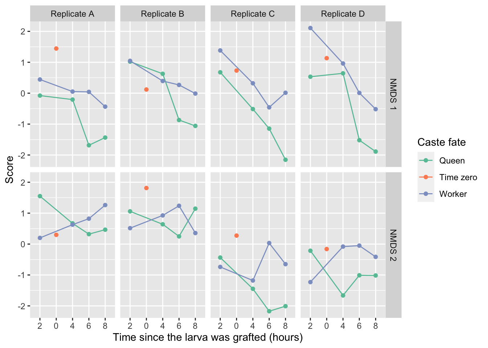
| Version | Author | Date |
|---|---|---|
| f2f9805 | lukeholman | 2020-03-12 |
Figure: Results of non-metric multidimensional scaling analysis, which reduces the distance matrix between samples to two dimensions (here termed NMDS 1 and 2; \(r^2 =\) 0.9771948). The plot suggests that queen- and worker-destined larvae have different gene expression profiles, that the transcriptome changes over time, and that the caste difference becomes larger with time since grafting.
Plotting NMDS 1 vs NMDS 2
nmds_output %>%
mutate_at(vars(starts_with("X")), ~ as.numeric(scale(.x))) %>%
gather(NMDS, Score, starts_with("X")) %>%
mutate(NMDS = gsub("X", "NMDS ", NMDS),
Replicate = paste("Replicate", Replicate)) %>%
spread(NMDS, Score) %>%
ggplot(aes(`NMDS 1`, `NMDS 2`, colour = Caste, group = Caste)) +
geom_path() +
geom_text_repel(aes(label = Time)) +
geom_point() +
facet_wrap(~Replicate) +
scale_colour_brewer(palette = "Set2", name = "Caste fate") +
xlab("NMDS 1") + ylab("NMDS 2")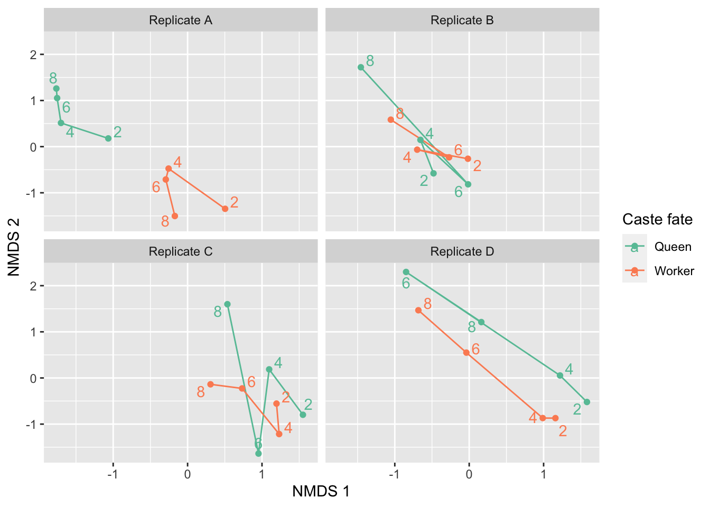
| Version | Author | Date |
|---|---|---|
| f2f9805 | lukeholman | 2020-03-12 |
Figure: Results of non-metric multidimensional scaling analysis, which reduces the distance matrix between samples to two dimensions (here termed NMDS 1 and 2; \(r^2 =\) 0.9771948). The plot suggests that queen- and worker-destined larvae have different gene expression profiles, that the transcriptome changes over time, and that the caste difference becomes larger with time since grafting.
Remove batch effects using limma::removeBatchEffect
expression_no_batch_effect <- removeBatchEffect(expression_data, batch = sample_ids$replicate)Plot the NMDS scores again, after removing batch effect
Plotting NMDS 1 by caste and time point
set.seed(12345)
nmds_output <- dist(t(expression_no_batch_effect)) %>% nmds(maxdim = 2)
nmds_r2 <- tail(nmds_output$r2, 1)
nmds_output <- data.frame(Caste = sample_ids$caste,
Time = sample_ids$time_point,
Replicate = sample_ids$replicate,
label = paste(sample_ids$caste, sample_ids$time_point),
nmds_output$conf[[length(nmds_output$conf)]])
nmds_output %>%
mutate_at(vars(starts_with("X")), ~ as.numeric(scale(.x))) %>%
gather(NMDS, Score, starts_with("X")) %>%
mutate(NMDS = gsub("X", "NMDS ", NMDS)) %>%
group_by(NMDS, Caste, Time) %>%
summarise(Score = mean(Score)) %>%
ggplot(aes(Time, Score, colour = Caste, group = Caste)) +
geom_line() +
geom_point() +
scale_colour_brewer(palette = "Set2", name = "Caste fate") +
facet_wrap(~NMDS) +
xlab("Time since the larva was grafted (hours)")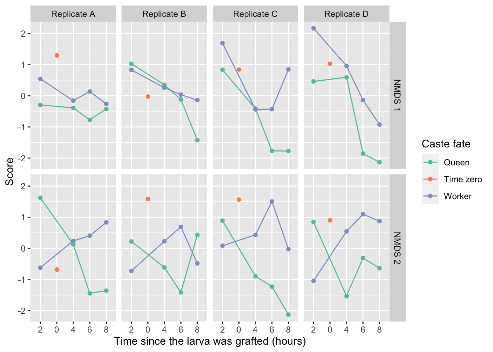
| Version | Author | Date |
|---|---|---|
| f2f9805 | lukeholman | 2020-03-12 |
Figure: Results of non-metric multidimensional scaling analysis, after removing the batch effects using limma::removeBatchEffect.
Plotting NMDS 1 vs NMDS 2
nmds_output %>%
mutate_at(vars(starts_with("X")), ~ as.numeric(scale(.x))) %>%
gather(NMDS, Score, starts_with("X")) %>%
mutate(NMDS = gsub("X", "NMDS ", NMDS),
Replicate = paste("Replicate", Replicate)) %>%
spread(NMDS, Score) %>%
ggplot(aes(`NMDS 1`, `NMDS 2`, colour = Caste, group = Caste)) +
geom_path() +
geom_text_repel(aes(label = Time)) +
geom_point() +
facet_wrap(~Replicate) +
scale_colour_brewer(palette = "Set2", name = "Caste fate") +
xlab("NMDS 1") + ylab("NMDS 2")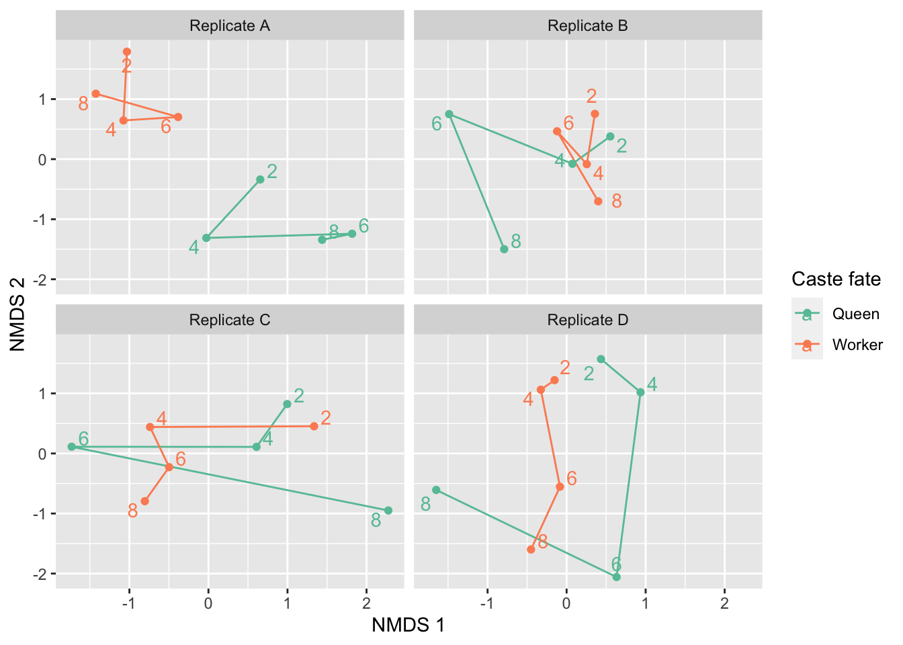
| Version | Author | Date |
|---|---|---|
| f2f9805 | lukeholman | 2020-03-12 |
Figure: Results of non-metric multidimensional scaling analysis, after removing the batch effects using limma::removeBatchEffect.
Plot a Euclidean distance matrix of all samples
sampleDistMatrix <- (as.matrix(dist(t(expression_no_batch_effect))))
colors1 <- colorRampPalette( rev(brewer.pal(9, "Blues")) )(255)
colors2 <- colorRampPalette( c(rev(brewer.pal(9, "Blues")),
"white", brewer.pal(9, "Reds")) )(255)
rownames(sampleDistMatrix) <- paste(apply(sample_ids[,1:2],
1, paste0, collapse = " "), "h", sep = "")
colnames(sampleDistMatrix) <- NULL
sampleDistMatrix %>%
pheatmap(col = colors2,
cutree_rows = 7)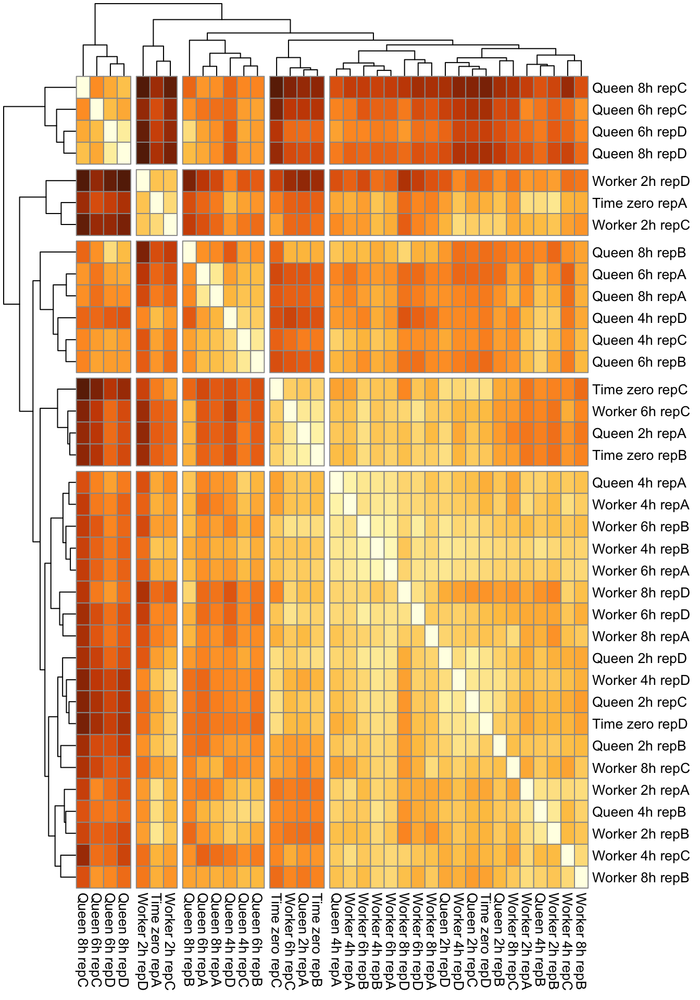
| Version | Author | Date |
|---|---|---|
| f2f9805 | lukeholman | 2020-03-12 |
Heatmap clustering samples and transcripts
Samples don’t cluster perfectly (e.g. there is one 2h Worker sample clustering with some 6h and 8h Queen samples), though overall there is some differentiation by caste and time. The ‘transcriptional modules’ that we later analyse using WGCNA are evident.
scaled_no_batch_effect <- expression_no_batch_effect
for(i in 1:nrow(expression_no_batch_effect)) scaled_no_batch_effect[i,] <- as.numeric(scale(expression_no_batch_effect[i, ]))
rownames(scaled_no_batch_effect) <- NULL
scaled_no_batch_effect %>%
pheatmap(col=colors2, labels_col = paste(sample_ids$caste, sample_ids$time_point),
cutree_cols = 7,
cutree_rows = 5,
labels_row = NULL)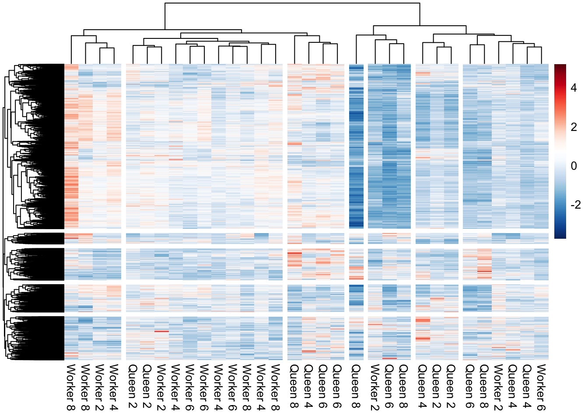
| Version | Author | Date |
|---|---|---|
| f2f9805 | lukeholman | 2020-03-12 |
Detecting differential expression with limma::voom
Run the linear models
The formula used for the linear models: caste * time_point + replicate. We then use this model to compute planned contrasts that test for a caste difference at each time point (2h, 4h, 6h, 8h), as well as to measure the ccaste-specific effect of time on gene expression (e.g. we test for changes in expression between 2h and 8h, separately in queens and workers).
In the following tables, a positive log fold change in expression indicates higher expression in queens vs workers (for caste comparisons) or higher expression at later times than earlier times (for temporal comparisons).
voom_gene_data <- calcNormFactors(DGEList(expression_data))
mm <- model.matrix(~ caste * time_point + replicate, data = sample_ids)
colnames(mm) <- gsub("caste", "", colnames(mm))
voom_gene_fit <- voom_gene_data %>% voom(mm, plot = FALSE) %>% lmFit(mm)
# head(coef(voom_gene_fit))
# decideTests(voom_gene_fit)[,-1][apply(decideTests(voom_gene_fit)[,-1], 1, function(x) any(x != 0)), ]
contrast.matrix <- cbind(
Queen_2 = c(1,0,0,0,0,0,0,0,0,0,0),
Queen_4 = c(1,0,1,0,0,0,0,0,0,0,0),
Queen_6 = c(1,0,0,1,0,0,0,0,0,0,0),
Queen_8 = c(1,0,0,0,1,0,0,0,0,0,0),
Worker_2 = c(1,1,0,0,0,0,0,0,0,0,0),
Worker_4 = c(1,1,1,0,0,0,0,0,1,0,0),
Worker_6 = c(1,1,0,1,0,0,0,0,0,1,0),
Worker_8 = c(1,1,0,0,1,0,0,0,0,0,1)) %>%
as.data.frame() %>%
mutate(Caste_2 = Queen_2 - Worker_2, # positive difference in logFC means queen-biased
Caste_4 = Queen_4 - Worker_4,
Caste_6 = Queen_6 - Worker_6,
Caste_8 = Queen_8 - Worker_8,
Queen_2vs4 = Queen_4 - Queen_2,
Queen_2vs6 = Queen_6 - Queen_2,
Queen_2vs8 = Queen_8 - Queen_2,
Queen_4vs6 = Queen_6 - Queen_4,
Queen_4vs8 = Queen_8 - Queen_4,
Queen_6vs8 = Queen_8 - Queen_6,
Worker_2vs4 = Worker_4 - Worker_2,
Worker_2vs6 = Worker_6 - Worker_2,
Worker_2vs8 = Worker_8 - Worker_2,
Worker_4vs6 = Worker_6 - Worker_4,
Worker_4vs8 = Worker_8 - Worker_4,
Worker_6vs8 = Worker_8 - Worker_6)
get_results <- function(voom_fit, column){
voom_fit %>%
contrasts.fit(contrast.matrix[, names(contrast.matrix) == column]) %>%
eBayes() %>%
topTable(n = Inf) %>%
rownames_to_column("Gene")
}
caste_results <- rbind(get_results(voom_gene_fit, "Caste_2") %>% mutate(Time = 2),
get_results(voom_gene_fit, "Caste_4") %>% mutate(Time = 4),
get_results(voom_gene_fit, "Caste_6") %>% mutate(Time = 6),
get_results(voom_gene_fit, "Caste_8") %>% mutate(Time = 8)) %>%
left_join(tbl(db, "gene_names") %>%
select(gene_symbol, gene_name) %>%
collect(n=Inf),
by = c("Gene" = "gene_symbol")) %>%
rename(`Gene name` = gene_name,
`Gene symbol` = Gene) %>%
as_tibble() %>% select(Time, `Gene symbol`, `Gene name`, everything())
time_results <- rbind(
get_results(voom_gene_fit, "Queen_2vs4") %>%
mutate(Caste = "Queen", Time = "2 vs 4"),
get_results(voom_gene_fit, "Queen_2vs6") %>%
mutate(Caste = "Queen", Time = "2 vs 6"),
get_results(voom_gene_fit, "Queen_2vs8") %>%
mutate(Caste = "Queen", Time = "2 vs 8"),
get_results(voom_gene_fit, "Queen_4vs6") %>%
mutate(Caste = "Queen", Time = "4 vs 6"),
get_results(voom_gene_fit, "Queen_4vs8") %>%
mutate(Caste = "Queen", Time = "4 vs 8"),
get_results(voom_gene_fit, "Queen_6vs8") %>%
mutate(Caste = "Queen", Time = "6 vs 8"),
get_results(voom_gene_fit, "Worker_2vs4") %>%
mutate(Caste = "Worker", Time = "2 vs 4"),
get_results(voom_gene_fit, "Worker_2vs6") %>%
mutate(Caste = "Worker", Time = "2 vs 6"),
get_results(voom_gene_fit, "Worker_2vs8") %>%
mutate(Caste = "Worker", Time = "2 vs 8"),
get_results(voom_gene_fit, "Worker_4vs6") %>%
mutate(Caste = "Worker", Time = "4 vs 6"),
get_results(voom_gene_fit, "Worker_4vs8") %>%
mutate(Caste = "Worker", Time = "4 vs 8"),
get_results(voom_gene_fit, "Worker_6vs8") %>%
mutate(Caste = "Worker", Time = "6 vs 8")) %>%
left_join(tbl(db, "gene_names") %>%
select(gene_symbol, gene_name) %>%
collect(n=Inf),
by = c("Gene" = "gene_symbol")) %>%
rename(`Gene name` = gene_name,
`Gene symbol` = Gene) %>%
as_tibble() %>%
select(Caste, Time, `Gene symbol`, `Gene name`, everything())
# caste_results %>% filter(adj.P.Val <= 0.05) %>% pull(`Gene name`) %>% unique()
# caste_results %>% filter(`Gene name` == "DNA methyltransferase 3")
# caste_results %>% filter(`Gene name` == "transformer-2 sex-determining protein")
# time_results %>% filter(`Gene name` == "DNA methyltransferase 3")
# time_results %>% filter(`Gene symbol` == "Dnmt1a")
# time_results %>% filter(grepl("royal jelly", tolower(`Gene name`)) & P.Value <= 0.05)
# time_results %>% filter(`Gene name` == "transformer-2 sex-determining protein")
# caste_results %>% filter(is.na(`Gene name`)) %>% distinct(`Gene symbol`, .keep_all = T)
write_csv(caste_results, path = "data/caste_results.csv")
write_csv(time_results, path = "data/time_results.csv")List of genes with significant caste-specific expression
get_intersections <- function(results_df, split_by){
results_df <- results_df %>%
mutate(Gene = paste(`Gene symbol`, `Gene name`, sep = "~~")) %>%
filter(adj.P.Val <= 0.05)
splitter <- results_df %>% pull(!! split_by)
sig_genes <- results_df %>%
pull(`Gene`) %>%
split(splitter)
names(sig_genes) <- unique(splitter)
ven <- venn(sig_genes, show.plot = FALSE)
attr(ven, "intersections")
}
get_intersections(caste_results, "Time") %>% melt() %>%
mutate(
`Hour(s) with a significant caste difference:` = gsub(":", ", ", L1),
split = strsplit(as.character(value), split = "~~"),
`Gene symbol` = map_chr(split, ~ .x[1]),
`Gene name` = map_chr(split, ~ .x[2])) %>%
select(`Gene symbol`, `Gene name`,
`Hour(s) with a significant caste difference:`) %>%
arrange(-nchar(`Hour(s) with a significant caste difference:`),
`Hour(s) with a significant caste difference:`) %>% as_tibble() %>%
left_join(
caste_results %>%
select(`Gene symbol`, Time, logFC) %>%
distinct() %>%
spread(Time, logFC) %>%
rename_at(vars(-`Gene symbol`), ~ paste("logFC at ", .x, "h", sep = "")) %>%
mutate_at(vars(-`Gene symbol`), ~ format(round(.x, 2), nsmall = 2)),
by = "Gene symbol") %>%
kable_table()| Gene symbol | Gene name | Hour(s) with a significant caste difference: | logFC at 2h | logFC at 4h | logFC at 6h | logFC at 8h |
|---|---|---|---|---|---|---|
| LOC100578546 | uncharacterized LOC100578546 | 2, 4, 6 | -1.13 | -0.69 | -0.86 | -0.27 |
| LOC408817 | alanine–glyoxylate aminotransferase 2-like | 4, 6, 8 | 1.02 | 3.58 | 3.75 | 3.20 |
| LOC408859 | pyrroline-5-carboxylate reductase 2 | 4, 6, 8 | 0.86 | 1.76 | 1.54 | 1.08 |
| Grd | GABA-gated ion channel | 4, 6, 8 | 0.56 | 1.86 | 1.45 | 1.45 |
| LOC552804 | tubulin-specific chaperone cofactor E-like protein | 4, 6, 8 | 0.24 | 1.32 | 1.29 | 1.36 |
| LOC725540 | uncharacterized LOC725540 | 4, 6, 8 | 0.60 | 2.37 | 2.45 | 2.28 |
| LOC552771 | hydroxyacid oxidase 1 | 4, 6, 8 | 0.14 | 1.20 | 1.38 | 1.80 |
| LOC113219221 | NA | 4, 6, 8 | 0.86 | 1.94 | 2.39 | 3.11 |
| LOC102654936 | uncharacterized LOC102654936 | 4, 6, 8 | 0.03 | 1.80 | 2.00 | 1.82 |
| E75 | ecdysone-induced protein 75 | 4, 6, 8 | -0.01 | 1.13 | 0.75 | 0.95 |
| LOC411569 | protein TANC2-like | 4, 6, 8 | 0.04 | 0.96 | 0.91 | 0.82 |
| LOC726871 | synaptic vesicle glycoprotein 2B | 4, 6, 8 | 0.79 | 1.47 | 1.43 | 0.88 |
| LOC724304 | ATP-binding cassette sub-family G member 1-like | 4, 6, 8 | 0.11 | 1.04 | 0.94 | 1.08 |
| LOC409882 | TLD domain-containing protein 2 | 4, 6, 8 | 0.12 | 0.73 | 0.67 | 0.68 |
| LOC102655070 | uncharacterized LOC102655070 | 4, 6, 8 | 0.21 | 1.98 | 1.51 | 1.70 |
| LOC725918 | 39S ribosomal protein L53, mitochondrial | 4, 6, 8 | -0.09 | -0.51 | -0.73 | -0.69 |
| LOC411099 | protein yippee-like 1 | 4, 6, 8 | 0.39 | 1.73 | 1.07 | 0.95 |
| LOC409628 | neutral ceramidase | 4, 6, 8 | 0.42 | 1.45 | 1.96 | 1.89 |
| LOC412470 | MAP kinase-interacting serine/threonine-protein kinase 1 | 4, 6, 8 | 0.34 | 0.91 | 0.58 | 0.52 |
| LOC102656634 | uncharacterized LOC102656634 | 4, 6, 8 | 0.31 | 1.70 | 1.70 | 2.06 |
| LOC726371 | cysteine dioxygenase type 1 | 4, 6, 8 | 0.09 | 0.79 | 0.93 | 0.97 |
| LOC727135 | uncharacterized LOC727135 | 4, 6, 8 | 0.06 | 0.59 | 0.67 | 0.74 |
| LOC725362 | protein arginine N-methyltransferase 1 | 4, 6, 8 | -0.01 | -0.53 | -0.63 | -0.58 |
| LOC726110 | glutamate-rich WD repeat-containing protein 1 | 4, 6, 8 | -0.01 | -0.34 | -0.47 | -0.39 |
| LOC552434 | CCR4-NOT transcription complex subunit 11 | 4, 6, 8 | 0.00 | -0.47 | -0.33 | -0.41 |
| LOC100576901 | cGMP-dependent protein kinase 1-like | 4, 6, 8 | 0.45 | 1.17 | 1.25 | 0.89 |
| LOC550673 | inosine-5’-monophosphate dehydrogenase 1b | 4, 6, 8 | -0.03 | -0.46 | -0.39 | -0.48 |
| LOC727243 | uncharacterized LOC727243 | 4, 6, 8 | 0.46 | 2.19 | 2.16 | 1.34 |
| LOC100578928 | calcium and integrin-binding protein 1-like | 4, 6, 8 | 0.42 | 1.11 | 1.10 | 1.04 |
| LOC724644 | uncharacterized LOC724644 | 4, 6, 8 | 0.42 | 1.62 | 1.42 | 1.21 |
| LOC408299 | purine nucleoside phosphorylase | 4, 6, 8 | 0.36 | 1.40 | 1.63 | 1.86 |
| LOC550965 | probable cytochrome P450 6a14 | 4, 6, 8 | 0.41 | 1.58 | 1.92 | 2.35 |
| LOC725510 | arrestin domain-containing protein 3 | 4, 6, 8 | 0.16 | 0.55 | 0.43 | 0.37 |
| LOC725263 | tumor protein p53-inducible nuclear protein 2-like | 4, 6, 8 | 0.40 | 1.31 | 0.89 | 1.10 |
| LOC409667 | BCL2/adenovirus E1B 19 kDa protein-interacting protein 3 | 4, 6, 8 | 0.13 | 1.10 | 1.00 | 0.90 |
| LOC406132 | histone H4 | 4, 6, 8 | 0.17 | 0.84 | 0.70 | 0.91 |
| LOC724518 | serine-rich adhesin for platelets | 4, 6, 8 | 0.21 | 0.56 | 0.95 | 1.08 |
| LOC411629 | zinc finger protein ubi-d4 A | 4, 6, 8 | -0.03 | -0.55 | -0.49 | -0.52 |
| LOC413575 | facilitated trehalose transporter Tret1-like | 4, 6, 8 | 0.69 | 1.53 | 2.20 | 1.28 |
| LOC410805 | open rectifier potassium channel protein 1 | 4, 6, 8 | 0.12 | 0.38 | 0.38 | 0.43 |
| LOC410732 | 3-phosphoinositide-dependent protein kinase 1 | 4, 6, 8 | 0.37 | 1.07 | 0.69 | 1.26 |
| LOC107964278 | uncharacterized LOC107964278 | 4, 6, 8 | 0.32 | 1.79 | 1.66 | 2.57 |
| LOC408650 | inositol oxygenase | 4, 6, 8 | 0.02 | 1.59 | 2.21 | 2.52 |
| LOC551523 | adenylate kinase | 4, 6, 8 | -0.03 | -0.46 | -0.38 | -0.38 |
| LOC113218825 | NA | 4, 6, 8 | 0.57 | 2.10 | 1.72 | 1.75 |
| LOC410330 | phosphatidylserine synthase 1 | 4, 6, 8 | 0.10 | -0.34 | -0.35 | -0.25 |
| LOC412929 | androgen-induced gene 1 protein-like | 4, 6, 8 | 0.02 | -0.43 | -0.29 | -0.31 |
| egh | beta-1,4-mannosyltransferase egh | 4, 6, 8 | 0.04 | -0.43 | -0.51 | -0.56 |
| LOC102656189 | uncharacterized LOC102656189 | 4, 6, 8 | 0.22 | 1.13 | 1.06 | 1.38 |
| LOC100576132 | uncharacterized LOC100576132 | 4, 6, 8 | -0.30 | -0.44 | -0.52 | -0.93 |
| LOC413655 | 3-oxoacyl-[acyl-carrier-protein] synthase, mitochondrial | 4, 6, 8 | -0.07 | -0.31 | -0.35 | -0.23 |
| LOC102656066 | uncharacterized LOC102656066 | 4, 6, 8 | 0.01 | 1.76 | 1.78 | 2.39 |
| LOC552373 | dolichyldiphosphatase 1-like | 4, 6, 8 | -0.03 | -0.43 | -0.57 | -0.59 |
| LOC726158 | gamma-glutamyltranspeptidase 1-like | 4, 6, 8 | -0.03 | -0.55 | -0.68 | -0.81 |
| LOC100576617 | uncharacterized LOC100576617 | 4, 6, 8 | 0.30 | 1.09 | 1.21 | 1.30 |
| LOC100577142 | uncharacterized LOC100577142 | 4, 6, 8 | 0.24 | 0.98 | 1.21 | 1.57 |
| LOC409515 | long-chain-fatty-acid–CoA ligase 4 | 4, 6, 8 | 0.07 | -0.46 | -0.51 | -0.60 |
| LOC412221 | proliferation-associated protein 2G4 | 4, 6, 8 | 0.11 | -0.40 | -0.49 | -0.46 |
| LOC410828 | tryptophan 2,3-dioxygenase | 4, 6, 8 | 0.19 | 0.71 | 0.77 | 0.77 |
| LOC551957 | facilitated trehalose transporter Tret1-like | 4, 6, 8 | 0.15 | 1.03 | 0.93 | 0.78 |
| LOC726040 | 4-coumarate–CoA ligase 1 | 4, 6, 8 | 0.27 | 0.53 | 1.08 | 1.48 |
| LOC100578420 | uncharacterized LOC100578420 | 4, 6, 8 | 0.17 | 1.10 | 1.02 | 0.97 |
| LOC100577053 | glycine dehydrogenase (decarboxylating), mitochondrial | 4, 6, 8 | 0.18 | 0.71 | 0.92 | 0.93 |
| LOC552006 | uncharacterized protein DDB_G0287625-like | 4, 6, 8 | 0.01 | -0.26 | -0.34 | -0.22 |
| LOC100576799 | uncharacterized LOC100576799 | 4, 6, 8 | 0.12 | -0.41 | -0.49 | -0.44 |
| LOC411795 | Golgi to ER traffic protein 4 homolog | 4, 6, 8 | 0.11 | -0.41 | -0.28 | -0.49 |
| LOC410424 | pyruvate dehydrogenase (acetyl-transferring) kinase, mitochondrial | 4, 6, 8 | 0.55 | 1.41 | 1.14 | 1.08 |
| LOC113219088 | NA | 4, 6, 8 | -0.01 | 1.13 | 0.95 | 1.28 |
| LOC107965350 | uncharacterized LOC107965350 | 4, 6, 8 | 0.30 | 2.22 | 2.44 | 2.17 |
| LOC100576125 | nucleoporin NDC1 | 4, 6, 8 | -0.09 | -0.41 | -0.45 | -0.36 |
| LOC411585 | E3 ubiquitin-protein ligase NRDP1 | 4, 6, 8 | 0.13 | -0.39 | -0.28 | -0.27 |
| LOC411093 | testis-specific serine/threonine-protein kinase 1 | 4, 6, 8 | 0.35 | 0.73 | 0.84 | 1.10 |
| Hex70a | hexamerin 70a | 4, 6, 8 | 0.22 | 2.17 | 3.10 | 3.72 |
| LOC100576446 | solute carrier family 26 member 6-like | 4, 6, 8 | 0.10 | 0.69 | 1.13 | 1.25 |
| LOC107963970 | uncharacterized LOC107963970 | 4, 6, 8 | -0.15 | 2.09 | 1.93 | 1.89 |
| LOC412299 | muscarinic acetylcholine receptor DM1 | 4, 6, 8 | 0.12 | 0.46 | 0.36 | 0.37 |
| LOC725305 | uncharacterized LOC725305 | 4, 6, 8 | 0.16 | 1.46 | 1.71 | 1.07 |
| LOC410379 | dual 3’,5’-cyclic-AMP and -GMP phosphodiesterase 11 | 4, 6, 8 | 0.14 | 0.56 | 0.50 | 0.37 |
| LOC413416 | protein bicaudal C homolog 1-B | 4, 6, 8 | 0.42 | 0.73 | 0.57 | 0.49 |
| LOC411106 | 3’(2’),5’-bisphosphate nucleotidase 1 | 4, 6, 8 | -0.11 | -0.26 | -0.22 | -0.29 |
| LOC102653894 | uncharacterized LOC102653894 | 4, 6, 8 | -0.01 | 0.79 | 0.71 | 0.95 |
| LOC552512 | kinesin 3E | 4, 6, 8 | -0.05 | 0.82 | 0.79 | 1.04 |
| LOC726362 | 4-coumarate–CoA ligase 1 | 4, 6, 8 | 0.19 | 0.95 | 1.09 | 1.13 |
| LOC724685 | protein-L-isoaspartate O-methyltransferase domain-containing protein 1-like | 4, 6, 8 | -0.02 | 0.56 | 0.65 | 0.65 |
| LOC408456 | facilitated trehalose transporter Tret1-2 homolog | 4, 6, 8 | 0.21 | 0.92 | 0.95 | 0.77 |
| LOC100578731 | uncharacterized LOC100578731 | 4, 6, 8 | 0.24 | 1.44 | 1.73 | 1.73 |
| LOC551771 | methionine aminopeptidase 2 | 4, 6, 8 | 0.12 | 0.46 | 0.34 | 0.38 |
| LOC100576457 | probable ribosome biogenesis protein RLP24 | 4, 6, 8 | -0.21 | -0.36 | -0.52 | -0.35 |
| LOC102654676 | neurofilament heavy polypeptide-like | 4, 6, 8 | 0.21 | 0.70 | 0.54 | 0.95 |
| LOC552260 | U6 snRNA-associated Sm-like protein LSm1 | 4, 6, 8 | -0.05 | -0.42 | -0.42 | -0.35 |
| LOC412452 | max-like protein X | 4, 6, 8 | 0.02 | -0.24 | -0.34 | -0.25 |
| LOC413390 | ATP-binding cassette sub-family F member 1 | 4, 6, 8 | -0.01 | -0.57 | -0.44 | -0.59 |
| LOC410706 | rho GTPase-activating protein 7 | 4, 6, 8 | 0.09 | 0.62 | 0.56 | 0.54 |
| LOC113218743 | NA | 4, 6, 8 | 0.25 | 0.77 | 0.99 | 0.98 |
| LOC412460 | putative cystathionine gamma-lyase 2 | 4, 6, 8 | 0.04 | -0.42 | -0.33 | -0.54 |
| LOC551301 | solute carrier family 25 member 40 | 4, 6, 8 | -0.15 | -0.36 | -0.43 | -0.28 |
| LOC113218875 | NA | 4, 6, 8 | 0.37 | 0.90 | 0.83 | 0.70 |
| LOC725230 | histone H4 | 4, 6, 8 | -0.02 | 0.86 | 0.76 | 1.29 |
| LOC413086 | DNA ligase 3 | 4, 6, 8 | -0.11 | 0.59 | 0.59 | 0.77 |
| LOC551779 | histone H2A.V | 4, 6, 8 | 0.05 | -0.45 | -0.61 | -0.42 |
| LOC725114 | chymotrypsin inhibitor | 4, 6, 8 | -0.24 | 0.84 | 0.92 | 1.31 |
| LOC724927 | importin-5 | 4, 6, 8 | 0.05 | -0.46 | -0.37 | -0.53 |
| LOC413664 | GPI transamidase component PIG-S | 4, 6, 8 | 0.17 | 0.35 | 0.35 | 0.56 |
| LOC726081 | mitochondrial import receptor subunit TOM70 | 4, 6, 8 | 0.00 | -0.35 | -0.27 | -0.24 |
| LOC551242 | eukaryotic translation initiation factor 3 subunit E | 4, 6, 8 | -0.09 | -0.38 | -0.42 | -0.58 |
| LOC552193 | proton-coupled amino acid transporter 1-like | 4, 6, 8 | 0.59 | 0.71 | 0.88 | 0.54 |
| LOC100578532 | uncharacterized LOC100578532 | 4, 6, 8 | -0.13 | 0.98 | 0.86 | 0.78 |
| LOC551546 | BAG family molecular chaperone regulator 2 | 4, 6, 8 | 0.02 | -0.32 | -0.27 | -0.34 |
| LOC551270 | integrator complex subunit 9 | 4, 6, 8 | -0.07 | -0.24 | -0.33 | -0.28 |
| LOC725784 | uncharacterized LOC725784 | 4, 6, 8 | 0.83 | 1.50 | 2.15 | 2.70 |
| LOC409187 | MD-2-related lipid-recognition protein-like | 4, 6, 8 | 0.20 | 0.70 | 0.77 | 1.04 |
| LOC102654592 | coiled-coil domain-containing protein 112-like | 4, 6, 8 | 0.13 | 0.67 | 0.62 | 0.65 |
| LOC552515 | ATP-dependent RNA helicase WM6 | 4, 6, 8 | -0.06 | -0.35 | -0.51 | -0.45 |
| LOC552180 | cob(I)yrinic acid a,c-diamide adenosyltransferase, mitochondrial-like | 4, 6, 8 | -0.23 | -0.26 | -0.33 | -0.18 |
| LOC551839 | 1,2-dihydroxy-3-keto-5-methylthiopentene dioxygenase | 4, 6, 8 | -0.09 | -0.36 | -0.42 | -0.29 |
| Csd | complementary sex determiner | 4, 6, 8 | -0.25 | -0.57 | -0.67 | -0.54 |
| LOC551290 | cathepsin O-like | 4, 6, 8 | 0.19 | 0.62 | 0.52 | 0.68 |
| LOC113219028 | NA | 4, 6, 8 | 0.11 | 1.15 | 1.61 | 1.06 |
| LOC408690 | calmodulin-like | 4, 6, 8 | 0.10 | 0.90 | 0.77 | 0.99 |
| LOC408666 | uncharacterized LOC408666 | 4, 6, 8 | 0.03 | 0.59 | 1.21 | 1.37 |
| LOC552491 | NADPH-dependent diflavin oxidoreductase 1 | 4, 6, 8 | 0.05 | -0.44 | -0.42 | -0.52 |
| LOC725189 | protein bric-a-brac 1-like | 4, 6, 8 | 0.06 | 0.62 | 0.56 | 0.62 |
| LOC410626 | sodium-coupled monocarboxylate transporter 1 | 4, 6, 8 | 0.61 | 1.15 | 1.55 | 1.44 |
| LOC409590 | cyclin-dependent kinase 1 | 4, 6, 8 | -0.08 | -0.34 | -0.58 | -0.43 |
| LOC410043 | ornithine decarboxylase-like | 4, 6, 8 | 0.16 | -0.51 | -0.46 | -0.41 |
| LOC100577451 | glycolipid transfer protein | 4, 6, 8 | 0.00 | -0.23 | -0.24 | -0.19 |
| LOC414008 | ribonucleoside-diphosphate reductase subunit M2 | 4, 6, 8 | -0.28 | -0.57 | -1.02 | -0.68 |
| LOC412472 | protein lethal(2)denticleless | 4, 6, 8 | -0.03 | -0.45 | -0.50 | -0.53 |
| LOC724552 | elongation of very long chain fatty acids protein AAEL008004-like | 4, 6, 8 | 0.57 | 0.73 | 1.20 | 1.14 |
| HEX70b | hexamerin 70b | 4, 6, 8 | 0.24 | 2.93 | 3.39 | 3.43 |
| LOC412200 | threonine–tRNA ligase, cytoplasmic | 4, 6, 8 | 0.02 | -0.27 | -0.29 | -0.23 |
| LOC100576425 | uncharacterized LOC100576425 | 4, 6, 8 | -0.11 | 0.72 | 0.77 | 0.83 |
| LOC725422 | box A-binding factor-like | 4, 6, 8 | 0.17 | 0.69 | 0.79 | 0.81 |
| LOC408453 | cytochrome P450 9e2 | 4, 6, 8 | 0.26 | 1.22 | 0.99 | 2.12 |
| LOC409701 | uncharacterized LOC409701 | 4, 6, 8 | 0.12 | 0.56 | 0.59 | 0.69 |
| LOC552688 | acyl-CoA:lysophosphatidylglycerol acyltransferase 1-like | 4, 6, 8 | 0.01 | -0.34 | -0.42 | -0.41 |
| LOC726312 | receptor-binding cancer antigen expressed on SiSo cells | 4, 6, 8 | -0.07 | -0.25 | -0.21 | -0.27 |
| LOC412843 | phosphoenolpyruvate carboxykinase | 4, 6, 8 | 0.42 | 2.32 | 3.50 | 4.42 |
| Hex110 | hexamerin 110 | 4, 6, 8 | 0.67 | 2.16 | 2.66 | 2.23 |
| LOC410448 | carcinine transporter | 4, 6, 8 | -0.06 | 0.61 | 0.94 | 0.83 |
| LOC100576841 | uncharacterized LOC100576841 | 4, 6, 8 | 0.35 | 0.60 | 0.67 | 0.93 |
| LOC409487 | probable glutamine-dependent NAD(+) synthetase | 4, 6, 8 | 0.16 | 0.36 | 0.33 | 0.36 |
| LOC100576384 | tyrosine-protein phosphatase 10D | 4, 6, 8 | 0.22 | 0.47 | 0.43 | 0.38 |
| LOC113219321 | NA | 4, 6, 8 | 0.42 | 0.85 | 1.09 | 1.11 |
| LOC411917 | NAD-dependent protein deacetylase sirtuin-1 | 4, 6, 8 | 0.15 | 0.36 | 0.51 | 0.41 |
| LOC412458 | farnesol dehydrogenase-like | 4, 6, 8 | 0.17 | 0.53 | 0.58 | 0.49 |
| LOC411509 | tRNA (adenine(58)-N(1))-methyltransferase catalytic subunit TRMT61A | 4, 6, 8 | -0.18 | -0.43 | -0.48 | -0.35 |
| LOC725578 | uncharacterized LOC725578 | 4, 6, 8 | 0.59 | 1.08 | 0.93 | 0.87 |
| LOC409448 | collagen alpha-2(IX) chain-like | 4, 6, 8 | -0.16 | -0.58 | -1.04 | -0.72 |
| LOC725746 | uncharacterized LOC725746 | 4, 6, 8 | -0.15 | -0.36 | -0.69 | -0.59 |
| LOC552149 | aquaporin AQPAn.G-like | 4, 6, 8 | 0.41 | 0.83 | 0.96 | 1.42 |
| LOC413385 | uncharacterized LOC413385 | 4, 6, 8 | 0.14 | 0.64 | 0.60 | 0.52 |
| LOC551570 | leucine-rich repeat-containing protein C10orf11-like | 4, 6, 8 | 0.06 | -0.29 | -0.41 | -0.31 |
| LOC413840 | glucose-6-phosphate exchanger SLC37A2 | 4, 6, 8 | 0.16 | 0.32 | 0.31 | 0.27 |
| LOC107965363 | uncharacterized LOC107965363 | 4, 6, 8 | 0.06 | 0.68 | 0.70 | 0.80 |
| LOC413365 | nucleoporin SEH1 | 4, 6, 8 | 0.03 | -0.27 | -0.37 | -0.28 |
| LOC406105 | esterase A2 | 4, 6, 8 | 0.19 | 1.10 | 1.01 | 1.36 |
| LOC411978 | myrosinase 1-like | 4, 6, 8 | 0.18 | 0.65 | 1.22 | 1.15 |
| LOC102656403 | histone-lysine N-methyltransferase SETMAR-like | 4, 6, 8 | -0.04 | 0.73 | 0.87 | 1.25 |
| LOC724926 | DNA polymerase alpha subunit B | 4, 6, 8 | -0.11 | -0.25 | -0.38 | -0.22 |
| LOC113218518 | NA | 4, 6, 8 | -0.43 | 1.38 | 1.19 | 2.43 |
| LOC410244 | uncharacterized LOC410244 | 4, 6, 8 | -0.01 | -0.25 | -0.22 | -0.20 |
| LOC411472 | dynamin-1-like protein | 4, 6, 8 | -0.03 | -0.27 | -0.28 | -0.41 |
| LOC100576435 | shootin-1 | 4, 6, 8 | 0.02 | 0.45 | 0.49 | 0.42 |
| ILP-2 | insulin-like peptide 2 | 4, 6, 8 | -0.36 | -0.55 | -0.87 | -0.53 |
| LOC412031 | S-phase kinase-associated protein 2 | 4, 6, 8 | -0.11 | -0.44 | -0.66 | -0.40 |
| LOC727582 | tryptophan–tRNA ligase, cytoplasmic | 4, 6, 8 | -0.14 | -0.26 | -0.42 | -0.29 |
| LOC725074 | omega-conotoxin-like protein 1 | 4, 6, 8 | -0.18 | 0.72 | 0.67 | 1.34 |
| LOC552200 | probable histone-binding protein Caf1 | 4, 6, 8 | 0.03 | -0.24 | -0.31 | -0.35 |
| LOC107965038 | zinc transporter 2-like | 4, 6, 8 | 0.12 | 0.52 | 0.45 | 0.65 |
| LOC409006 | arrestin red cell | 4, 6 | 0.15 | 0.50 | 0.32 | -0.01 |
| LOC725099 | spermidine synthase | 4, 6 | -0.07 | -0.64 | -0.40 | -0.29 |
| LOC413596 | receptor-type guanylate cyclase gcy-4 | 4, 6 | 0.65 | 1.45 | 1.05 | 0.60 |
| LOC410201 | phosphatidate phosphatase LPIN3 | 4, 6 | 0.74 | 2.06 | 1.87 | 0.90 |
| LOC551235 | ATP-binding cassette sub-family E member 1 | 4, 6 | 0.06 | -0.35 | -0.31 | -0.16 |
| LOC725144 | uncharacterized LOC725144 | 4, 6 | -0.05 | 0.90 | 0.61 | 0.44 |
| LOC409230 | arf-GAP with coiled-coil, ANK repeat and PH domain-containing protein 2 | 4, 6 | 0.06 | 0.44 | 0.30 | 0.10 |
| LOC552256 | peroxisomal membrane protein PEX14 | 4, 6 | -0.11 | -0.29 | -0.22 | -0.18 |
| LOC413394 | vesicle-trafficking protein SEC22b-B | 4, 6 | -0.04 | -0.42 | -0.34 | -0.26 |
| LOC551724 | S-adenosylmethionine decarboxylase proenzyme | 4, 6 | -0.02 | -0.53 | -0.51 | -0.17 |
| LOC113218539 | NA | 4, 6 | -0.01 | -0.35 | -0.42 | -0.20 |
| LOC408923 | transcription initiation factor TFIID subunit 4-like | 4, 6 | 0.33 | -0.40 | -0.34 | -0.16 |
| LOC410295 | queuine tRNA-ribosyltransferase subunit QTRTD1 homolog | 4, 6 | -0.13 | -0.44 | -0.38 | -0.24 |
| LOC727251 | DNA polymerase delta small subunit-like | 4, 6 | -0.06 | -0.35 | -0.30 | -0.14 |
| LOC410352 | putative DNA helicase Ino80 | 4, 6 | 0.13 | 0.34 | 0.34 | 0.02 |
| LOC724564 | dehydrodolichyl diphosphate syntase complex subunit Nus1 | 4, 6 | 0.02 | -0.32 | -0.38 | -0.11 |
| LOC408426 | lysosomal thioesterase PPT2 homolog | 4, 6 | -0.13 | -0.44 | -0.47 | -0.06 |
| LOC551846 | membralin-like | 4, 6 | 0.12 | 0.56 | 0.44 | 0.30 |
| LOC726804 | protein BTG2-like | 4, 6 | 0.37 | 0.56 | 0.57 | -0.15 |
| LOC410183 | putative 1-phosphatidylinositol 3-phosphate 5-kinase | 4, 6 | 0.24 | 0.35 | 0.30 | 0.17 |
| RCC1 | regulator of chromosome condensation 1 | 4, 6 | -0.17 | -0.49 | -0.49 | -0.25 |
| LOC411525 | choline/ethanolamine kinase | 4, 6 | 0.23 | 0.51 | 0.61 | 0.26 |
| LOC725491 | cx9C motif-containing protein 4 | 4, 6 | -0.03 | -0.27 | -0.26 | -0.09 |
| LOC412834 | importin-11 | 4, 6 | 0.03 | -0.28 | -0.30 | -0.17 |
| LOC102655862 | uncharacterized LOC102655862 | 4, 6 | 0.09 | 0.69 | 0.57 | 0.47 |
| LOC409388 | ras-related protein Rab-18-B | 4, 6 | -0.19 | -0.28 | -0.22 | -0.14 |
| LOC724178 | uncharacterized LOC724178 | 4, 6 | 0.53 | 0.66 | 0.65 | 0.32 |
| LOC550987 | soluble calcium-activated nucleotidase 1 | 4, 6 | -0.12 | -0.37 | -0.43 | -0.06 |
| LOC107964438 | uncharacterized LOC107964438 | 4, 6 | 0.05 | 0.48 | 0.46 | 0.25 |
| LOC410972 | nuclear pore complex protein Nup54 | 4, 6 | -0.03 | -0.39 | -0.38 | -0.27 |
| LOC100577679 | origin recognition complex subunit 2 | 4, 6 | -0.13 | -0.56 | -0.54 | -0.26 |
| LOC551854 | serine/threonine-protein phosphatase 5 | 4, 6 | 0.12 | -0.26 | -0.25 | -0.17 |
| LOC102653824 | uncharacterized LOC102653824 | 4, 6 | -0.01 | -0.35 | -0.32 | -0.24 |
| LOC410852 | protein Fe65 homolog | 4, 6 | 0.22 | 0.53 | 0.60 | 0.37 |
| LOC727522 | protein G12-like | 4, 6 | 0.41 | 0.94 | 0.97 | 0.58 |
| LOC102654777 | organic cation transporter protein | 4, 6 | 0.15 | 0.84 | 0.88 | 0.59 |
| LOC724785 | ran-binding protein 3 | 4, 6 | 0.12 | 0.37 | 0.36 | 0.20 |
| LOC411186 | synaptic vesicle glycoprotein 2C | 4, 6 | 0.20 | 1.04 | 1.03 | 0.73 |
| LOC408697 | KN motif and ankyrin repeat domain-containing protein 3-like | 4, 6 | 0.65 | 0.79 | 0.86 | 0.37 |
| LOC413263 | putative inorganic phosphate cotransporter | 4, 6 | 0.88 | 1.13 | 0.98 | 0.19 |
| LOC410042 | glyoxylate reductase/hydroxypyruvate reductase-like | 4, 6 | 0.09 | -0.29 | -0.33 | -0.22 |
| LOC107965085 | bladder cancer-associated protein | 4, 6 | 0.22 | -0.41 | -0.41 | -0.19 |
| LOC411280 | GTP-binding protein 128up | 4, 6 | -0.13 | -0.33 | -0.38 | -0.15 |
| LOC726196 | ubiquitin-fold modifier 1 | 4, 6 | 0.02 | -0.29 | -0.29 | -0.16 |
| LOC102655073 | histone H4 | 4, 8 | 0.02 | 0.82 | 0.33 | 0.59 |
| LOC410862 | solute carrier family 41 member 3-like | 4, 8 | 0.40 | -0.81 | -0.18 | -1.11 |
| LOC411080 | serine/threonine-protein kinase greatwall | 4, 8 | 0.02 | -0.35 | -0.22 | -0.40 |
| LOC725400 | 4-hydroxyphenylpyruvate dioxygenase | 4, 8 | -0.28 | 0.62 | 0.39 | 0.78 |
| LOC411095 | zinc transporter 7 | 4, 8 | 0.03 | -0.37 | -0.21 | -0.36 |
| LOC725202 | chymotrypsin inhibitor-like | 4, 8 | -0.08 | 1.42 | 0.82 | 1.56 |
| LOC102656630 | uncharacterized LOC102656630 | 4, 8 | -0.16 | 1.49 | 0.49 | 1.39 |
| LOC409203 | UDP-glucuronosyltransferase 2A3-like | 4, 8 | 0.25 | 0.84 | 0.47 | 0.65 |
| Foxp | FoxP protein | 4, 8 | 0.05 | 0.89 | 0.62 | 0.90 |
| LOC100577827 | uncharacterized LOC100577827 | 4, 8 | -0.26 | 0.89 | 0.43 | 0.68 |
| LOC107964909 | uncharacterized LOC107964909 | 4, 8 | -0.23 | 1.03 | 0.54 | 0.70 |
| LOC113219065 | NA | 4, 8 | -0.06 | 0.84 | 0.27 | 0.65 |
| LOC113218650 | NA | 4, 8 | 0.27 | 0.91 | 0.34 | 0.74 |
| LOC408406 | cyclin-dependent kinase 4 | 4, 8 | 0.30 | 0.67 | 0.47 | 0.49 |
| LOC102654929 | uncharacterized LOC102654929 | 4, 8 | -0.03 | 0.69 | 0.25 | 0.61 |
| LOC551762 | adenosylhomocysteinase 2-like | 4, 8 | 0.07 | -0.43 | -0.26 | -0.55 |
| LOC725453 | guanine nucleotide-binding protein subunit gamma-e | 4, 8 | 0.05 | 0.71 | 0.47 | 0.55 |
| Or63 | odorant receptor 63 | 4, 8 | 0.17 | 1.00 | 0.60 | 1.23 |
| LOC725238 | histone H1-like | 4, 8 | 0.06 | 0.86 | 0.63 | 0.92 |
| LOC100576637 | trypsin 5G1-like | 4, 8 | 0.10 | 1.35 | 0.89 | 1.62 |
| LOC552459 | glycine-rich cell wall structural protein-like | 4, 8 | 0.08 | 1.21 | 0.86 | 1.75 |
| LOC725782 | alpha-actinin, sarcomeric | 4, 8 | 0.08 | 0.66 | 0.49 | 0.63 |
| LOC102655235 | uncharacterized LOC102655235 | 4, 8 | 0.32 | 0.73 | 0.40 | 0.63 |
| LOC551784 | probable actin-related protein 2/3 complex subunit 2 | 4, 8 | -0.01 | -0.37 | -0.28 | -0.32 |
| LOC724537 | ubiquitin carboxyl-terminal hydrolase 36 | 4, 8 | 0.09 | -0.37 | -0.15 | -0.37 |
| LOC725069 | peptide transporter family 1 | 4, 8 | 0.05 | -0.32 | -0.10 | -0.42 |
| LOC551721 | V-type proton ATPase subunit B | 4, 8 | -0.03 | -0.31 | -0.24 | -0.31 |
| nanos | protein nanos | 4, 8 | -0.15 | 0.67 | 0.45 | 0.50 |
| LOC113218528 | NA | 4, 8 | 0.14 | 0.51 | 0.14 | 0.40 |
| LOC412835 | uncharacterized LOC412835 | 4, 8 | 0.07 | -0.39 | -0.28 | -0.29 |
| LOC411642 | NF-kappa-B inhibitor-interacting Ras-like protein | 4, 8 | 0.07 | -0.59 | -0.22 | -0.55 |
| LOC100576528 | uncharacterized LOC100576528 | 4, 8 | 0.28 | 0.74 | 0.41 | 0.58 |
| LOC113218740 | NA | 4, 8 | 0.40 | 0.95 | 0.76 | 1.18 |
| LOC100576828 | protein maelstrom homolog | 4, 8 | -0.21 | -0.49 | -0.19 | -0.49 |
| LOC100577967 | uncharacterized LOC100577967 | 4, 8 | -0.06 | -0.44 | -0.22 | -0.47 |
| LOC411113 | solute carrier family 12 member 4 | 4, 8 | 0.34 | 0.55 | 0.45 | 0.48 |
| LOC113218551 | NA | 4, 8 | 0.19 | 0.92 | 0.63 | 0.86 |
| LOC726364 | metaxin-2 | 4, 8 | -0.03 | -0.26 | -0.21 | -0.22 |
| LOC552010 | 60S ribosomal export protein NMD3 | 4, 8 | -0.20 | -0.49 | -0.34 | -0.42 |
| LOC725978 | translation initiation factor IF-2-like | 4, 8 | 0.22 | 1.05 | 0.47 | 0.99 |
| LOC725936 | titin homolog | 4, 8 | 0.01 | 0.45 | 0.17 | 0.40 |
| LOC102655278 | uncharacterized LOC102655278 | 4, 8 | -0.10 | 0.80 | 0.08 | 1.05 |
| LOC413588 | bystin | 4, 8 | -0.17 | -0.49 | -0.41 | -0.51 |
| LOC550935 | splicing factor 3B subunit 3 | 4, 8 | 0.08 | -0.40 | -0.21 | -0.41 |
| LOC100576405 | AT-rich interactive domain-containing protein 5B-like | 4, 8 | -0.05 | 0.86 | 0.62 | 0.80 |
| LOC409904 | uncharacterized LOC409904 | 4, 8 | 0.09 | 0.57 | 0.18 | 0.46 |
| LOC725046 | uncharacterized LOC725046 | 4, 8 | 0.26 | 0.63 | 0.39 | 0.85 |
| LOC410933 | serine/threonine-protein kinase S6KL | 4, 8 | 0.18 | 0.44 | 0.37 | 0.39 |
| LOC113219104 | NA | 4, 8 | 0.27 | 0.65 | 0.36 | 0.88 |
| LOC724654 | cytochrome b5-like | 4, 8 | -0.18 | 0.82 | 0.49 | 1.02 |
| LOC411207 | CCAAT/enhancer-binding protein | 6, 8 | 0.24 | 0.74 | 1.37 | 1.36 |
| LOC412619 | amidophosphoribosyltransferase-like | 6, 8 | 0.02 | 0.30 | 0.70 | 0.88 |
| LOC550785 | fructose-bisphosphate aldolase | 6, 8 | 0.13 | 0.11 | 0.49 | 0.28 |
| LOC413462 | cyclin-G-associated kinase | 6, 8 | 0.05 | 0.26 | 0.48 | 0.41 |
| LOC100577931 | TELO2-interacting protein 2-like | 6, 8 | -0.10 | -0.19 | -0.51 | -0.26 |
| LOC552065 | von Willebrand factor A domain-containing protein 9 | 6, 8 | -0.03 | -0.14 | -0.27 | -0.24 |
| LOC552657 | phosphoribosylformylglycinamidine synthase | 6, 8 | 0.00 | 0.27 | 0.64 | 0.84 |
| LOC410013 | calexcitin-2 | 6, 8 | -0.17 | -0.56 | -1.13 | -1.28 |
| LOC725961 | coiled-coil domain-containing protein 58 | 6, 8 | -0.22 | -0.35 | -0.57 | -0.37 |
| LOC409023 | methylthioribose-1-phosphate isomerase | 6, 8 | -0.11 | -0.37 | -0.74 | -0.42 |
| LOC409739 | motile sperm domain-containing protein 2-like | 6, 8 | -0.10 | -0.27 | -0.47 | -0.40 |
| LOC552223 | dnaJ homolog subfamily B member 11 | 6, 8 | 0.04 | -0.23 | -0.43 | -0.41 |
| LOC551550 | probable 26S proteasome non-ATPase regulatory subunit 3 | 6, 8 | -0.13 | -0.20 | -0.35 | -0.27 |
| LOC409323 | uncharacterized LOC409323 | 6, 8 | 0.13 | 0.22 | 0.41 | 0.41 |
| LOC410207 | dihydropyrimidine dehydrogenase [NADP(+)] | 6, 8 | 0.19 | 0.31 | 0.68 | 0.60 |
| LOC724352 | zinc finger protein 593 homolog | 6, 8 | -0.17 | -0.25 | -0.59 | -0.48 |
| Hbg2 | alpha-glucosidase | 6, 8 | 0.21 | 0.93 | 1.51 | 1.71 |
| LOC409361 | dopamine N-acetyltransferase | 6, 8 | 0.39 | 0.42 | 0.98 | 0.95 |
| LOC410200 | mRNA turnover protein 4 homolog | 6, 8 | -0.23 | -0.39 | -0.70 | -0.64 |
| LOC100578733 | nose resistant to fluoxetine protein 6 | 6, 8 | -0.29 | -0.65 | -1.02 | -0.99 |
| LOC413343 | nucleoporin Nup37 | 6, 8 | -0.13 | -0.24 | -0.45 | -0.36 |
| LOC408748 | transmembrane protein 11, mitochondrial | 6, 8 | -0.02 | -0.38 | -0.60 | -0.36 |
| MsrA | methionine sulphoxide reductase A | 6, 8 | 0.12 | -0.37 | -0.61 | -0.56 |
| LOC551113 | delta-1-pyrroline-5-carboxylate dehydrogenase, mitochondrial | 6, 8 | 0.09 | 0.13 | 0.45 | 0.48 |
| LOC100577537 | uncharacterized LOC100577537 | 6, 8 | 0.27 | 0.47 | 0.96 | 1.81 |
| LOC494509 | malvolio | 6, 8 | 0.01 | 0.02 | 0.50 | 0.69 |
| LOC408955 | 4-aminobutyrate aminotransferase, mitochondrial | 6, 8 | 0.11 | 0.32 | 0.65 | 0.68 |
| LOC552024 | uncharacterized oxidoreductase YrbE-like | 6, 8 | 0.30 | 0.69 | 1.20 | 0.93 |
| LOC551817 | putative peptidyl-prolyl cis-trans isomerase dodo | 6, 8 | 0.04 | -0.24 | -0.36 | -0.41 |
| LOC408384 | transcriptional adapter 2-alpha | 6, 8 | -0.04 | -0.13 | -0.48 | -0.38 |
| LOC551901 | eukaryotic translation initiation factor 4E-1A | 6, 8 | -0.22 | -0.26 | -0.47 | -0.45 |
| LOC408625 | leucine-rich repeat serine/threonine-protein kinase 1 | 6, 8 | -0.04 | -0.25 | -0.37 | -0.27 |
| LOC412294 | deoxynucleotidyltransferase terminal-interacting protein 2 | 6, 8 | -0.23 | -0.32 | -0.51 | -0.29 |
| LOC727238 | histone-lysine N-methyltransferase ash1 | 6, 8 | 0.13 | 0.15 | 0.43 | 0.26 |
| LOC552640 | ammonium transporter 1-like | 6, 8 | 0.03 | 0.30 | 0.93 | 0.81 |
| LOC726834 | uncharacterized LOC726834 | 6, 8 | -0.07 | -0.20 | -0.44 | -0.32 |
| LOC552263 | ubiquitin thioesterase OTU1 | 6, 8 | 0.05 | -0.16 | -0.35 | -0.30 |
| LOC100576146 | aladin-like | 6, 8 | -0.03 | -0.27 | -0.64 | -0.64 |
| LOC410447 | importin subunit beta-1 | 6, 8 | 0.09 | -0.29 | -0.61 | -0.41 |
| LOC100577923 | protein LLP homolog | 6, 8 | -0.49 | -0.54 | -0.81 | -0.59 |
| LOC102655173 | uncharacterized LOC102655173 | 6, 8 | 0.04 | 0.51 | 0.71 | 0.40 |
| LOC100576110 | zinc finger protein GLI4-like | 6, 8 | 0.17 | 0.36 | 0.69 | 0.86 |
| LOC412578 | mediator of RNA polymerase II transcription subunit 21 | 6, 8 | -0.21 | -0.27 | -0.45 | -0.27 |
| LOC725500 | laccase-like | 6, 8 | 0.12 | 0.37 | 1.01 | 1.21 |
| LOC552116 | histone H3.3 | 6, 8 | 0.05 | -0.24 | -0.36 | -0.29 |
| LOC551046 | cys-loop ligand-gated ion channel subunit 12344 | 6, 8 | 0.27 | 0.80 | 1.48 | 2.21 |
| LOC726418 | flavin-containing monooxygenase FMO GS-OX-like 4 | 6, 8 | 0.41 | 0.61 | 1.33 | 1.95 |
| LOC413478 | spermine oxidase-like | 6, 8 | -0.19 | 0.23 | 0.70 | 0.89 |
| LOC727596 | malectin | 6, 8 | 0.07 | -0.30 | -0.43 | -0.41 |
| LOC113218907 | NA | 6, 8 | 0.19 | 0.44 | 0.90 | 1.10 |
| LOC726495 | protein D2-like | 6, 8 | 0.11 | 0.51 | 0.80 | 0.91 |
| LOC408818 | hexokinase-1-like | 6, 8 | 0.23 | 0.36 | 0.58 | 0.53 |
| LOC724946 | cytochrome P450 6a2 | 6, 8 | -0.10 | 0.27 | 0.72 | 0.49 |
| LOC102654184 | plectin-like | 6, 8 | -0.06 | 0.31 | 0.52 | 0.94 |
| LOC113219388 | NA | 6, 8 | -0.03 | 0.65 | 0.91 | 0.81 |
| LOC408532 | myophilin | 6, 8 | 0.24 | 0.39 | 0.60 | 0.69 |
| LOC726923 | DNA polymerase epsilon subunit 3 | 6, 8 | -0.59 | -0.32 | -0.68 | -0.43 |
| LOC100577669 | uncharacterized LOC100577669 | 6, 8 | 0.38 | 1.04 | 1.55 | 1.34 |
| LOC408926 | alpha-2-macroglobulin-like protein 1 | 6, 8 | 0.28 | 0.22 | 0.45 | 0.32 |
| Vg | vitellogenin | 6, 8 | 0.08 | -0.34 | -1.20 | -1.63 |
| LOC413576 | facilitated trehalose transporter Tret1-2 homolog | 6, 8 | 0.43 | 0.49 | 0.82 | 0.65 |
| LOC102654939 | uncharacterized LOC102654939 | 6, 8 | -0.02 | 0.56 | 0.79 | 0.85 |
| LOC725461 | leucine-rich repeat protein 1 | 6, 8 | -0.21 | -0.34 | -0.54 | -0.34 |
| Qbp-1 | Queen brain-selective protein-1 | 6, 8 | -0.17 | 0.38 | 0.92 | 0.86 |
| LOC112935903 | NA | 6, 8 | 0.02 | 0.33 | 1.03 | 0.86 |
| LOC409966 | dexamethasone-induced Ras-related protein 1 | 6, 8 | 0.03 | 0.42 | 0.67 | 0.61 |
| LOC107965413 | uncharacterized LOC107965413 | 6, 8 | -0.22 | 0.30 | 0.99 | 0.80 |
| LOC410552 | ATP-binding cassette sub-family G member 1 pseudogene | 6, 8 | 0.10 | 0.58 | 0.75 | 0.93 |
| LOC410167 | sorbitol dehydrogenase-like | 6, 8 | -0.11 | 0.76 | 1.03 | 1.54 |
| LOC724971 | uncharacterized LOC724971 | 6, 8 | 0.14 | 0.33 | 0.45 | 0.33 |
| LOC412688 | uncharacterized protein CG1785 | 6, 8 | -0.34 | -0.45 | -0.68 | -0.66 |
| LOC410872 | SUMO-activating enzyme subunit 1 | 6, 8 | -0.26 | -0.19 | -0.57 | -0.40 |
| LOC410438 | neuroendocrine convertase 1-like | 6, 8 | -0.05 | 0.28 | 0.62 | 0.71 |
| LOC113219094 | NA | 6, 8 | 0.31 | 0.30 | 0.68 | 1.12 |
| LOC107964868 | uncharacterized LOC107964868 | 6, 8 | 0.14 | 0.53 | 0.69 | 1.34 |
| LOC725867 | translin-associated protein X | 6, 8 | -0.26 | -0.24 | -0.37 | -0.27 |
| LOC412708 | calcyclin-binding protein | 6, 8 | -0.07 | -0.24 | -0.65 | -0.43 |
| LOC551197 | probable cytochrome P450 6a13 | 6, 8 | 0.03 | 0.37 | 0.70 | 0.59 |
| LOC100578706 | uncharacterized LOC100578706 | 6, 8 | 0.30 | 0.45 | 0.58 | 0.52 |
| LOC725890 | kinesin F | 6, 8 | 0.09 | 0.44 | 1.01 | 0.85 |
| LOC411188 | L-lactate dehydrogenase-like | 6, 8 | 0.32 | 0.68 | 1.22 | 1.77 |
| LOC102653658 | uncharacterized LOC102653658 | 6, 8 | -0.12 | -0.17 | -0.67 | -0.84 |
| LOC100578474 | uncharacterized LOC100578474 | 6, 8 | 0.21 | 0.53 | 0.75 | 1.29 |
| LOC727429 | histone-lysine N-methyltransferase SETMAR-like | 6, 8 | -0.07 | 0.73 | 1.03 | 1.15 |
| LOC726231 | uncharacterized LOC726231 | 6, 8 | 0.14 | 0.33 | 0.45 | 0.41 |
| LOC102654781 | protein G12-like | 6, 8 | 0.05 | -0.25 | -0.63 | -0.70 |
| LOC413233 | methylcrotonoyl-CoA carboxylase subunit alpha, mitochondrial | 6, 8 | -0.02 | 0.38 | 0.53 | 0.39 |
| LOC100577347 | SET and MYND domain-containing protein 4-like | 6, 8 | -0.08 | 0.36 | 0.79 | 0.92 |
| LOC412315 | ran-specific GTPase-activating protein-like | 6, 8 | -0.29 | -0.27 | -0.49 | -0.45 |
| LOC100576421 | uncharacterized LOC100576421 | 6, 8 | 0.21 | 0.32 | 0.50 | 0.46 |
| LOC552763 | cell division control protein 6 homolog | 6, 8 | -0.04 | -0.32 | -0.48 | -0.55 |
| LOC724995 | 1-acyl-sn-glycerol-3-phosphate acyltransferase alpha-like | 6, 8 | -0.17 | -0.27 | -0.56 | -0.43 |
| LOC413942 | acyl-CoA synthetase short-chain family member 3, mitochondrial | 6, 8 | 0.25 | 0.38 | 0.67 | 0.58 |
| LOC552645 | mesencephalic astrocyte-derived neurotrophic factor homolog | 6, 8 | -0.08 | -0.36 | -0.48 | -0.52 |
| LOC551990 | replication factor C subunit 3 | 6, 8 | -0.25 | -0.25 | -0.44 | -0.41 |
| LOC412247 | rRNA methyltransferase 2, mitochondrial-like | 6, 8 | -0.30 | -0.01 | -0.42 | -0.28 |
| LOC107964495 | uncharacterized LOC107964495 | 6, 8 | -0.31 | 0.03 | 0.80 | 1.02 |
| LOC107964173 | uncharacterized LOC107964173 | 6, 8 | -0.12 | 0.80 | 2.02 | 2.43 |
| LOC408920 | long-chain fatty acid transport protein 1 | 6, 8 | 0.01 | 0.19 | 0.55 | 0.84 |
| LOC412897 | E3 ubiquitin-protein ligase MYLIP | 6, 8 | 0.12 | 0.15 | 0.36 | 0.37 |
| LOC727223 | uncharacterized LOC727223 | 6, 8 | 0.19 | 0.25 | 0.40 | 0.36 |
| LOC100577527 | uncharacterized LOC100577527 | 6, 8 | -0.30 | 1.58 | 2.04 | 2.14 |
| LOC411570 | TPPP family protein CG45057 | 6, 8 | 0.34 | 0.29 | 0.65 | 0.55 |
| LOC409950 | fibrillin-1-like | 6, 8 | 0.06 | 0.42 | 0.60 | 0.54 |
| LOC409550 | eukaryotic translation initiation factor 3 subunit D | 6, 8 | -0.12 | -0.21 | -0.32 | -0.31 |
| Snf | U1 small nuclear ribonucleoprotein A | 6, 8 | -0.15 | -0.18 | -0.42 | -0.42 |
| LOC411353 | lipase 3-like | 6, 8 | 0.10 | 0.31 | 0.51 | 0.77 |
| LOC408574 | uncharacterized LOC408574 | 6, 8 | 0.05 | 0.35 | 0.47 | 0.42 |
| LOC725632 | protein MCM10 homolog | 6, 8 | -0.18 | -0.35 | -0.64 | -0.49 |
| LOC102656472 | uncharacterized LOC102656472 | 6, 8 | 0.26 | 0.73 | 1.37 | 1.20 |
| LOC551553 | facilitated trehalose transporter Tret1-like | 6, 8 | 0.21 | 0.25 | 0.63 | 0.63 |
| LOC551914 | actin-like protein 6B | 6, 8 | 0.21 | 0.44 | 0.66 | 0.87 |
| LOC724993 | uncharacterized LOC724993 | 6, 8 | -0.07 | 1.53 | 1.83 | 1.51 |
| LOC726230 | cAMP-responsive element-binding protein-like 2 | 6, 8 | 0.28 | 0.58 | 1.15 | 0.83 |
| LOC724216 | juvenile hormone acid O-methyltransferase | 6, 8 | 0.09 | 0.66 | 0.94 | 1.60 |
| LOC107964328 | growth/differentiation factor 6-like | 6, 8 | 0.07 | 0.15 | -0.92 | -0.97 |
| LOC100576683 | uncharacterized LOC100576683 | 6, 8 | 0.06 | 0.09 | 0.46 | 0.54 |
| LOC409979 | DNA replication licensing factor Mcm7 | 6, 8 | -0.09 | -0.16 | -0.44 | -0.47 |
| LOC410410 | ATP-dependent DNA helicase PIF1 | 6, 8 | -0.21 | -0.32 | -0.50 | -0.38 |
| ACSF2 | acyl-CoA synthetase family member 2 | 6, 8 | -0.07 | 0.70 | 0.92 | 1.49 |
| LOC551101 | phenylalanine–tRNA ligase beta subunit | 6, 8 | -0.15 | -0.25 | -0.37 | -0.41 |
| LOC724540 | probable galactose-1-phosphate uridylyltransferase | 6, 8 | 0.06 | 0.12 | 0.24 | 0.29 |
| LOC552710 | asparagine synthetase domain-containing | 6, 8 | -0.08 | -0.23 | -0.33 | -0.42 |
| LOC724211 | cytochrome P450 9e2 | 6, 8 | 0.33 | 0.41 | 1.28 | 1.07 |
| LOC100576703 | sarcalumenin | 6, 8 | 0.13 | 0.26 | 0.35 | 0.32 |
| LOC408652 | protein suppressor of white apricot | 6, 8 | -0.04 | 0.24 | 0.39 | 0.40 |
| LOC410498 | potassium voltage-gated channel subfamily H member 6 | 6, 8 | 0.03 | 0.43 | 0.55 | 0.47 |
| LOC113219230 | NA | 6, 8 | -0.18 | -0.22 | -0.57 | -0.52 |
| LOC412271 | serine/threonine-protein kinase Aurora-2 | 6, 8 | -0.12 | -0.29 | -0.42 | -0.47 |
| LOC724421 | fibrillin-2 | 6, 8 | -0.12 | 0.52 | 0.97 | 1.22 |
| LOC410562 | serine/threonine-protein kinase SBK1 | 6, 8 | 0.12 | 0.69 | 0.96 | 1.03 |
| LOC411809 | enolase-phosphatase E1 | 6, 8 | -0.16 | -0.33 | -0.42 | -0.45 |
| LOC726461 | SH3 and multiple ankyrin repeat domains protein 1 | 6, 8 | 0.24 | 0.15 | 0.52 | 0.71 |
| LOC551649 | nuclear receptor subfamily 2 group F member 6 | 6, 8 | 0.00 | 0.50 | 0.71 | 0.77 |
| LOC413064 | DNA replication licensing factor Mcm6 | 6, 8 | -0.09 | -0.23 | -0.35 | -0.34 |
| LOC725967 | D-3-phosphoglycerate dehydrogenase | 6, 8 | 0.22 | 0.28 | 0.56 | 0.70 |
| SsRbeta | signal sequence receptor beta | 6, 8 | -0.03 | 0.47 | 0.55 | 0.58 |
| LOC551256 | protein CNPPD1 | 6, 8 | 0.00 | -0.05 | -0.25 | -0.23 |
| LOC726571 | venom acid phosphatase Acph-1-like | 6, 8 | 0.19 | 0.47 | 0.63 | 0.74 |
| Gpdh | glycerol-3-phosphate dehydrogenase | 6, 8 | 0.22 | 0.49 | 0.82 | 0.57 |
| LOC552768 | phenylalanine–tRNA ligase alpha subunit | 6, 8 | -0.12 | -0.18 | -0.24 | -0.23 |
| LOC408500 | endothelin-converting enzyme 1 | 6, 8 | 0.15 | 0.16 | 0.49 | 0.53 |
| LOC414042 | glutamic acid-rich protein-like | 6, 8 | -0.04 | -0.24 | -0.35 | -0.45 |
| LOC408467 | chloride channel protein 2 | 6, 8 | 0.61 | 0.77 | 0.92 | 0.72 |
| LOC102655792 | uncharacterized LOC102655792 | 6, 8 | 0.29 | 0.33 | 0.48 | 0.55 |
| LOC408275 | uncharacterized LOC408275 | 6, 8 | 0.05 | 0.25 | 0.57 | 0.53 |
| Obp14 | odorant binding protein 14 | 6, 8 | -0.09 | -0.54 | -0.75 | -0.68 |
| LOC412548 | 2-oxoisovalerate dehydrogenase subunit alpha, mitochondrial | 6, 8 | -0.10 | 0.17 | 0.32 | 0.42 |
| LOC551094 | fatty-acid amide hydrolase 2-B-like | 6, 8 | 0.29 | 0.71 | 0.78 | 0.78 |
| LOC408670 | Down syndrome cell adhesion molecule-like protein Dscam2 | 6, 8 | 0.01 | 0.31 | 0.55 | 0.49 |
| LOC410468 | protein hairy | 6, 8 | 0.00 | 0.53 | 0.75 | 0.76 |
| LOC102655564 | uncharacterized LOC102655564 | 6, 8 | -0.02 | 0.48 | 0.57 | 0.72 |
| LOC725344 | histone H2B-like | 6, 8 | 0.20 | 0.60 | 0.74 | 0.73 |
| LOC551591 | carboxy-terminal domain RNA polymerase II polypeptide A small phosphatase 1 | 6, 8 | 0.11 | 0.27 | 0.36 | 0.45 |
| LOC726525 | serine/threonine-protein kinase fused | 6, 8 | -0.06 | 0.34 | 0.45 | 0.78 |
| LOC100578005 | nucleolar protein 56 | 6, 8 | -0.08 | -0.19 | -0.47 | -0.56 |
| LOC412917 | probable serine/threonine-protein kinase dyrk2 | 6, 8 | 0.11 | 0.11 | 0.32 | 0.29 |
| LOC409105 | uncharacterized LOC409105 | 6, 8 | 0.09 | 0.42 | 0.60 | 0.59 |
| LOC724721 | farnesol dehydrogenase-like | 6, 8 | 0.18 | 0.49 | 0.61 | 0.53 |
| Cyp4g11 | cytochrome P450 4G11 | 6, 8 | 0.18 | 0.30 | 0.54 | 0.90 |
| LOC107965237 | flocculation protein FLO11 | 6, 8 | 0.19 | 0.43 | 0.65 | 0.78 |
| LOC411144 | transcription initiation factor TFIID subunit 11 | 6, 8 | -0.29 | -0.18 | -0.39 | -0.32 |
| LOC408957 | uncharacterized LOC408957 | 6, 8 | 0.08 | 0.30 | 0.41 | 0.30 |
| LOC410336 | dipeptidyl aminopeptidase-like protein 6 | 6, 8 | 0.00 | 0.32 | 0.76 | 0.68 |
| LOC411757 | probable glucosamine 6-phosphate N-acetyltransferase | 6, 8 | -0.24 | -0.42 | -0.53 | -0.39 |
| LOC409131 | monocarboxylate transporter 12-like | 6, 8 | 0.16 | 0.39 | 0.46 | 0.50 |
| LOC724904 | acylphosphatase-2 | 6, 8 | -0.56 | 0.11 | 1.11 | 1.03 |
| LOC551712 | lipoyltransferase 1, mitochondrial | 6, 8 | 0.09 | 0.03 | 0.23 | 0.22 |
| LOC409892 | dnaJ homolog subfamily C member 9-like | 6, 8 | -0.12 | -0.08 | -0.43 | -0.42 |
| LOC102656859 | uncharacterized LOC102656859 | 6, 8 | 0.21 | 0.85 | 1.15 | 1.83 |
| LOC724891 | DNA polymerase epsilon subunit 2 | 6, 8 | -0.23 | -0.24 | -0.48 | -0.38 |
| LOC411100 | FGGY carbohydrate kinase domain-containing protein | 6, 8 | 0.11 | 0.12 | 0.33 | 0.46 |
| LOC100576383 | uncharacterized LOC100576383 | 6, 8 | 0.16 | 0.25 | 0.34 | 0.28 |
| LOC100578606 | uncharacterized LOC100578606 | 6, 8 | 0.33 | 0.87 | 1.06 | 1.06 |
| LOC726496 | protein lin-37 homolog | 6, 8 | -0.13 | -0.21 | -0.36 | -0.33 |
| LOC410237 | uncharacterized LOC410237 | 6, 8 | 0.03 | 0.40 | 0.43 | 0.62 |
| LOC413441 | dnaJ homolog subfamily C member 3 | 6, 8 | 0.08 | -0.32 | -0.46 | -0.71 |
| LOC100577332 | GATA-binding factor C-like | 6, 8 | -0.20 | 0.35 | 0.73 | 0.91 |
| LOC100579026 | uncharacterized LOC100579026 | 6, 8 | -0.15 | 0.29 | 0.43 | 0.57 |
| LOC409197 | protein Dr1 | 6, 8 | -0.11 | -0.09 | -0.26 | -0.20 |
| LOC107964181 | uncharacterized LOC107964181 | 6, 8 | -0.16 | -0.41 | -0.57 | -0.59 |
| LOC100578343 | uncharacterized LOC100578343 | 6, 8 | 0.03 | 0.37 | 0.44 | 0.70 |
| LOC107964601 | uncharacterized LOC107964601 | 6, 8 | -0.12 | 0.52 | 0.91 | 0.77 |
| LOC724743 | PRKC apoptosis WT1 regulator protein-like | 6, 8 | 0.19 | 0.29 | 0.48 | 0.53 |
| LOC411909 | ran GTPase-activating protein 1 | 6, 8 | -0.14 | -0.24 | -0.42 | -0.46 |
| LOC102654197 | uncharacterized LOC102654197 | 6, 8 | 0.24 | 0.35 | 0.63 | 0.73 |
| LOC724874 | facilitated trehalose transporter Tret1-like | 6, 8 | 0.01 | 0.25 | 0.64 | 0.56 |
| LOC552297 | low density lipoprotein receptor adapter protein 1-B-like | 6, 8 | 0.47 | 0.39 | 0.73 | 0.68 |
| LOC107966105 | uncharacterized LOC107966105 | 6, 8 | 0.35 | 0.54 | 0.91 | 0.68 |
| LOC727293 | guanine deaminase | 6, 8 | -0.17 | -0.45 | -0.50 | -0.41 |
| LOC410795 | trehalase | 6, 8 | 0.22 | 0.56 | 0.62 | 0.49 |
| LOC411568 | bifunctional lysine-specific demethylase and histidyl-hydroxylase NO66 | 6, 8 | -0.11 | -0.32 | -0.53 | -0.43 |
| LOC408291 | 3-ketoacyl-CoA thiolase, mitochondrial | 6, 8 | 0.01 | 0.26 | 0.33 | 0.71 |
| LOC724481 | uncharacterized LOC724481 | 6, 8 | 0.21 | 0.11 | 0.37 | 0.39 |
| LOC409792 | electroneutral sodium bicarbonate exchanger 1 | 6, 8 | 0.30 | 0.41 | 0.85 | 1.12 |
| LOC726969 | farnesyl pyrophosphate synthase-like | 6, 8 | -0.10 | 0.74 | 1.17 | 1.31 |
| LOC107964158 | uncharacterized LOC107964158 | 6, 8 | 0.00 | 0.68 | 0.83 | 0.92 |
| LOC552095 | poly [ADP-ribose] polymerase | 6, 8 | -0.16 | -0.26 | -0.42 | -0.51 |
| LOC413481 | probable chitinase 3 | 6, 8 | -0.08 | 0.21 | 0.71 | 0.61 |
| LOC409168 | 26S proteasome non-ATPase regulatory subunit 13 | 6, 8 | 0.01 | -0.20 | -0.22 | -0.33 |
| LOC113219113 | NA | 6, 8 | 0.28 | 0.59 | 0.65 | 1.08 |
| LOC408750 | pre-mRNA-processing factor 19 | 6, 8 | 0.06 | -0.16 | -0.32 | -0.30 |
| LOC410179 | uncharacterized LOC410179 | 6, 8 | 0.23 | 0.52 | 0.64 | 0.62 |
| LOC726506 | kinesin 14 | 6, 8 | -0.16 | -0.30 | -0.38 | -0.33 |
| LOC726978 | homeodomain-only protein-like | 6, 8 | 0.12 | 0.18 | 0.64 | 0.82 |
| LOC552440 | histone chaperone asf1 | 6, 8 | 0.00 | -0.29 | -0.32 | -0.39 |
| LOC724770 | uncharacterized LOC724770 | 6, 8 | -0.06 | -0.38 | -0.47 | -0.61 |
| LOC725389 | box A-binding factor-like | 6, 8 | 0.33 | 0.41 | 0.74 | 0.58 |
| LOC100578341 | uncharacterized LOC100578341 | 6, 8 | 0.10 | 0.43 | 0.55 | 0.45 |
| LOC410395 | chromobox protein homolog 1-like | 6, 8 | -0.02 | -0.15 | -0.31 | -0.47 |
| LOC113219072 | NA | 6, 8 | 0.06 | 0.53 | 0.88 | 0.77 |
| LOC552265 | rho GTPase-activating protein 32 | 6, 8 | 0.19 | 0.15 | 0.34 | 0.35 |
| LOC409941 | zinc finger FYVE domain-containing protein 1-like | 6, 8 | 0.08 | 0.09 | 0.36 | 0.33 |
| LOC551044 | glucose dehydrogenase [FAD, quinone] | 6, 8 | -0.03 | 1.20 | 1.45 | 1.73 |
| LOC100576625 | uncharacterized LOC100576625 | 6, 8 | -0.12 | -0.43 | -0.55 | -0.45 |
| LOC551927 | alcohol dehydrogenase [NADP(+)]-like | 6, 8 | -0.20 | -0.14 | -0.38 | -0.35 |
| LOC725146 | very-long-chain enoyl-CoA reductase | 6, 8 | 0.03 | -0.06 | -0.26 | 0.21 |
| LOC102656537 | uncharacterized LOC102656537 | 6, 8 | 0.48 | 0.40 | 0.75 | 1.09 |
| LOC410018 | protein I’m not dead yet-like | 6, 8 | 0.29 | 0.26 | 0.52 | 0.69 |
| LOC107965117 | uncharacterized LOC107965117 | 6, 8 | -0.13 | 0.65 | 0.87 | 1.10 |
| LOC113218776 | NA | 6, 8 | 1.04 | 0.15 | 1.73 | 1.50 |
| LOC100577909 | high mobility group protein I | 6, 8 | -0.15 | -0.15 | -0.43 | -0.34 |
| LOC411942 | anaphase-promoting complex subunit 2 | 6, 8 | -0.01 | 0.09 | -0.29 | -0.24 |
| LOC102655699 | uncharacterized LOC102655699 | 6, 8 | -0.02 | 0.43 | 0.64 | 0.84 |
| LOC725813 | uncharacterized LOC725813 | 6, 8 | -0.02 | 0.13 | 0.35 | 0.42 |
| LOC409741 | dynein assembly factor 5, axonemal | 6, 8 | -0.05 | -0.15 | -0.19 | -0.22 |
| LOC411114 | synaptosomal-associated protein 25 | 6, 8 | 0.06 | 0.48 | 0.54 | 0.70 |
| LOC412712 | anaphase-promoting complex subunit 7 | 6, 8 | 0.01 | -0.14 | -0.27 | -0.46 |
| LOC727087 | serine/arginine-rich splicing factor 7 | 6, 8 | -0.08 | -0.11 | -0.30 | -0.26 |
| LOC552163 | dolichyl pyrophosphate Man9GlcNAc2 alpha-1,3-glucosyltransferase | 6, 8 | -0.01 | -0.27 | -0.32 | -0.37 |
| LOC726914 | myb-like protein A | 6, 8 | -0.06 | 0.74 | 0.75 | 0.70 |
| LOC409154 | sorting nexin-30-like | 6, 8 | 0.00 | 0.23 | 0.29 | 0.39 |
| LOC411065 | monocarboxylate transporter 14-like | 6, 8 | 0.14 | -0.47 | -0.59 | -0.85 |
| LOC724542 | U3 small nucleolar RNA-associated protein 4 homolog | 6, 8 | -0.05 | -0.33 | -0.39 | -0.35 |
| LOC102655130 | leukocyte surface antigen CD53-like | 6, 8 | 0.17 | 0.59 | 0.65 | 0.68 |
| LOC551632 | methyl farnesoate epoxidase | 6, 8 | 0.09 | 0.41 | 0.93 | 0.88 |
| LOC107965219 | feline leukemia virus subgroup C receptor-related protein 2-like | 6, 8 | -0.32 | -0.64 | -0.80 | -1.45 |
| LOC551918 | chromatin assembly factor 1 subunit B | 6, 8 | -0.09 | -0.46 | -0.55 | -0.50 |
| LOC411415 | negative elongation factor D | 6, 8 | 0.01 | -0.04 | -0.27 | -0.29 |
| LOC551902 | metaxin-1 | 6, 8 | -0.11 | -0.12 | -0.26 | -0.30 |
| LOC550968 | heat shock protein 75 kDa, mitochondrial | 6, 8 | -0.01 | -0.23 | -0.29 | -0.47 |
| LOC113219111 | NA | 6, 8 | 0.00 | -0.05 | 0.26 | 0.57 |
| LOC409196 | alanine aminotransferase 1 | 6, 8 | 0.17 | -0.38 | -0.37 | -0.46 |
| LOC410635 | fumarylacetoacetate hydrolase domain-containing protein 2A | 6, 8 | 0.12 | 0.17 | 0.47 | 0.58 |
| LOC724532 | eukaryotic translation initiation factor 1A, X-chromosomal | 6, 8 | -0.11 | -0.14 | -0.25 | -0.25 |
| LOC551658 | actin-binding protein anillin | 6, 8 | -0.01 | -0.05 | -0.27 | -0.27 |
| LOC413484 | uncharacterized LOC413484 | 6, 8 | -0.16 | -0.06 | -0.27 | -0.24 |
| LOC410449 | uncharacterized LOC410449 | 6, 8 | -0.06 | 0.58 | 0.70 | 1.00 |
| LOC412150 | endoplasmin | 6, 8 | 0.06 | -0.18 | -0.41 | -0.67 |
| LOC411865 | exportin-2 | 6, 8 | -0.07 | -0.08 | -0.32 | -0.31 |
| LOC724734 | hemicentin-1-like | 6, 8 | 0.00 | 0.36 | 0.64 | 1.15 |
| LOC100578522 | peroxisomal biogenesis factor 19 | 6, 8 | -0.03 | -0.29 | -0.32 | -0.26 |
| LOC410554 | methylcrotonoyl-CoA carboxylase beta chain, mitochondrial | 6, 8 | 0.08 | 0.36 | 0.51 | 0.56 |
| LOC552611 | protein ABHD4 | 6, 8 | 0.12 | 0.04 | 0.40 | 0.36 |
| LOC107963967 | serine protease inhibitor 3-like | 6, 8 | 0.25 | 1.45 | 1.62 | 1.33 |
| LOC406081 | glucose oxidase | 6, 8 | 0.10 | 0.77 | 0.81 | 1.32 |
| LOC100576458 | urea transporter 2-like | 6, 8 | 0.45 | 0.32 | 0.95 | 1.46 |
| LOC552291 | DNA replication licensing factor MCM4 | 6, 8 | -0.11 | -0.29 | -0.29 | -0.31 |
| LOC413746 | adrenodoxin | 6, 8 | -0.03 | -0.16 | -0.18 | -0.16 |
| CSP2 | chemosensory protein 2 | 6, 8 | 0.04 | 0.64 | 1.23 | 1.08 |
| LOC725765 | uncharacterized LOC725765 | 6, 8 | 0.07 | 0.23 | 0.56 | 0.70 |
| LOC410305 | transcription initiation factor TFIID subunit 12 | 6, 8 | -0.09 | -0.16 | -0.24 | -0.24 |
| LOC725127 | uncharacterized LOC725127 | 6, 8 | -0.16 | 0.07 | 0.43 | 0.41 |
| LOC107964224 | uncharacterized LOC107964224 | 6, 8 | 0.11 | -0.59 | -0.82 | -0.99 |
| LOC113219413 | NA | 6, 8 | -0.39 | 0.18 | 2.84 | 2.62 |
| LOC410465 | UNC93-like protein | 6, 8 | 0.19 | 0.82 | 1.02 | 1.11 |
| Dnmt3 | DNA methyltransferase 3 | 6, 8 | 0.03 | 0.56 | 0.53 | 0.97 |
| LOC551460 | homeobox protein cut | 6, 8 | 0.03 | 0.33 | 0.59 | 0.58 |
| LOC410485 | transmembrane and TPR repeat-containing protein CG4050-like | 6, 8 | 0.09 | 0.15 | 0.30 | 0.25 |
| LOC551036 | vacuole membrane protein 1 | 6, 8 | 0.00 | -0.39 | -0.38 | -0.45 |
| LOC412308 | flap endonuclease 1 | 6, 8 | -0.24 | -0.24 | -0.46 | -0.69 |
| LOC412491 | double-stranded RNA-specific editase 1-like | 6, 8 | -0.03 | -0.34 | -0.41 | -0.76 |
| LOC409165 | calreticulin | 6, 8 | -0.02 | -0.23 | -0.33 | -0.62 |
| LOC113218671 | NA | 6, 8 | 0.45 | 0.56 | 0.62 | 0.96 |
| LOC412526 | protein disulfide-isomerase A6 | 6, 8 | -0.05 | 0.00 | -0.21 | -0.25 |
| LOC725241 | uncharacterized LOC725241 | 6, 8 | 0.10 | 0.51 | 0.56 | 0.55 |
| LOC726054 | transport and Golgi organization 2 homolog | 6, 8 | -0.08 | -0.23 | -0.30 | -0.26 |
| LOC113218779 | NA | 6, 8 | -0.27 | -0.30 | -0.52 | -0.60 |
| LOC410535 | protein lozenge-like | 6, 8 | -0.26 | 0.88 | 1.01 | 1.41 |
| LOC724300 | uncharacterized LOC724300 | 6, 8 | 0.03 | 0.03 | 0.35 | 0.32 |
| LOC726286 | serine protease easter | 6, 8 | 0.06 | 0.36 | 0.60 | 0.75 |
| LOC113218911 | NA | 6, 8 | -0.01 | 0.98 | 0.90 | 2.03 |
| LOC724119 | ESF1 homolog | 6, 8 | -0.18 | -0.37 | -0.55 | -0.61 |
| LOC727110 | yellow-x2 | 6, 8 | -0.05 | 0.70 | 1.10 | 1.55 |
| LOC107965922 | histone-lysine N-methyltransferase SETMAR-like | 6, 8 | 0.09 | 0.66 | 0.81 | 1.26 |
| LOC552623 | vacuolar fusion protein CCZ1 homolog | 6, 8 | -0.20 | -0.28 | -0.28 | -0.24 |
| LOC551226 | WD repeat-containing protein 61 | 6, 8 | -0.10 | -0.13 | -0.28 | -0.26 |
| LOC100577065 | uncharacterized LOC100577065 | 6, 8 | -0.24 | 0.30 | 0.58 | 0.84 |
| LOC102656498 | uncharacterized LOC102656498 | 6, 8 | 0.01 | 0.61 | 0.60 | 0.72 |
| LOC725281 | probable malate dehydrogenase, mitochondrial | 6, 8 | -0.02 | 0.25 | 0.49 | 0.49 |
| LOC100577771 | uncharacterized LOC100577771 | 6, 8 | 0.11 | 0.24 | 0.37 | 0.41 |
| LOC107965199 | UDP-glucuronosyltransferase 1-1-like | 6, 8 | 0.51 | 0.49 | 0.60 | 0.91 |
| LOC550645 | max-binding protein MNT | 6, 8 | -0.01 | 0.48 | 0.55 | 0.58 |
| LOC107965950 | uncharacterized LOC107965950 | 6, 8 | -0.14 | 0.22 | 0.68 | 0.67 |
| LOC113219217 | NA | 6, 8 | -0.20 | 0.39 | 0.54 | 0.81 |
| Cyp314a1 | cytochrome P450 314A1 | 6, 8 | 0.16 | 0.52 | 0.78 | 0.77 |
| LOC410012 | WW domain-binding protein 2 | 6, 8 | 0.07 | 0.13 | 0.28 | 0.24 |
| LOC102656587 | ras-related protein Ral-a | 6, 8 | -0.05 | -0.26 | -0.28 | -0.53 |
| LOC107965318 | uncharacterized LOC107965318 | 6, 8 | 0.16 | 0.48 | 0.62 | 0.95 |
| LOC102654601 | uncharacterized LOC102654601 | 6, 8 | 0.09 | 1.52 | 1.51 | 2.53 |
| LOC725673 | ribonucleoside-diphosphate reductase large subunit | 6, 8 | -0.12 | -0.20 | -0.25 | -0.42 |
| LOC551350 | myotrophin-like | 6, 8 | 0.02 | -0.12 | -0.20 | -0.30 |
| LOC411833 | la protein homolog | 6, 8 | -0.18 | -0.32 | -0.48 | -0.70 |
| LOC409643 | failed axon connections | 6, 8 | 0.14 | -0.34 | -0.44 | -0.88 |
| Hex70c | hexamerin 70c | 6, 8 | 0.19 | 2.22 | 2.26 | 2.51 |
| LOC551663 | disintegrin and metalloproteinase domain-containing protein 11 | 6, 8 | 0.01 | 0.34 | 0.41 | 0.37 |
| LOC724203 | ribosome biogenesis protein BRX1 homolog | 6, 8 | -0.17 | -0.22 | -0.45 | -0.40 |
| LOC726069 | atrial natriuretic peptide receptor 1-like | 6, 8 | -0.06 | 0.11 | 0.40 | 0.48 |
| LOC113218762 | NA | 6, 8 | -0.24 | 0.60 | 1.08 | 1.01 |
| LOC725245 | protein eiger-like | 6, 8 | 0.03 | 0.26 | 0.30 | 0.40 |
| LOC410897 | coiled-coil domain-containing protein 124 | 6, 8 | -0.09 | -0.24 | -0.29 | -0.35 |
| LOC551999 | kinesin-associated protein 3 | 6, 8 | -0.07 | -0.21 | -0.19 | -0.27 |
| LOC727375 | ankyrin repeat and MYND domain-containing protein 2 | 6, 8 | 0.04 | -0.17 | -0.22 | -0.35 |
| LOC552215 | uncharacterized LOC552215 | 6, 8 | -0.24 | 0.55 | 0.77 | 1.50 |
| LOC551938 | elongation of very long chain fatty acids protein AAEL008004 | 6, 8 | 0.38 | 0.10 | 0.32 | 0.39 |
| LOC100578703 | uncharacterized LOC100578703 | 6, 8 | 0.01 | 0.42 | 0.72 | 0.72 |
| LOC412636 | protein ABHD13 | 6, 8 | 0.14 | -0.36 | -0.34 | -0.52 |
| LOC551558 | trichohyalin | 6, 8 | 0.11 | 0.46 | 0.61 | 0.57 |
| LOC102654919 | 26S proteasome non-ATPase regulatory subunit 5 | 6, 8 | -0.21 | -0.16 | -0.29 | -0.28 |
| LOC552371 | ATP-binding cassette sub-family G member 1-like | 6, 8 | 0.17 | 0.05 | 0.28 | 0.30 |
| LOC412457 | T-cell activation inhibitor, mitochondrial-like | 6, 8 | -0.04 | 0.13 | 0.37 | 0.34 |
| LOC408463 | uncharacterized LOC408463 | 6, 8 | 0.00 | 0.29 | 0.49 | 0.91 |
| LOC551273 | lysosomal Pro-X carboxypeptidase | 6, 8 | -0.20 | -0.06 | -0.30 | -0.33 |
| LOC413141 | oxidative stress-induced growth inhibitor 2-like | 6, 8 | 0.27 | 0.50 | 0.46 | 0.44 |
| LOC409288 | tribbles homolog 2 | 6, 8 | 0.28 | 0.42 | 0.60 | 0.68 |
| LOC551835 | CTP synthase | 6, 8 | -0.08 | -0.28 | -0.33 | -0.44 |
| LOC552557 | lipoamide acyltransferase component of branched-chain alpha-keto acid dehydrogenase complex, mitochondrial | 6, 8 | 0.00 | 0.21 | 0.28 | 0.39 |
| LOC724189 | uncharacterized LOC724189 | 6, 8 | 0.11 | 0.57 | 0.68 | 0.83 |
| LOC726542 | histone H3 | 6, 8 | 0.12 | 0.49 | 0.46 | 0.81 |
| LOC551086 | protein abrupt | 4 | 0.20 | 1.26 | 0.69 | 0.62 |
| LOC724303 | AP-1 complex subunit sigma-2 | 4 | 0.26 | -0.47 | -0.24 | -0.08 |
| LOC100578068 | lateral signaling target protein 2 homolog | 4 | 0.08 | 0.79 | 0.27 | 0.27 |
| LOC727455 | UBA-like domain-containing protein 2 | 4 | 0.33 | 1.06 | 0.52 | 0.34 |
| LOC100578448 | uncharacterized LOC100578448 | 4 | -0.05 | 0.96 | 0.34 | 0.44 |
| LOC113219316 | NA | 4 | 0.12 | 1.59 | 0.79 | 0.44 |
| LOC411071 | dnaJ protein homolog 1 | 4 | 0.48 | -0.66 | -0.39 | -0.02 |
| LOC409581 | F-actin-capping protein subunit beta | 4 | -0.03 | -0.20 | -0.07 | -0.09 |
| LOC408887 | ankyrin repeat and SAM domain-containing protein 1A-like | 4 | -0.01 | 0.74 | 0.40 | 0.24 |
| LOC409829 | F-box/LRR-repeat protein 20 | 4 | 0.32 | 0.99 | 0.52 | 0.62 |
| LOC102656625 | uncharacterized LOC102656625 | 4 | 0.18 | 1.51 | 0.90 | 0.72 |
| LOC411534 | circadian locomoter output cycles protein kaput-like | 4 | 0.25 | 0.51 | 0.37 | 0.22 |
| LOC409729 | zinc finger protein 608-like | 4 | -0.03 | 0.61 | 0.33 | 0.26 |
| LOC411320 | serine/threonine/tyrosine-interacting protein-like | 4 | -0.13 | -0.40 | -0.29 | -0.13 |
| LOC725747 | SNAPIN protein homolog | 4 | -0.09 | -0.35 | -0.16 | -0.22 |
| LOC726690 | uncharacterized LOC726690 | 4 | -0.06 | 0.46 | 0.15 | 0.09 |
| LOC408945 | sorting nexin-27 | 4 | -0.05 | 0.39 | 0.12 | 0.27 |
| LOC408465 | vesicle-associated membrane protein 2 | 4 | 0.19 | 0.65 | 0.39 | 0.44 |
| LOC552204 | beta-1,3-glucosyltransferase | 4 | -0.20 | -0.37 | -0.28 | -0.26 |
| LOC412931 | U3 small nucleolar RNA-associated protein 15 homolog | 4 | -0.10 | -0.27 | -0.18 | -0.09 |
| LOC412878 | DNA N6-methyl adenine demethylase | 4 | 0.08 | 0.69 | 0.27 | 0.17 |
| LOC724367 | protein lethal(2)essential for life-like | 4 | 0.90 | 0.88 | -0.38 | 0.12 |
| LOC552844 | complexin | 4 | -0.07 | 0.78 | 0.37 | 0.33 |
| LOC411700 | heat shock protein 83 | 4 | 0.12 | -0.95 | -0.62 | -0.36 |
| LOC408435 | POU domain, class 6, transcription factor 2 | 4 | 0.09 | 0.73 | 0.41 | 0.33 |
| LOC410169 | twinfilin | 4 | -0.10 | -0.26 | -0.16 | -0.02 |
| LOC411293 | zinc finger protein 622 | 4 | -0.06 | -0.37 | -0.27 | -0.07 |
| LOC410353 | CUGBP Elav-like family member 4 | 4 | 0.39 | 1.06 | 0.44 | 0.66 |
| LOC725855 | ragulator complex protein LAMTOR3-A | 4 | -0.08 | -0.36 | -0.26 | 0.04 |
| LOC551733 | beta-amyloid-like protein | 4 | 0.14 | 0.45 | 0.16 | 0.21 |
| LOC412243 | protein split ends-like | 4 | 0.28 | 0.50 | 0.30 | 0.19 |
| LOC102656882 | cytochrome P450 9e2-like | 4 | 0.35 | 1.44 | 0.93 | 0.96 |
| LOC409186 | vam6/Vps39-like protein | 4 | -0.06 | -0.34 | -0.14 | -0.19 |
| LOC408478 | facilitated trehalose transporter Tret1-like | 4 | 0.47 | 0.75 | 0.58 | 0.48 |
| LOC551737 | synapsin | 4 | 0.18 | 0.60 | 0.23 | 0.34 |
| LOC102656410 | uncharacterized LOC102656410 | 4 | 0.18 | 1.25 | -0.21 | -0.31 |
| LOC724916 | uncharacterized LOC724916 | 4 | -0.28 | 0.85 | 0.24 | 0.43 |
| LOC552085 | developmentally-regulated GTP-binding protein 2 | 4 | 0.04 | -0.30 | -0.22 | -0.10 |
| LOC102653599 | uncharacterized LOC102653599 | 4 | 0.67 | 1.53 | 0.44 | 0.89 |
| LOC100577020 | uncharacterized LOC100577020 | 4 | -0.19 | 0.85 | -0.30 | 0.50 |
| LOC100578925 | protein Tob1-like | 4 | 0.27 | 0.77 | 0.59 | 0.47 |
| LOC552694 | tyrosine-protein phosphatase non-receptor type 5 | 4 | 0.02 | 0.50 | 0.26 | 0.23 |
| LOC410174 | cyclin-T | 4 | 0.24 | 0.52 | 0.43 | -0.02 |
| LOC552592 | facilitated trehalose transporter Tret1 | 4 | 1.44 | 1.41 | 0.70 | -0.42 |
| LOC412840 | homeobox protein caupolican-like | 4 | 0.00 | 0.46 | 0.23 | 0.17 |
| LOC409207 | synaptic vesicle membrane protein VAT-1 homolog-like | 4 | 0.39 | 0.83 | 0.53 | 0.30 |
| LOC100577268 | uncharacterized LOC100577268 | 4 | -0.06 | 0.95 | 0.68 | 0.64 |
| LOC102655523 | transmembrane protein 218-like | 4 | 0.08 | -0.40 | -0.30 | -0.04 |
| LOC410045 | serine/threonine-protein phosphatase 4 regulatory subunit 4-like | 4 | -0.05 | 0.34 | 0.21 | 0.22 |
| LOC411282 | basic-leucine zipper transcription factor A | 4 | 0.03 | 0.60 | 0.25 | 0.36 |
| LOC100577455 | golgin subfamily A member 6-like protein 22 | 4 | 0.14 | 0.63 | 0.44 | 0.22 |
| LOC100578389 | uncharacterized LOC100578389 | 4 | 0.01 | 1.05 | 0.85 | 0.36 |
| LOC726393 | capa receptor-like GPCR | 4 | -0.06 | 0.74 | 0.57 | 0.53 |
| LOC408770 | protein turtle | 4 | 0.06 | 0.73 | 0.09 | 0.44 |
| LOC113218752 | NA | 4 | -0.01 | 0.76 | 0.45 | 0.54 |
| LOC410566 | putative inorganic phosphate cotransporter | 4 | 0.22 | -0.50 | -0.30 | -0.10 |
| LOC724420 | transcription factor stalky-like | 4 | 0.12 | 0.61 | 0.42 | 0.46 |
| LOC552183 | phosphatidylinositol transfer protein alpha isoform | 4 | 0.13 | -0.29 | -0.15 | -0.21 |
| LOC410741 | proton-coupled amino acid transporter 4 | 4 | 0.12 | 0.50 | 0.37 | 0.34 |
| LOC726547 | protein abrupt | 4 | 0.09 | 0.51 | 0.44 | 0.09 |
| LOC100577748 | uncharacterized LOC100577748 | 4 | -0.61 | -0.85 | -0.31 | -0.11 |
| LOC411347 | peripheral plasma membrane protein CASK | 4 | 0.00 | 0.50 | 0.33 | 0.19 |
| LOC408421 | uncharacterized LOC408421 | 4 | 0.23 | 0.53 | 0.34 | 0.16 |
| LOC552359 | active regulator of SIRT1-like | 6 | -0.27 | -0.27 | -0.61 | -0.24 |
| LOC552648 | GPN-loop GTPase 3 | 6 | -0.19 | -0.29 | -0.61 | -0.25 |
| LOC726018 | replication factor C subunit 4-like | 6 | -0.14 | -0.23 | -0.60 | -0.21 |
| LOC410050 | mitotic checkpoint protein BUB3 | 6 | -0.16 | -0.11 | -0.41 | -0.17 |
| LOC100576850 | RNA 3’-terminal phosphate cyclase-like protein | 6 | -0.12 | -0.20 | -0.43 | -0.04 |
| LOC113218957 | NA | 6 | -0.19 | -0.24 | -0.48 | -0.02 |
| LOC100577344 | gametocyte-specific factor 1-like | 6 | -0.21 | -0.19 | -0.45 | -0.17 |
| LOC551785 | 6-phosphogluconolactonase | 6 | -0.01 | -0.20 | -0.34 | -0.15 |
| LOC412072 | DNA replication complex GINS protein PSF1-like | 6 | -0.30 | -0.28 | -0.62 | 0.02 |
| GlnS | glutamine synthetase | 6 | 0.41 | 0.50 | 0.91 | 0.41 |
| LOC113218770 | NA | 6 | 0.15 | 0.28 | 0.55 | 0.29 |
| LOC413708 | delta-aminolevulinic acid dehydratase | 6 | -0.12 | -0.10 | -0.42 | -0.11 |
| LOC552051 | dolichyl-diphosphooligosaccharide–protein glycosyltransferase 48 kDa subunit | 6 | -0.02 | -0.17 | -0.31 | -0.13 |
| LOC550828 | elongation of very long chain fatty acids protein AAEL008004-like | 6 | -0.11 | -0.82 | -1.37 | -0.53 |
| LOC410561 | REM2- and Rab-like small GTPase 1 | 6 | -0.30 | -0.16 | -0.57 | -0.14 |
| LOC413735 | glutamate–cysteine ligase regulatory subunit | 6 | -0.25 | -0.15 | -0.36 | -0.20 |
| LOC413964 | serine/threonine-protein kinase grp | 6 | -0.15 | -0.38 | -0.63 | -0.34 |
| LOC724718 | xanthine dehydrogenase | 6 | 0.09 | 0.31 | 0.62 | 0.34 |
| LOC550664 | desumoylating isopeptidase 2 | 6 | -0.04 | -0.15 | -0.28 | -0.12 |
| LOC413583 | uncharacterized LOC413583 | 6 | 0.10 | 0.20 | 0.47 | 0.07 |
| Hsp90 | heat shock protein 90 | 6 | 0.41 | -0.65 | -1.04 | -0.57 |
| LOC726131 | mitochondrial import inner membrane translocase subunit Tim10B-like | 6 | -0.20 | -0.38 | -0.63 | -0.27 |
| LOC100578746 | aprataxin and PNK-like factor | 6 | -0.17 | -0.21 | -0.63 | -0.23 |
| LOC726497 | autophagy-related protein 2 homolog B | 6 | 0.15 | 0.22 | 0.52 | 0.29 |
| LOC102654683 | farnesyl pyrophosphate synthase | 6 | -0.09 | 0.52 | 0.93 | 0.16 |
| LOC726711 | ribonuclease H2 subunit C | 6 | -0.12 | -0.13 | -0.53 | -0.09 |
| LOC410055 | probable tRNA(His) guanylyltransferase | 6 | -0.19 | -0.18 | -0.46 | -0.18 |
| LOC552781 | H/ACA ribonucleoprotein complex subunit 2-like protein | 6 | -0.19 | -0.31 | -0.52 | -0.25 |
| Pet117 | cytochrome c oxidase assembly factor-like | 6 | 0.11 | -0.09 | -0.47 | -0.19 |
| LOC551524 | zinc carboxypeptidase-like | 6 | -0.42 | -0.07 | -0.77 | -0.33 |
| LOC102655272 | NHP2-like protein 1 | 6 | -0.23 | -0.43 | -0.70 | -0.18 |
| LOC102655617 | ribonuclease P protein subunit p20 | 6 | -0.12 | -0.08 | -0.45 | -0.06 |
| Lin-52 | lin-52 protein | 6 | -0.10 | -0.28 | -0.52 | -0.25 |
| LOC113218570 | NA | 6 | -0.13 | -0.08 | -0.42 | 0.04 |
| LOC725025 | peroxisome biogenesis factor 10-like | 6 | -0.13 | -0.08 | -0.42 | 0.04 |
| LOC408728 | mediator of RNA polymerase II transcription subunit 18 | 6 | -0.03 | -0.14 | -0.45 | -0.02 |
| LOC551215 | uncharacterized LOC551215 | 6 | -0.13 | -0.16 | -0.44 | -0.14 |
| LOC410664 | protein arginine N-methyltransferase 5 | 6 | 0.02 | -0.28 | -0.36 | -0.15 |
| LOC724154 | SHC SH2 domain-binding protein 1 homolog B | 6 | -0.13 | -0.12 | -0.49 | -0.19 |
| LOC408455 | zinc finger protein rotund | 6 | 0.40 | 0.57 | 0.76 | 0.44 |
| LOC727275 | proliferating cell nuclear antigen | 6 | -0.04 | -0.14 | -0.35 | -0.13 |
| LOC413144 | actin related protein 11 | 6 | -0.15 | -0.20 | -0.43 | -0.11 |
| LOC413881 | AP-3 complex subunit sigma-2 | 6 | -0.03 | -0.20 | -0.36 | -0.21 |
| LOC410597 | SET and MYND domain-containing protein 5 | 6 | -0.09 | -0.35 | -0.47 | -0.20 |
| LOC724724 | ATP-dependent 6-phosphofructokinase | 6 | 0.17 | 0.15 | 0.38 | 0.21 |
| LOC552319 | 26S proteasome non-ATPase regulatory subunit 6 | 6 | -0.16 | -0.21 | -0.38 | -0.12 |
| LOC551216 | protein pelota | 6 | -0.15 | -0.12 | -0.39 | -0.13 |
| LOC100578035 | sphingolipid delta(4)-desaturase DES1 | 6 | -0.05 | -0.31 | -0.45 | -0.07 |
| LOC411540 | small G protein signaling modulator 3 homolog | 6 | -0.01 | -0.18 | -0.34 | -0.18 |
| LOC408733 | uncharacterized LOC408733 | 6 | 0.40 | 0.31 | 0.68 | 0.43 |
| LOC413103 | cysteine and histidine-rich protein 1 homolog | 6 | 0.04 | -0.21 | -0.37 | -0.07 |
| LOC724251 | alpha-sarcoglycan | 6 | 0.14 | 0.26 | 0.63 | 0.40 |
| LOC409355 | glutaredoxin 3 | 6 | -0.09 | -0.18 | -0.29 | 0.06 |
| LOC102655479 | apoptosis-stimulating of p53 protein 2-like | 6 | 0.05 | 0.27 | 0.53 | 0.29 |
| LOC412626 | MOB kinase activator-like 3 | 6 | -0.17 | -0.29 | -0.44 | -0.18 |
| LOC412128 | DENN domain-containing protein 5A | 6 | 0.41 | 0.34 | 0.62 | 0.21 |
| LOC410343 | nuclear pore complex protein Nup93-like | 6 | 0.01 | -0.27 | -0.52 | -0.29 |
| LOC113218850 | NA | 6 | -0.17 | -0.20 | -0.32 | -0.12 |
| LOC100578233 | dynein regulatory complex protein 1 | 6 | -0.11 | -0.32 | -0.70 | -0.44 |
| LOC551556 | dentin sialophosphoprotein-like | 6 | -0.41 | -0.30 | 0.76 | 0.45 |
| LOC725363 | isopentenyl-diphosphate Delta-isomerase 1 | 6 | -0.22 | -0.20 | -0.33 | -0.21 |
| LOC727210 | single-stranded DNA-binding protein, mitochondrial | 6 | -0.34 | -0.15 | -0.38 | -0.10 |
| LOC409536 | arginine-glutamic acid dipeptide repeats protein | 6 | 0.00 | 0.24 | 0.39 | 0.16 |
| LOC411836 | exosome complex component RRP42 | 6 | -0.07 | -0.03 | -0.37 | -0.04 |
| LOC551296 | UPF0160 protein MYG1, mitochondrial | 6 | -0.21 | -0.26 | -0.48 | -0.17 |
| LOC552327 | UDP-N-acetylglucosamine–dolichyl-phosphate N-acetylglucosaminephosphotransferase | 6 | -0.22 | -0.19 | -0.40 | -0.19 |
| LOC724286 | uncharacterized LOC724286 | 6 | 0.04 | 0.51 | 0.96 | 0.51 |
| LOC100576136 | zinc finger BED domain-containing protein 1-like | 6 | 0.06 | -0.13 | -0.76 | -0.32 |
| LOC408607 | SEC23-interacting protein-like | 6 | 0.27 | 0.65 | 0.84 | 0.52 |
| LOC412443 | regulator of microtubule dynamics protein 1-like | 6 | -0.36 | -0.14 | -0.46 | -0.15 |
| LOC727235 | protein enabled | 6 | 0.08 | 0.23 | 0.44 | 0.24 |
| LOC411510 | DNA-directed RNA polymerases I and III subunit RPAC1 | 6 | -0.21 | -0.15 | -0.44 | -0.22 |
| LOC551731 | rho GTPase-activating protein 190 | 6 | 0.21 | 0.23 | 0.29 | 0.07 |
| LOC411299 | Golgi resident protein GCP60 | 6 | 0.02 | 0.21 | 0.31 | 0.03 |
| LOC412696 | TIP41-like protein | 6 | -0.19 | -0.31 | -0.39 | -0.14 |
| LOC409638 | elongation of very long chain fatty acids protein AAEL008004-like | 6 | 0.22 | 0.05 | 0.60 | -0.06 |
| LOC552458 | DNA-directed RNA polymerase II subunit RPB3 | 6 | -0.18 | -0.17 | -0.37 | 0.00 |
| LOC551055 | patatin-like phospholipase domain-containing protein 3 | 6 | 0.44 | 0.57 | 0.74 | 0.27 |
| LOC100578380 | tRNA (guanine-N(7)-)-methyltransferase | 6 | -0.30 | -0.19 | -0.52 | -0.24 |
| LOC409884 | xylulose kinase | 6 | 0.25 | 0.31 | 0.46 | 0.29 |
| LOC102656594 | uncharacterized LOC102656594 | 6 | 0.27 | 0.14 | 0.67 | 0.34 |
| LOC551133 | methyltransferase-like protein 6 | 6 | 0.15 | 0.20 | 0.43 | 0.28 |
| LOC412281 | protein purity of essence | 6 | 0.25 | 0.12 | 0.30 | 0.06 |
| LOC100576253 | DNA ligase 1 | 6 | -0.11 | 0.30 | 0.49 | 0.21 |
| LOC410883 | charged multivesicular body protein 6 | 6 | -0.23 | -0.31 | -0.47 | -0.16 |
| LOC409734 | nuclear pore glycoprotein p62 | 6 | -0.10 | -0.17 | -0.34 | -0.23 |
| LOC726953 | secretin receptor-like | 6 | 0.23 | 0.40 | 0.82 | 0.16 |
| LOC113218716 | NA | 6 | -0.12 | -0.11 | -0.42 | 0.12 |
| LOC725536 | Sjoegren syndrome nuclear autoantigen 1 homolog | 6 | -0.15 | -0.40 | -0.58 | -0.22 |
| LOC409308 | small ubiquitin-related modifier-like | 6 | -0.01 | -0.19 | -0.27 | -0.14 |
| LOC411704 | guanine nucleotide-binding protein G(i) subunit alpha | 6 | 0.00 | -0.31 | -0.38 | -0.21 |
| LOC100577293 | uncharacterized LOC100577293 | 6 | -0.50 | -0.38 | -0.56 | -0.20 |
| LOC552791 | MIP18 family protein CG7949 | 6 | -0.31 | -0.23 | -0.41 | -0.14 |
| LOC412341 | alpha-methylacyl-CoA racemase | 6 | -0.07 | -0.14 | -0.29 | -0.19 |
| LOC414021 | uncharacterized LOC414021 | 6 | 0.19 | 0.45 | 0.72 | 0.03 |
| LOC409983 | ankyrin repeat domain-containing protein 17 | 6 | 0.15 | 0.21 | 0.30 | -0.11 |
| LOC725234 | yrdC domain-containing protein, mitochondrial | 6 | -0.11 | -0.21 | -0.45 | -0.10 |
| LOC409852 | putative uncharacterized protein DDB_G0271606 | 6 | 0.08 | 0.23 | 0.63 | 0.14 |
| LOC100576359 | integrator complex subunit 11 | 6 | -0.09 | -0.06 | -0.30 | -0.10 |
| LOC408285 | rho GTPase-activating protein 18 | 6 | 0.14 | 0.24 | 0.49 | 0.05 |
| LOC100577879 | carbonic anhydrase-related protein 10 | 6 | -0.10 | 0.27 | 0.51 | 0.12 |
| LOC408573 | eukaryotic translation initiation factor 6 | 6 | 0.09 | -0.23 | -0.33 | -0.19 |
| LOC551365 | lymphokine-activated killer T-cell-originated protein kinase | 6 | -0.13 | -0.02 | -0.33 | -0.16 |
| LOC410876 | THUMP domain-containing protein 3-like | 6 | -0.14 | -0.20 | -0.43 | -0.29 |
| LOC727515 | uncharacterized protein C19orf52 | 6 | -0.33 | -0.14 | -0.51 | -0.20 |
| LOC409491 | transmembrane protein 183B | 6 | -0.15 | -0.25 | -0.42 | -0.15 |
| GstS1 | glutathione S-transferase S1 | 6 | -0.05 | -0.07 | -0.39 | -0.13 |
| LOC551153 | exodeoxyribonuclease | 6 | -0.24 | -0.29 | -0.59 | -0.26 |
| LOC107964061 | cell wall integrity and stress response component 1-like | 6 | 0.40 | 0.15 | 0.76 | 0.34 |
| LOC408519 | serine/threonine-protein kinase 10 | 6 | 0.17 | 0.16 | 0.33 | 0.00 |
| LOC726176 | dynein light chain roadblock-type 2 | 6 | -0.15 | -0.04 | -0.32 | -0.07 |
| LOC113219114 | NA | 6 | -0.11 | 0.56 | 0.90 | 0.22 |
| LOC408316 | uncharacterized LOC408316 | 6 | -0.02 | 0.08 | 0.49 | 0.09 |
| LOC102655018 | uncharacterized LOC102655018 | 6 | 0.12 | 0.08 | 0.63 | 0.15 |
| LOC413557 | syndecan | 6 | 0.29 | 0.35 | 0.52 | 0.05 |
| LOC411596 | pachytene checkpoint protein 2 homolog | 6 | -0.20 | -0.20 | -0.38 | -0.04 |
| LOC410093 | geminin | 6 | -0.24 | -0.22 | -0.43 | -0.23 |
| LOC551666 | double-stranded RNA-binding protein Staufen homolog 2 | 6 | 0.16 | 0.17 | 0.33 | 0.16 |
| LOC550834 | small ubiquitin-related modifier 3 | 6 | -0.07 | -0.12 | -0.29 | -0.01 |
| LOC552602 | transmembrane emp24 domain-containing protein-like | 6 | -0.14 | -0.10 | -0.36 | -0.06 |
| LOC107964518 | uncharacterized LOC107964518 | 6 | -0.04 | 0.27 | 0.75 | 0.02 |
| LOC107964525 | uncharacterized LOC107964525 | 6 | 0.01 | -0.05 | 0.56 | 0.06 |
| LOC726428 | probable RNA-binding protein EIF1AD | 6 | -0.18 | -0.29 | -0.48 | -0.14 |
| LOC725732 | uncharacterized LOC725732 | 6 | 0.25 | 0.29 | 0.64 | 0.25 |
| LOC726822 | geranylgeranyl transferase type-2 subunit beta | 6 | -0.14 | -0.09 | -0.28 | -0.03 |
| LOC409084 | arginine-glutamic acid dipeptide repeats protein | 6 | 0.19 | 0.30 | 0.34 | 0.19 |
| LOC726320 | serpin B3-like | 6 | -0.14 | -0.20 | 0.62 | 0.37 |
| LOC409518 | uncharacterized LOC409518 | 6 | -0.03 | 0.09 | 0.39 | 0.12 |
| LOC550748 | stromal membrane-associated protein 1 | 6 | 0.15 | 0.22 | 0.30 | 0.15 |
| LOC100577648 | uncharacterized LOC100577648 | 6 | -0.33 | -0.21 | -0.47 | -0.12 |
| LOC409177 | kinase D-interacting substrate of 220 kDa | 6 | 0.21 | 0.35 | 0.57 | -0.03 |
| LOC412351 | E3 ubiquitin-protein ligase TM129 | 6 | -0.11 | -0.09 | -0.32 | -0.14 |
| LOC413069 | H(+)/Cl(-) exchange transporter 7 | 6 | 0.21 | 0.34 | 0.43 | 0.24 |
| LOC552586 | cytochrome c oxidase assembly factor 7 homolog | 6 | -0.23 | -0.23 | -0.34 | 0.01 |
| LOC725587 | serine/arginine repetitive matrix protein 5-like | 6 | -0.18 | 0.05 | -0.39 | -0.08 |
| LOC100578262 | uncharacterized LOC100578262 | 6 | 0.16 | 0.27 | 0.35 | 0.10 |
| LOC409260 | short-chain dehydrogenase/reductase family 16C member 6 | 6 | 0.58 | 0.59 | 0.86 | 0.40 |
| LOC413311 | lipid droplet-associated hydrolase | 6 | -0.19 | -0.21 | -0.34 | 0.03 |
| LOC100576894 | laminin subunit beta-2-like | 6 | -0.16 | 0.31 | 0.48 | 0.19 |
| LOC408754 | TNF receptor-associated factor 4 | 6 | -0.19 | -0.08 | -0.43 | -0.05 |
| LOC726631 | F-box/WD repeat-containing protein 4 | 6 | 0.09 | -0.19 | -0.26 | -0.14 |
| LOC725316 | transmembrane protein 208 | 6 | -0.01 | -0.24 | -0.36 | -0.16 |
| LOC413878 | glutamyl-tRNA(Gln) amidotransferase subunit A, mitochondrial | 6 | -0.12 | -0.15 | -0.36 | -0.22 |
| LOC551540 | replication factor C subunit 2 | 6 | -0.09 | -0.06 | -0.46 | -0.20 |
| LOC551912 | C-Myc-binding protein | 6 | -0.25 | -0.19 | -0.41 | 0.05 |
| LOC726279 | M-phase phosphoprotein 6 | 6 | -0.23 | -0.19 | -0.47 | -0.22 |
| LOC551960 | eukaryotic translation initiation factor 3 subunit K | 6 | -0.13 | -0.11 | -0.27 | 0.00 |
| LOC726303 | probable N-acetyltransferase CML3 | 6 | -0.07 | -0.12 | -0.39 | 0.05 |
| LOC409424 | solute carrier family 2, facilitated glucose transporter member 1-like | 6 | 0.43 | 0.50 | 0.94 | 0.30 |
| LOC726227 | DNA primase small subunit | 6 | -0.16 | -0.06 | -0.47 | -0.21 |
| LOC100576866 | probable elongator complex protein 3 | 6 | -0.03 | -0.12 | -0.27 | -0.04 |
| LOC552152 | 28S ribosomal protein S24, mitochondrial | 6 | -0.14 | -0.17 | -0.32 | 0.00 |
| LOC408473 | uncharacterized LOC408473 | 6 | 0.08 | 0.21 | 0.64 | 0.47 |
| LOC410299 | ankyrin repeat domain-containing protein SOWAHB | 6 | 0.13 | -0.06 | 0.61 | 0.12 |
| LOC411423 | poly(ADP-ribose) glycohydrolase ARH3-like | 6 | -0.22 | -0.22 | -0.36 | -0.08 |
| LOC409107 | homeobox protein 5 | 6 | 0.07 | 0.27 | 0.32 | 0.09 |
| LOC107964291 | uncharacterized LOC107964291 | 6 | 0.34 | 0.63 | 0.81 | 0.60 |
| LOC408451 | NADPH oxidase 5 | 6 | 0.07 | 0.52 | 0.60 | 0.10 |
| LOC725062 | 39S ribosomal protein L4, mitochondrial | 6 | -0.08 | -0.22 | -0.32 | -0.07 |
| LOC107966044 | uncharacterized LOC107966044 | 6 | 0.04 | -0.05 | 0.89 | 0.62 |
| LOC413398 | 39S ribosomal protein L32, mitochondrial | 6 | -0.19 | -0.03 | -0.43 | -0.15 |
| LOC409521 | hsp70-binding protein 1 | 6 | -0.02 | -0.08 | -0.23 | 0.04 |
| LOC552733 | aurora kinase B | 6 | -0.10 | -0.19 | -0.38 | -0.11 |
| LOC408335 | nuclear pore complex protein Nup98-Nup96 | 6 | 0.14 | 0.12 | 0.28 | -0.05 |
| LOC409928 | RNA polymerase II elongation factor Ell | 6 | 0.42 | 0.54 | 0.60 | 0.11 |
| LOC412690 | probable palmitoyltransferase Zdhhc6 | 6 | -0.11 | -0.13 | -0.41 | -0.02 |
| LOC408980 | DNA oxidative demethylase ALKBH1 | 6 | -0.10 | -0.12 | -0.32 | -0.06 |
| LOC100577122 | cellular tumor antigen p53 | 6 | -0.03 | -0.20 | -0.34 | -0.15 |
| LOC113219352 | NA | 6 | 0.18 | -0.26 | -0.37 | -0.21 |
| LOC551642 | GPI mannosyltransferase 4 | 6 | -0.02 | -0.27 | -0.31 | -0.14 |
| LOC412442 | retinol dehydrogenase 13-like | 6 | -0.13 | -0.21 | -0.30 | -0.17 |
| TpnT | troponin T, skeletal muscle | 6 | -0.05 | 0.17 | 0.43 | 0.26 |
| LOC552032 | uncharacterized protein C1orf198 homolog | 6 | -0.16 | -0.34 | -0.46 | -0.34 |
| LOC724402 | uncharacterized LOC724402 | 6 | 0.22 | 0.16 | 0.39 | -0.19 |
| LOC100577877 | zinc finger protein 564-like | 6 | 0.27 | 0.09 | 0.38 | 0.13 |
| LOC411724 | glycerol-3-phosphate acyltransferase 1, mitochondrial | 6 | 0.37 | 0.04 | 0.60 | 0.21 |
| LOC726305 | uncharacterized LOC726305 | 6 | 0.15 | 0.29 | 0.34 | 0.23 |
| LOC724413 | uncharacterized LOC724413 | 6 | -0.35 | -0.52 | -0.57 | -0.18 |
| LOC412067 | cysteine and histidine-rich domain-containing protein | 6 | 0.14 | -0.23 | -0.45 | -0.34 |
| LOC725326 | tRNA pseudouridine synthase-like 1 | 6 | -0.05 | -0.22 | -0.37 | -0.23 |
| LOC551910 | farnesyl pyrophosphate synthase-like | 6 | 0.15 | 0.31 | 0.70 | 0.20 |
| LOC100576773 | epidermal retinol dehydrogenase 2-like | 6 | -0.01 | 0.25 | 0.52 | 0.40 |
| LOC550854 | protein PBDC1 | 6 | -0.23 | -0.27 | -0.42 | 0.01 |
| LOC100576492 | uncharacterized LOC100576492 | 6 | -0.33 | -0.12 | -0.44 | -0.14 |
| LOC100578654 | uncharacterized LOC100578654 | 6 | 0.11 | 0.14 | 0.39 | 0.18 |
| LOC412278 | tuberin | 6 | -0.05 | 0.24 | 0.34 | 0.02 |
| LOC726740 | ubiquitin-conjugating enzyme E2 T-like | 6 | -0.29 | -0.25 | -0.45 | -0.10 |
| LOC413869 | retinol dehydrogenase 11-like | 6 | -0.10 | -0.17 | -0.25 | -0.07 |
| LOC107965094 | uncharacterized LOC107965094 | 6 | 0.09 | 0.53 | 0.83 | 0.61 |
| LOC410953 | MLX-interacting protein | 6 | 0.37 | 0.32 | 0.66 | 0.00 |
| LOC552214 | nucleolar protein 16 | 6 | -0.24 | -0.26 | -0.42 | -0.24 |
| LOC552437 | phospholipid phosphatase 6 | 6 | -0.13 | -0.15 | -0.28 | -0.19 |
| LOC726337 | mitochondrial intermembrane space import and assembly protein 40-B | 6 | -0.03 | -0.27 | -0.35 | -0.13 |
| LOC552345 | gamma-1-syntrophin | 6 | -0.09 | -0.18 | -0.41 | -0.26 |
| LOC412769 | protein archease-like | 6 | -0.08 | -0.27 | -0.35 | -0.12 |
| LOC552079 | homeobox protein homothorax | 6 | 0.08 | 0.29 | 0.48 | 0.15 |
| LOC102654121 | protein YIPF5 | 6 | -0.03 | -0.11 | -0.31 | 0.01 |
| LOC410740 | RING finger protein 121 | 6 | -0.05 | -0.24 | -0.26 | -0.07 |
| LOC102655778 | translation factor GUF1 homolog, mitochondrial-like | 6 | -0.15 | -0.30 | -0.38 | -0.30 |
| LOC100577060 | ankyrin repeat domain-containing protein 40-like | 6 | -0.19 | -0.28 | -0.33 | -0.12 |
| LOC552037 | POC1 centriolar protein homolog A-like | 6 | -0.31 | -0.13 | -0.51 | -0.20 |
| LOC412220 | vesicular glutamate transporter 2.2 | 6 | -0.06 | -0.01 | 0.50 | 0.33 |
| LOC413663 | myotubularin-related protein 4 | 6 | 0.11 | 0.13 | 0.26 | 0.20 |
| LOC410031 | transcription factor SPT20 homolog | 6 | 0.26 | 0.22 | 0.35 | 0.08 |
| LOC100578245 | uncharacterized LOC100578245 | 6 | -0.09 | -0.27 | -0.40 | 0.21 |
| LOC727593 | UDP-glucuronosyltransferase 2C1-like | 6 | 0.18 | 0.59 | 0.63 | 0.25 |
| LOC724442 | dentin sialophosphoprotein-like | 6 | 0.41 | 0.48 | 0.51 | 0.05 |
| LOC550827 | tubulin alpha-1 chain-like | 6 | -0.10 | -0.20 | -0.56 | -0.31 |
| LOC408925 | protein arginine N-methyltransferase 7 | 6 | -0.03 | -0.14 | -0.26 | -0.03 |
| LOC102655446 | bromodomain-containing protein DDB_G0280777-like | 6 | 0.12 | -0.06 | 0.39 | -0.21 |
| LOC552031 | chromodomain-helicase-DNA-binding protein Mi-2 homolog | 6 | 0.12 | 0.08 | 0.29 | -0.01 |
| LOC410998 | E3 ubiquitin-protein ligase TRIM9 | 6 | 0.23 | 0.50 | 0.58 | 0.40 |
| LOC726085 | probable prefoldin subunit 2 | 6 | -0.27 | -0.31 | -0.35 | -0.27 |
| LOC102655603 | transmembrane emp24 domain-containing protein 7-like | 6 | 0.03 | -0.13 | -0.22 | 0.02 |
| LOC410960 | myosin-IB | 6 | 0.22 | 0.23 | 0.52 | 0.07 |
| LOC411791 | luc7-like protein 3 | 6 | -0.11 | 0.04 | 0.25 | -0.07 |
| LOC413889 | cytoplasmic tRNA 2-thiolation protein 1 | 6 | -0.08 | -0.22 | -0.44 | -0.16 |
| LOC102653934 | uncharacterized LOC102653934 | 6 | 0.12 | 0.46 | 0.75 | 0.48 |
| LOC411546 | FGFR1 oncogene partner 2 homolog | 6 | -0.31 | -0.19 | -0.39 | -0.16 |
| LOC552044 | uncharacterized LOC552044 | 6 | 0.07 | 0.13 | 0.28 | 0.01 |
| LOC409235 | neurotrimin-like | 6 | 0.13 | 0.25 | 0.44 | 0.31 |
| LOC409717 | uncharacterized LOC409717 | 6 | 0.11 | 0.15 | 0.33 | -0.03 |
| LOC413520 | mediator of RNA polymerase II transcription subunit 4 | 6 | 0.01 | -0.29 | -0.29 | -0.10 |
| LOC724985 | torsin-1A | 6 | -0.10 | -0.22 | -0.24 | -0.09 |
| LOC408979 | eukaryotic translation initiation factor 5 | 6 | 0.01 | -0.17 | -0.32 | -0.21 |
| LOC726784 | sphingosine-1-phosphate phosphatase 1-like | 6 | -0.04 | -0.25 | -0.27 | -0.04 |
| LOC409499 | UDP-glucose 4-epimerase-like | 6 | -0.12 | -0.07 | -0.45 | 0.00 |
| LOC409139 | uncharacterized LOC409139 | 6 | 0.29 | 0.30 | 0.50 | 0.36 |
| LOC412898 | peptidylglycine alpha-hydroxylating monooxygenase | 6 | 0.17 | 0.37 | 0.52 | 0.41 |
| LOC725081 | segmentation protein cap’n’collar | 6 | 0.17 | 0.27 | 0.44 | 0.01 |
| LOC102653702 | transcription initiation factor TFIID subunit 13 | 6 | 0.01 | -0.11 | -0.31 | -0.23 |
| LOC551476 | probable asparagine–tRNA ligase, mitochondrial | 6 | -0.14 | -0.22 | -0.33 | -0.19 |
| LOC413012 | EH domain-containing protein 3 | 6 | 0.31 | 0.29 | 0.54 | 0.15 |
| LOC551655 | casein kinase II subunit beta | 6 | 0.02 | -0.08 | -0.29 | -0.12 |
| LOC552516 | glucoside xylosyltransferase 1 | 6 | 0.13 | -0.17 | -0.39 | -0.19 |
| LOC724628 | protein mago nashi homolog | 6 | -0.25 | -0.14 | -0.43 | -0.06 |
| LOC409441 | transmembrane protein 53 | 6 | 0.07 | -0.18 | 0.40 | 0.19 |
| LOC726314 | protein SCO2 homolog, mitochondrial | 6 | -0.22 | -0.28 | -0.33 | 0.00 |
| LOC414027 | N-alpha-acetyltransferase 20 | 6 | -0.28 | -0.17 | -0.35 | 0.07 |
| LOC552093 | methyltransferase-like protein 2-A | 6 | -0.16 | -0.27 | -0.37 | -0.15 |
| LOC550656 | splicing factor U2AF 50 kDa subunit | 6 | 0.04 | -0.14 | -0.34 | -0.22 |
| LOC100578200 | uncharacterized LOC100578200 | 6 | -0.02 | -0.15 | -0.45 | -0.05 |
| LOC107964644 | uncharacterized LOC107964644 | 6 | 0.12 | 0.23 | 0.63 | 0.50 |
| LOC551673 | serine/threonine-protein kinase tousled-like 2 | 6 | 0.15 | 0.12 | 0.25 | 0.00 |
| LOC412896 | octopamine receptor beta-2R | 6 | 0.44 | 0.36 | 0.98 | 0.35 |
| LOC100576956 | metalloproteinase inhibitor 3 | 6 | 0.24 | 0.09 | 0.56 | 0.06 |
| LOC414039 | probable small nuclear ribonucleoprotein Sm D2 | 6 | -0.23 | -0.05 | -0.32 | 0.05 |
| LOC726408 | zinc finger protein 706-like | 6 | -0.16 | -0.11 | -0.27 | -0.12 |
| LOC102655670 | PCNA-associated factor-like | 6 | -0.24 | -0.21 | -0.42 | 0.03 |
| LOC410638 | aromatic-L-amino-acid decarboxylase | 6 | 0.41 | 0.20 | 0.68 | 0.18 |
| LOC413898 | protein YIPF6 | 6 | -0.07 | -0.13 | -0.25 | 0.16 |
| LOC552720 | V-type proton ATPase subunit E | 6 | -0.15 | -0.20 | -0.25 | -0.12 |
| LOC726872 | LDLR chaperone boca | 6 | -0.33 | -0.14 | -0.40 | -0.04 |
| LOC725633 | probable DNA-directed RNA polymerases I and III subunit RPAC2 | 6 | -0.28 | -0.16 | -0.38 | -0.21 |
| LOC410475 | tRNA pseudouridine(38/39) synthase | 6 | -0.36 | -0.31 | -0.46 | -0.30 |
| LOC413821 | histone deacetylase complex subunit SAP130-A-like | 6 | 0.05 | 0.17 | 0.32 | 0.13 |
| LOC726899 | death-associated inhibitor of apoptosis 1-like | 6 | -0.09 | -0.22 | -0.35 | -0.28 |
| LOC100578430 | uncharacterized LOC100578430 | 6 | -0.06 | 0.16 | 0.57 | 0.26 |
| LOC725502 | homeobox protein ARX-like | 6 | 0.09 | -0.02 | 0.41 | -0.04 |
| LOC102653748 | growth/differentiation factor 8-like | 6 | -0.09 | 0.03 | 0.43 | 0.29 |
| LOC412959 | uncharacterized LOC412959 | 6 | 0.00 | 0.09 | 0.35 | -0.01 |
| LOC113219357 | NA | 6 | 2.41 | 1.60 | -2.54 | 0.35 |
| LOC552244 | probable pathogenesis-related protein CaO19.6200 | 6 | 0.12 | 0.28 | 0.48 | 0.35 |
| LOC726782 | PEST proteolytic signal-containing nuclear protein-like | 6 | -0.10 | -0.20 | -0.27 | -0.19 |
| LOC411786 | general transcription factor IIE subunit 1 | 6 | -0.11 | -0.06 | -0.26 | -0.06 |
| LOC408810 | rap guanine nucleotide exchange factor 2-like | 6 | 0.40 | 0.54 | 0.67 | 0.16 |
| LOC725467 | cullin-2 | 6 | 0.16 | 0.09 | 0.24 | 0.05 |
| LOC411778 | RNA-binding protein 8A | 6 | -0.30 | -0.10 | -0.37 | -0.13 |
| LOC102654952 | lipase 3-like | 6 | 0.03 | -0.13 | -0.27 | -0.09 |
| LOC410992 | ubiquitin-conjugating enzyme E2 C | 6 | -0.01 | -0.13 | -0.33 | -0.03 |
| LOC100577422 | uncharacterized LOC100577422 | 6 | 0.40 | 1.08 | 1.00 | 0.65 |
| LOC412993 | glutamate receptor ionotropic, kainate 2-like | 6 | 0.10 | 0.26 | 0.49 | 0.38 |
| LOC100576120 | uncharacterized LOC100576120 | 6 | -0.23 | -0.23 | -0.50 | -0.04 |
| LOC727300 | low molecular weight phosphotyrosine protein phosphatase-like | 6 | -0.14 | -0.11 | -0.39 | -0.20 |
| LOC726855 | vegetative cell wall protein gp1-like | 6 | -0.04 | 0.26 | 0.37 | 0.18 |
| LOC410269 | probable multidrug resistance-associated protein lethal(2)03659 | 6 | 0.37 | 0.43 | 0.49 | 0.09 |
| LOC552660 | ubiquitin carboxyl-terminal hydrolase 46 | 6 | -0.06 | -0.14 | -0.26 | -0.04 |
| LOC413383 | carbonic anhydrase-related protein 10 | 6 | -0.08 | 0.36 | 0.68 | 0.40 |
| LOC100578680 | uncharacterized LOC100578680 | 6 | 0.05 | 0.43 | 0.43 | 0.14 |
| LOC725700 | vacuolar protein sorting-associated protein 29 | 6 | -0.06 | -0.29 | -0.31 | 0.12 |
| LOC409645 | protein FAM195A | 6 | -0.03 | -0.24 | -0.30 | -0.03 |
| LOC413389 | dual specificity mitogen-activated protein kinase kinase hemipterous | 6 | 0.29 | 0.03 | 0.30 | 0.16 |
| LOC409880 | 26S proteasome non-ATPase regulatory subunit 12 | 6 | -0.11 | -0.06 | -0.22 | -0.03 |
| LOC552780 | ribonuclease P/MRP protein subunit POP5 | 6 | -0.34 | -0.23 | -0.42 | -0.17 |
| LOC408867 | alpha,alpha-trehalose-phosphate synthase [UDP-forming] | 6 | 0.44 | 0.32 | 0.48 | 0.30 |
| LOC726326 | DNA repair protein XRCC3-like | 6 | -0.09 | -0.35 | -0.40 | -0.12 |
| LOC102654069 | ninjurin-1 | 6 | 0.01 | 0.31 | 0.54 | 0.26 |
| LOC409586 | NADH dehydrogenase [ubiquinone] 1 beta subcomplex subunit 9 | 6 | -0.17 | -0.06 | -0.29 | -0.02 |
| LOC551893 | prefoldin subunit 3 | 6 | -0.22 | -0.15 | -0.34 | -0.15 |
| LOC724706 | myosin-10 | 6 | -0.10 | 0.21 | 0.32 | 0.19 |
| LOC551311 | ribosome production factor 2 homolog | 6 | -0.31 | -0.29 | -0.57 | -0.44 |
| LOC724188 | protein transport protein Sec61 subunit beta | 6 | -0.05 | -0.24 | -0.30 | -0.07 |
| LOC411774 | protein SMG9 | 6 | -0.14 | -0.15 | -0.25 | -0.04 |
| LOC726779 | 39S ribosomal protein L33, mitochondrial | 6 | -0.17 | -0.11 | -0.47 | 0.27 |
| LOC725835 | DNA polymerase epsilon subunit 4 | 6 | -0.23 | -0.23 | -0.40 | -0.10 |
| LOC408361 | alpha-tocopherol transfer protein-like | 6 | 0.15 | 0.44 | 0.88 | 0.54 |
| LOC412810 | V-type proton ATPase 116 kDa subunit a | 6 | 0.37 | 0.26 | 0.77 | 0.33 |
| LOC102653690 | uncharacterized LOC102653690 | 6 | -0.40 | 0.04 | 0.82 | 0.38 |
| LOC408755 | probable DNA replication complex GINS protein PSF2 | 6 | -0.20 | -0.34 | -0.37 | -0.19 |
| LOC552295 | translocon-associated protein subunit gamma-like | 6 | -0.09 | -0.17 | -0.32 | 0.01 |
| LOC413816 | sodium-independent sulfate anion transporter-like | 6 | 0.34 | 0.57 | 0.68 | 0.25 |
| LOC727277 | LETM1 domain-containing protein 1 | 6 | -0.06 | 0.04 | 0.29 | 0.19 |
| LOC724451 | FAD-linked sulfhydryl oxidase ALR | 6 | -0.22 | -0.22 | -0.30 | -0.12 |
| LOC410403 | proteasome activator complex subunit 3 | 6 | -0.01 | -0.06 | -0.23 | -0.02 |
| LOC552403 | mediator of RNA polymerase II transcription subunit 10 | 6 | -0.16 | -0.07 | -0.36 | 0.09 |
| LOC413245 | RNA exonuclease 4 | 6 | -0.23 | -0.19 | -0.31 | -0.18 |
| LOC551140 | signal transducing adapter molecule 1 | 6 | 0.19 | 0.08 | 0.32 | -0.03 |
| LOC724235 | uncharacterized LOC724235 | 6 | 0.21 | 0.07 | 0.38 | -0.09 |
| LOC551291 | spectrin alpha chain | 6 | 0.04 | 0.15 | 0.24 | 0.17 |
| LOC409984 | DET1- and DDB1-associated protein 1 | 6 | 0.06 | -0.12 | -0.26 | -0.07 |
| LOC408805 | progestin and adipoQ receptor family member 3 | 6 | 0.80 | 0.70 | 0.78 | 0.52 |
| LOC410637 | nuclear receptor coactivator 3-like | 6 | 0.35 | 0.27 | 0.46 | -0.22 |
| CytC | mitochondrial cytochrome C | 6 | -0.03 | -0.32 | -0.41 | -0.27 |
| LOC413063 | protein ECT2 | 6 | 0.24 | 0.15 | 0.33 | 0.19 |
| LOC551557 | uncharacterized LOC551557 | 6 | -0.24 | -0.16 | -0.25 | -0.09 |
| LOC413096 | ubiquitin-protein ligase E3C | 6 | 0.05 | 0.07 | 0.27 | -0.03 |
| LOC100577046 | uncharacterized LOC100577046 | 6 | -0.13 | -0.13 | -0.50 | -0.30 |
| LOC726029 | probable RNA-binding protein 18 | 6 | -0.21 | -0.04 | -0.28 | -0.05 |
| LOC408699 | high affinity cAMP-specific and IBMX-insensitive 3’,5’-cyclic phosphodiesterase 8A | 6 | 0.20 | 0.00 | 0.33 | -0.01 |
| LOC726800 | probable RNA polymerase II nuclear localization protein SLC7A6OS | 6 | -0.24 | -0.18 | -0.38 | -0.06 |
| LOC726220 | pyroglutamyl-peptidase 1 | 6 | -0.14 | -0.43 | -0.44 | -0.14 |
| LOC408332 | zinc finger protein 236-like | 6 | 0.02 | 0.17 | 0.27 | 0.10 |
| Dnmt1a | DNA methyltransferase 1a | 6 | -0.14 | -0.14 | -0.35 | -0.14 |
| LOC412933 | geranylgeranyl transferase type-1 subunit beta | 6 | 0.00 | -0.03 | -0.25 | 0.00 |
| LOC552290 | serine/threonine-protein phosphatase 4 catalytic subunit | 6 | -0.13 | -0.03 | -0.26 | 0.04 |
| Ancr-1 | AncR-1 non-coding nuclear RNA | 6 | -0.15 | 0.37 | 0.38 | 0.22 |
| LOC411753 | TBC1 domain family member 25 | 6 | 0.15 | 0.16 | 0.32 | -0.15 |
| LOC552628 | 39S ribosomal protein L18, mitochondrial | 6 | -0.16 | -0.21 | -0.35 | -0.01 |
| LOC102655661 | protein roadkill-like | 6 | 0.08 | 0.38 | 0.59 | 0.49 |
| LOC113218605 | NA | 6 | -0.14 | 0.27 | 0.41 | 0.15 |
| LOC552692 | D-aspartate oxidase | 6 | -0.12 | -0.13 | -0.23 | 0.07 |
| LOC724368 | dnaJ homolog subfamily A member 1 | 6 | 0.22 | -0.29 | -0.34 | -0.28 |
| LOC412610 | glutathione synthetase | 6 | -0.30 | -0.37 | -0.47 | -0.36 |
| LOC726289 | transcription factor AP-1 | 6 | 0.30 | 0.56 | 0.55 | 0.37 |
| LOC552450 | DNA repair protein RAD51 homolog A | 6 | -0.17 | 0.13 | -0.28 | -0.07 |
| LOC413147 | probable ATP-dependent RNA helicase DHX35 | 6 | -0.05 | -0.23 | -0.27 | -0.17 |
| LOC410875 | probable ribosome production factor 1 | 6 | -0.18 | -0.24 | -0.37 | -0.25 |
| LOC411477 | ADP-ribosylation factor GTPase-activating protein 1 | 6 | -0.11 | -0.10 | -0.19 | -0.02 |
| LOC113219265 | NA | 6 | -0.10 | 0.48 | -1.50 | -0.95 |
| LOC551903 | DNA replication licensing factor Mcm5 | 6 | -0.08 | -0.07 | -0.28 | -0.22 |
| LOC100576504 | uncharacterized LOC100576504 | 6 | 0.40 | -0.09 | 1.05 | 0.56 |
| LOC551585 | protein MEF2BNB homolog | 6 | -0.19 | -0.15 | -0.33 | -0.22 |
| LOC100578266 | probable deoxyhypusine synthase | 6 | -0.21 | -0.12 | -0.31 | -0.14 |
| LOC408427 | piezo-type mechanosensitive ion channel component | 6 | 0.23 | 0.35 | 0.46 | 0.17 |
| LOC410867 | uncharacterized LOC410867 | 6 | 0.25 | 0.50 | 0.55 | 0.30 |
| Brd7 | bromodomain containing 7 | 6 | 0.24 | 0.15 | 0.30 | -0.02 |
| LOC413909 | tyrosine–tRNA ligase, cytoplasmic | 6 | -0.07 | -0.12 | -0.23 | -0.13 |
| LOC102653930 | DNA-directed RNA polymerase III subunit RPC10 | 6 | 0.00 | -0.20 | -0.27 | -0.19 |
| LOC102655120 | transcription factor HNF-4 homolog | 6 | 0.25 | 0.38 | 0.46 | 0.17 |
| LOC551992 | rRNA 2’-O-methyltransferase fibrillarin | 6 | 0.00 | -0.19 | -0.21 | -0.17 |
| LOC725273 | uncharacterized LOC725273 | 6 | -0.32 | -0.06 | -0.72 | 0.11 |
| LOC409240 | HMG box-containing protein 4 | 6 | -0.06 | 0.33 | 0.34 | 0.27 |
| LOC551360 | transcription factor Ken | 6 | 0.38 | 0.36 | 0.67 | 0.12 |
| LOC726562 | phosphoinositide 3-kinase regulatory subunit 4 | 6 | 0.19 | 0.09 | 0.30 | -0.16 |
| LOC551470 | general transcription factor IIF subunit 2 | 6 | -0.21 | -0.21 | -0.33 | -0.23 |
| LOC725859 | cell division cycle-associated protein 7-like | 6 | -0.10 | -0.13 | -0.39 | -0.10 |
| LOC725409 | 7-methylguanosine phosphate-specific 5’-nucleotidase | 6 | -0.30 | -0.27 | -0.39 | -0.17 |
| LOC410306 | ADP-ribosylation factor 2 | 6 | -0.07 | -0.10 | -0.22 | -0.14 |
| LOC725324 | uncharacterized LOC725324 | 6 | 0.12 | 0.25 | 0.46 | 0.24 |
| LOC102654012 | transcription elongation factor 1 homolog | 6 | -0.14 | -0.25 | -0.38 | -0.05 |
| LOC410833 | adenosine deaminase-like protein | 6 | -0.26 | -0.29 | -0.40 | -0.16 |
| LOC411581 | phosphopantothenate–cysteine ligase | 6 | -0.13 | -0.14 | -0.31 | -0.17 |
| LOC100578526 | solute carrier family 35 member E2-like | 6 | -0.10 | -0.17 | -0.35 | -0.18 |
| LOC551169 | succinate dehydrogenase [ubiquinone] iron-sulfur subunit, mitochondrial-like | 6 | -0.12 | -0.18 | -0.32 | 0.04 |
| LOC726086 | gem-associated protein 8-like | 6 | -0.32 | -0.17 | -0.46 | -0.26 |
| LOC410895 | pleckstrin homology-like domain family B member 1 | 6 | 0.17 | 0.38 | 0.46 | -0.05 |
| LOC410765 | 7,8-dihydro-8-oxoguanine triphosphatase-like | 6 | -0.13 | -0.13 | -0.39 | -0.32 |
| LOC550789 | selenocysteine Se-methyltransferase-like | 6 | -0.20 | -0.13 | -0.31 | 0.04 |
| LOC410710 | zinc transporter ZIP13 homolog | 6 | 0.18 | 0.18 | 0.34 | 0.14 |
| LOC107964507 | acyl-coenzyme A thioesterase 13 | 6 | -0.13 | -0.03 | -0.28 | -0.01 |
| LOC411856 | U3 small nucleolar ribonucleoprotein protein IMP4 | 6 | -0.15 | -0.29 | -0.33 | -0.13 |
| LOC550706 | probable phosphorylase b kinase regulatory subunit alpha | 6 | 0.02 | -0.05 | 0.20 | 0.08 |
| LOC551820 | meiotic nuclear division protein 1 homolog | 6 | -0.33 | -0.29 | -0.59 | -0.45 |
| LOC100577927 | polynucleotide 5’-hydroxyl-kinase NOL9 | 6 | 0.13 | 0.03 | 0.23 | 0.00 |
| LOC551449 | tyrosine-protein phosphatase non-receptor type 23 | 6 | 0.06 | 0.07 | 0.24 | 0.06 |
| LOC551606 | exosome complex component RRP43-like | 6 | -0.08 | -0.09 | -0.26 | -0.13 |
| LOC100576531 | RNA pseudouridylate synthase domain-containing protein 1-like | 6 | -0.32 | -0.01 | -0.41 | 0.10 |
| LOC102654920 | COMM domain-containing protein 7-like | 6 | -0.18 | -0.53 | -0.55 | -0.11 |
| LOC410307 | angiomotin-like protein 1 | 6 | 0.00 | 0.14 | 0.25 | 0.01 |
| LOC100577943 | scavenger receptor class B member 1-like | 6 | 0.24 | 0.78 | 0.83 | 0.58 |
| LOC552372 | ER membrane protein complex subunit 8/9 homolog | 6 | -0.13 | -0.28 | -0.36 | 0.02 |
| LOC413261 | serine/threonine-protein kinase polo | 6 | 0.07 | -0.26 | -0.30 | -0.20 |
| LOC408621 | ER membrane protein complex subunit 7 | 6 | -0.17 | -0.15 | -0.22 | -0.07 |
| LOC726817 | pancreatic triacylglycerol lipase-like | 6 | -0.22 | -0.05 | -0.31 | 0.04 |
| LOC726664 | alpha-tubulin N-acetyltransferase | 6 | 0.15 | 0.25 | 0.44 | 0.28 |
| LOC726922 | acyl-CoA-binding domain-containing protein 4 | 6 | 0.07 | -0.07 | 0.40 | -0.05 |
| LOC411790 | solute carrier family 25 member 38-like | 6 | -0.10 | -0.12 | -0.36 | -0.06 |
| LOC412289 | cytosolic Fe-S cluster assembly factor NUBP1 homolog | 6 | -0.04 | -0.18 | -0.27 | 0.03 |
| LOC413674 | protein BCCIP homolog | 6 | -0.12 | -0.19 | -0.30 | -0.16 |
| LOC412876 | pyruvate carboxylase, mitochondrial | 6 | 0.31 | 0.42 | 0.72 | 0.19 |
| LOC725880 | small nuclear ribonucleoprotein F | 6 | -0.23 | -0.04 | -0.40 | 0.07 |
| LOC408321 | RCC1 and BTB domain-containing protein 1-like | 6 | -0.02 | 0.18 | 0.30 | 0.06 |
| LOC724943 | phosphatidylinositol glycan anchor biosynthesis class U protein | 6 | 0.01 | -0.23 | -0.32 | 0.06 |
| LOC410879 | U3 small nucleolar RNA-interacting protein 2 | 6 | -0.22 | -0.35 | -0.41 | -0.36 |
| LOC408480 | PTB domain-containing engulfment adapter protein 1 | 6 | 0.06 | 0.39 | 0.44 | 0.14 |
| LOC726694 | uncharacterized LOC726694 | 6 | 0.13 | -0.22 | -0.37 | -0.32 |
| LOC551718 | ubiquitin-like protein 4A | 6 | -0.04 | -0.08 | -0.22 | -0.08 |
| LOC107964950 | splicing factor 3B subunit 6-like protein | 6 | -0.15 | 0.02 | -0.30 | -0.01 |
| LOC107964437 | THAP domain-containing protein 4-like | 6 | -0.27 | -0.14 | -0.39 | -0.16 |
| LOC412596 | trafficking protein particle complex subunit 12 | 6 | -0.03 | -0.22 | -0.24 | -0.09 |
| LOC552553 | huntingtin-interacting protein K | 6 | -0.15 | -0.14 | -0.37 | -0.27 |
| LOC410227 | inactive hydroxysteroid dehydrogenase-like protein 1 | 6 | -0.09 | 0.08 | 0.39 | 0.23 |
| LOC412589 | BRCA1-A complex subunit BRE-like | 6 | -0.14 | -0.32 | -0.35 | -0.28 |
| LOC727189 | geranylgeranyl pyrophosphate synthase | 6 | -0.03 | -0.26 | -0.38 | -0.32 |
| LOC107965854 | uncharacterized LOC107965854 | 6 | -0.40 | -0.12 | -0.44 | 0.05 |
| LOC725018 | phosphomevalonate kinase | 6 | -0.19 | -0.31 | -0.37 | -0.32 |
| LOC411196 | major facilitator superfamily domain-containing protein 6 | 6 | 0.00 | -0.11 | -0.22 | -0.01 |
| LOC408969 | aminoacylase-1-like | 6 | 0.00 | 0.03 | 0.26 | 0.21 |
| LOC551739 | DNA primase large subunit | 6 | -0.22 | -0.37 | -0.45 | -0.40 |
| LOC725459 | transmembrane protein C5orf28 | 6 | -0.13 | -0.01 | -0.41 | 0.23 |
| LOC726145 | ubiquitin-conjugating enzyme E2-22 kDa | 6 | -0.03 | -0.16 | -0.27 | 0.02 |
| LOC100576515 | protein KRTCAP2 homolog | 6 | -0.14 | -0.20 | -0.26 | -0.03 |
| LOC551128 | 26S protease regulatory subunit 4 | 6 | -0.03 | -0.06 | -0.27 | -0.23 |
| LOC409180 | 4-hydroxybutyrate coenzyme A transferase-like | 6 | 0.09 | 0.07 | 0.19 | -0.02 |
| LOC410026 | 26S proteasome regulatory complex subunit p48A | 6 | -0.07 | -0.07 | -0.29 | -0.02 |
| LOC100576819 | caspase Dronc | 6 | -0.17 | -0.21 | -0.29 | -0.01 |
| LOC408548 | MICOS complex subunit Mic60 | 6 | 0.00 | 0.14 | 0.29 | -0.09 |
| LOC725045 | protein DPCD | 6 | -0.07 | -0.13 | -0.36 | -0.18 |
| LOC413196 | ribosome maturation protein SBDS | 6 | -0.19 | -0.11 | -0.31 | -0.18 |
| LOC551171 | peroxisomal membrane protein 2 | 6 | -0.10 | -0.04 | -0.23 | 0.03 |
| LOC725807 | AP-2 complex subunit sigma | 6 | -0.22 | -0.10 | -0.40 | 0.15 |
| LOC552313 | sterol O-acyltransferase 1 | 8 | 0.11 | 0.03 | -0.24 | -0.61 |
| LOC552832 | glycine N-methyltransferase | 8 | 0.11 | 0.28 | 0.33 | 0.94 |
| LOC410288 | phytanoyl-CoA dioxygenase | 8 | 0.12 | 0.17 | 0.41 | 0.96 |
| LOC409017 | pantothenate kinase 4 | 8 | 0.06 | 0.04 | -0.03 | -0.69 |
| LOC725258 | very-long-chain 3-oxoacyl-CoA reductase-like | 8 | 0.22 | -0.13 | 0.50 | 1.10 |
| LOC551379 | chitobiosyldiphosphodolichol beta-mannosyltransferase-like | 8 | -0.04 | 0.18 | 0.19 | 0.54 |
| LOC725725 | peritrophin-1-like | 8 | -0.04 | 0.45 | 0.25 | 1.36 |
| LOC413021 | papilin | 8 | 0.11 | -0.22 | -0.36 | -0.84 |
| LOC726481 | inositol monophosphatase 2 | 8 | 0.05 | -0.25 | 0.00 | -0.87 |
| LOC726134 | carboxylesterase | 8 | 0.08 | -0.25 | -0.21 | -0.62 |
| LOC552229 | esterase B1-like | 8 | -0.19 | 0.34 | 0.31 | 1.45 |
| LOC409707 | cell adhesion molecule 4-like | 8 | -0.05 | 0.22 | 0.40 | 0.92 |
| LOC100576925 | uncharacterized LOC100576925 | 8 | 0.18 | 0.54 | 0.43 | 0.99 |
| LOC408727 | SET and MYND domain-containing protein 4-like | 8 | 0.27 | 0.39 | 0.21 | 0.91 |
| LOC412399 | organic cation transporter protein | 8 | -0.03 | -0.13 | -0.18 | -0.55 |
| LOC725439 | uncharacterized LOC725439 | 8 | -0.17 | -0.44 | -0.59 | -1.18 |
| LOC412694 | CD63 antigen | 8 | 0.11 | 0.17 | 0.23 | 0.61 |
| LOC102655449 | uncharacterized LOC102655449 | 8 | 0.20 | 0.54 | 0.00 | 0.97 |
| LOC726093 | tetratricopeptide repeat protein 14 homolog | 8 | 0.09 | -0.14 | -0.18 | -0.40 |
| LOC726736 | laminin subunit beta-1 | 8 | -0.09 | -0.49 | -0.37 | -0.89 |
| LOC551595 | WD repeat-containing protein CG11141 | 8 | -0.06 | -0.41 | -0.21 | -0.67 |
| LOC411972 | CTD small phosphatase-like protein 2 | 8 | 0.04 | -0.21 | -0.18 | -0.74 |
| LOC102656934 | stress-induced-phosphoprotein 1 | 8 | 0.16 | -0.26 | -0.32 | -0.59 |
| LOC100577501 | nuclear pore membrane glycoprotein 210 | 8 | 0.06 | -0.26 | -0.27 | -0.65 |
| LOC411822 | aldehyde dehydrogenase family 3 member B1 | 8 | 0.02 | -0.10 | -0.11 | -0.25 |
| LOC102656846 | cyclin-A2 | 8 | 0.10 | -0.35 | -0.29 | -0.64 |
| LOC410456 | uncharacterized LOC410456 | 8 | 0.15 | 0.25 | 0.33 | 0.62 |
| LOC107964702 | uncharacterized LOC107964702 | 8 | 0.07 | 0.06 | 0.32 | 0.77 |
| LOC551596 | uncharacterized LOC551596 | 8 | 0.05 | -0.15 | -0.16 | -0.32 |
| LOC409558 | polyadenylate-binding protein 2-B | 8 | 0.32 | -0.34 | -0.26 | -0.96 |
| LOC551991 | uncharacterized LOC551991 | 8 | 0.06 | -0.03 | 0.22 | 0.91 |
| Hbg3 | alpha-glucosidase | 8 | 0.06 | 0.27 | 0.06 | 0.89 |
| LOC107964603 | uncharacterized LOC107964603 | 8 | -0.08 | 0.19 | 0.44 | 0.80 |
| LOC410385 | methionine aminopeptidase 1 | 8 | -0.01 | 0.19 | 0.26 | 0.59 |
| LOC724700 | putative transferase CAF17 homolog, mitochondrial | 8 | -0.21 | 0.06 | 0.13 | 0.49 |
| LOC100577525 | synergin gamma-like | 8 | 0.23 | -0.45 | -0.11 | -0.86 |
| LOC408525 | neuronal acetylcholine receptor subunit alpha-10 | 8 | -0.08 | 0.38 | 0.56 | 0.98 |
| LOC726297 | cytochrome c oxidase subunit 7C, mitochondrial | 8 | 0.13 | 0.33 | 0.30 | 0.73 |
| LOC100577030 | pyroglutamylated RFamide peptide receptor-like | 8 | 0.11 | -0.10 | 0.44 | 0.89 |
| LOC413508 | RNA-binding protein Rsf1 | 8 | 0.04 | -0.31 | -0.29 | -0.54 |
| LOC726695 | uncharacterized LOC726695 | 8 | 0.05 | -0.37 | -0.29 | -0.78 |
| LOC726629 | uncharacterized LOC726629 | 8 | -0.11 | 0.44 | 0.45 | 1.15 |
| LOC552701 | NAD-dependent protein deacylase sirtuin-5, mitochondrial | 8 | -0.02 | 0.16 | 0.00 | 0.51 |
| LOC113219349 | NA | 8 | 0.11 | -0.47 | -0.53 | -0.92 |
| LOC409709 | putative glucosylceramidase 4 | 8 | 0.22 | 0.34 | 0.66 | 1.30 |
| LOC409384 | 60 kDa heat shock protein, mitochondrial-like | 8 | 0.14 | -0.20 | -0.20 | -0.56 |
| LOC102653782 | uncharacterized LOC102653782 | 8 | -0.40 | 0.43 | 0.22 | 1.10 |
| LOC550808 | WD repeat-containing protein 75 | 8 | -0.06 | -0.25 | -0.16 | -0.53 |
| LOC726347 | uncharacterized LOC726347 | 8 | 0.04 | 0.03 | 0.26 | 0.64 |
| LOC113219215 | NA | 8 | 0.03 | 0.39 | 0.68 | 1.29 |
| LOC551531 | ribosome biogenesis protein BOP1 homolog | 8 | 0.07 | -0.31 | -0.13 | -0.64 |
| LOC551686 | apoptosis inhibitor 5 | 8 | 0.02 | -0.29 | -0.33 | -0.71 |
| LOC100576913 | uncharacterized LOC100576913 | 8 | -0.25 | 0.52 | 0.33 | 0.91 |
| LOC413433 | protein lingerer | 8 | 0.13 | -0.15 | -0.29 | -0.49 |
| LOC552473 | USP6 N-terminal-like protein | 8 | 0.10 | -0.31 | -0.31 | -0.81 |
| LOC551408 | uncharacterized LOC551408 | 8 | -0.01 | 0.17 | 0.09 | 0.31 |
| LOC409893 | protein alan shepard-like | 8 | -0.03 | -0.03 | -0.20 | -0.34 |
| LOC413567 | L-xylulose reductase | 8 | -0.14 | 0.17 | 0.38 | 0.80 |
| LOC113218581 | NA | 8 | 0.00 | 0.35 | 0.41 | 0.70 |
| LOC410614 | tubulin alpha chain-like | 8 | 0.22 | 1.15 | 0.93 | 2.37 |
| LOC100577997 | CAPA peptides-like | 8 | -0.20 | 0.58 | 0.48 | 0.98 |
| LOC102656497 | uncharacterized LOC102656497 | 8 | 0.01 | 0.31 | 0.53 | 1.12 |
| LOC410383 | calcium homeostasis endoplasmic reticulum protein | 8 | 0.28 | -0.22 | -0.06 | -0.56 |
| LOC412016 | transforming growth factor beta regulator 1 | 8 | 0.06 | -0.16 | -0.19 | -0.36 |
| LOC551973 | cleavage and polyadenylation specificity factor subunit CG7185 | 8 | -0.09 | -0.29 | -0.29 | -0.49 |
| LOC410451 | venom serine carboxypeptidase | 8 | -0.22 | 0.15 | 0.26 | 0.81 |
| LOC100577875 | tenascin-like | 8 | -0.04 | 0.37 | 0.47 | 0.89 |
| LOC551551 | pre-mRNA-splicing factor Slu7 | 8 | -0.16 | -0.13 | -0.13 | -0.55 |
| LOC552556 | arginase-1 | 8 | -0.04 | 0.21 | 0.57 | 0.98 |
| LOC551465 | homogentisate 1,2-dioxygenase | 8 | 0.01 | 0.44 | 0.38 | 1.21 |
| LOC552480 | BTB/POZ domain-containing protein KCTD5 | 8 | -0.02 | -0.36 | -0.25 | -0.65 |
| LOC551864 | transport and Golgi organization protein 11 | 8 | 0.03 | -0.19 | -0.19 | -0.37 |
| LOC408843 | F-box/WD repeat-containing protein 9 | 8 | 0.00 | 0.10 | 0.19 | 0.38 |
| LOC552572 | eukaryotic translation initiation factor 5A | 8 | -0.02 | -0.09 | -0.16 | -0.30 |
| LOC100576555 | cytochrome b561 domain-containing protein 2-like | 8 | -0.12 | 0.01 | 0.87 | 1.81 |
| LOC100577976 | GSK3-beta interaction protein | 8 | -0.11 | 0.11 | 0.01 | 0.59 |
| LOC409822 | enhancer of split m7 protein-like | 8 | -0.18 | 0.26 | 0.14 | 0.77 |
| LOC413809 | mitogen-activated protein kinase kinase kinase 7 | 8 | 0.06 | -0.23 | -0.23 | -0.52 |
| LOC409626 | chymotrypsin-2 | 8 | 0.12 | 0.28 | 0.44 | 0.69 |
| LOC411640 | DNA replication licensing factor Mcm2 | 8 | 0.01 | -0.21 | -0.35 | -0.68 |
| LOC725530 | uncharacterized LOC725530 | 8 | -0.03 | 0.25 | 0.19 | 0.57 |
| LOC411121 | WD repeat-containing protein 48 | 8 | 0.11 | -0.31 | -0.20 | -0.45 |
| LOC413043 | UDP-glucuronosyltransferase 1-3-like | 8 | 0.16 | -0.06 | -0.50 | -0.92 |
| LOC725272 | histone H3 | 8 | -0.11 | 0.76 | 0.55 | 1.07 |
| LOC411140 | putative aldehyde dehydrogenase family 7 member A1 homolog | 8 | -0.22 | 0.06 | 0.39 | 1.03 |
| LOC725380 | chymotrypsin inhibitor | 8 | -0.08 | 0.67 | 0.74 | 1.24 |
| LOC100577185 | uncharacterized LOC100577185 | 8 | -0.28 | -0.53 | -0.52 | -0.86 |
| LOC412099 | GRAM domain-containing protein 3-like | 8 | 0.17 | -0.09 | -0.02 | -0.68 |
| LOC551602 | ras GTPase-activating protein-binding protein 2 | 8 | 0.25 | -0.39 | -0.24 | -1.15 |
| LOC412817 | importin-4-like | 8 | 0.19 | -0.47 | -0.37 | -0.76 |
| LOC409712 | short/branched chain specific acyl-CoA dehydrogenase, mitochondrial | 8 | 0.09 | 0.23 | 0.18 | 0.46 |
| LOC552672 | proclotting enzyme | 8 | 0.12 | 0.81 | 0.59 | 1.18 |
| LOC725332 | nuclear pore complex protein Nup160 homolog | 8 | 0.12 | -0.37 | -0.30 | -0.76 |
| LOC107965599 | uncharacterized LOC107965599 | 8 | 0.01 | 0.27 | 0.18 | 0.63 |
| LOC552412 | probable protein phosphatase CG10417 | 8 | 0.16 | -0.13 | -0.14 | -0.56 |
| LOC550818 | guanine nucleotide-binding protein G(q) subunit alpha | 8 | 0.15 | -0.13 | -0.08 | -0.53 |
| LOC551087 | periodic tryptophan protein 2 homolog | 8 | -0.16 | -0.43 | -0.45 | -0.76 |
| LOC102655306 | uncharacterized LOC102655306 | 8 | 0.16 | 0.01 | 0.32 | 0.57 |
| Burs | bursicon subunit alpha | 8 | -0.09 | 0.34 | -0.12 | 0.75 |
| LOC412010 | general transcription factor IIH subunit 4 | 8 | -0.04 | -0.12 | -0.20 | -0.40 |
| LOC113219076 | NA | 8 | 0.11 | 0.34 | 0.05 | 0.57 |
| LOC552261 | EF-hand domain-containing protein D2 homolog | 8 | -0.09 | -0.18 | -0.06 | -0.83 |
| LOC411380 | 60S ribosomal protein L30 | 8 | 0.01 | 0.28 | 0.28 | 0.57 |
| LOC409505 | cysteine-rich hydrophobic domain-containing protein 2 | 8 | 0.18 | -0.36 | -0.07 | -0.66 |
| LOC552036 | suppressor of cytokine signaling 5 | 8 | 0.03 | -0.17 | -0.15 | -0.32 |
| LOC100576759 | uncharacterized LOC100576759 | 8 | 0.14 | -0.35 | -0.19 | -0.60 |
| LOC113218578 | NA | 8 | 0.04 | 0.41 | 0.16 | 0.77 |
| LOC100576936 | uncharacterized LOC100576936 | 8 | -0.09 | 0.31 | 0.23 | 1.01 |
| LOC113218997 | NA | 8 | -0.03 | 0.52 | 0.38 | 0.94 |
| LOC413950 | N-alpha-acetyltransferase 25, NatB auxiliary subunit | 8 | -0.02 | -0.23 | -0.25 | -0.47 |
| LOC113218579 | NA | 8 | -0.13 | 0.25 | 0.13 | 0.50 |
| LOC102656258 | nuclear RNA export factor 2-like | 8 | 0.10 | 0.09 | 0.09 | 0.41 |
| LOC727390 | uncharacterized LOC727390 | 8 | 0.20 | 0.31 | 0.12 | 0.52 |
| LOC725361 | A disintegrin and metalloproteinase with thrombospondin motifs 2 | 8 | 0.08 | 0.10 | 0.22 | 0.64 |
| LOC408775 | heterogeneous nuclear ribonucleoprotein R | 8 | -0.04 | -0.04 | -0.24 | -0.71 |
| LOC551121 | dipeptidase 1 | 8 | -0.11 | 0.41 | 0.23 | 0.58 |
| LOC107965500 | uncharacterized LOC107965500 | 8 | 0.11 | 0.27 | 0.41 | 0.79 |
| LOC100578716 | protein singed wings 2 | 8 | 0.00 | 0.09 | 0.26 | 0.56 |
| LOC100577222 | uncharacterized LOC100577222 | 8 | -0.38 | 0.51 | 0.19 | 1.01 |
| TpnCIIIa | troponin C type IIIa | 8 | -0.10 | 0.57 | 0.44 | 1.06 |
| LOC413574 | 26S proteasome non-ATPase regulatory subunit 2-like | 8 | -0.04 | 0.21 | 0.29 | 0.76 |
| LOC551205 | neutral alpha-glucosidase AB | 8 | 0.12 | -0.27 | -0.17 | -0.60 |
| LOC100577539 | uncharacterized LOC100577539 | 8 | 0.16 | -0.08 | 0.67 | 1.43 |
| LOC408788 | UDP-glucuronosyltransferase 1-3-like | 8 | 0.17 | 0.20 | 0.43 | 0.80 |
| LOC410345 | WD repeat-containing protein 59 | 8 | -0.01 | 0.10 | 0.11 | 0.32 |
| LOC412663 | laminin subunit alpha | 8 | 0.18 | -0.36 | -0.17 | -0.61 |
| LOC102654950 | uncharacterized LOC102654950 | 8 | 0.10 | 0.19 | 0.36 | 0.81 |
| LOC724336 | tRNA dimethylallyltransferase, mitochondrial-like | 8 | -0.15 | 0.13 | 0.18 | 0.35 |
| LOC409311 | zinc finger CCCH domain-containing protein 15 homolog | 8 | -0.13 | -0.15 | -0.16 | -0.52 |
| LOC412531 | nitrogen permease regulator 3-like protein | 8 | 0.07 | -0.37 | -0.35 | -0.59 |
| LOC406145 | secapin | 8 | -0.25 | 0.39 | 0.76 | 1.41 |
| LOC410396 | isocitrate dehydrogenase [NAD] subunit gamma, mitochondrial | 8 | 0.05 | -0.29 | -0.20 | -0.58 |
| LOC412177 | 4-aminobutyrate aminotransferase, mitochondrial-like | 8 | -0.07 | -0.11 | -0.05 | 0.72 |
| LOC410479 | uncharacterized LOC410479 | 8 | -0.07 | 0.33 | 0.12 | 0.72 |
| LOC409306 | 2-oxoisovalerate dehydrogenase subunit beta, mitochondrial | 8 | 0.01 | 0.43 | 0.47 | 0.88 |
| LOC552206 | putative ATP-dependent RNA helicase me31b | 8 | 0.23 | -0.29 | -0.14 | -0.81 |
| LOC551516 | uncharacterized LOC551516 | 8 | 0.07 | 0.11 | 0.08 | 0.35 |
| LOC102656274 | uncharacterized LOC102656274 | 8 | -0.08 | 0.19 | 0.49 | 0.81 |
| LOC413173 | THO complex subunit 3 | 8 | -0.08 | -0.22 | -0.26 | -0.42 |
| LOC724678 | histone H2A-like | 8 | 0.02 | 0.38 | 0.30 | 0.59 |
| LOC100577044 | histone-lysine N-methyltransferase SETMAR-like | 8 | -0.08 | 0.32 | 0.42 | 0.73 |
| LOC412914 | uncharacterized LOC412914 | 8 | 0.23 | 0.72 | 0.55 | 1.01 |
| LOC724348 | short-chain dehydrogenase/reductase | 8 | 0.11 | 0.68 | 0.43 | 0.87 |
| LOC724536 | uncharacterized LOC724536 | 8 | 0.30 | -0.09 | 0.02 | -0.74 |
| LOC552752 | symplekin | 8 | 0.08 | -0.12 | -0.05 | -0.48 |
| LOC726407 | uncharacterized LOC726407 | 8 | -0.07 | 0.32 | 0.34 | 0.76 |
| Gtpx1 | glutathione peroxidase-like 1 | 8 | -0.05 | 0.16 | 0.09 | 0.34 |
| Adar | adenosine deaminase acting on RNA | 8 | 0.13 | 0.37 | 0.26 | 0.65 |
| LOC413204 | tropomyosin-2-like | 8 | -0.15 | 0.06 | 0.25 | 0.84 |
| LOC100577393 | epidermal growth factor receptor-like | 8 | 0.13 | 0.20 | 0.22 | 0.52 |
| LOC727239 | uncharacterized LOC727239 | 8 | -0.19 | -0.33 | -0.53 | -0.84 |
| LOC724141 | protein yippee-like 5 | 8 | -0.10 | 0.23 | 0.36 | 0.66 |
| LOC107965415 | uncharacterized LOC107965415 | 8 | 0.10 | 0.34 | 0.15 | 0.58 |
| LOC102656571 | uncharacterized LOC102656571 | 8 | 0.20 | 0.06 | 0.37 | 0.55 |
| LOC412784 | mitochondrial intermediate peptidase | 8 | -0.08 | -0.07 | -0.15 | -0.39 |
| LOC413186 | mitochondrial pyruvate carrier 3-like | 8 | 0.13 | -0.01 | 0.35 | 0.68 |
| LOC726535 | secretin receptor | 8 | 0.08 | 0.38 | 0.26 | 0.78 |
| LOC414012 | sodium/hydrogen exchanger 8 | 8 | 0.03 | -0.33 | -0.24 | -0.42 |
| LOC725734 | RNA-binding protein pno1 | 8 | -0.07 | -0.20 | -0.26 | -0.39 |
| LOC408580 | eukaryotic translation initiation factor 2D | 8 | 0.09 | -0.33 | -0.20 | -0.45 |
| LOC113219084 | NA | 8 | 0.07 | 0.17 | 0.36 | 0.59 |
| LOC409860 | GPI ethanolamine phosphate transferase 3 | 8 | -0.04 | -0.17 | -0.15 | -0.35 |
| LOC113218669 | NA | 8 | 0.04 | 0.45 | 0.53 | 0.96 |
| LOC412412 | microfibrillar-associated protein 1 | 8 | -0.13 | -0.15 | -0.17 | -0.59 |
| Pban | pheromone biosynthesis-activating neuropeptide | 8 | 0.09 | 0.55 | 0.70 | 1.04 |
| LOC409991 | dnaJ homolog subfamily C member 11 | 8 | 0.08 | -0.13 | -0.08 | -0.33 |
| LOC413868 | 60S ribosomal protein L10a | 8 | -0.22 | 0.28 | 0.24 | 0.43 |
| Gb15078 | GB15078 protein | 8 | 0.15 | 0.41 | 0.50 | 0.90 |
| LOC113219187 | NA | 8 | 0.21 | 0.05 | -0.01 | 0.75 |
| LOC412762 | heparan-sulfate 6-O-sulfotransferase 1-B | 8 | 0.02 | -0.19 | -0.15 | -0.58 |
| LOC412310 | cilia- and flagella-associated protein 20-like | 8 | 0.01 | 0.18 | 0.47 | 1.07 |
| LOC113219268 | NA | 8 | 0.00 | 0.17 | 0.26 | 0.56 |
| LOC102656505 | uncharacterized LOC102656505 | 8 | -0.17 | 0.45 | 0.30 | 0.84 |
| LOC410982 | protein croquemort | 8 | 0.01 | 0.36 | 0.49 | 0.82 |
| LOC413987 | polypeptide N-acetylgalactosaminyltransferase 5 | 8 | -0.03 | -0.26 | -0.25 | -0.45 |
| LOC411026 | WD repeat-containing protein 36 | 8 | -0.06 | -0.30 | -0.25 | -0.53 |
| LOC725414 | histone H3 | 8 | -0.03 | 0.58 | 0.29 | 0.82 |
| LOC100576233 | titin-like | 8 | 0.06 | 0.11 | 0.34 | 0.61 |
| LOC552202 | monocarboxylate transporter 9-like | 8 | 0.29 | 0.33 | -0.33 | -0.77 |
| LOC410394 | DCN1-like protein 5 | 8 | 0.16 | -0.35 | -0.25 | -0.68 |
| LOC410278 | putative inorganic phosphate cotransporter | 8 | 0.52 | 0.64 | 0.62 | 0.95 |
| LOC552190 | prisilkin-39-like | 8 | 0.12 | 0.26 | 0.37 | 1.11 |
| LOC100577418 | uncharacterized LOC100577418 | 8 | 0.01 | -0.25 | -0.23 | -0.47 |
| LOC411182 | ubiquitin-protein ligase E3A | 8 | 0.13 | -0.15 | 0.05 | -0.39 |
| LOC551622 | protein misato | 8 | -0.05 | -0.25 | -0.24 | -0.35 |
| LOC411918 | nuclear pore complex protein Nup205 | 8 | 0.02 | -0.19 | -0.19 | -0.56 |
| LOC552332 | PC4 and SFRS1-interacting protein | 8 | 0.05 | -0.24 | -0.25 | -0.43 |
| LOC409119 | REST corepressor 3 | 8 | -0.05 | -0.25 | -0.08 | -0.36 |
| Eth | ecdysis triggering hormone | 8 | -0.16 | 0.34 | 0.40 | 0.75 |
| LOC102653800 | glutamate receptor ionotropic, kainate 2-like | 8 | -0.04 | 0.24 | 0.55 | 0.87 |
| LOC107965146 | uncharacterized LOC107965146 | 8 | -0.06 | 0.28 | 0.16 | 0.59 |
| LOC102653596 | uncharacterized LOC102653596 | 8 | -0.18 | 0.24 | 0.34 | 1.06 |
| LOC411187 | L-lactate dehydrogenase-like | 8 | 0.03 | 0.01 | 0.39 | 1.04 |
| LOC107965723 | uncharacterized LOC107965723 | 8 | -0.32 | -0.28 | -0.37 | -0.52 |
| LOC412670 | probable phosphoserine aminotransferase | 8 | 0.00 | 0.05 | 0.18 | 0.32 |
| LOC113219095 | NA | 8 | 0.10 | 0.50 | 0.45 | 0.90 |
| LOC724275 | uncharacterized LOC724275 | 8 | 0.36 | -0.15 | 0.17 | 0.91 |
| LOC551949 | ovarian-specific serine/threonine-protein kinase Lok | 8 | 0.04 | -0.16 | -0.09 | -0.53 |
| LOC410690 | cat eye syndrome critical region protein 5-like | 8 | 0.08 | -0.40 | -0.24 | -0.60 |
| LOC551860 | uncharacterized LOC551860 | 8 | 0.08 | -0.47 | -0.32 | -0.67 |
| LOC100578759 | uncharacterized LOC100578759 | 8 | -0.08 | 0.31 | 0.18 | 0.57 |
| LOC100577168 | uncharacterized LOC100577168 | 8 | 0.11 | 0.17 | 0.41 | 0.67 |
| LOC412868 | ubiquitin fusion degradation protein 1 homolog | 8 | -0.03 | 0.08 | 0.02 | 0.29 |
| LOC409859 | DNA replication factor Cdt1 | 8 | 0.03 | -0.36 | -0.25 | -0.65 |
| LOC411832 | translationally-controlled tumor protein homolog | 8 | -0.01 | 0.00 | 0.00 | 0.45 |
| LOC113218956 | NA | 8 | 0.28 | 0.01 | 0.46 | 1.20 |
| LOC550694 | T-complex protein 1 subunit eta | 8 | -0.03 | -0.11 | -0.15 | -0.31 |
| LOC411796 | serine hydroxymethyltransferase | 8 | 0.12 | 0.06 | 0.15 | 0.33 |
| LOC551629 | isoleucine–tRNA ligase, cytoplasmic | 8 | 0.09 | -0.52 | -0.46 | -0.83 |
| LOC102655088 | uncharacterized LOC102655088 | 8 | 0.16 | 0.92 | 0.91 | 1.46 |
| LOC102654570 | uncharacterized LOC102654570 | 8 | 0.03 | 0.43 | 0.37 | 0.66 |
| LOC102654837 | uncharacterized LOC102654837 | 8 | 0.07 | 0.28 | 0.11 | 0.69 |
| LOC102653588 | cleavage and polyadenylation specificity factor 73 | 8 | -0.13 | -0.20 | -0.40 | -0.58 |
| LOC409315 | PRKCA-binding protein | 8 | 0.04 | -0.24 | -0.11 | -0.47 |
| LOC410155 | histone-lysine N-methyltransferase setd3 | 8 | 0.10 | -0.17 | -0.06 | -0.61 |
| LOC100578041 | uncharacterized LOC100578041 | 8 | -0.20 | 0.12 | 0.46 | 0.74 |
| LOC100576497 | uncharacterized LOC100576497 | 8 | 0.04 | 0.19 | 0.04 | 0.65 |
| LOC726854 | putative ankyrin repeat protein RF_0381 | 8 | -0.02 | 0.28 | 0.52 | 0.80 |
| LOC552840 | deoxynucleoside kinase | 8 | -0.15 | -0.23 | -0.46 | -0.64 |
| LOC409278 | apolipoprotein D | 8 | -0.02 | 0.17 | 0.12 | 0.43 |
| LOC100577487 | uncharacterized LOC100577487 | 8 | 0.13 | -0.07 | -0.63 | -1.15 |
| LOC100578437 | ataxin-7-like protein 1 | 8 | -0.04 | 0.43 | 0.41 | 0.78 |
| LOC412212 | apoptosis-inducing factor 1, mitochondrial | 8 | 0.04 | -0.14 | -0.17 | -0.31 |
| LOC408903 | uncharacterized LOC408903 | 8 | 0.07 | 0.33 | 0.37 | 0.61 |
| LOC409103 | protoheme IX farnesyltransferase, mitochondrial | 8 | 0.05 | -0.10 | -0.14 | -0.27 |
| LOC413763 | hydroxymethylglutaryl-CoA synthase 1 | 8 | 0.00 | -0.24 | -0.21 | -0.47 |
| LOC552267 | zinc finger CCCH domain-containing protein 10-like | 8 | 0.15 | -0.13 | -0.09 | -0.44 |
| LOC550929 | serine/threonine-protein kinase PINK1, mitochondrial | 8 | 0.05 | -0.08 | -0.08 | -0.29 |
| LOC113219297 | NA | 8 | 0.30 | 0.36 | 0.32 | 0.95 |
| LOC551710 | electron transfer flavoprotein subunit alpha, mitochondrial | 8 | -0.01 | 0.17 | 0.10 | 0.49 |
| LOC409341 | lysosomal aspartic protease | 8 | 0.03 | 0.06 | 0.08 | 0.49 |
| LOC410189 | 5’-nucleotidase domain-containing protein 3 | 8 | -0.05 | -0.16 | -0.23 | -0.71 |
| LOC409483 | protein lin-54 homolog | 8 | 0.18 | -0.31 | 0.02 | -0.88 |
| LOC409360 | fatty acid hydroxylase domain-containing protein 2 | 8 | 0.21 | 0.40 | 0.24 | 0.68 |
| LOC551689 | nucleolar protein 6 | 8 | 0.07 | -0.30 | -0.19 | -0.51 |
| LOC725308 | histone H2A-like | 8 | 0.16 | 0.56 | 0.45 | 0.87 |
| LOC100579005 | uncharacterized LOC100579005 | 8 | 0.00 | 0.43 | 0.12 | 0.62 |
| LOC408696 | uncharacterized LOC408696 | 8 | 0.08 | 0.41 | 0.35 | 0.74 |
| LOC408294 | protein FAM76A | 8 | 0.02 | 0.32 | 0.28 | 0.45 |
| LOC408413 | 26S proteasome non-ATPase regulatory subunit 7 | 8 | 0.01 | -0.17 | -0.19 | -0.36 |
| LOC725696 | RNA polymerase-associated protein Rtf1 | 8 | 0.17 | -0.26 | 0.05 | -0.71 |
| LOC412287 | peptidyl-prolyl cis-trans isomerase FKBP4 | 8 | -0.09 | -0.14 | -0.40 | -0.54 |
| LOC727520 | uncharacterized LOC727520 | 8 | -0.11 | -0.23 | -0.19 | -0.43 |
| LOC552346 | coatomer subunit delta | 8 | 0.06 | -0.22 | -0.05 | -0.44 |
| LOC551763 | hypoxia up-regulated protein 1 | 8 | 0.02 | -0.23 | -0.27 | -0.75 |
| LOC408869 | lissencephaly-1 homolog | 8 | 0.03 | 0.35 | 0.40 | 0.64 |
| LOC725404 | actin, alpha skeletal muscle-like | 8 | -0.08 | 0.26 | 0.57 | 0.90 |
| LOC551661 | uncharacterized LOC551661 | 8 | 0.09 | 0.34 | 0.31 | 0.89 |
| LOC726389 | glycerophosphodiester phosphodiesterase 1 | 8 | -0.09 | 0.06 | 0.03 | 0.24 |
| LOC100578394 | uncharacterized LOC100578394 | 8 | 0.14 | 0.07 | 0.47 | 0.92 |
| LOC726400 | forkhead box protein I1-ema-like | 8 | 0.00 | 0.20 | 0.26 | 0.59 |
| LOC100577766 | uncharacterized LOC100577766 | 8 | -0.08 | -0.24 | -0.18 | -0.61 |
| LOC411502 | SPARC-related modular calcium-binding protein 1 | 8 | -0.03 | -0.20 | -0.22 | -0.43 |
| UHRF1 | ubiquitin-like with PHD and ring finger domains 1 | 8 | 0.00 | -0.33 | -0.27 | -0.72 |
| LOC724959 | WASH complex subunit FAM21-like | 8 | 0.07 | -0.45 | -0.34 | -0.68 |
| LOC409869 | kinesin 3A | 8 | -0.01 | 0.31 | 0.52 | 0.78 |
| LOC102655905 | uncharacterized LOC102655905 | 8 | 0.03 | 0.13 | 0.53 | 0.90 |
| LOC100577635 | uncharacterized LOC100577635 | 8 | 0.17 | 0.26 | 0.27 | 0.61 |
| LOC409066 | pyridoxine-5’-phosphate oxidase-like | 8 | -0.02 | 0.07 | 0.17 | 0.36 |
| LOC410802 | microphthalmia-associated transcription factor | 8 | 0.15 | 0.21 | 0.38 | 0.57 |
| LOC552697 | zinc transporter foi-like | 8 | 0.07 | -0.39 | -0.38 | -0.61 |
| LOC102653921 | uncharacterized LOC102653921 | 8 | 0.03 | 0.41 | 0.22 | 0.81 |
| CSP3 | chemosensory protein 3 | 8 | 0.00 | 0.64 | 0.60 | 0.84 |
| LOC551378 | uncharacterized LOC551378 | 8 | -0.06 | 0.07 | -0.09 | -0.44 |
| LOC412919 | TATA box-binding protein-like protein 1 | 8 | 0.27 | -0.13 | -0.09 | -0.51 |
| Mir1-1 | microRNA 1-1 | 8 | 0.00 | 0.61 | 0.39 | 0.82 |
| LOC408902 | F-box/LRR-repeat protein 16 | 8 | 0.05 | 0.27 | 0.11 | 0.43 |
| LOC100576663 | 39S ribosomal protein L39, mitochondrial | 8 | 0.04 | -0.58 | -0.19 | -0.89 |
| LOC551435 | protein disulfide-isomerase | 8 | -0.01 | -0.24 | -0.15 | -0.37 |
| LOC408844 | dual specificity protein phosphatase 10 | 8 | 0.15 | 0.57 | 0.42 | 0.68 |
| LOC552600 | gamma-interferon-inducible-lysosomal thiol reductase | 8 | 0.10 | 0.31 | 0.49 | 0.80 |
| LOC409075 | mesoderm induction early response protein 1 | 8 | 0.03 | -0.07 | -0.07 | -0.29 |
| LOC552341 | N-alpha-acetyltransferase 30-like | 8 | 0.14 | -0.14 | 0.01 | -0.31 |
| LOC551966 | multifunctional protein ADE2 | 8 | 0.00 | -0.14 | 0.20 | 0.45 |
| LOC409043 | high-affinity choline transporter 1-like | 8 | 0.03 | 0.37 | 0.27 | 0.81 |
| LOC411808 | proline dehydrogenase, mitochondrial | 8 | 0.00 | -0.22 | -0.21 | -0.44 |
| LOC408864 | waprin-Phi1-like | 8 | 0.15 | 0.25 | 0.26 | 0.59 |
| LOC412521 | m7GpppN-mRNA hydrolase | 8 | -0.19 | -0.30 | -0.25 | -0.44 |
| LOC100578698 | uncharacterized LOC100578698 | 8 | -0.05 | 0.47 | 0.30 | 0.85 |
| LOC409410 | plasminogen activator inhibitor 1 RNA-binding protein-like | 8 | -0.07 | -0.19 | -0.25 | -0.38 |
| LOC413393 | box C/D snoRNA protein 1 | 8 | -0.14 | -0.27 | -0.34 | -0.58 |
| LOC413620 | uncharacterized LOC413620 | 8 | 0.27 | -0.53 | -0.24 | -0.91 |
| LOC408280 | cell surface glycoprotein 1-like | 8 | -0.13 | 0.83 | 0.44 | 1.04 |
| LOC408965 | glutamate receptor-interacting protein 1 | 8 | -0.01 | 0.19 | 0.20 | 0.62 |
| LOC410023 | persulfide dioxygenase ETHE1, mitochondrial | 8 | -0.05 | 0.14 | 0.20 | 0.59 |
| LOC409501 | SWI/SNF complex subunit SMARCC1-like | 8 | 0.05 | -0.15 | 0.01 | -0.40 |
| LOC725841 | hyaluronan mediated motility receptor | 8 | -0.11 | -0.36 | -0.39 | -0.72 |
| LOC413754 | polycomb protein Sfmbt | 8 | 0.39 | -0.20 | 0.23 | -0.88 |
| LOC551651 | ferritin subunit | 8 | -0.04 | -0.11 | -0.06 | 0.40 |
| LOC726681 | protein cappuccino | 8 | -0.24 | 0.22 | 0.27 | 0.61 |
| LOC100578939 | single Ig IL-1-related receptor-like | 8 | -0.04 | 0.10 | -0.01 | 0.65 |
| otd2 | homeotic protein ocelliless | 8 | 0.20 | 0.27 | 0.49 | 0.76 |
| DHRS4 | dehydrogenase/reductase (SDR family) member 4 | 8 | -0.03 | 0.06 | 0.05 | 0.34 |
| LOC552293 | sialin-like | 8 | -0.05 | -0.40 | -0.33 | -0.54 |
| LOC408871 | sorbitol dehydrogenase-like | 8 | -0.04 | 0.05 | 0.28 | 0.54 |
| LOC107965355 | uncharacterized LOC107965355 | 8 | -0.03 | 0.89 | 0.64 | 1.34 |
| LOC100576770 | serine hydrolase-like protein 2 | 8 | -0.07 | 0.17 | 0.23 | 0.38 |
| LOC552759 | cyclin-dependent kinase 11A | 8 | 0.03 | -0.07 | -0.02 | -0.36 |
| LOC409856 | guanine nucleotide-releasing factor 2 | 8 | 0.16 | -0.10 | -0.05 | -0.60 |
| LOC725274 | 3-hydroxyacyl-CoA dehydrogenase type-2-like | 8 | 0.03 | 0.16 | 0.10 | 0.40 |
| LOC100576895 | putative fatty acyl-CoA reductase CG5065 | 8 | -0.09 | 0.70 | 0.86 | 1.23 |
| LOC413126 | serine/threonine-protein kinase TAO1 | 8 | 0.04 | -0.22 | 0.07 | -0.49 |
| LOC551790 | arf-GAP with dual PH domain-containing protein 1-like | 8 | 0.12 | -0.16 | -0.29 | -0.58 |
| LOC551484 | sphingomyelin phosphodiesterase 4 | 8 | 0.02 | -0.18 | -0.15 | -0.38 |
| LOC100577386 | ankyrin repeat and LEM domain-containing protein 2 | 8 | -0.13 | -0.15 | -0.16 | -0.38 |
| LOC551781 | pre-rRNA-processing protein TSR1 homolog | 8 | -0.04 | -0.40 | -0.37 | -0.51 |
| LOC411410 | protein transport protein Sec24B | 8 | 0.29 | -0.09 | -0.06 | -0.76 |
| LOC724193 | kinesin 8 | 8 | -0.06 | -0.24 | -0.33 | -0.60 |
| LOC409191 | SUMO-activating enzyme subunit 2 | 8 | -0.01 | -0.18 | -0.25 | -0.46 |
| LOC102653944 | uncharacterized LOC102653944 | 8 | -0.14 | 0.16 | 0.36 | 0.60 |
| LOC414043 | leucine-rich repeat-containing protein 49 | 8 | -0.27 | -0.15 | -0.17 | -0.52 |
| LOC102656008 | nuclear receptor subfamily 2 group E member 1 | 8 | 0.00 | 0.15 | 0.08 | 0.67 |
| LOC410464 | protein escargot | 8 | -0.03 | 0.38 | 0.60 | 0.80 |
| LOC100577127 | proline-, glutamic acid- and leucine-rich protein 1-like | 8 | -0.12 | -0.42 | -0.43 | -0.72 |
| LOC412454 | tetratricopeptide repeat protein 37 | 8 | 0.02 | -0.33 | -0.23 | -0.54 |
| LOC413252 | ATP-binding cassette sub-family F member 2 | 8 | 0.12 | -0.47 | -0.19 | -0.62 |
| LOC408853 | uncharacterized LOC408853 | 8 | 0.17 | -0.12 | -0.08 | -0.30 |
| LOC551337 | flotillin-1 | 8 | 0.01 | -0.02 | -0.12 | -0.27 |
| LOC408706 | heat shock protein 70Cb ortholog | 8 | 0.33 | -0.28 | -0.20 | -0.68 |
| LOC551684 | ferritin heavy polypeptide-like 17 | 8 | -0.12 | -0.12 | -0.09 | 0.32 |
| LOC102656132 | structure-specific endonuclease subunit slx1 | 8 | -0.18 | -0.19 | -0.28 | -0.44 |
| LOC727254 | mitochondrial cardiolipin hydrolase | 8 | -0.12 | 0.63 | 0.46 | 1.02 |
| LOC552766 | tubulin alpha chain-like | 8 | -0.18 | 0.22 | 0.19 | 0.64 |
| LOC102656862 | uncharacterized LOC102656862 | 8 | -0.03 | 0.14 | -0.05 | 0.77 |
| LOC412599 | arfaptin-2 | 8 | 0.12 | -0.28 | -0.12 | -0.63 |
| LOC102654804 | uncharacterized LOC102654804 | 8 | 0.11 | -0.16 | 0.46 | 1.16 |
| LOC725481 | uncharacterized LOC725481 | 8 | 0.05 | -0.16 | -0.12 | -0.36 |
| LOC551612 | FACT complex subunit spt16 | 8 | 0.03 | -0.19 | -0.10 | -0.47 |
| LOC725977 | protein SYS1 homolog | 8 | -0.18 | 0.01 | -0.07 | 0.50 |
| LOC552028 | sodium-coupled neutral amino acid transporter 9 homolog | 8 | 0.04 | -0.15 | -0.35 | -0.59 |
| LOC552566 | 1-acyl-sn-glycerol-3-phosphate acyltransferase gamma-like | 8 | 0.10 | -0.44 | -0.15 | -0.69 |
| LOC409408 | nuclear valosin-containing protein-like | 8 | -0.11 | -0.16 | -0.18 | -0.45 |
| LOC100577520 | uncharacterized protein C19orf47 homolog | 8 | -0.14 | -0.33 | -0.10 | -0.55 |
| LOC551799 | putative mediator of RNA polymerase II transcription subunit 26 | 8 | 0.08 | 0.34 | 0.45 | 0.60 |
| vas | ATP-dependent RNA helicase vasa | 8 | 0.02 | -0.03 | 0.04 | -0.33 |
| LOC410331 | transcription elongation factor SPT6-like | 8 | 0.25 | -0.15 | -0.04 | -0.58 |
| LOC725922 | mitochondrial basic amino acids transporter-like | 8 | -0.12 | 0.37 | 0.36 | 0.70 |
| LOC409488 | protein-L-isoaspartate(D-aspartate) O-methyltransferase-like | 8 | 0.03 | 0.32 | 0.32 | 0.49 |
| LOC113219398 | NA | 8 | 0.09 | 0.10 | 0.20 | 0.45 |
| LOC552034 | toll-interacting protein | 8 | 0.11 | -0.03 | 0.12 | 0.29 |
| LOC113218927 | NA | 8 | -0.03 | 0.43 | 0.33 | 0.73 |
| LOC551398 | DNA polymerase delta catalytic subunit | 8 | -0.11 | 0.03 | 0.01 | -0.36 |
| LOC413796 | methionine–tRNA ligase, cytoplasmic | 8 | -0.11 | -0.13 | -0.05 | -0.36 |
| LOC725551 | high mobility group protein DSP1 | 8 | 0.00 | -0.13 | -0.13 | -0.23 |
| LOC100576924 | ankyrin repeat and death domain-containing protein 1A-like | 8 | -0.16 | -0.13 | 0.08 | 0.64 |
| LOC551184 | eukaryotic translation initiation factor 3 subunit C | 8 | -0.01 | -0.19 | -0.15 | -0.42 |
| LOC409529 | ras-like protein 2 | 8 | -0.09 | 0.25 | 0.31 | 0.42 |
| LOC409320 | leucine carboxyl methyltransferase 1 | 8 | 0.19 | -0.40 | -0.12 | -0.67 |
| Blop | blue-sensitive opsin | 8 | -0.03 | 0.29 | 0.14 | 0.55 |
| LOC724488 | protein lethal(2)essential for life-like | 8 | 0.40 | 0.37 | -0.43 | -0.76 |
| CPR5 | cuticular protein 5 | 8 | 0.21 | 0.64 | 0.62 | 0.87 |
| LOC412741 | manganese-transporting ATPase 13A1 | 8 | 0.15 | -0.42 | -0.11 | -0.67 |
| LOC725756 | beta-galactosidase-like | 8 | 0.07 | 0.17 | 0.23 | 0.53 |
| LOC552707 | protein CDV3 homolog | 8 | 0.07 | -0.39 | -0.22 | -0.51 |
| LOC551208 | 3-hydroxyisobutyrate dehydrogenase, mitochondrial | 8 | 0.06 | 0.36 | 0.19 | 0.48 |
| LOC409447 | DNA repair and recombination protein RAD54-like | 8 | -0.16 | -0.11 | -0.12 | -0.28 |
| LOC551859 | calmodulin | 8 | 0.18 | -0.34 | -0.10 | -0.59 |
| LOC551801 | host cell factor 1 | 8 | 0.20 | -0.13 | -0.01 | -0.49 |
| LOC107964020 | alpha-tocopherol transfer protein-like | 8 | 0.08 | 0.51 | 0.62 | 0.93 |
| LOC413280 | acidic leucine-rich nuclear phosphoprotein 32 family member A | 8 | 0.12 | -0.44 | -0.16 | -0.66 |
| LOC413718 | probable glutamine–tRNA ligase | 8 | -0.19 | -0.23 | -0.26 | -0.48 |
| LOC726121 | golgin subfamily A member 6-like protein 22 | 8 | -0.17 | 0.28 | 0.11 | 0.57 |
| LOC100577977 | uncharacterized LOC100577977 | 8 | -0.52 | 0.34 | 0.01 | 0.86 |
| LOC409816 | MORN repeat-containing protein 4 | 8 | -0.21 | 0.30 | 0.37 | 0.77 |
| LOC552148 | thymidylate kinase | 8 | -0.06 | -0.34 | -0.38 | -0.49 |
| LOC726019 | uncharacterized LOC726019 | 8 | -0.19 | 0.37 | 0.14 | 0.92 |
| LOC724561 | DC-STAMP domain-containing protein 1-like | 8 | 0.20 | 0.83 | 0.70 | 0.95 |
| LOC727166 | acyl-CoA Delta(11) desaturase-like | 8 | -0.02 | 0.16 | 0.02 | 0.36 |
| LOC552675 | myoneurin-like | 8 | -0.03 | -0.12 | -0.23 | -0.35 |
| LOC726007 | polycomb protein Scm | 8 | 0.21 | 0.01 | -0.08 | -0.40 |
| LOC413181 | mortality factor 4-like protein 1 | 8 | -0.02 | -0.32 | -0.27 | -0.36 |
| LOC113218548 | NA | 8 | -0.15 | 0.32 | 0.44 | 0.75 |
| LOC100577641 | uncharacterized LOC100577641 | 8 | 0.08 | 0.40 | 0.48 | 0.65 |
| LOC100576530 | uncharacterized LOC100576530 | 8 | -0.24 | 0.17 | 0.23 | 0.59 |
| LOC100576401 | uncharacterized LOC100576401 | 8 | -0.13 | 0.29 | 0.21 | 0.50 |
| LOC410864 | nuclear pore complex protein Nup50 | 8 | -0.09 | -0.18 | -0.21 | -0.46 |
| LOC410891 | protein dispatched | 8 | 0.29 | -0.41 | -0.21 | -0.60 |
| LOC410533 | ceramide-1-phosphate transfer protein | 8 | 0.13 | -0.01 | 0.21 | 0.36 |
| LOC725819 | prolyl 3-hydroxylase 2-like | 8 | -0.01 | -0.05 | -0.08 | -0.28 |
| Fibroin3 | silk fibroin 3 | 8 | -0.10 | 0.97 | 0.81 | 1.24 |
| LOC552020 | neuromodulin | 8 | 0.08 | 0.02 | 0.17 | 0.30 |
| LOC413467 | serine/threonine-protein kinase ULK3 | 8 | -0.20 | 0.20 | 0.11 | 0.41 |
| LOC411572 | ubiquitin carboxyl-terminal hydrolase 14 | 8 | -0.04 | -0.21 | -0.20 | -0.43 |
| LOC410129 | casein kinase I | 8 | 0.26 | -0.27 | -0.16 | -0.58 |
| LOC413727 | probable ATP-dependent RNA helicase pitchoune | 8 | 0.05 | -0.36 | -0.36 | -0.53 |
| LOC409056 | sodium-dependent phosphate transporter 2 | 8 | 0.11 | 0.17 | 0.21 | 0.49 |
| LOC408312 | tyrosine-protein kinase transmembrane receptor Ror2 | 8 | 0.06 | 0.10 | -0.18 | -0.57 |
| LOC552567 | DEAD-box helicase Dbp80 | 8 | 0.05 | -0.09 | -0.15 | -0.31 |
| LOC551329 | ATPase family AAA domain-containing protein 3 | 8 | -0.07 | -0.30 | -0.32 | -0.46 |
| LOC552642 | DNA replication licensing factor Mcm3 | 8 | -0.12 | -0.12 | -0.26 | -0.54 |
| LOC413721 | uncharacterized LOC413721 | 8 | 0.18 | -0.16 | -0.15 | -0.69 |
| LOC100576326 | trypsin-7 | 8 | -0.08 | 0.59 | 0.29 | 0.68 |
| LOC411982 | E3 ubiquitin-protein ligase CBL | 8 | 0.19 | -0.14 | -0.01 | -0.41 |
| LOC107965506 | uncharacterized LOC107965506 | 8 | 0.07 | 0.46 | 0.60 | 0.79 |
| LOC102656575 | uncharacterized LOC102656575 | 8 | -0.16 | 0.25 | 0.13 | 0.60 |
| LOC413805 | H/ACA ribonucleoprotein complex subunit 4 | 8 | 0.06 | -0.10 | -0.37 | -0.48 |
| LOC725964 | uncharacterized LOC725964 | 8 | -0.15 | 0.54 | 0.19 | 0.70 |
| LOC410705 | synaptic vesicle glycoprotein 2C-like | 8 | 0.24 | 0.55 | 0.39 | 0.68 |
| LOC100577577 | peritrophin-1-like | 8 | -0.11 | 0.19 | 0.29 | 0.57 |
| LOC725455 | fructose-bisphosphate aldolase-like | 8 | -0.18 | 0.37 | 0.46 | 0.65 |
| LOC724378 | BMP and activin membrane-bound inhibitor homolog | 8 | 0.17 | 0.34 | 0.45 | 0.63 |
| LOC102656338 | uncharacterized LOC102656338 | 8 | -0.01 | 0.33 | 0.39 | 0.71 |
| LOC725669 | DNA ligase 1 | 8 | -0.35 | -0.06 | -0.24 | -0.69 |
| LOC102653764 | waprin-Thr1 | 8 | -0.55 | 0.16 | 0.10 | 0.89 |
| LOC724465 | enhancer of split mbeta protein-like | 8 | -0.17 | 0.39 | 0.38 | 0.77 |
| LOC412560 | cyclin-dependent kinase 9 | 8 | 0.14 | -0.12 | -0.24 | -0.41 |
| LOC412647 | septin-2 | 8 | -0.01 | 0.13 | 0.09 | 0.32 |
| LOC724433 | kell blood group glycoprotein homolog | 8 | 0.11 | 0.35 | 0.47 | 0.83 |
| LOC100577723 | uncharacterized LOC100577723 | 8 | -0.14 | 0.37 | 0.36 | 0.69 |
| LOC726336 | splicing factor 3B subunit 2 | 8 | -0.09 | -0.11 | 0.00 | -0.38 |
| LOC552294 | far upstream element-binding protein 3 | 8 | 0.09 | -0.04 | -0.02 | -0.39 |
| LOC552662 | non-canonical poly(A) RNA polymerase PAPD5-like | 8 | 0.28 | -0.38 | -0.08 | -0.48 |
| LOC412546 | regulator of telomere elongation helicase 1 homolog | 8 | -0.05 | -0.34 | -0.30 | -0.70 |
| LOC724996 | UPF0587 protein C1orf123 homolog | 8 | -0.22 | 0.22 | 0.05 | 0.50 |
| LOC726280 | histone acetyltransferase p300-like | 8 | 0.07 | -0.12 | 0.14 | -0.35 |
| LOC410263 | transmembrane GTPase Marf | 8 | 0.09 | -0.36 | -0.24 | -0.42 |
| LOC410322 | ral guanine nucleotide dissociation stimulator | 8 | 0.07 | 0.39 | 0.40 | 0.50 |
| LOC408288 | isovaleryl-CoA dehydrogenase, mitochondrial | 8 | -0.04 | 0.16 | 0.21 | 0.32 |
| LOC100578154 | uncharacterized LOC100578154 | 8 | -0.08 | 0.22 | 0.13 | 0.61 |
| LOC551282 | ribokinase-like | 8 | 0.08 | 0.16 | 0.29 | 0.55 |
| LOC102655585 | uncharacterized LOC102655585 | 8 | -0.01 | 0.42 | 0.36 | 0.79 |
| LOC113218571 | NA | 8 | 0.22 | 0.42 | 0.09 | 0.76 |
| LOC409313 | actin-related protein 2 | 8 | 0.03 | -0.30 | -0.19 | -0.46 |
| LOC552348 | methyltransferase-like protein 23 | 8 | 0.29 | -0.46 | -0.32 | -0.81 |
| LOC100578618 | uncharacterized LOC100578618 | 8 | -0.25 | 0.87 | 0.77 | 1.08 |
| LOC413168 | retinol dehydrogenase 14 | 8 | -0.25 | 0.41 | 0.31 | 0.96 |
| LOC100578212 | tektin-3-like | 8 | -0.02 | 0.02 | -0.03 | 0.31 |
| LOC409708 | glucosylceramidase-like | 8 | -0.10 | 0.03 | 0.20 | 0.50 |
| LOC411209 | uncharacterized LOC411209 | 8 | 0.30 | -0.05 | 0.30 | 0.50 |
| LOC413675 | nuclear pore complex protein Nup107 | 8 | 0.02 | -0.16 | -0.15 | -0.35 |
| LOC409965 | cyclin-dependent kinase 12 | 8 | 0.26 | -0.22 | 0.01 | -0.53 |
| LOC725832 | beta-1,3-glucan-binding protein 1 | 8 | -0.29 | 0.51 | 0.14 | 0.81 |
| LOC725299 | nucleoside-triphosphatase THEP1 | 8 | -0.20 | 0.23 | 0.00 | 0.57 |
| LOC409911 | protein disulfide-isomerase A3 | 8 | -0.08 | -0.24 | -0.24 | -0.31 |
| LOC411890 | nucleolysin TIAR | 8 | 0.13 | -0.33 | -0.15 | -0.43 |
| LOC100576990 | condensin complex subunit 2-like | 8 | -0.15 | -0.23 | -0.37 | -0.57 |
| LOC411619 | double-strand-break repair protein rad21 homolog | 8 | 0.08 | -0.12 | 0.00 | -0.43 |
| LOC413705 | acidic mammalian chitinase-like | 8 | 0.23 | 0.08 | 0.27 | 0.51 |
| LOC412580 | protein arginine N-methyltransferase 3 | 8 | 0.19 | -0.42 | -0.18 | -0.67 |
| LOC725159 | probable cytochrome P450 6a14 | 8 | 0.08 | -0.41 | -0.54 | -1.39 |
| LOC102654724 | uncharacterized LOC102654724 | 8 | 0.17 | 0.97 | 1.05 | 1.28 |
| LOC410262 | probable 28S rRNA (cytosine-C(5))-methyltransferase | 8 | -0.21 | -0.39 | -0.42 | -0.54 |
| LOC102656465 | guanine nucleotide-binding protein G(o) subunit alpha-like | 8 | 0.15 | -0.03 | -0.09 | -0.44 |
| LOC413636 | exportin-7 | 8 | 0.15 | -0.16 | -0.18 | -0.40 |
| LOC113219315 | NA | 8 | 0.03 | 0.17 | 0.34 | 0.78 |
| LOC726149 | sodium channel protein Nach | 8 | 0.00 | 0.38 | 0.29 | 0.53 |
| LOC412543 | uncharacterized LOC412543 | 8 | -0.03 | 0.15 | 0.14 | 0.46 |
| LOC107964839 | uncharacterized LOC107964839 | 8 | 0.01 | -0.35 | -0.19 | -0.59 |
| LOC100576163 | short neuropeptide F-like | 8 | 0.21 | 0.22 | -0.13 | 0.52 |
| LOC727622 | probable aspartate aminotransferase, cytoplasmic | 8 | 0.12 | -0.44 | -0.21 | -0.71 |
| LOC107964042 | uncharacterized LOC107964042 | 8 | -0.21 | -0.13 | 0.02 | 0.59 |
| LOC102655950 | peroxisome biogenesis factor 2 | 8 | -0.02 | 0.53 | 0.40 | 0.66 |
| LOC410913 | sodium/potassium-transporting ATPase subunit alpha-like | 8 | 0.06 | 0.42 | 0.35 | 0.59 |
| LOC726013 | 40S ribosomal protein S20 | 8 | -0.09 | 0.24 | 0.16 | 0.49 |
| LOC725665 | 5-oxoprolinase | 8 | -0.17 | 0.28 | 0.49 | 0.76 |
| LOC409977 | uncharacterized LOC409977 | 8 | -0.03 | -0.17 | -0.09 | -0.53 |
| LOC724372 | nucleolar protein 12 | 8 | -0.31 | -0.39 | -0.43 | -0.68 |
| LOC100576722 | uncharacterized LOC100576722 | 8 | -0.11 | 0.39 | 0.15 | 0.54 |
| LOC412593 | DNA damage-binding protein 1 | 8 | 0.15 | -0.20 | -0.15 | -0.42 |
| LOC408533 | mitogen-activated protein kinase kinase kinase 15 | 8 | 0.15 | -0.32 | -0.17 | -0.65 |
| LOC412131 | kinesin 4B | 8 | -0.19 | -0.32 | -0.32 | -0.58 |
| LOC102656433 | uncharacterized LOC102656433 | 8 | -0.25 | -0.27 | -0.17 | -0.51 |
| LOC412522 | pyruvate dehydrogenase E1 component subunit beta, mitochondrial-like | 8 | -0.11 | 0.14 | 0.09 | 0.30 |
| LOC726129 | UPF0547 protein C16orf87-like | 8 | -0.18 | -0.30 | -0.37 | -0.54 |
| LOC412884 | AP-1 complex subunit gamma-1 | 8 | 0.19 | -0.33 | -0.08 | -0.59 |
| LOC409986 | peroxisomal multifunctional enzyme type 2-like | 8 | 0.09 | -0.18 | -0.08 | -0.50 |
| LOC410582 | ornithine aminotransferase, mitochondrial-like | 8 | 0.12 | 0.26 | 0.31 | 0.83 |
| LOC113219108 | NA | 8 | -0.02 | 0.46 | 0.24 | 0.92 |
| LOC107964635 | uncharacterized LOC107964635 | 8 | 0.21 | 0.49 | 0.85 | 1.07 |
| LOC412751 | solute carrier family 35 member F5 | 8 | 0.16 | -0.23 | -0.16 | -0.56 |
| LOC413494 | protein VAC14 homolog | 8 | 0.21 | -0.21 | -0.13 | -0.58 |
| LOC411579 | tRNA (cytosine(34)-C(5))-methyltransferase | 8 | -0.17 | -0.19 | -0.28 | -0.46 |
| LOC726067 | Hermansky-Pudlak syndrome 1 protein homolog | 8 | 0.00 | -0.24 | -0.26 | -0.34 |
| LOC411600 | PAX-interacting protein 1 | 8 | 0.13 | 0.23 | 0.23 | 0.36 |
| LOC410241 | ras-related protein Rab-10 | 8 | 0.01 | 0.00 | 0.04 | 0.24 |
| LOC725350 | GATA-binding factor A | 8 | -0.06 | 0.44 | 0.30 | 0.73 |
| LOC413720 | nucleolar protein 14 homolog | 8 | -0.09 | -0.37 | -0.30 | -0.50 |
| LOC552282 | probable Bax inhibitor 1 | 8 | 0.08 | 0.15 | 0.16 | 0.30 |
| LOC411012 | NF-kappa-B inhibitor cactus | 8 | 0.14 | 0.06 | 0.02 | -0.41 |
| LOC413688 | DNA-directed RNA polymerase III subunit RPC5 | 8 | -0.03 | -0.23 | -0.03 | -0.43 |
| LOC410530 | alkaline phosphatase-like | 8 | 0.05 | 0.21 | 0.25 | 0.33 |
| LOC100578548 | uncharacterized LOC100578548 | 8 | -0.11 | 0.31 | 0.32 | 0.48 |
| LOC412481 | protein king tubby | 8 | 0.25 | -0.04 | -0.18 | -0.59 |
| LOC411683 | macrophage erythroblast attacher | 8 | -0.07 | 0.08 | 0.00 | 0.27 |
| LOC552806 | fidgetin-like protein 1 | 8 | -0.15 | -0.03 | -0.13 | -0.42 |
| LOC725047 | nucleolin 1 | 8 | -0.04 | -0.34 | -0.23 | -0.72 |
| LOC551881 | ATP-dependent helicase brm | 8 | -0.06 | -0.19 | 0.01 | -0.56 |
| LOC100577220 | regulatory protein MIG1-like | 8 | 0.03 | -0.32 | -0.27 | -0.56 |
| LOC725197 | protein penguin | 8 | 0.14 | -0.66 | -0.23 | -0.78 |
| LOC724262 | peroxisome biogenesis factor 10 | 8 | -0.16 | 0.20 | 0.13 | 0.42 |
| LOC412436 | protein CASC1 | 8 | 0.01 | 0.35 | 0.23 | 0.48 |
| Sod2 | superoxide dismutase 2, mitochondrial | 8 | 0.05 | 0.13 | 0.11 | 0.36 |
| LOC726698 | serine protease snake | 8 | 0.15 | 0.13 | 0.19 | 0.25 |
| LOC552259 | staphylococcal nuclease domain-containing protein 1 | 8 | 0.05 | -0.28 | -0.18 | -0.63 |
| LOC409423 | male-specific lethal 1 homolog | 8 | -0.03 | -0.06 | -0.15 | -0.32 |
| LOC107964934 | uncharacterized LOC107964934 | 8 | -0.01 | 0.65 | 0.39 | 0.70 |
| LOC409865 | protein retinal degeneration B | 8 | 0.08 | -0.05 | -0.08 | -0.41 |
| LOC409736 | methylmalonate-semialdehyde dehydrogenase [acylating]-like protein | 8 | -0.06 | 0.28 | 0.30 | 0.64 |
| LOC552413 | scaffold protein salvador-like | 8 | -0.12 | 0.10 | 0.15 | 0.28 |
| LOC102655754 | enolase-like | 8 | 0.35 | -0.13 | -0.04 | 0.61 |
| LOC726148 | kin of IRRE-like protein 2 | 8 | 0.07 | 0.16 | 0.24 | 0.57 |
| LOC411541 | glycerate kinase | 8 | -0.03 | -0.14 | -0.08 | -0.51 |
| LOC412362 | glucose 1,6-bisphosphate synthase | 8 | -0.03 | -0.19 | -0.14 | -0.42 |
| LOC409527 | TBC domain-containing protein kinase-like protein | 8 | -0.04 | -0.26 | -0.17 | -0.44 |
| LOC551034 | ADP-ribosylation factor-like protein 5B | 8 | 0.08 | -0.39 | -0.26 | -0.62 |
| LOC100576155 | uncharacterized LOC100576155 | 8 | -0.15 | 0.00 | -0.28 | -0.35 |
| LOC100577054 | uncharacterized LOC100577054 | 8 | 0.19 | 0.44 | 0.44 | 1.00 |
| LOC102655490 | uncharacterized LOC102655490 | 8 | 0.24 | -0.31 | -0.14 | 0.94 |
| LOC411469 | integrator complex subunit 1 | 8 | 0.20 | -0.06 | -0.06 | -0.36 |
| LOC410565 | cullin-1 | 8 | 0.02 | -0.09 | -0.03 | -0.30 |
| LOC727202 | carbohydrate sulfotransferase 11 | 8 | 0.01 | 0.01 | -0.06 | 0.53 |
| LOC412125 | ubiquitin-conjugating enzyme E2-24 kDa | 8 | 0.29 | -0.45 | -0.34 | -0.79 |
| LOC552245 | N-acetyltransferase ESCO1 | 8 | -0.02 | -0.32 | -0.44 | -0.54 |
| LOC409753 | RING finger protein unkempt homolog | 8 | 0.16 | 0.37 | 0.17 | -0.44 |
| LOC412935 | coiled-coil domain-containing protein 47 | 8 | 0.01 | -0.18 | -0.01 | -0.53 |
| LOC413875 | 60S ribosomal protein L31 | 8 | -0.13 | 0.14 | 0.12 | 0.49 |
| LOC408723 | cerebellar degeneration-related protein 2-like | 8 | 0.11 | 0.21 | 0.36 | 0.45 |
| LOC725834 | septin-7 | 8 | 0.19 | -0.11 | 0.15 | -0.55 |
| LOC724936 | uncharacterized LOC724936 | 8 | 0.40 | 0.10 | 0.38 | 0.74 |
| LOC552527 | cell division cycle 5-like protein | 8 | -0.01 | -0.12 | -0.08 | -0.48 |
| LOC113218928 | NA | 8 | -0.17 | 0.43 | 0.05 | 0.61 |
| LOC113218609 | NA | 8 | -0.10 | 0.10 | 0.14 | 0.40 |
| LOC100577214 | protein giant-lens | 8 | 0.05 | 0.33 | 0.45 | 0.58 |
| LOC411730 | mannosyl-oligosaccharide glucosidase GCS1 | 8 | -0.08 | -0.16 | -0.12 | -0.37 |
| LOC413099 | enhancer of mRNA-decapping protein 4 | 8 | -0.01 | -0.28 | -0.01 | -0.60 |
| LOC408918 | death-associated protein 1 | 8 | 0.14 | 0.40 | 0.41 | 0.68 |
| LOC412198 | UDP-glucose:glycoprotein glucosyltransferase | 8 | -0.06 | -0.08 | -0.07 | -0.43 |
| LOC725184 | gamma-aminobutyric acid receptor-associated protein | 8 | 0.08 | 0.12 | 0.12 | 0.37 |
| LOC413011 | serine–tRNA ligase, cytoplasmic | 8 | 0.00 | -0.20 | -0.11 | -0.38 |
| LOC552590 | transmembrane protein 120 homolog | 8 | 0.00 | -0.22 | -0.27 | -0.49 |
| LOC551355 | integrator complex subunit 2 | 8 | 0.22 | -0.18 | -0.24 | -0.42 |
| LOC113219336 | NA | 8 | 0.08 | -0.46 | -0.29 | -0.78 |
| LOC412406 | PH-interacting protein | 8 | 0.14 | -0.05 | -0.10 | -0.64 |
| LOC725614 | protein cycle | 8 | 0.17 | 0.28 | 0.45 | 0.58 |
| LOC100576747 | maternal protein tudor | 8 | 0.15 | -0.40 | -0.14 | -0.54 |
| LOC412749 | ATP-binding cassette sub-family B member 7, mitochondrial | 8 | -0.11 | -0.14 | 0.00 | -0.30 |
| LOC102655030 | glucose-induced degradation protein 4 homolog | 8 | 0.13 | -0.18 | -0.33 | -0.43 |
| LOC102656592 | uncharacterized LOC102656592 | 8 | -0.11 | 0.55 | 0.75 | 1.00 |
| FAR1 | fatty acyl-CoA reductase 1 | 8 | -0.02 | -0.22 | -0.09 | -0.51 |
| LOC412027 | histone-lysine N-methyltransferase pr-set7 | 8 | 0.17 | -0.12 | 0.02 | -0.64 |
| LOC113219244 | NA | 8 | 0.05 | 0.42 | 0.30 | 0.70 |
| LOC724772 | leucine-rich repeat neuronal protein 1-like | 8 | 0.03 | 0.16 | 0.28 | 0.53 |
| LOC410756 | regulating synaptic membrane exocytosis protein 1-like | 8 | 0.04 | 0.44 | 0.24 | 0.64 |
| LOC726733 | cysteine-rich protein 1-like | 8 | 0.01 | 0.48 | 0.31 | 0.78 |
| LOC107964590 | uncharacterized LOC107964590 | 8 | 0.34 | 0.35 | 0.35 | 0.71 |
| LOC410961 | mitoguardin | 8 | 0.26 | -0.25 | 0.02 | -0.38 |
| LOC411204 | WD repeat-containing protein 37 | 8 | -0.03 | 0.16 | 0.08 | 0.35 |
| LOC409540 | MOB kinase activator-like 1 | 8 | -0.15 | -0.30 | -0.17 | -0.32 |
| LOC409450 | guanine nucleotide-binding protein subunit beta-like protein | 8 | 0.01 | 0.22 | 0.34 | 0.58 |
| LOC102655915 | uncharacterized LOC102655915 | 8 | -0.14 | 0.29 | 0.44 | 0.73 |
| LOC410056 | serine/threonine-protein phosphatase 4 regulatory subunit 3 | 8 | 0.14 | -0.09 | -0.16 | -0.39 |
| LOC724207 | phospholipid scramblase 2-like | 8 | 0.03 | 0.26 | 0.09 | 0.37 |
| LOC726537 | probable ATP-dependent RNA helicase DDX27 | 8 | -0.13 | -0.37 | -0.40 | -0.60 |
| LOC411995 | dual specificity protein phosphatase CDC14A | 8 | 0.27 | -0.19 | -0.04 | -0.76 |
| LOC100578660 | eukaryotic translation initiation factor 2 subunit 2 | 8 | 0.06 | -0.04 | -0.11 | -0.35 |
| LOC725611 | DNA polymerase alpha catalytic subunit | 8 | -0.03 | -0.31 | -0.32 | -0.59 |
| LOC410940 | DNA topoisomerase 2-binding protein 1 | 8 | -0.04 | -0.28 | -0.31 | -0.49 |
| LOC411145 | nischarin | 8 | -0.07 | -0.30 | -0.16 | -0.41 |
| LOC410324 | villin-like protein quail | 8 | 0.16 | 0.30 | 0.15 | 0.59 |
| LOC551194 | gamma-glutamyltransferase 7 | 8 | -0.16 | -0.18 | -0.14 | -0.27 |
| LOC411122 | splicing factor 1 | 8 | 0.22 | -0.35 | -0.03 | -0.48 |
| LOC725495 | homeobox protein GBX-2 | 8 | -0.08 | 0.26 | 0.13 | 0.66 |
| LOC412721 | nuclear pore complex protein Nup155 | 8 | 0.02 | -0.23 | -0.18 | -0.52 |
| LOC552680 | X-ray repair cross-complementing protein 6-like | 8 | -0.13 | -0.39 | -0.26 | -0.57 |
| LOC100578354 | uncharacterized LOC100578354 | 8 | -0.18 | 0.59 | 0.74 | 1.32 |
| LOC724909 | uncharacterized LOC724909 | 8 | 0.10 | 0.27 | 0.27 | 0.53 |
| LOC410688 | RNA-binding protein 5-like | 8 | 0.05 | -0.34 | -0.10 | -0.53 |
| LOC100577028 | uncharacterized LOC100577028 | 8 | 0.16 | 0.29 | 0.28 | 1.18 |
| LOC102655648 | FAD synthase-like | 8 | 0.08 | -0.29 | -0.05 | -0.39 |
| LOC413000 | proton-coupled amino acid transporter 1 | 8 | 0.39 | -0.35 | -0.39 | -0.54 |
| LOC113219374 | NA | 8 | -0.01 | -0.47 | -0.54 | -0.74 |
| LOC409572 | TWiK family of potassium channels protein 7-like | 8 | -0.13 | 0.29 | 0.32 | 0.65 |
| c-mos | mos protein | 8 | 0.10 | 0.16 | -0.13 | 0.40 |
| LOC552429 | peroxiredoxin-5, mitochondrial | 8 | -0.02 | 0.10 | 0.05 | 0.35 |
| LOC100577513 | uncharacterized LOC100577513 | 8 | -0.20 | 0.45 | 0.18 | 0.91 |
| LOC102656055 | uncharacterized LOC102656055 | 8 | 0.01 | 0.01 | 0.30 | 0.41 |
| LOC102656187 | uncharacterized LOC102656187 | 8 | 0.18 | 0.10 | 0.85 | 1.29 |
| LOC102656564 | uncharacterized LOC102656564 | 8 | 0.35 | 0.52 | 0.75 | 1.02 |
| LOC413892 | ankyrin-3-like | 8 | 0.16 | 0.31 | 0.09 | 0.72 |
| LOC725055 | gamma-glutamylcyclotransferase-like | 8 | 0.03 | 0.04 | -0.20 | -0.32 |
| LOC726478 | inhibin beta C chain | 8 | 0.12 | -0.05 | 0.42 | 0.98 |
| LOC413018 | exportin-1 | 8 | 0.22 | -0.17 | -0.12 | -0.56 |
| LOC100578797 | uncharacterized LOC100578797 | 8 | 0.15 | 0.22 | 0.37 | 0.73 |
| LOC725039 | eukaryotic translation initiation factor 4E-binding protein 1 | 8 | 0.00 | 0.12 | 0.17 | 0.30 |
| LOC726175 | nuclear protein 1 | 8 | 0.02 | 0.15 | 0.25 | 0.30 |
| Nipped-B | nipped-B protein | 8 | 0.04 | 0.09 | 0.07 | -0.43 |
| LOC552175 | mitochondrial-processing peptidase subunit alpha | 8 | 0.05 | 0.12 | 0.16 | 0.29 |
| LOC552472 | eukaryotic translation initiation factor 2-alpha kinase 1-like | 8 | -0.02 | -0.13 | -0.36 | -0.65 |
| LOC726768 | ATP-dependent RNA helicase dbp2-like | 8 | 0.12 | -0.04 | 0.09 | -0.50 |
| LOC100578769 | uncharacterized LOC100578769 | 8 | 0.02 | 0.41 | 0.36 | 0.68 |
| LOC412676 | protein mahjong | 8 | -0.01 | -0.30 | -0.12 | -0.43 |
| LOC102655581 | uncharacterized LOC102655581 | 8 | -0.05 | 0.37 | 0.23 | 0.60 |
| LOC408662 | WD repeat-containing protein 19 | 8 | 0.01 | -0.05 | -0.05 | -0.37 |
| LOC552764 | eukaryotic translation initiation factor 2A | 8 | 0.08 | -0.26 | -0.20 | -0.39 |
| LOC100578708 | uncharacterized LOC100578708 | 8 | 0.20 | 0.21 | 0.24 | 0.51 |
| LOC409861 | nucleoside diphosphate kinase | 8 | 0.00 | 0.18 | 0.05 | 0.61 |
| LOC724157 | uncharacterized LOC724157 | 8 | -0.24 | -0.24 | -0.21 | -0.43 |
| LOC113218664 | NA | 8 | -0.11 | -0.32 | 0.00 | -0.66 |
| LOC413278 | homer protein homolog 2 | 8 | 0.38 | -0.23 | 0.02 | -0.55 |
| LOC102656074 | reticulon-1-A | 8 | 0.05 | -0.17 | 0.02 | -0.51 |
| LOC409130 | iron-sulfur cluster assembly enzyme ISCU, mitochondrial | 8 | -0.13 | 0.04 | -0.02 | 0.30 |
| LOC412357 | GA-binding protein subunit beta-1 | 8 | -0.11 | -0.24 | -0.10 | -0.54 |
| LOC102655878 | uncharacterized LOC102655878 | 8 | 0.01 | 0.44 | 0.27 | 0.62 |
| LOC551824 | putative pre-mRNA-splicing factor ATP-dependent RNA helicase PRP1 | 8 | 0.15 | -0.17 | -0.15 | -0.24 |
| LOC409085 | guanine nucleotide exchange factor for Rab-3A-like | 8 | 0.19 | -0.37 | -0.08 | -0.61 |
| LOC107964896 | uncharacterized LOC107964896 | 8 | -0.15 | 0.55 | 0.40 | 1.26 |
| LOC725618 | myb-binding protein 1A | 8 | -0.04 | -0.41 | -0.38 | -0.62 |
| LOC408417 | CTD nuclear envelope phosphatase 1 homolog | 8 | 0.35 | -0.08 | 0.13 | -0.26 |
| LOC410344 | ubiquitin carboxyl-terminal hydrolase CYLD | 8 | 0.09 | -0.23 | -0.22 | -0.47 |
| LOC726646 | probable cytochrome P450 6a13 | 8 | 0.00 | 0.20 | 0.18 | 0.47 |
| LOC724212 | 60 kDa SS-A/Ro ribonucleoprotein-like | 8 | 0.28 | -0.31 | -0.10 | -0.64 |
| LOC113219126 | NA | 8 | 0.35 | 0.54 | 0.49 | 0.72 |
| LOC552018 | probable tRNA (guanine(26)-N(2))-dimethyltransferase | 8 | -0.09 | 0.25 | 0.12 | 0.31 |
| LOC100578826 | protein strawberry notch-like | 8 | 0.19 | -0.28 | -0.08 | -0.65 |
| LOC552725 | N-acetylglucosamine-1-phosphotransferase subunits alpha/beta | 8 | 0.00 | -0.13 | -0.27 | -0.32 |
| LOC725391 | uncharacterized LOC725391 | 8 | 0.11 | 0.09 | 0.64 | 0.95 |
| LOC727249 | calcium/calmodulin-dependent protein kinase type 1 | 8 | 0.30 | -0.07 | -0.10 | -0.45 |
| LOC726323 | uncharacterized LOC726323 | 8 | 0.10 | 0.26 | 0.47 | 0.74 |
| LOC408320 | uncharacterized LOC408320 | 8 | 0.06 | 0.66 | 0.52 | 0.75 |
| LOC413228 | 5-aminolevulinate synthase, erythroid-specific, mitochondrial | 8 | -0.05 | -0.25 | 0.05 | 0.41 |
| LOC113219029 | NA | 8 | 0.19 | 0.26 | 0.01 | 1.01 |
| LOC409457 | eIF-2-alpha kinase activator GCN1 | 8 | 0.13 | -0.16 | -0.15 | -0.31 |
| LOC100576717 | restin homolog | 8 | 0.25 | -0.47 | -0.04 | -0.77 |
| LOC412985 | guanine nucleotide-binding protein-like 1 | 8 | -0.12 | -0.37 | -0.11 | -0.51 |
| LOC727192 | structural maintenance of chromosomes protein 6 | 8 | -0.12 | -0.06 | -0.22 | -0.43 |
| LOC726540 | DNA (cytosine-5)-methyltransferase PliMCI | 8 | 0.07 | -0.09 | -0.14 | -0.37 |
| LOC724195 | B-cell receptor CD22 | 8 | 0.13 | 0.14 | 0.25 | 0.40 |
| LOC410105 | alpha-1,3-mannosyl-glycoprotein 2-beta-N-acetylglucosaminyltransferase | 8 | -0.04 | -0.31 | -0.20 | -0.31 |
| LOC551680 | histamine-gated chloride channel 2 | 8 | 0.07 | 0.10 | 0.25 | 0.74 |
| LOC551401 | cytosolic 10-formyltetrahydrofolate dehydrogenase | 8 | 0.20 | 0.16 | -0.37 | -0.58 |
| LOC725743 | signal recognition particle 9 kDa protein | 8 | -0.31 | 0.07 | -0.04 | 0.43 |
| LOC726861 | myosuppressin | 8 | -0.03 | 0.44 | 0.43 | 0.80 |
| LOC408718 | leukocyte tyrosine kinase receptor | 8 | 0.14 | 0.68 | 0.63 | 0.79 |
| LOC411820 | dual specificity protein phosphatase Mpk3 | 8 | 0.09 | -0.13 | -0.02 | -0.59 |
| LOC724596 | transducin beta-like protein 3 | 8 | 0.00 | -0.18 | -0.02 | -0.43 |
| Obp10 | odorant binding protein 10 | 8 | -0.11 | 0.37 | 0.28 | 0.64 |
| RpL32 | ribosomal protein L32 | 8 | -0.09 | 0.17 | 0.05 | 0.50 |
| LOC113219373 | NA | 8 | -0.13 | -0.59 | -0.13 | -0.82 |
| LOC551654 | uncharacterized protein C45G9.7 | 8 | 0.06 | -0.36 | -0.06 | -0.69 |
| LOC725803 | slit homolog 1 protein-like | 8 | -0.01 | 0.45 | 0.35 | 0.62 |
| LOC552492 | dual specificity protein phosphatase 3 | 8 | -0.31 | 0.23 | -0.04 | 0.42 |
| LOC727294 | protein chibby homolog 1 | 8 | -0.25 | 0.06 | -0.07 | 0.49 |
| LOC102655461 | uncharacterized LOC102655461 | 8 | 0.17 | 0.28 | 0.37 | 0.69 |
| LOC413550 | neuropeptide CCHamide-2 receptor-like | 8 | 0.05 | 0.27 | 0.30 | 0.35 |
| LOC100576374 | protein MMS22-like | 8 | 0.12 | -0.25 | -0.12 | -0.58 |
| LOC409610 | rhotekin-2-like | 8 | -0.22 | -0.19 | -0.29 | -0.34 |
| LOC726551 | DNA ligase 4 | 8 | -0.06 | -0.16 | -0.38 | -0.46 |
| LOC408511 | protein preli-like | 8 | -0.07 | -0.15 | -0.20 | -0.31 |
| LOC411746 | uncharacterized LOC411746 | 8 | 0.05 | -0.21 | -0.22 | -0.52 |
| LOC411189 | L-lactate dehydrogenase A-like 6A | 8 | -0.16 | 0.31 | 0.14 | 0.61 |
| LOC724226 | acyl-CoA Delta(11) desaturase-like | 8 | 0.00 | 0.27 | 0.07 | 0.34 |
| LOC409639 | UPF0183 protein CG7083 | 8 | 0.25 | 0.50 | 0.48 | 0.59 |
| LOC409027 | leucine-rich repeat and calponin homology domain-containing protein 1 | 8 | 0.08 | 0.46 | 0.10 | 0.56 |
| LOC113218751 | NA | 8 | -0.23 | 0.48 | -0.06 | 1.03 |
| LOC102656485 | oxidoreductase-like domain-containing protein 1 | 8 | 0.04 | 0.26 | 0.04 | 0.66 |
| LOC411452 | band 4.1-like protein 4A | 8 | 0.00 | 0.41 | 0.16 | 0.68 |
| LOC408589 | macro domain-containing protein CT2219-like | 8 | -0.10 | 0.26 | 0.17 | 0.46 |
| LOC100576082 | uncharacterized LOC100576082 | 8 | 0.14 | -0.34 | -0.28 | -0.64 |
| LOC107965452 | uncharacterized LOC107965452 | 8 | 0.17 | 0.10 | 0.16 | 0.71 |
| LOC102656409 | uncharacterized LOC102656409 | 8 | 0.08 | 0.56 | 0.21 | 0.73 |
| LOC727350 | ceramide synthase 6 | 8 | 0.08 | -0.21 | -0.15 | -0.45 |
| LOC726647 | uncharacterized LOC726647 | 8 | 0.13 | -0.27 | -0.04 | -0.66 |
| LOC100578188 | phosphatidylinositol-glycan biosynthesis class F protein | 8 | -0.13 | 0.05 | -0.13 | 0.43 |
| LOC724888 | ras association domain-containing protein 2 | 8 | 0.22 | -0.16 | 0.15 | -0.53 |
| LOC102654520 | putative uncharacterized protein DDB_G0282133 | 8 | -0.10 | 0.34 | 0.33 | 0.43 |
| LOC412045 | dolichyl-diphosphooligosaccharide–protein glycosyltransferase subunit 2 | 8 | -0.01 | -0.06 | -0.08 | -0.24 |
| LOC412889 | branched-chain-amino-acid aminotransferase, cytosolic-like | 8 | -0.09 | -0.07 | 0.18 | 0.31 |
| LOC551659 | serine/threonine-protein kinase STE20 | 8 | 0.14 | -0.32 | -0.11 | -0.74 |
| LOC552788 | uncharacterized LOC552788 | 8 | -0.04 | -0.14 | -0.19 | -0.33 |
| LOC100576702 | uncharacterized LOC100576702 | 8 | 0.04 | -0.06 | -0.13 | 0.60 |
| LOC413591 | nucleolar complex protein 2 homolog | 8 | -0.14 | -0.30 | -0.48 | -0.63 |
| LOC724763 | odorant receptor 9a | 8 | 0.04 | 0.50 | 0.55 | 0.66 |
| LOC409397 | signal peptidase complex catalytic subunit SEC11A | 8 | -0.07 | -0.13 | -0.11 | -0.29 |
| LOC552634 | zinc transporter 1 | 8 | -0.02 | 0.11 | 0.08 | 0.37 |
| LOC100576270 | ribonuclease UK114 | 8 | -0.14 | 0.02 | 0.04 | 0.55 |
| LOC100578691 | rhoGEF domain-containing protein gxcJ-like | 8 | -0.14 | -0.28 | -0.42 | -0.48 |
| LOC551210 | myosin-2 heavy chain-like | 8 | -0.03 | -0.29 | -0.25 | -0.40 |
| LOC552479 | multiple epidermal growth factor-like domains protein 10 | 8 | 0.10 | -0.23 | -0.05 | -0.58 |
| LOC551450 | uncharacterized LOC551450 | 8 | -0.05 | 0.07 | 0.08 | 0.31 |
| LOC551031 | uncharacterized LOC551031 | 8 | 0.16 | -0.08 | 0.12 | -0.42 |
| LOC413118 | neuroblastoma-amplified sequence | 8 | 0.07 | -0.17 | 0.03 | -0.49 |
| LOC552082 | vinculin | 8 | 0.25 | -0.36 | -0.01 | -0.72 |
| LOC107966086 | uncharacterized LOC107966086 | 8 | 0.23 | 0.67 | 0.58 | 0.78 |
| LOC727127 | NK-tumor recognition protein-like | 8 | 0.04 | -0.22 | -0.11 | -0.65 |
| Nmdar1 | NMDA receptor 1 | 8 | 0.11 | 0.22 | 0.29 | 0.46 |
| LOC410365 | laccase 2 | 8 | 0.30 | -0.11 | 0.65 | 1.18 |
| LOC100578023 | SIFamide-related peptide | 8 | -0.13 | 0.10 | 0.16 | 0.89 |
| LOC724620 | inner nuclear membrane protein Man1 | 8 | -0.08 | -0.33 | -0.24 | -0.43 |
| LOC726137 | male-specific lethal 3 homolog | 8 | -0.06 | 0.12 | -0.08 | -0.33 |
| LOC100576508 | uronyl 2-sulfotransferase-like | 8 | -0.37 | 0.19 | 0.34 | 0.77 |
| LOC551644 | 40S ribosomal protein S15 | 8 | -0.11 | 0.14 | 0.07 | 0.47 |
| LOC412607 | uncharacterized LOC412607 | 8 | 0.06 | -0.19 | -0.06 | -0.34 |
| LOC408942 | uncharacterized protein T19C3.4 | 8 | 0.20 | 0.19 | 0.29 | 0.45 |
| LOC413264 | yellow-b | 8 | -0.26 | 0.17 | 0.48 | 0.64 |
| LOC113219372 | NA | 8 | -0.38 | 0.85 | 0.87 | 1.33 |
| LOC552801 | mitoferrin-1 | 8 | 0.12 | -0.44 | -0.23 | -0.64 |
| LOC409142 | sodium- and chloride-dependent transporter XTRP3 | 8 | 0.14 | 0.45 | 0.43 | 0.58 |
| LOC100577150 | uncharacterized LOC100577150 | 8 | 0.00 | 0.44 | 0.27 | 0.64 |
| LOC409455 | doublesex- and mab-3-related transcription factor A2-like | 8 | 0.22 | 0.43 | 0.22 | 0.49 |
| LOC100576532 | uncharacterized LOC100576532 | 8 | -0.45 | 0.23 | 0.13 | 0.41 |
| LOC410675 | maternal B9.10 protein-like | 8 | 0.53 | -0.69 | -0.09 | -1.05 |
| LOC100576935 | uncharacterized LOC100576935 | 8 | -0.23 | 0.59 | 0.69 | 1.26 |
| LOC551462 | sister chromatid cohesion protein PDS5 homolog B | 8 | 0.09 | -0.03 | 0.05 | -0.43 |
| LOC551725 | importin-7 | 8 | 0.04 | -0.07 | -0.08 | -0.25 |
| LOC409544 | ruvB-like 1 | 8 | -0.15 | -0.11 | -0.28 | -0.37 |
| LOC551479 | 40S ribosomal protein S21 | 8 | -0.07 | 0.22 | 0.07 | 0.58 |
| LOC726159 | transportin-3 | 8 | 0.25 | -0.34 | -0.25 | -0.49 |
| LOC413388 | histone-lysine N-methyltransferase EHMT2 | 8 | 0.13 | -0.37 | 0.02 | -0.53 |
| LOC725550 | proteasome activator complex subunit 4A-like | 8 | 0.11 | -0.14 | -0.06 | -0.47 |
| LOC410863 | protein lin-9 homolog | 8 | -0.07 | -0.29 | -0.23 | -0.33 |
| LOC410672 | smad nuclear interacting protein 1 | 8 | -0.12 | -0.40 | -0.29 | -0.39 |
| LOC100577727 | protein MANBAL | 8 | -0.37 | 0.06 | 0.09 | 0.53 |
| LOC724250 | venom protease | 8 | 0.10 | -0.04 | 0.07 | 0.62 |
| LOC551012 | cation-independent mannose-6-phosphate receptor | 8 | 0.11 | -0.01 | -0.11 | -0.45 |
| LOC726329 | lectizyme | 8 | 0.17 | 0.06 | 0.63 | 1.04 |
| LOC725024 | autophagy-related protein 16 | 8 | -0.14 | -0.25 | -0.22 | -0.40 |
| LOC102654773 | zinc finger protein 664-like | 8 | 0.08 | 0.31 | 0.27 | 0.39 |
| LOC411627 | retinoblastoma-like protein 1 | 8 | 0.09 | -0.26 | -0.20 | -0.38 |
| LOC551512 | uncharacterized LOC551512 | 8 | 0.21 | -0.04 | -0.01 | -0.25 |
| LOC409662 | 5’-AMP-activated protein kinase subunit beta-2 | 8 | 0.07 | 0.01 | 0.12 | 0.28 |
| LOC100577394 | uncharacterized LOC100577394 | 8 | 0.00 | -0.38 | 0.03 | -0.54 |
| LOC100576296 | probable Xaa-Pro aminopeptidase 3 | 8 | -0.03 | -0.19 | -0.21 | -0.31 |
| LOC409946 | V-type proton ATPase subunit d | 8 | -0.02 | -0.06 | 0.07 | 0.23 |
| LOC724738 | bis(5’-adenosyl)-triphosphatase enpp4-like | 8 | -0.09 | -0.13 | -0.20 | -0.40 |
| LOC408534 | trypsin | 8 | 0.03 | 0.26 | 0.47 | 0.56 |
| LOC409725 | target of rapamycin complex subunit lst8 | 8 | 0.04 | 0.12 | 0.07 | 0.31 |
| LOC102655540 | cytochrome c oxidase assembly protein COX19 | 8 | -0.06 | -0.34 | -0.13 | -0.43 |
| Tret1 | trehalose transporter 1 | 8 | 0.77 | 0.53 | 0.58 | 0.72 |
| LOC107965056 | uncharacterized LOC107965056 | 8 | 0.09 | 0.19 | 0.28 | 1.46 |
| LOC100576848 | ribosomal biogenesis protein LAS1L | 8 | 0.16 | -0.33 | -0.23 | -0.51 |
| LOC411845 | p21-activated protein kinase-interacting protein 1-like | 8 | 0.06 | -0.54 | -0.32 | -0.61 |
| LOC409497 | zinc finger CCCH domain-containing protein 18-like | 8 | 0.09 | -0.16 | 0.10 | -0.57 |
| LOC100576472 | E3 ubiquitin-protein ligase Su(dx) | 8 | 0.10 | -0.16 | -0.06 | -0.53 |
| LOC413579 | endoplasmic reticulum mannosyl-oligosaccharide 1,2-alpha-mannosidase | 8 | 0.04 | -0.15 | -0.20 | -0.52 |
| LOC102655526 | uncharacterized LOC102655526 | 8 | 0.05 | 0.18 | 0.02 | 0.72 |
| LOC551660 | NADH dehydrogenase [ubiquinone] 1 beta subcomplex subunit 8, mitochondrial | 8 | -0.03 | 0.12 | -0.05 | 0.31 |
| LOC552150 | uncharacterized LOC552150 | 8 | 0.10 | -0.32 | -0.09 | -0.49 |
| LOC410470 | putative polypeptide N-acetylgalactosaminyltransferase 9 | 8 | 0.25 | -0.23 | 0.11 | -0.71 |
| LOC102655299 | uncharacterized LOC102655299 | 8 | -0.01 | 0.51 | 0.39 | 0.79 |
| LOC725302 | H2.0-like homeobox protein | 8 | 0.12 | 0.52 | 0.12 | 0.73 |
| LOC410118 | D-glucuronyl C5-epimerase | 8 | 0.06 | -0.19 | -0.26 | -0.36 |
| LOC409263 | glycoprotein-N-acetylgalactosamine 3-beta-galactosyltransferase 1 | 8 | 0.00 | 0.18 | 0.05 | 0.31 |
| LOC725432 | 60S ribosomal protein L37a | 8 | -0.04 | 0.35 | 0.31 | 0.65 |
| LOC551574 | polymerase delta-interacting protein 2 | 8 | 0.03 | 0.19 | 0.19 | 0.25 |
| LOC725926 | collagen alpha-1(IV) chain | 8 | 0.05 | 0.24 | 0.39 | 0.64 |
| LOC550716 | clathrin heavy chain | 8 | 0.06 | -0.25 | 0.00 | -0.66 |
| LOC100578159 | zinc finger matrin-type protein CG9776-like | 8 | -0.04 | -0.24 | -0.05 | -0.56 |
| LOC410079 | zinc finger protein 385B | 8 | -0.03 | 0.24 | 0.19 | 0.27 |
| LOC409552 | 40S ribosomal protein S10-like | 8 | -0.05 | 0.14 | 0.04 | 0.52 |
| LOC113219318 | NA | 8 | -0.18 | -0.28 | -0.12 | -0.49 |
| LOC413739 | synaptic vesicle glycoprotein 2C-like | 8 | 0.34 | -0.16 | -0.27 | -0.62 |
| LOC100578424 | uncharacterized LOC100578424 | 8 | -0.21 | -0.32 | -0.31 | -0.40 |
| LOC408914 | BAI1-associated protein 3 | 8 | -0.02 | 0.42 | 0.24 | 0.47 |
| LOC113218710 | NA | 8 | -0.07 | 0.24 | 0.15 | 0.97 |
| LOC410486 | 40S ribosomal protein SA | 8 | -0.11 | 0.26 | 0.15 | 0.66 |
| LOC410578 | sodium- and chloride-dependent glycine transporter 2 | 8 | 0.00 | 0.03 | 0.12 | 0.80 |
| LOC724665 | protein SET | 8 | 0.05 | -0.15 | -0.07 | -0.27 |
| LOC113218897 | NA | 8 | 0.10 | 0.38 | 0.26 | 0.44 |
| LOC412422 | mediator of RNA polymerase II transcription subunit 1 | 8 | 0.16 | 0.15 | -0.14 | -0.43 |
| LOC412088 | flocculation protein FLO11 | 8 | 0.30 | 0.62 | 0.69 | 0.84 |
| LOC413943 | eukaryotic peptide chain release factor GTP-binding subunit ERF3A | 8 | 0.07 | -0.04 | 0.03 | -0.31 |
| LOC726310 | GPI ethanolamine phosphate transferase 1-like | 8 | -0.02 | -0.32 | -0.25 | -0.35 |
| LOC726658 | uncharacterized LOC726658 | 8 | 0.29 | 0.45 | 0.53 | 0.63 |
| LOC552839 | TATA box-binding protein-associated factor RNA polymerase I subunit B | 8 | -0.03 | -0.39 | -0.50 | -0.61 |
| LOC727311 | band 7 protein AGAP004871 | 8 | 0.47 | 0.12 | 0.49 | 0.66 |
| LOC100578157 | guanine nucleotide-binding protein subunit beta-like protein | 8 | 0.13 | 0.17 | 0.04 | 0.57 |
| LOC409670 | solute carrier organic anion transporter family member 5A1 | 8 | -0.01 | -0.14 | -0.05 | -0.23 |
| LOC409908 | tyrosine-protein kinase CSK | 8 | -0.04 | 0.28 | 0.19 | 0.47 |
| LOC113219118 | NA | 8 | -0.13 | 0.66 | 0.26 | 0.75 |
| LOC726812 | RNA polymerase I-specific transcription initiation factor RRN3 | 8 | -0.08 | -0.52 | -0.42 | -0.54 |
| LOC412888 | A disintegrin and metalloproteinase with thrombospondin motifs 7-like | 8 | 0.01 | 0.40 | 0.28 | 0.65 |
| LOC410604 | protein phosphatase PP2A 55 kDa regulatory subunit | 8 | 0.10 | -0.16 | -0.07 | -0.24 |
| LOC100579047 | cuticular protein 10 | 8 | 0.21 | 0.39 | 0.76 | 1.05 |
| LOC725570 | tumor necrosis factor alpha-induced protein 8-like protein | 8 | 0.16 | 0.26 | 0.30 | 0.52 |
| Tpx-4 | thioredoxin peroxidase 4 | 8 | 0.00 | 0.33 | 0.37 | 0.66 |
| LOC410601 | UPF0704 protein C6orf165 homolog | 8 | 0.06 | 0.03 | 0.15 | 0.42 |
| TpnCI | troponin C type I | 8 | -0.03 | 0.11 | 0.10 | 0.42 |
| LOC100577398 | uncharacterized LOC100577398 | 8 | -0.14 | 0.20 | 0.04 | 0.48 |
| LOC724952 | sodium-independent sulfate anion transporter-like | 8 | 0.47 | 0.76 | 0.80 | 0.87 |
| LOC727229 | protein HIRA homolog | 8 | 0.22 | -0.30 | -0.06 | -0.44 |
| LOC727227 | epidermal growth factor receptor substrate 15-like 1 | 8 | 0.06 | -0.18 | -0.05 | -0.41 |
| LOC410078 | echinoderm microtubule-associated protein-like 2 | 8 | 0.04 | -0.15 | 0.07 | -0.44 |
| LOC107964511 | uncharacterized LOC107964511 | 8 | 0.21 | 0.46 | 0.64 | 0.97 |
| LOC409055 | V-type proton ATPase subunit H | 8 | -0.07 | -0.10 | -0.16 | -0.20 |
| LOC411249 | cap-specific mRNA (nucleoside-2’-O-)-methyltransferase 1 | 8 | 0.11 | -0.13 | 0.00 | -0.38 |
| LOC727128 | 60S ribosomal protein L34 | 8 | -0.01 | 0.33 | 0.33 | 0.58 |
| LOC100577120 | dual specificity protein kinase TTK | 8 | -0.02 | -0.18 | -0.11 | -0.39 |
| LOC551882 | protein deglycase DJ-1-like | 8 | -0.07 | 0.07 | -0.05 | 0.39 |
| LOC100576736 | uncharacterized LOC100576736 | 8 | 0.45 | 0.26 | 0.32 | 0.88 |
| Pkc | protein kinase C | 8 | 0.03 | 0.14 | 0.19 | 0.40 |
| LOC100577699 | 5-formyltetrahydrofolate cyclo-ligase | 8 | -0.09 | 0.10 | 0.06 | 0.31 |
| LOC552850 | catenin alpha | 8 | 0.17 | -0.19 | -0.14 | -0.45 |
| LOC102654200 | uncharacterized LOC102654200 | 8 | -0.02 | 0.28 | 0.06 | 0.54 |
| LOC412282 | leucine–tRNA ligase, cytoplasmic | 8 | 0.05 | -0.31 | -0.24 | -0.46 |
| LOC102656747 | uncharacterized LOC102656747 | 8 | 0.18 | 0.60 | 0.30 | 0.87 |
| LOC100577941 | uncharacterized LOC100577941 | 8 | 0.30 | -0.15 | -0.37 | -0.58 |
| LOC724415 | dynamin-binding protein-like | 8 | 0.16 | -0.14 | -0.07 | -0.45 |
| LOC411458 | histone-arginine methyltransferase CARMER | 8 | 0.34 | -0.15 | -0.08 | -0.50 |
| LOC100577958 | putative uncharacterized protein DDB_G0282133 | 8 | -0.02 | -0.55 | -0.19 | -0.62 |
| LOC102654083 | centrosome-associated zinc finger protein CP190 | 8 | 0.07 | -0.25 | -0.05 | -0.59 |
| LOC100577140 | UDP-glucuronosyltransferase 2B19-like | 8 | 0.10 | -0.10 | 0.18 | -0.35 |
| LOC408936 | RNA-binding protein squid | 8 | 0.03 | -0.34 | -0.30 | -0.33 |
| LOC113219098 | NA | 8 | 0.27 | 0.54 | 0.39 | 0.63 |
| LOC100578519 | uncharacterized protein PF11_0207-like | 8 | -0.03 | -0.15 | -0.26 | -0.45 |
| LOC413895 | bone morphogenetic protein receptor type-2 | 8 | 0.11 | -0.11 | 0.01 | -0.42 |
| LOC408598 | MAGUK p55 subfamily member 7 | 8 | 0.05 | 0.02 | 0.13 | 0.43 |
| LOC551535 | ero1-like protein | 8 | 0.24 | -0.26 | -0.31 | -0.61 |
| LOC413678 | serine–pyruvate aminotransferase, mitochondrial | 8 | 0.18 | 0.44 | 0.19 | 0.71 |
| LOC409631 | transient-receptor-potential-like protein | 8 | 0.00 | 0.19 | -0.02 | 0.47 |
| LOC100578269 | uncharacterized LOC100578269 | 8 | -0.33 | 0.23 | 0.27 | 0.84 |
| LOC412326 | uncharacterized LOC412326 | 8 | -0.01 | -0.27 | -0.12 | -0.34 |
| LOC100576912 | cyclic AMP response element-binding protein A | 8 | 0.09 | -0.21 | -0.17 | -0.50 |
| LOC724757 | histone H4 | 8 | -0.04 | 0.33 | 0.20 | 0.45 |
| LOC408660 | uncharacterized LOC408660 | 8 | -0.18 | 0.29 | 0.19 | 0.63 |
| LOC725106 | UDP-glucuronosyltransferase 1-8 | 8 | 0.14 | 0.32 | 0.39 | 0.55 |
| LOC413166 | myb-like protein D | 8 | 0.23 | -0.09 | 0.13 | -0.79 |
| LOC100577014 | uncharacterized LOC100577014 | 8 | 0.11 | 0.57 | 0.51 | 0.59 |
| LOC726433 | protein eyes shut | 8 | -0.06 | 0.06 | 0.07 | 0.38 |
| LOC724369 | 40S ribosomal protein S25 | 8 | -0.07 | 0.10 | 0.07 | 0.37 |
| LOC412266 | 60S ribosomal protein L27 | 8 | -0.13 | 0.09 | 0.04 | 0.43 |
| LOC552800 | metal transporter CNNM4 | 8 | 0.38 | -0.11 | -0.07 | -0.49 |
| LOC409420 | cytochrome c oxidase assembly protein COX11, mitochondrial | 8 | -0.13 | 0.03 | -0.10 | 0.27 |
| LOC410837 | microsomal glutathione S-transferase 1 | 8 | -0.11 | -0.18 | -0.06 | 0.44 |
| LOC107964838 | probable uridine nucleosidase 2 | 8 | -0.06 | 0.02 | 0.05 | 0.26 |
| LOC551916 | SH3 domain-binding glutamic acid-rich protein homolog | 8 | 0.02 | -0.09 | -0.12 | -0.31 |
| LOC551795 | xenotropic and polytropic retrovirus receptor 1 homolog | 8 | 0.25 | -0.05 | 0.02 | -0.43 |
| LOC413341 | helicase domino | 8 | 0.03 | -0.25 | 0.01 | -0.51 |
| LOC102654800 | histone-lysine N-methyltransferase SETMAR-like | 8 | 0.42 | 0.69 | 0.61 | 1.14 |
| LOC409910 | ras-like GTP-binding protein Rho1 | 8 | 0.13 | -0.11 | -0.02 | -0.33 |
| LOC725330 | DNA polymerase delta small subunit | 8 | 0.01 | 0.06 | -0.01 | 0.22 |
| LOC726171 | 60S ribosomal protein L11 | 8 | -0.09 | 0.17 | 0.06 | 0.48 |
| LOC725287 | sulfhydryl oxidase 1-like | 8 | 0.19 | -0.15 | -0.18 | -0.50 |
| LOC113218554 | NA | 8 | 0.11 | -0.27 | -0.05 | -0.34 |
| LOC726750 | fibroin heavy chain | 8 | 0.25 | 0.44 | 0.35 | 0.85 |
| LOC411503 | histone deacetylase Rpd3 | 8 | 0.00 | -0.13 | -0.01 | -0.47 |
| LOC413091 | serrate RNA effector molecule homolog | 8 | -0.15 | -0.20 | -0.15 | -0.45 |
| LOC409498 | kinase suppressor of Ras 2 | 8 | 0.10 | 0.19 | 0.27 | 0.38 |
| LOC412209 | probable cytochrome P450 6a17 | 8 | -0.12 | 0.09 | -0.33 | -0.48 |
| LOC725009 | putative uncharacterized protein DDB_G0282133 | 8 | -0.02 | -0.22 | 0.02 | -0.45 |
| LOC409556 | protein SMG7-like | 8 | 0.06 | -0.06 | 0.11 | -0.46 |
| LOC550962 | exonuclease 1 | 8 | -0.13 | -0.27 | -0.02 | -0.40 |
| LOC410154 | uncharacterized LOC410154 | 8 | 0.02 | 0.12 | 0.24 | 0.45 |
| LOC409430 | serine/threonine-protein phosphatase alpha-2 isoform | 8 | 0.08 | -0.06 | -0.12 | -0.22 |
| LOC100578901 | DPH3 homolog | 8 | -0.26 | -0.41 | -0.25 | -0.64 |
| LOC107964473 | uncharacterized LOC107964473 | 8 | -0.24 | 0.46 | 0.46 | 0.60 |
| LOC552536 | adipocyte plasma membrane-associated protein | 8 | -0.01 | -0.36 | -0.29 | -0.64 |
| LOC551472 | trafficking protein particle complex subunit 10 | 8 | 0.21 | -0.21 | 0.01 | -0.50 |
| LOC410973 | mediator of RNA polymerase II transcription subunit 22 | 8 | 0.02 | 0.02 | 0.05 | 0.45 |
| LOC725952 | uncharacterized LOC725952 | 8 | -0.32 | 0.57 | 0.45 | 0.87 |
| LOC551608 | serine/threonine-protein kinase pelle | 8 | -0.01 | -0.11 | -0.20 | -0.37 |
| LOC102654948 | uncharacterized LOC102654948 | 8 | -0.15 | 0.17 | 0.22 | 0.59 |
| LOC409092 | enhancer of mRNA-decapping protein 3 | 8 | -0.01 | -0.23 | -0.22 | -0.29 |
| LOC107964319 | calmodulin-lysine N-methyltransferase | 8 | 0.22 | 0.38 | 0.40 | 0.58 |
| LOC409474 | laminin subunit gamma-1 | 8 | 0.07 | -0.16 | -0.01 | -0.57 |
| LOC726819 | ATP-dependent RNA helicase DDX51 | 8 | 0.10 | -0.14 | 0.02 | -0.48 |
| LOC410296 | b(0,+)-type amino acid transporter 1-like | 8 | 0.17 | -0.43 | -0.33 | -0.46 |
| LOC100577870 | ras-related protein Rab-35 | 8 | -0.02 | 0.00 | -0.17 | -0.34 |
| LOC107965474 | uncharacterized LOC107965474 | 8 | 0.06 | 0.93 | 0.05 | 0.88 |
| LOC100577735 | peptidyl-prolyl cis-trans isomerase-like 4 | 8 | -0.11 | -0.05 | -0.10 | -0.46 |
| LOC551406 | cell growth-regulating nucleolar protein | 8 | -0.14 | -0.49 | -0.45 | -0.76 |
| LOC725038 | protein NPC2 homolog | 8 | -0.20 | 0.33 | 0.17 | 0.63 |
| LOC409170 | polycomb protein suz12-B | 8 | 0.11 | -0.33 | -0.06 | -0.48 |
| LOC726592 | mucin-2 | 8 | -0.27 | -0.12 | -0.27 | -0.48 |
| LOC551338 | uncharacterized LOC551338 | 8 | 0.11 | 0.29 | 0.19 | 0.36 |
| LOC413613 | B-cell receptor-associated protein 31-like | 8 | 0.01 | -0.36 | -0.24 | -0.59 |
| LOC551131 | protein max | 8 | -0.04 | 0.00 | -0.12 | -0.23 |
| LOC408634 | major facilitator superfamily domain-containing protein 1-like | 8 | 0.26 | 0.39 | 0.39 | 0.42 |
| LOC113218809 | NA | 8 | 0.34 | -0.01 | 0.29 | 0.44 |
| LOC408565 | zinc finger protein on ecdysone puffs | 8 | 0.00 | -0.04 | 0.06 | -0.50 |
| LOC550829 | DNA-directed RNA polymerase II subunit RPB1 | 8 | 0.21 | -0.06 | 0.04 | -0.58 |
| LOC551948 | uracil phosphoribosyltransferase homolog | 8 | 0.01 | -0.53 | -0.42 | -0.53 |
| LOC411473 | carnitine O-palmitoyltransferase 2, mitochondrial-like | 8 | -0.11 | -0.15 | -0.16 | -0.36 |
| LOC411711 | integrator complex subunit 6 | 8 | 0.09 | -0.16 | -0.23 | -0.39 |
| LOC551573 | tyrosine-protein phosphatase non-receptor type 4 | 8 | 0.34 | -0.01 | -0.05 | -0.53 |
| LOC107965039 | uncharacterized LOC107965039 | 8 | -0.13 | 0.02 | 0.16 | 0.57 |
| LOC102656130 | uncharacterized LOC102656130 | 8 | -0.01 | 0.14 | 0.23 | 0.49 |
| LOC412748 | ATP-binding cassette sub-family G member 1 | 8 | 0.17 | 0.06 | 0.43 | 0.55 |
| LOC102655810 | proline-rich protein 4-like | 8 | 0.38 | -0.21 | 1.25 | 1.59 |
| LOC411491 | DNA/RNA-binding protein KIN17 | 8 | 0.04 | -0.04 | 0.15 | -0.35 |
| LOC411637 | rab3 GTPase-activating protein catalytic subunit | 8 | -0.03 | 0.11 | 0.10 | 0.28 |
| LOC725015 | monocarboxylate transporter 3 | 8 | 0.54 | -0.54 | -0.26 | -0.85 |
| LOC113218802 | NA | 8 | -0.05 | -0.10 | 0.45 | 0.50 |
| LOC552532 | probable leucine–tRNA ligase, mitochondrial | 8 | -0.09 | -0.11 | -0.08 | -0.39 |
| LOC550692 | TATA-box-binding protein | 8 | 0.07 | 0.13 | -0.03 | -0.28 |
| LOC552620 | oxysterol-binding protein-related protein 9 | 8 | 0.02 | -0.01 | -0.05 | -0.31 |
| LOC551683 | palmitoyltransferase ZDHHC5 | 8 | 0.10 | -0.10 | -0.01 | -0.26 |
| LOC408872 | steroid receptor seven-up, isoforms B/C | 8 | -0.01 | 0.40 | 0.61 | 0.71 |
| LOC726789 | 40S ribosomal protein S26 | 8 | -0.08 | 0.33 | 0.23 | 0.49 |
| LOC552674 | shugoshin-like 2 | 8 | -0.09 | -0.15 | 0.00 | -0.41 |
| LOC408572 | myophilin | 8 | -0.07 | 0.00 | -0.01 | -0.25 |
| LOC409422 | uncharacterized LOC409422 | 8 | -0.31 | -0.15 | -0.20 | -0.45 |
| LOC724215 | DNA topoisomerase 2 | 8 | 0.08 | 0.05 | 0.11 | -0.51 |
| LOC100576968 | merlin | 8 | 0.11 | -0.18 | 0.04 | -0.40 |
| Hsc70-5 | heat shock protein cognate 5 | 8 | 0.14 | -0.14 | -0.04 | -0.35 |
| LOC409668 | proteasome inhibitor PI31 subunit | 8 | -0.06 | 0.13 | 0.05 | 0.35 |
| LOC102656636 | uncharacterized LOC102656636 | 8 | 0.21 | 0.26 | 0.23 | 0.49 |
| LOC107965749 | uncharacterized LOC107965749 | 8 | 0.16 | 0.56 | 0.33 | 0.55 |
| LOC551892 | cytoplasmic protein NCK1 | 8 | 0.03 | 0.04 | 0.06 | 0.31 |
| LOC552210 | fumarylacetoacetase | 8 | -0.11 | 0.20 | 0.09 | 0.51 |
| LOC724843 | uncharacterized LOC724843 | 8 | 0.10 | -0.35 | 0.01 | -0.62 |
| LOC725884 | 60S acidic ribosomal protein P2 | 8 | -0.04 | 0.13 | 0.00 | 0.46 |
| LOC100577939 | uncharacterized LOC100577939 | 8 | -0.04 | 0.14 | 0.43 | 0.57 |
| Glob1 | globin 1 | 8 | -0.06 | 0.40 | 0.46 | 0.58 |
| LOC413080 | pyruvate dehydrogenase [acetyl-transferring]-phosphatase 1, mitochondrial | 8 | -0.03 | -0.19 | -0.18 | -0.23 |
| LOC409594 | dnaJ homolog dnj-5 | 8 | -0.18 | -0.08 | 0.09 | -0.40 |
| LOC102655466 | ADP-ribosylation factor-like protein 6 | 8 | -0.26 | 0.24 | 0.09 | 0.58 |
| Rpn1 | ribophorin I | 8 | -0.06 | -0.16 | -0.09 | -0.40 |
| LOC113219019 | NA | 8 | -0.61 | -0.37 | 0.35 | 1.00 |
| LOC409915 | RNA-binding protein 26 | 8 | 0.02 | -0.12 | 0.00 | -0.24 |
| LOC411403 | probable low affinity copper uptake protein 2 | 8 | -0.21 | 0.00 | -0.12 | 0.31 |
| LOC409475 | 26S proteasome non-ATPase regulatory subunit 2 | 8 | 0.12 | -0.13 | -0.14 | -0.24 |
| LOC410724 | protein prickle-like | 8 | 0.17 | 0.32 | 0.31 | 0.47 |
| LOC100576829 | serine/arginine repetitive matrix protein 2-like | 8 | 0.07 | -0.10 | 0.04 | -0.39 |
| LOC411396 | endothelin-converting enzyme 1 | 8 | 0.00 | 0.42 | 0.42 | 0.56 |
| LOC100576346 | myb-like protein D | 8 | 0.05 | -0.14 | -0.02 | -0.49 |
| LOC725980 | 28S ribosomal protein S36, mitochondrial | 8 | -0.12 | 0.12 | 0.06 | 0.51 |
| LOC100577306 | uncharacterized LOC100577306 | 8 | -0.02 | 0.47 | 0.07 | 0.61 |
| LOC727074 | signal peptidase complex subunit 3 | 8 | -0.08 | 0.01 | -0.12 | 0.33 |
| LOC411172 | tetratricopeptide repeat protein 5-like | 8 | 0.04 | -0.07 | -0.21 | -0.38 |
| LOC413055 | uncharacterized LOC413055 | 8 | -0.03 | -0.17 | -0.13 | -0.39 |
| LOC409024 | tropomodulin | 8 | -0.03 | 0.05 | 0.17 | 0.38 |
| LOC724233 | 40S ribosomal protein S17 | 8 | 0.03 | 0.19 | 0.14 | 0.51 |
| LOC550903 | arginine–tRNA ligase, cytoplasmic | 8 | -0.12 | -0.21 | -0.14 | -0.46 |
| LOC412059 | F-box only protein 11 | 8 | 0.17 | -0.20 | -0.07 | -0.46 |
| LOC727447 | nuclear pore complex protein Nup153 | 8 | 0.16 | -0.25 | -0.08 | -0.41 |
| LOC409721 | uncharacterized protein YER152C-like | 8 | -0.03 | 0.05 | 0.05 | 0.31 |
| LOC551252 | tropomyosin-like | 8 | -0.09 | 0.21 | 0.32 | 0.44 |
| LOC107965509 | uncharacterized LOC107965509 | 8 | 0.16 | 1.02 | 0.58 | 0.96 |
| LOC102653841 | uncharacterized LOC102653841 | 8 | -0.15 | 0.05 | 0.40 | 0.66 |
| LOC413407 | transcription elongation factor B polypeptide 3 | 8 | -0.10 | -0.02 | -0.10 | -0.42 |
| LOC107964499 | uncharacterized LOC107964499 | 8 | 0.08 | 0.58 | 0.32 | 0.57 |
| LOC102655983 | sodium-independent sulfate anion transporter-like | 8 | 0.06 | -0.02 | -0.01 | -0.37 |
| LOC409259 | protein abrupt | 8 | -0.03 | -0.13 | -0.09 | -0.35 |
| LOC100577719 | uncharacterized LOC100577719 | 8 | 0.07 | 0.30 | 0.42 | 0.49 |
| LOC411754 | YTH domain-containing protein 1 | 8 | 0.17 | -0.21 | 0.11 | -0.39 |
| INTS8 | integrator complex subunit 8 | 8 | -0.06 | -0.25 | -0.27 | -0.31 |
| LOC102656448 | glycerol-3-phosphate dehydrogenase [NAD(+)], cytoplasmic-like | 8 | 0.21 | 0.32 | 0.26 | 0.47 |
| LOC725616 | allatostatin C | 8 | -0.03 | 0.27 | 0.17 | 0.53 |
| LOC113219304 | NA | 8 | -0.25 | 0.10 | 0.08 | 0.57 |
| LOC100379261 | uncharacterized LOC100379261 | 8 | 0.34 | 0.23 | 0.32 | 0.39 |
| LOC408347 | putative uncharacterized protein DDB_G0277255 | 8 | 0.13 | -0.06 | -0.02 | -0.44 |
| LOC408446 | probable aconitate hydratase, mitochondrial | 8 | -0.11 | 0.17 | 0.29 | 0.55 |
| LOC408897 | uncharacterized LOC408897 | 8 | 0.11 | 0.38 | 0.31 | 0.36 |
| LOC102655329 | 14-3-3 protein zeta | 8 | 0.00 | -0.02 | -0.01 | -0.23 |
| LOC409793 | NADH dehydrogenase [ubiquinone] flavoprotein 2, mitochondrial | 8 | 0.13 | 0.05 | 0.21 | 0.25 |
| LOC413691 | condensin complex subunit 3 | 8 | -0.21 | -0.22 | -0.35 | -0.41 |
| LOC100576760 | uncharacterized LOC100576760 | 8 | -0.06 | -0.08 | 0.00 | 0.37 |
| LOC409756 | vacuolar protein sorting-associated protein 4B | 8 | 0.04 | -0.18 | -0.13 | -0.22 |
| LOC100577382 | targeting protein for Xklp2 homolog | 8 | -0.13 | -0.11 | -0.27 | -0.44 |
| LOC726074 | uncharacterized LOC726074 | 8 | 0.06 | 0.32 | 0.43 | 0.57 |
| LOC408826 | dystroglycan | 8 | 0.21 | 0.01 | 0.01 | -0.47 |
| LOC551438 | actin-related protein 1 | 8 | 0.08 | -0.24 | -0.17 | -0.24 |
| LOC102655195 | uncharacterized LOC102655195 | 8 | -0.25 | 0.34 | 0.50 | 0.69 |
| LOC413372 | putative glutamate synthase [NADPH] | 8 | 0.06 | -0.24 | 0.03 | -0.40 |
| LOC726335 | protein CBFA2T2 | 8 | 0.04 | 0.31 | 0.43 | 0.49 |
| LOC725360 | radial spoke head protein 9 homolog | 8 | 0.27 | -0.04 | 0.19 | 0.68 |
| LOC102653614 | probable RNA methyltransferase CG11342 | 8 | 0.01 | 0.37 | 0.44 | 0.52 |
| LOC100578002 | thioredoxin, mitochondrial pseudogene | 8 | -0.30 | -0.22 | -0.07 | 0.32 |
| LOC411735 | nuclear pore complex protein Nup133 | 8 | -0.04 | -0.15 | -0.20 | -0.29 |
| LOC411707 | probable glutamate–tRNA ligase, mitochondrial | 8 | -0.10 | -0.12 | -0.24 | -0.31 |
| LOC412190 | probable ATP-dependent RNA helicase DDX47 | 8 | -0.11 | -0.10 | -0.18 | -0.35 |
| LOC113218542 | NA | 8 | -0.22 | 0.10 | 0.01 | 0.45 |
| LOC113218624 | NA | 8 | 0.14 | 0.12 | -0.10 | 0.53 |
| LOC412092 | myosin heavy chain, non-muscle | 8 | 0.19 | 0.06 | 0.11 | -0.58 |
| LOC100577228 | uncharacterized LOC100577228 | 8 | 0.17 | -0.37 | -0.14 | -0.48 |
| LOC413845 | mitochondrial import receptor subunit TOM20 homolog | 8 | -0.09 | 0.12 | 0.01 | 0.30 |
| LOC102656513 | uncharacterized LOC102656513 | 8 | 0.32 | 0.84 | -0.08 | 0.82 |
| LOC726870 | zinc finger CCHC domain-containing protein 8 homolog | 8 | 0.16 | -0.22 | -0.12 | -0.54 |
| LOC727261 | protein odr-4 homolog | 8 | -0.06 | -0.08 | 0.03 | -0.33 |
| LOC551263 | monocarboxylate transporter 13-like | 8 | 0.11 | 0.29 | 0.27 | 0.45 |
| LOC552809 | cytochrome c oxidase subunit NDUFA4 | 8 | 0.01 | 0.19 | 0.20 | 0.37 |
| LOC413451 | rho GTPase-activating protein gacF-like | 8 | -0.08 | -0.22 | 0.03 | -0.34 |
| LOC107964583 | uncharacterized LOC107964583 | 8 | 0.06 | 0.15 | 0.17 | 0.43 |
| LOC107965716 | uncharacterized LOC107965716 | 8 | 0.06 | 0.04 | 0.42 | 0.65 |
| LOC410541 | E3 ubiquitin-protein ligase Topors-like | 8 | 0.10 | -0.21 | 0.13 | -0.41 |
| LOC409871 | WD repeat and HMG-box DNA-binding protein 1-like | 8 | -0.09 | -0.07 | -0.19 | -0.36 |
| LOC552823 | malonyl-CoA decarboxylase, mitochondrial-like | 8 | 0.04 | -0.42 | -0.17 | -0.54 |
| LOC409005 | protein FAM8A1 | 8 | 0.04 | -0.03 | -0.05 | 0.26 |
| LOC413344 | exportin-5 | 8 | 0.19 | -0.34 | -0.20 | -0.41 |
| LOC411612 | protein virilizer | 8 | -0.05 | -0.14 | -0.05 | -0.40 |
| LOC724991 | phosphatidylinositol 4-phosphate 5-kinase type-1 alpha | 8 | 0.14 | -0.02 | 0.18 | 0.34 |
| LOC411811 | xenotropic and polytropic retrovirus receptor 1-like | 8 | 0.13 | 0.07 | 0.09 | 0.32 |
| LOC725642 | probable ATP-dependent RNA helicase DDX10 | 8 | -0.16 | -0.22 | -0.11 | -0.46 |
| LOC413524 | exocyst complex component 1 | 8 | 0.11 | 0.01 | -0.10 | -0.31 |
| LOC409593 | zinc finger MYND domain-containing protein 11 | 8 | -0.06 | -0.07 | -0.04 | -0.40 |
| LOC408762 | uncharacterized protein MAL13P1.304 | 8 | 0.09 | -0.05 | -0.17 | -0.50 |
| LOC413672 | hexosaminidase D-like | 8 | 0.24 | -0.38 | -0.02 | -0.58 |
| LOC408676 | CREB-regulated transcription coactivator 1-like | 8 | 0.01 | 0.45 | 0.28 | 0.53 |
| LOC725174 | zinc finger protein 470-like | 8 | 0.21 | -0.08 | 0.23 | -0.45 |
| LOC552632 | 60S ribosomal protein L22 | 8 | -0.13 | 0.16 | 0.08 | 0.43 |
| LOC725056 | glyoxylate/hydroxypyruvate reductase A-like | 8 | -0.13 | -0.26 | -0.25 | -0.31 |
| LOC107965063 | uncharacterized LOC107965063 | 8 | 0.13 | 0.35 | 0.31 | 0.48 |
| LOC100576746 | uncharacterized LOC100576746 | 8 | 0.03 | 0.29 | 0.35 | 0.57 |
| LOC102653759 | zinc finger CCHC domain-containing protein 4 | 8 | -0.15 | -0.23 | -0.26 | -0.49 |
| LOC100577498 | trichohyalin | 8 | 0.17 | 0.27 | 0.44 | 0.49 |
| LOC408845 | protein unc-79 homolog | 8 | 0.11 | 0.28 | 0.23 | 0.36 |
| LOC552377 | diacylglycerol O-acyltransferase 1 | 8 | 0.06 | 0.54 | 0.49 | 0.63 |
| LOC724517 | la-related protein 1B | 8 | 0.28 | -0.23 | -0.11 | -0.48 |
| LOC413926 | sentrin-specific protease 1-like | 8 | -0.04 | -0.28 | -0.23 | -0.38 |
| LOC113219258 | NA | 8 | -0.06 | 0.08 | 0.06 | -0.63 |
| LOC412097 | AP-3 complex subunit delta-1 | 8 | 0.09 | -0.22 | -0.10 | -0.57 |
| LOC102655148 | uncharacterized LOC102655148 | 8 | 0.03 | 0.52 | 0.50 | 0.76 |
| LOC413286 | cyclin-dependent kinase-like 2 | 8 | 0.04 | 0.18 | 0.15 | 0.36 |
| LOC724798 | tRNA (guanine(10)-N2)-methyltransferase homolog | 8 | 0.00 | -0.18 | -0.20 | -0.34 |
| LOC412745 | blastoderm-specific protein 25D-like | 8 | 0.26 | -0.32 | -0.18 | -0.70 |
| LOC726589 | dentin matrix acidic phosphoprotein 1-like | 8 | -0.18 | -0.33 | -0.45 | -0.56 |
| LOC409202 | 40S ribosomal protein S9 | 8 | -0.04 | 0.11 | 0.08 | 0.42 |
| LOC724269 | connectin | 8 | 0.19 | -0.08 | -0.02 | -0.42 |
| LOC100577739 | telomere-associated protein RIF1-like | 8 | 0.21 | -0.01 | -0.02 | -0.49 |
| LOC413400 | double-strand break repair protein MRE11 | 8 | -0.24 | -0.15 | -0.40 | -0.43 |
| LOC107964398 | ADP,ATP carrier protein ER-ANT1-like | 8 | -0.01 | 0.21 | 0.35 | 0.68 |
| LOC413034 | rho-related BTB domain-containing protein 1 | 8 | -0.08 | 0.16 | 0.12 | 0.57 |
| LOC725167 | uncharacterized LOC725167 | 8 | -0.12 | 0.20 | 0.18 | 0.22 |
| LOC411674 | transcription factor RFX3 | 8 | 0.22 | -0.26 | -0.04 | -0.57 |
| LOC411714 | uncharacterized protein C05D11.1-like | 8 | 0.07 | -0.13 | -0.03 | -0.38 |
| LOC552576 | tyrosine-protein kinase PR2 | 8 | 0.25 | 0.01 | -0.09 | -0.39 |
| LOC411091 | RNA-binding protein 34-like | 8 | -0.28 | -0.26 | -0.45 | -0.70 |
| LOC412925 | D-galactonate transporter | 8 | -0.19 | 0.04 | 0.30 | 0.56 |
| LOC412711 | kinesin 2B | 8 | -0.16 | -0.02 | 0.06 | -0.42 |
| LOC413529 | something about silencing protein 10 | 8 | -0.34 | -0.35 | -0.36 | -0.52 |
| LOC725378 | nucleolar GTP-binding protein 2 | 8 | -0.07 | -0.27 | -0.22 | -0.50 |
| LOC551981 | DTW domain-containing protein 1 | 8 | -0.15 | -0.02 | -0.03 | 0.30 |
| LOC411366 | UPF0047 protein YjbQ | 8 | 0.30 | -0.40 | -0.04 | -0.59 |
| LOC552756 | cathepsin L1 | 8 | -0.13 | 0.20 | 0.16 | 0.24 |
| LOC552147 | kelch domain-containing protein 10 homolog | 8 | 0.13 | -0.45 | -0.21 | -0.40 |
| LOC552227 | translocon-associated protein subunit delta | 8 | -0.07 | 0.04 | -0.01 | 0.32 |
| LOC100577428 | uncharacterized LOC100577428 | 8 | 0.08 | 0.52 | 0.57 | 0.56 |
| LOC411923 | alanine–tRNA ligase, cytoplasmic | 8 | 0.01 | -0.32 | -0.08 | -0.50 |
| LOC102654436 | uncharacterized LOC102654436 | 8 | 0.15 | 0.49 | 0.18 | 0.54 |
| LOC410612 | solute carrier family 25 member 44 | 8 | 0.12 | 0.07 | 0.05 | 0.37 |
| LOC408576 | potassium voltage-gated channel protein Shal | 8 | 0.02 | 0.61 | 0.34 | 0.57 |
| LOC413324 | chitinase-like protein Idgf4 | 8 | -0.02 | 0.37 | 0.43 | 0.58 |
| LOC726392 | sodium-independent sulfate anion transporter | 8 | 0.02 | 0.40 | 0.46 | 0.49 |
| LOC552354 | protein slowmo | 8 | 0.03 | 0.10 | 0.14 | 0.42 |
| Cyp6as5 | cytochrome P450 6AS5 | 8 | -0.16 | 0.32 | -0.15 | 0.62 |
| LOC410120 | thioredoxin, mitochondrial | 8 | -0.16 | 0.05 | -0.17 | 0.34 |
| LOC409762 | sarcoplasmic calcium-binding protein 1 | 8 | -0.15 | 0.15 | 0.00 | 0.40 |
| LOC113219119 | NA | 8 | -0.07 | -0.37 | -0.13 | -0.56 |
| LOC410538 | probable C-mannosyltransferase DPY19L1 | 8 | -0.08 | 0.12 | 0.14 | 0.54 |
| LOC100576765 | uncharacterized LOC100576765 | 8 | -0.19 | 0.18 | 0.00 | 0.40 |
| LOC408528 | colorectal mutant cancer protein | 8 | -0.11 | 0.05 | 0.03 | 0.29 |
| nAChRb1 | nicotinic acetylcholine receptor beta1 subunit | 8 | -0.05 | 0.29 | -0.02 | 0.51 |
| LOC409728 | 40S ribosomal protein S5 | 8 | -0.18 | 0.15 | 0.15 | 0.56 |
| LOC411897 | phosphoglucomutase | 8 | 0.13 | -0.27 | -0.15 | -0.45 |
| LOC725492 | sorting nexin-2 | 8 | 0.09 | -0.06 | 0.01 | -0.36 |
| LOC552169 | DNA repair and recombination protein RAD54B-like | 8 | -0.12 | -0.39 | -0.27 | -0.47 |
| LOC552439 | WD repeat-containing protein 3 | 8 | -0.18 | -0.19 | -0.27 | -0.46 |
| LOC100577481 | putative protein arginine N-methyltransferase 9 | 8 | 0.08 | -0.26 | -0.10 | -0.54 |
| LOC726625 | 4-coumarate–CoA ligase 1-like | 8 | 0.12 | 0.38 | 0.43 | 0.50 |
| LOC102654626 | E3 ubiquitin-protein ligase TRIM33-like | 8 | 0.13 | 0.07 | 0.35 | -0.46 |
| LOC100576162 | uncharacterized protein PF11_0213-like | 8 | 0.08 | -0.18 | 0.06 | -0.45 |
| LOC725390 | leucine-rich repeat-containing protein C10orf11-like | 8 | -0.06 | 0.11 | -0.10 | 0.38 |
| LOC100576261 | zinc finger protein 569-like | 8 | -0.15 | -0.09 | -0.14 | -0.44 |
| LOC412245 | acidic mammalian chitinase | 8 | 0.08 | -0.05 | 0.05 | 0.30 |
| Rps14 | ribosomal protein S14 | 8 | -0.09 | 0.23 | 0.08 | 0.49 |
| LOC551436 | T-complex protein 1 subunit theta | 8 | -0.06 | -0.08 | -0.14 | -0.28 |
| LOC102653856 | uncharacterized LOC102653856 | 8 | -0.07 | -0.07 | 0.43 | 0.63 |
| LOC408904 | non-specific lipid-transfer protein | 8 | 0.21 | -0.30 | -0.05 | -0.56 |
| LOC412961 | protein bicaudal D | 8 | 0.31 | -0.30 | 0.13 | -0.71 |
| LOC411407 | leucine-rich repeat-containing protein 47-like | 8 | -0.13 | -0.27 | -0.16 | -0.39 |
| LOC113219068 | NA | 8 | -0.21 | 0.33 | 0.52 | 0.63 |
| LOC552847 | ubiquitin domain-containing protein 1 | 8 | 0.12 | -0.36 | -0.11 | -0.51 |
| LOC551374 | G2/M phase-specific E3 ubiquitin-protein ligase-like | 8 | 0.07 | -0.28 | -0.24 | -0.64 |
| LOC102654965 | uncharacterized LOC102654965 | 8 | -0.03 | 0.31 | 0.16 | 0.54 |
| LOC412630 | scavenger receptor class B member 1 | 8 | 0.25 | 0.16 | 0.39 | -0.65 |
| LOC725915 | protein FAM195A-like | 8 | 0.12 | -0.13 | 0.00 | -0.44 |
| LOC102655591 | uncharacterized LOC102655591 | 8 | -0.37 | -0.02 | 0.15 | 0.79 |
| LOC102654029 | uncharacterized LOC102654029 | 8 | -0.15 | -0.12 | -0.28 | -0.29 |
| LOC100578356 | apoptotic protease-activating factor 1-like | 8 | 0.19 | -0.32 | -0.20 | -0.57 |
| LOC727027 | cleft lip and palate transmembrane protein 1 homolog | 8 | -0.02 | -0.29 | -0.24 | -0.36 |
| LOC409340 | UV excision repair protein RAD23 homolog B | 8 | 0.17 | -0.19 | -0.03 | -0.21 |
| LOC100577777 | cysteine-rich venom protein 1 | 8 | 0.21 | 0.35 | 0.60 | 0.70 |
| LOC726894 | membrane magnesium transporter 1 | 8 | -0.07 | -0.13 | -0.12 | 0.43 |
| LOC412764 | MFS-type transporter SLC18B1-like | 8 | -0.25 | -0.45 | -0.52 | -0.54 |
| LOC413749 | ovalbumin-related protein X | 8 | -0.06 | 0.35 | 0.53 | 0.73 |
| LOC409337 | zinc finger MIZ domain-containing protein 1 | 8 | 0.15 | -0.02 | 0.13 | -0.59 |
| LOC100578877 | uncharacterized LOC100578877 | 8 | 0.06 | 0.32 | 0.34 | 0.45 |
| LOC410648 | homeotic protein proboscipedia | 8 | 0.01 | 0.37 | 0.17 | 0.50 |
| LOC409599 | 60S ribosomal protein L35a | 8 | -0.01 | 0.21 | 0.16 | 0.44 |
| LOC409279 | cullin-4A | 8 | 0.28 | -0.29 | -0.10 | -0.59 |
| LOC408734 | succinate dehydrogenase [ubiquinone] flavoprotein subunit, mitochondrial-like | 8 | -0.14 | 0.22 | 0.06 | 0.46 |
| LOC100578455 | uncharacterized LOC100578455 | 8 | -0.06 | 0.19 | 0.46 | 0.61 |
| LOC409045 | transcription elongation regulator 1 | 8 | -0.11 | -0.04 | -0.07 | -0.40 |
| LOC408976 | protein kinase shaggy | 8 | -0.09 | 0.13 | 0.16 | -0.36 |
| LOC410838 | ubiquitin-conjugating enzyme E2 R2 | 8 | -0.01 | 0.15 | 0.18 | 0.36 |
| LOC726424 | metabotropic glutamate receptor | 8 | -0.14 | -0.45 | -0.55 | -0.56 |
| LOC725138 | copper transport protein ATOX1 | 8 | -0.16 | 0.05 | -0.04 | 0.41 |
| RpL35 | ribosomal protein L35 | 8 | -0.16 | 0.04 | 0.07 | 0.34 |
| Tert | telomerase reverse transcriptase | 8 | 0.05 | -0.26 | 0.01 | -0.42 |
| LOC410246 | netrin receptor UNC5B-like | 8 | 0.00 | 0.33 | 0.29 | 0.66 |
| LOC725612 | WASH complex subunit strumpellin | 8 | 0.01 | -0.20 | -0.10 | -0.39 |
| LOC413582 | Allatostatin A receptor | 8 | 0.06 | 0.13 | 0.47 | 0.46 |
| LOC552198 | pleiotropic regulator 1 | 8 | 0.15 | 0.10 | 0.17 | 0.28 |
| LOC107964312 | uncharacterized LOC107964312 | 8 | 0.10 | 0.38 | 0.41 | 0.43 |
| LOC725831 | uncharacterized LOC725831 | 8 | 0.02 | 0.80 | 0.54 | 0.91 |
| Y-y | yellow-y | 8 | 0.13 | 0.12 | 0.42 | 0.67 |
| LOC409150 | enoyl Coenzyme A hydratase, short chain, 1, mitochondrial | 8 | -0.17 | 0.06 | -0.01 | 0.29 |
| LOC410999 | L-2-hydroxyglutarate dehydrogenase, mitochondrial | 8 | -0.08 | 0.29 | 0.14 | 0.30 |
| LOC102655858 | uncharacterized LOC102655858 | 8 | -0.03 | 0.23 | 0.18 | 0.79 |
| LOC100577308 | dystrotelin-like | 8 | 0.04 | -0.34 | -0.18 | -0.36 |
| LOC409294 | 60S ribosomal protein L23 | 8 | -0.01 | 0.23 | 0.23 | 0.54 |
| LOC408310 | caveolin-3-like | 8 | 0.11 | 0.75 | 0.31 | 0.72 |
| LOC724921 | uncharacterized LOC724921 | 8 | 0.46 | -0.24 | -0.12 | -0.73 |
| LOC726047 | cyclin-dependent kinases regulatory subunit | 8 | 0.11 | -0.22 | -0.09 | -0.28 |
| LOC725085 | basic helix-loop-helix neural transcription factor TAP | 8 | 0.14 | 0.14 | 0.39 | 0.40 |
| LOC552493 | estradiol 17-beta-dehydrogenase 8 | 8 | -0.03 | 0.04 | 0.06 | 0.25 |
| Fstl5 | follistatin-like 5 | 8 | -0.07 | 0.20 | 0.26 | 0.28 |
| LOC409476 | nuclear cap-binding protein subunit 1 | 8 | -0.02 | -0.13 | -0.17 | -0.28 |
| LOC102655779 | uncharacterized LOC102655779 | 8 | 0.01 | 0.37 | 0.41 | 0.49 |
| LOC726369 | peptidyl-tRNA hydrolase 2, mitochondrial-like | 8 | -0.14 | -0.22 | -0.28 | -0.30 |
| LOC552447 | clavesin-2 | 8 | -0.11 | 0.28 | 0.21 | 0.46 |
| LOC408464 | protein HGV2 | 8 | -0.02 | -0.09 | -0.20 | -0.29 |
| LOC724123 | translation initiation factor eIF-2B subunit delta | 8 | 0.03 | -0.15 | -0.17 | -0.33 |
| LOC551754 | phosphorylated CTD-interacting factor 1 | 8 | 0.33 | -0.21 | 0.05 | -0.50 |
| LOC100578669 | uncharacterized LOC100578669 | 8 | 0.22 | 0.32 | 0.22 | 0.44 |
| LOC412232 | dipeptidyl peptidase 3 | 8 | -0.11 | -0.17 | -0.19 | -0.28 |
| LOC100577377 | uncharacterized LOC100577377 | 8 | 0.20 | 0.47 | 0.16 | 0.93 |
| LOC725187 | putative fatty acyl-CoA reductase CG8306-like | 8 | -0.07 | -0.17 | -0.25 | -0.29 |
| LOC411695 | proteasome subunit beta type-1 | 8 | -0.09 | 0.07 | -0.07 | 0.32 |
| nAChRa8 | nicotinic acetylcholine receptor alpha8 subunit | 8 | -0.10 | 0.04 | 0.03 | 0.38 |
| LOC727174 | nucleolar protein 11 | 8 | -0.17 | -0.27 | -0.17 | -0.43 |
| LOC113218676 | NA | 8 | 0.11 | -0.05 | 0.06 | 0.54 |
| LOC409039 | uncharacterized LOC409039 | 8 | 0.16 | 0.69 | 0.38 | 0.69 |
| LOC551029 | inhibitor of growth protein 5 | 8 | 0.16 | -0.32 | -0.16 | -0.33 |
| CYP6AQ1 | cytochrome P450 6AQ1 | 8 | -0.01 | 0.37 | 0.26 | 0.63 |
| LOC725684 | COMM domain-containing protein 10 | 8 | -0.08 | 0.04 | -0.02 | 0.32 |
| LOC113219061 | NA | 8 | -0.23 | 0.29 | 0.22 | 0.62 |
| LOC100578776 | uncharacterized LOC100578776 | 8 | 0.15 | 0.12 | 0.42 | 0.42 |
| LOC726184 | uncharacterized LOC726184 | 8 | 0.10 | 0.14 | 0.25 | 0.37 |
| LOC409264 | ATPase ASNA1 homolog | 8 | 0.00 | 0.05 | -0.04 | 0.23 |
| LOC725935 | claspin-like | 8 | -0.12 | -0.33 | -0.31 | -0.40 |
| LOC100577763 | small subunit processome component 20 homolog | 8 | -0.01 | -0.05 | -0.05 | -0.39 |
| LOC724558 | uncharacterized LOC724558 | 8 | -0.07 | 0.33 | 0.47 | 0.54 |
| LOC113218763 | NA | 8 | 0.67 | 0.31 | -0.25 | 0.97 |
| LOC102656796 | uncharacterized LOC102656796 | 8 | 0.31 | -0.08 | 0.10 | -0.62 |
| LOC410517 | uncharacterized LOC410517 | 8 | 0.11 | -0.01 | 0.42 | 0.53 |
| LOC551280 | uncharacterized LOC551280 | 8 | 0.24 | -0.29 | 0.17 | -0.63 |
| LOC100577050 | GDP-fucose protein O-fucosyltransferase 2-like | 8 | 0.23 | -0.23 | 0.05 | -0.51 |
| LOC413667 | G2/mitotic-specific cyclin-B3 | 8 | 0.10 | -0.29 | -0.13 | -0.34 |
| LOC726983 | geranylgeranyl transferase type-2 subunit alpha | 8 | -0.01 | -0.30 | 0.02 | -0.48 |
| LOC113219197 | NA | 8 | 0.23 | -0.45 | -0.22 | -0.55 |
| LOC410208 | serine/threonine-protein kinase 3 | 8 | 0.46 | -0.19 | -0.20 | -0.67 |
| LOC100578947 | SUN domain-containing ossification factor | 8 | 0.08 | -0.09 | 0.05 | -0.42 |
| LOC552279 | sodium-independent sulfate anion transporter-like | 8 | 0.20 | 0.19 | 0.26 | 0.44 |
| LOC100577155 | uncharacterized LOC100577155 | 8 | 0.20 | -0.01 | 0.32 | 0.71 |
| LOC726278 | vesicular acetylcholine transporter-like | 8 | 0.21 | 0.23 | 0.29 | 0.66 |
| LOC411110 | solute carrier family 52, riboflavin transporter, member 3-A | 8 | 0.32 | -0.52 | 0.12 | -0.79 |
| LOC411886 | vacuolar protein sorting-associated protein 33A | 8 | 0.06 | -0.24 | -0.14 | -0.32 |
| LOC551519 | uncharacterized LOC551519 | 8 | -0.06 | -0.20 | -0.07 | -0.45 |
| LOC409409 | serine/threonine-protein kinase ICK | 8 | 0.21 | 0.12 | 0.27 | 0.43 |
| LOC409073 | equilibrative nucleoside transporter 4 | 8 | -0.05 | -0.07 | 0.43 | 0.44 |
| LOC412117 | mediator of RNA polymerase II transcription subunit 15 | 8 | -0.06 | -0.30 | -0.20 | -0.38 |
| LOC724437 | adenomatous polyposis coli protein-like | 8 | 0.15 | -0.26 | -0.32 | -0.55 |
| LOC551533 | pyridoxine/pyridoxamine 5’-phosphate oxidase | 8 | -0.55 | 0.45 | 0.44 | 1.03 |
| LOC411719 | probable queuine tRNA-ribosyltransferase | 8 | -0.15 | -0.18 | -0.12 | -0.25 |
| LOC724327 | C-factor | 8 | -0.02 | 0.11 | 0.03 | 0.31 |
| LOC414002 | uncharacterized LOC414002 | 8 | -0.30 | -0.08 | 0.10 | 0.36 |
| LOC724616 | neprilysin-2 | 8 | -0.02 | 0.08 | 0.20 | 0.39 |
| LOC100578300 | uncharacterized LOC100578300 | 8 | 0.29 | 0.53 | 0.68 | 0.69 |
| LOC725358 | protein YIPF1 | 8 | -0.02 | 0.08 | 0.03 | 0.31 |
| LOC409942 | interference hedgehog-like | 8 | 0.16 | -0.12 | -0.08 | -0.51 |
| LOC551896 | transcription factor E2F4 | 8 | -0.18 | -0.40 | -0.29 | -0.45 |
| LOC102653975 | uncharacterized LOC102653975 | 8 | -0.04 | 0.51 | 0.24 | 0.69 |
| LOC113218655 | NA | 8 | -0.02 | 0.29 | 0.44 | 0.52 |
| LOC102654175 | uncharacterized LOC102654175 | 8 | 0.05 | -0.07 | 0.10 | 0.45 |
| LOC410188 | 60S ribosomal protein L8 | 8 | 0.02 | 0.31 | 0.32 | 0.48 |
| LOC726438 | centrosomal protein of 97 kDa | 8 | -0.01 | -0.07 | 0.16 | -0.35 |
| LOC100578173 | uncharacterized LOC100578173 | 8 | -0.17 | -0.24 | -0.13 | -0.48 |
| LOC551489 | phospholipid phosphatase 5 | 8 | -0.14 | -0.10 | -0.15 | 0.29 |
| LOC410609 | disintegrin and metalloproteinase domain-containing protein 10-like | 8 | 0.11 | 0.18 | 0.07 | 0.32 |
| LOC100578170 | uncharacterized LOC100578170 | 8 | 0.10 | -0.02 | 0.06 | 0.35 |
| LOC726235 | lymphoid-specific helicase-like | 8 | -0.07 | -0.24 | -0.26 | -0.34 |
| LOC409673 | DNA polymerase epsilon catalytic subunit A | 8 | -0.16 | -0.15 | -0.21 | -0.41 |
| LOC552528 | calnexin | 8 | 0.02 | -0.13 | -0.04 | -0.41 |
| LOC552848 | MMS19 nucleotide excision repair protein homolog | 8 | 0.02 | -0.33 | -0.19 | -0.34 |
| LOC725147 | 40S ribosomal protein S29 | 8 | -0.01 | 0.29 | 0.13 | 0.54 |
| LOC413930 | tetratricopeptide repeat protein 30A | 8 | -0.15 | 0.12 | 0.08 | 0.34 |
| LOC102654426 | 60S ribosomal protein L18 | 8 | -0.07 | 0.24 | 0.12 | 0.54 |
| LOC100576333 | nucleoredoxin-like | 8 | 0.18 | 0.24 | 0.15 | 0.43 |
| LOC726869 | transmembrane protein 209 | 8 | 0.07 | -0.13 | -0.16 | -0.26 |
| LOC551309 | transcription initiation factor TFIID subunit 1 | 8 | 0.09 | -0.24 | -0.05 | -0.39 |
| LOC552564 | 40S ribosomal protein S7 | 8 | -0.06 | 0.09 | -0.02 | 0.41 |
| LOC552254 | uncharacterized protein F21D5.5 | 8 | -0.05 | 0.24 | 0.32 | 0.47 |
| LOC726419 | beta-1,3-galactosyltransferase | 8 | 0.07 | -0.18 | 0.02 | -0.42 |
| LOC725619 | uncharacterized LOC725619 | 8 | 0.02 | 0.21 | 0.22 | 0.55 |
| LOC408809 | diacylglycerol kinase theta | 8 | 0.10 | 0.59 | 0.42 | 0.58 |
| LOC552392 | serine palmitoyltransferase 1 | 8 | -0.14 | -0.27 | -0.25 | -0.30 |
| LOC551807 | neurexin-4 | 8 | 0.12 | -0.14 | 0.09 | -0.44 |
| LOC100578561 | early growth response protein 1-like | 8 | 0.08 | 0.23 | 0.39 | 0.53 |
| LOC726292 | natterin-3 | 8 | 0.13 | 0.29 | 0.15 | 0.58 |
| LOC410534 | uncharacterized LOC410534 | 8 | 0.06 | 0.28 | 0.40 | 0.48 |
| LOC107964899 | uncharacterized LOC107964899 | 8 | 0.28 | 0.72 | 0.53 | 0.82 |
| LOC551279 | zinc finger CCCH domain-containing protein 11A-like | 8 | 0.32 | -0.47 | -0.15 | -0.61 |
| LOC100578089 | uncharacterized protein PF11_0213 | 8 | 0.02 | -0.47 | -0.49 | -0.52 |
| LOC409078 | uncharacterized LOC409078 | 8 | -0.08 | -0.03 | 0.17 | 0.45 |
| LOC724473 | orexin receptor type 1-like | 8 | 0.00 | 0.10 | 0.11 | 0.40 |
| LOC102656645 | uncharacterized LOC102656645 | 8 | -0.01 | 0.05 | -0.27 | 0.59 |
| LOC408988 | uncharacterized LOC408988 | 8 | 0.09 | 0.07 | 0.22 | 0.29 |
| LOC726025 | uncharacterized LOC726025 | 8 | -0.11 | -0.25 | -0.13 | -0.38 |
| LOC107964028 | uncharacterized LOC107964028 | 8 | 0.08 | 0.57 | 0.54 | 0.55 |
| LOC409704 | poly(A) polymerase type 3 | 8 | 0.00 | 0.15 | 0.19 | 0.30 |
| LOC413724 | traB domain-containing protein | 8 | 0.09 | -0.14 | -0.07 | -0.32 |
| LOC409019 | plasmolipin-like | 8 | 0.06 | 0.08 | 0.10 | 0.26 |
| LOC409584 | UBX domain-containing protein 6 | 8 | 0.09 | -0.07 | 0.14 | -0.43 |
| LOC100576563 | growth factor receptor-bound protein 14-like | 8 | -0.15 | 0.27 | 0.29 | 0.58 |
| LOC551174 | E3 SUMO-protein ligase PIAS3 | 8 | -0.02 | -0.21 | -0.15 | -0.37 |
| LOC552101 | msx2-interacting protein-like | 8 | 0.01 | 0.54 | 0.45 | 0.52 |
| LOC113219071 | NA | 8 | 0.24 | 0.63 | 0.40 | 0.84 |
| LOC113218540 | NA | 8 | -0.22 | 0.48 | 0.31 | 0.65 |
| LOC408336 | exonuclease mut-7 homolog | 8 | -0.18 | -0.08 | 0.04 | -0.26 |
| LOC413350 | lachesin-like | 8 | 0.00 | 0.43 | 0.09 | 0.46 |
| LOC725505 | tetraspanin-33 | 8 | 0.00 | -0.24 | -0.14 | -0.29 |
| LOC724326 | peptidyl-prolyl cis-trans isomerase | 8 | -0.04 | 0.27 | 0.28 | 0.39 |
| LOC100578881 | histone H3.3-like type 1 | 8 | -0.49 | -0.34 | -0.56 | -0.68 |
| LOC413758 | U3 small nucleolar RNA-associated protein 14 homolog A | 8 | -0.18 | -0.15 | -0.19 | -0.45 |
| LOC412231 | trans-1,2-dihydrobenzene-1,2-diol dehydrogenase-like | 8 | -0.04 | 0.06 | 0.13 | 0.29 |
| LOC411738 | lutropin-choriogonadotropic hormone receptor | 8 | 0.38 | 0.05 | 0.39 | 0.60 |
| LOC410165 | RNA-binding protein Nova-1 | 8 | -0.16 | 0.26 | 0.13 | 0.43 |
| LOC413891 | NADH-ubiquinone oxidoreductase 49 kDa subunit | 8 | 0.10 | 0.20 | 0.22 | 0.29 |
| LOC552585 | uncharacterized LOC552585 | 8 | 0.11 | -0.37 | -0.14 | -0.51 |
| LOC727144 | tether containing UBX domain for GLUT4 | 8 | -0.23 | -0.28 | -0.33 | -0.36 |
| LOC726124 | segmentation protein Runt-like | 8 | -0.03 | 0.20 | 0.25 | 0.59 |
| LOC100578852 | ribonucleases P/MRP protein subunit POP1 | 8 | 0.10 | -0.33 | -0.27 | -0.50 |
| LOC725548 | protein FAM151B | 8 | 0.02 | 0.30 | 0.25 | 0.57 |
| LOC551518 | glutamyl aminopeptidase | 8 | -0.05 | -0.14 | -0.10 | -0.27 |
| LOC551222 | syntaxin-12 | 8 | 0.14 | -0.34 | -0.22 | -0.57 |
| LOC725246 | uncharacterized LOC725246 | 8 | 0.02 | 0.24 | 0.19 | 0.32 |
| LOC410606 | protein Skeletor, isoforms B/C | 8 | -0.05 | 0.08 | 0.36 | 0.52 |
| LOC725511 | protein Wnt-11b | 8 | -0.03 | 0.44 | 0.40 | 0.52 |
| LOC726961 | testis-expressed sequence 10 protein homolog | 8 | 0.17 | -0.46 | -0.44 | -0.64 |
| LOC726786 | proton-coupled amino acid transporter 1 | 8 | 0.17 | 0.11 | -0.04 | 0.57 |
| LOC724719 | NADH dehydrogenase [ubiquinone] 1 beta subcomplex subunit 11, mitochondrial | 8 | -0.17 | 0.01 | -0.03 | 0.37 |
| LOC102655594 | uncharacterized LOC102655594 | 8 | -0.02 | 0.32 | 0.37 | 0.62 |
| LOC725020 | uncharacterized LOC725020 | 8 | 0.08 | 0.21 | 0.26 | 0.41 |
| LOC552508 | kinesin 6A | 8 | -0.10 | 0.02 | -0.09 | -0.39 |
| Akhr | adipokinetic hormone receptor | 8 | 0.14 | -0.01 | 0.08 | 0.35 |
| LOC408909 | NADH-quinone oxidoreductase subunit B 2 | 8 | -0.01 | 0.05 | 0.02 | 0.36 |
| LOC411359 | protein tumorous imaginal discs, mitochondrial | 8 | -0.06 | -0.04 | -0.10 | -0.33 |
| LOC100578330 | uncharacterized LOC100578330 | 8 | -0.15 | -0.37 | -0.15 | -0.57 |
| LOC726947 | TGF-beta-activated kinase 1 and MAP3K7-binding protein 3 | 8 | 0.08 | 0.50 | 0.39 | 0.51 |
| LOC413303 | vascular endothelial growth factor receptor 1 | 8 | -0.11 | -0.05 | -0.09 | -0.48 |
| LOC408324 | T-cell immunomodulatory protein | 8 | -0.04 | 0.17 | 0.25 | 0.43 |
| LOC551561 | poly(A) RNA polymerase, mitochondrial | 8 | -0.15 | -0.43 | -0.32 | -0.52 |
| LOC552461 | uncharacterized LOC552461 | 8 | 0.17 | 0.47 | 0.14 | 0.53 |
| LOC726417 | uncharacterized LOC726417 | 8 | -0.17 | 0.30 | 0.24 | 0.31 |
| LOC100577092 | uncharacterized LOC100577092 | 8 | 0.04 | 0.37 | 0.33 | 0.49 |
| LOC724769 | protein C10 | 8 | -0.12 | 0.12 | -0.15 | 0.37 |
| LOC413146 | regulator of nonsense transcripts 2 | 8 | 0.07 | -0.18 | -0.14 | -0.54 |
| LOC408793 | histone acetyltransferase KAT7 | 8 | 0.12 | 0.18 | 0.31 | 0.33 |
| LOC551613 | ATP-dependent RNA helicase SUV3 homolog, mitochondrial | 8 | -0.05 | -0.14 | -0.13 | -0.40 |
| LOC725781 | syndetin | 8 | -0.09 | -0.11 | -0.10 | -0.33 |
| LOC412332 | mediator of RNA polymerase II transcription subunit 23 | 8 | 0.14 | -0.13 | -0.04 | -0.35 |
| LOC724872 | uncharacterized LOC724872 | 8 | -0.20 | 0.05 | 0.94 | 1.06 |
| LOC551709 | 1-phosphatidylinositol 4,5-bisphosphate phosphodiesterase gamma-1 | 8 | 0.14 | -0.03 | -0.06 | -0.46 |
| LOC551822 | ATP-dependent RNA helicase DDX42 | 8 | 0.01 | 0.05 | -0.03 | 0.25 |
| LOC408820 | DDB1- and CUL4-associated factor 8-like | 8 | -0.04 | -0.05 | 0.09 | 0.20 |
| LOC102653857 | uncharacterized LOC102653857 | 8 | 0.39 | 0.74 | 0.47 | 0.84 |
| LOC414001 | mRNA-capping enzyme | 8 | 0.01 | 0.10 | 0.06 | 0.22 |
| LOC412540 | carcinine transporter | 8 | 0.25 | -0.05 | -0.27 | -0.42 |
| LOC107965348 | uncharacterized LOC107965348 | 8 | -0.01 | 0.42 | 0.22 | 0.61 |
| LOC107964766 | uncharacterized LOC107964766 | 8 | -0.02 | 0.27 | 0.24 | 0.74 |
| LOC552367 | neuronal PAS domain-containing protein 4 | 8 | 0.01 | 0.19 | 0.15 | 0.52 |
| LOC412529 | tyrosine-protein phosphatase corkscrew | 8 | 0.20 | -0.19 | -0.02 | -0.47 |
| LOC107965212 | uncharacterized LOC107965212 | 8 | 0.16 | 0.33 | 0.12 | 0.40 |
| Acph-1 | venom acid phosphatase | 8 | 0.28 | -0.32 | -0.07 | -0.81 |
| LOC409229 | phosphorylated adapter RNA export protein | 8 | 0.13 | -0.12 | -0.11 | -0.32 |
| LOC726816 | ruvB-like 2 | 8 | -0.09 | -0.11 | -0.25 | -0.30 |
| LOC552325 | protein germ cell-less | 8 | 0.12 | -0.24 | -0.05 | -0.32 |
| LOC412132 | serine/threonine-protein kinase Genghis Khan | 8 | 0.20 | 0.10 | 0.07 | -0.48 |
| LOC412260 | serine/threonine-protein kinase SIK3-like | 8 | 0.45 | -0.20 | 0.05 | -0.57 |
| LOC412937 | probable elongator complex protein 2 | 8 | -0.11 | -0.28 | -0.31 | -0.34 |
| Reck | reversion-inducing-cysteine-rich protein with kazal motifs | 8 | 0.09 | 0.30 | 0.29 | 0.64 |
| LOC408889 | large proline-rich protein BAG6 | 8 | 0.16 | -0.28 | -0.04 | -0.32 |
| LOC411349 | sphingosine kinase 2 | 8 | 0.33 | 0.06 | 0.02 | -0.51 |
| LOC724506 | HEAT repeat-containing protein 3 | 8 | -0.13 | -0.35 | -0.29 | -0.40 |
| LOC412601 | mothers against decapentaplegic homolog 3 | 8 | -0.05 | 0.14 | 0.14 | 0.27 |
| LOC727234 | cytidine deaminase-like | 8 | -0.24 | -0.14 | -0.19 | 0.24 |
| LOC406146 | hyaluronoglucosaminidase | 8 | -0.08 | 0.22 | 0.02 | 0.54 |
| LOC551867 | 40S ribosomal protein S13 | 8 | 0.00 | 0.08 | -0.05 | 0.39 |
| LOC727141 | IST1 homolog | 8 | -0.06 | -0.13 | -0.16 | -0.34 |
| LOC551919 | leupaxin | 8 | 0.05 | 0.22 | 0.22 | 0.34 |
| LOC100577216 | uncharacterized LOC100577216 | 8 | -0.47 | -0.29 | -0.11 | -0.43 |
| LOC102654365 | glutamyl-tRNA(Gln) amidotransferase subunit B, mitochondrial | 8 | -0.13 | -0.08 | -0.23 | -0.35 |
| LOC551780 | uncharacterized protein CG3556-like | 8 | 0.28 | 0.23 | 0.27 | 0.39 |
| LOC727157 | pro-resilin | 8 | -0.30 | 0.01 | -0.14 | 0.69 |
| LOC410254 | glutaryl-CoA dehydrogenase, mitochondrial | 8 | -0.04 | 0.42 | 0.46 | 0.71 |
| LOC100577742 | uncharacterized LOC100577742 | 8 | 0.20 | -0.21 | -0.02 | -0.45 |
| LOC552798 | putative sodium-coupled neutral amino acid transporter 10 | 8 | 0.04 | -0.20 | -0.02 | -0.45 |
| aub | aubergine | 8 | 0.04 | 0.18 | 0.15 | 0.34 |
| LOC551773 | serine/threonine-protein kinase VRK1-like | 8 | 0.07 | -0.26 | -0.11 | -0.39 |
| LOC107963964 | uncharacterized LOC107963964 | 8 | -0.17 | 0.23 | 0.02 | 0.40 |
| Mir3721 | microRNA 3721 | 8 | 0.26 | -0.10 | -0.32 | -1.22 |
| LOC107964814 | uncharacterized LOC107964814 | 8 | 0.05 | 0.06 | 0.11 | 0.36 |
| LOC552064 | AP-3 complex subunit beta-2 | 8 | -0.13 | 0.03 | -0.06 | -0.38 |
| LOC411797 | protein cereblon | 8 | 0.21 | -0.15 | 0.10 | -0.31 |
| LOC100578001 | uncharacterized LOC100578001 | 8 | 0.03 | 0.68 | 0.36 | 0.78 |
| LOC409532 | NAD-dependent protein deacetylase Sirt2 | 8 | 0.02 | -0.15 | -0.13 | -0.23 |
| LOC409787 | paramyosin, long form-like | 8 | 0.07 | -0.09 | -0.02 | -0.43 |
| LOC724113 | uncharacterized LOC724113 | 8 | 0.00 | 0.07 | 0.21 | 0.58 |
| LOC113218842 | NA | 8 | 0.02 | 0.99 | 0.79 | 0.86 |
| LOC724687 | disks large-associated protein 5-like | 8 | -0.23 | -0.41 | -0.42 | -0.54 |
| LOC412159 | pre-mRNA-splicing factor SYF1 | 8 | -0.04 | -0.07 | -0.17 | -0.24 |
| LOC726488 | ubiquitin carboxyl-terminal hydrolase 10 | 8 | 0.16 | -0.37 | -0.03 | -0.60 |
| LOC409922 | ferrochelatase, mitochondrial | 8 | -0.05 | 0.11 | -0.04 | 0.25 |
| LOC102656683 | uncharacterized LOC102656683 | 8 | 0.17 | 0.37 | 0.48 | 0.62 |
| LOC551224 | aminopeptidase N-like | 8 | 0.17 | 0.27 | 0.26 | 0.50 |
| LOC552182 | probable E3 ubiquitin-protein ligase MGRN1 | 8 | -0.04 | 0.01 | -0.13 | -0.22 |
| LOC726801 | peroxisomal N(1)-acetyl-spermine/spermidine oxidase | 8 | 0.29 | -0.13 | -0.11 | -0.43 |
| LOC725775 | uncharacterized LOC725775 | 8 | -0.10 | 0.11 | 0.20 | 0.31 |
| LOC412432 | uncharacterized LOC412432 | 8 | 0.09 | -0.20 | -0.04 | -0.46 |
| LOC412722 | protein singed | 8 | 0.17 | -0.47 | -0.21 | -0.69 |
| LOC100578890 | uncharacterized LOC100578890 | 8 | 0.05 | 0.19 | 0.22 | 0.35 |
| LOC102654315 | serine/threonine-protein kinase Nek5-like | 8 | -0.03 | -0.07 | 0.51 | 0.60 |
| LOC552435 | ER degradation-enhancing alpha-mannosidase-like protein 3 | 8 | 0.16 | -0.06 | -0.05 | -0.42 |
| LOC102656618 | uncharacterized LOC102656618 | 8 | 0.02 | 0.35 | 0.29 | 0.48 |
| LOC551047 | tetratricopeptide repeat protein 1 | 8 | -0.01 | -0.02 | -0.16 | -0.25 |
| LOC551111 | stAR-related lipid transfer protein 3 | 8 | 0.31 | -0.12 | -0.03 | -0.35 |
| LOC102654993 | dynein regulatory complex subunit 7 | 8 | -0.45 | -0.02 | 0.00 | 0.50 |
| LOC413916 | transmembrane protein 64 | 8 | 0.13 | -0.25 | -0.14 | -0.37 |
| LOC100576908 | polycomb protein Asx | 8 | 0.21 | -0.12 | 0.07 | -0.46 |
| LOC726197 | autophagy-related protein 101 | 8 | 0.23 | -0.23 | 0.02 | -0.39 |
| LOC551894 | transient receptor potential mucolipin | 8 | 0.22 | -0.15 | -0.04 | -0.49 |
| LOC551466 | CAAX prenyl protease 1 homolog | 8 | 0.00 | -0.31 | -0.38 | -0.44 |
| LOC551728 | F-box/LRR-repeat protein 20-like | 8 | 0.23 | -0.44 | 0.05 | -0.54 |
| LOC100577981 | insulin-like growth factor-binding protein complex acid labile subunit | 8 | -0.13 | -0.14 | 0.19 | 0.50 |
| LOC725941 | zinc finger protein 800 | 8 | 0.06 | -0.36 | -0.12 | -0.41 |
| LOC727007 | alpha-tocopherol transfer protein-like | 8 | -0.07 | 0.33 | 0.40 | 0.57 |
| LOC552467 | putative RNA-binding protein 15B | 8 | 0.40 | -0.20 | 0.10 | -0.53 |
| LOC725156 | proteasome-associated protein ECM29 homolog | 8 | 0.02 | -0.08 | 0.03 | -0.34 |
| LOC552652 | origin recognition complex subunit 4 | 8 | 0.07 | -0.02 | -0.08 | -0.32 |
| LOC725101 | uncharacterized LOC725101 | 8 | 0.00 | 0.03 | -0.05 | 0.26 |
| LOC551749 | glycosyltransferase-like protein LARGE1 | 8 | 0.04 | 0.24 | 0.13 | 0.38 |
| LOC102653963 | uncharacterized LOC102653963 | 8 | -0.05 | 0.40 | 0.78 | 0.85 |
| LOC550701 | peptidyl-prolyl cis-trans isomerase FKBP8 | 8 | -0.14 | -0.01 | -0.23 | -0.34 |
| LOC552328 | glycogen [starch] synthase | 8 | 0.16 | -0.25 | -0.09 | -0.29 |
| LOC113218737 | NA | 8 | -0.03 | 0.09 | 0.10 | 0.51 |
| LOC551107 | 60S ribosomal protein L9 | 8 | -0.03 | 0.08 | 0.09 | 0.39 |
| LOC552728 | uncharacterized LOC552728 | 8 | -0.12 | 0.08 | 0.15 | 0.40 |
| LOC107965043 | uncharacterized LOC107965043 | 8 | -0.09 | -0.12 | 0.00 | -0.43 |
| LOC409152 | NCK-interacting protein with SH3 domain | 8 | 0.22 | -0.33 | 0.20 | -0.40 |
| LOC412172 | SHC-transforming protein 1 | 8 | 0.06 | -0.19 | -0.10 | -0.33 |
| LOC107965805 | uncharacterized LOC107965805 | 8 | -0.22 | 0.32 | 0.29 | 0.76 |
| LOC725383 | 60S ribosomal protein L38 | 8 | -0.28 | 0.15 | 0.13 | 0.48 |
| LOC550914 | DNA ligase 1-like | 8 | 0.24 | -0.08 | 0.02 | -0.66 |
| LOC411658 | transcriptional adapter 3-B | 8 | -0.02 | -0.09 | 0.01 | -0.37 |
| LOC550984 | uncharacterized LOC550984 | 8 | 0.04 | 0.13 | 0.12 | 0.42 |
| LOC107963969 | uncharacterized LOC107963969 | 8 | 0.05 | 0.21 | 0.41 | 0.93 |
| LOC411230 | zinc finger protein ZPR1 | 8 | -0.08 | -0.07 | -0.12 | -0.26 |
| LOC726980 | uncharacterized LOC726980 | 8 | -0.11 | 0.19 | 0.10 | 0.49 |
| LOC552433 | ATP-binding cassette sub-family B member 8, mitochondrial-like | 8 | -0.08 | -0.15 | -0.07 | -0.34 |
| LOC552703 | KAT8 regulatory NSL complex subunit 2 | 8 | -0.18 | -0.03 | -0.11 | -0.22 |
| LOC413081 | F-box/WD repeat-containing protein 7 | 8 | 0.12 | -0.18 | -0.01 | -0.46 |
| LOC551566 | uncharacterized LOC551566 | 8 | 0.22 | -0.14 | 0.05 | -0.51 |
| LOC413154 | uncharacterized protein C2orf42 | 8 | 0.00 | -0.04 | -0.14 | -0.47 |
| LOC413666 | peroxisome biogenesis factor 1 | 8 | -0.02 | 0.18 | 0.34 | 0.38 |
| LOC725143 | probable U3 small nucleolar RNA-associated protein 11 | 8 | -0.30 | -0.31 | -0.37 | -0.41 |
| LOC412268 | transcription initiation factor IIA subunit 1 | 8 | -0.04 | -0.03 | 0.04 | -0.26 |
| LOC413152 | LIM domain kinase 1 | 8 | 0.23 | 0.12 | 0.26 | -0.31 |
| LOC100578361 | uncharacterized LOC100578361 | 8 | -0.09 | -0.39 | -0.26 | -0.59 |
| LOC408329 | uncharacterized LOC408329 | 8 | -0.08 | 0.33 | 0.29 | 0.63 |
| LOC724453 | serine/threonine-protein kinase PAK 3 | 8 | 0.08 | -0.13 | -0.06 | -0.26 |
| LOC724457 | uncharacterized LOC724457 | 8 | -0.28 | -0.29 | -0.46 | -0.51 |
| LOC102656263 | protein farnesyltransferase subunit beta | 8 | -0.03 | -0.15 | -0.17 | -0.25 |
| LOC726913 | cytochrome b5-like | 8 | 0.13 | 0.07 | 0.17 | 0.41 |
| LOC102656444 | protein dopey homolog PFC0245c-like | 8 | -0.10 | -0.30 | -0.17 | -0.42 |
| Prpf3 | PRP3 pre-mRNA processing factor 3 homolog | 8 | -0.12 | -0.15 | -0.12 | -0.34 |
| LOC410037 | dnaJ homolog subfamily C member 7 | 8 | 0.14 | -0.22 | -0.08 | -0.59 |
| LOC102655284 | serine–tRNA ligase-like | 8 | -0.09 | -0.16 | -0.20 | -0.29 |
| LOC552820 | forkhead box protein N3-like | 8 | 0.44 | -0.16 | -0.09 | -0.62 |
| LOC411879 | WD repeat-containing protein 82 | 8 | 0.34 | -0.45 | -0.26 | -0.41 |
| LOC552633 | stAR-related lipid transfer protein 7, mitochondrial-like | 8 | 0.05 | -0.05 | -0.02 | -0.31 |
| LOC413697 | PTS-dependent dihydroxyacetone kinase, dihydroxyacetone-binding subunit DhaK-like | 8 | 0.16 | -0.01 | -0.08 | 0.76 |
| LOC113219100 | NA | 8 | 0.13 | -0.13 | -0.21 | -0.40 |
| LOC412545 | zinc finger protein 277 | 8 | 0.05 | -0.28 | -0.22 | -0.37 |
| LOC726295 | 40S ribosomal protein S27 | 8 | -0.06 | 0.11 | 0.05 | 0.36 |
| LOC552211 | protein THEM6-like | 8 | 0.00 | 0.23 | 0.11 | 0.47 |
| LOC107964994 | uncharacterized LOC107964994 | 8 | -0.41 | 0.07 | 0.44 | 0.69 |
| LOC724701 | protein FAN-like | 8 | 0.03 | -0.11 | -0.12 | -0.33 |
| Eyg | eyegone | 8 | -0.01 | 0.28 | 0.27 | 0.59 |
| LOC409522 | cell division cycle protein 27 homolog | 8 | 0.21 | -0.16 | 0.04 | -0.39 |
| LOC726270 | 40S ribosomal protein S19 | 8 | 0.00 | 0.20 | 0.14 | 0.47 |
| LOC100578014 | CCAAT/enhancer-binding protein zeta | 8 | -0.21 | -0.37 | -0.38 | -0.50 |
| LOC552468 | MATH and LRR domain-containing protein PFE0570w-like | 8 | 0.23 | -0.10 | -0.06 | -0.57 |
| LOC411607 | pterin-4-alpha-carbinolamine dehydratase | 8 | -0.15 | -0.02 | -0.18 | 0.40 |
| LOC412503 | mitochondrial dicarboxylate carrier-like | 8 | 0.22 | -0.57 | -0.27 | -0.59 |
| LOC100578101 | uncharacterized LOC100578101 | 8 | -0.20 | 0.26 | 0.02 | 0.46 |
| LOC409189 | growth hormone-inducible transmembrane protein-like | 8 | 0.07 | 0.12 | 0.09 | 0.30 |
| LOC410062 | mitochondrial folate transporter/carrier | 8 | 0.07 | -0.05 | 0.13 | 0.33 |
| LOC411882 | ER membrane protein complex subunit 2-B-like | 8 | -0.25 | -0.19 | -0.21 | -0.32 |
| LOC724455 | T-complex protein 11-like protein 1 | 8 | 0.02 | -0.26 | -0.10 | -0.51 |
| LOC726053 | EH domain-binding protein 1 | 8 | -0.12 | -0.17 | -0.19 | -0.37 |
| LOC552729 | neuroguidin-A-like | 8 | 0.21 | -0.20 | -0.12 | -0.44 |
| LOC100577704 | uncharacterized LOC100577704 | 8 | -0.08 | 0.34 | 0.11 | 0.69 |
| LOC413976 | derlin-2 | 8 | 0.23 | -0.27 | -0.12 | -0.48 |
| LOC552266 | 40S ribosomal protein S12 | 8 | -0.17 | 0.06 | 0.01 | 0.43 |
| LOC411542 | signal recognition particle receptor subunit alpha homolog | 8 | 0.01 | 0.01 | 0.09 | -0.37 |
| LOC411115 | baculoviral IAP repeat-containing protein 6 | 8 | 0.10 | 0.45 | 0.37 | 0.42 |
| LOC411780 | zinc finger protein 578-like | 8 | 0.29 | -0.05 | 0.12 | -0.34 |
| LOC726728 | anaphase-promoting complex subunit 1 | 8 | 0.21 | -0.05 | -0.03 | -0.38 |
| LOC726832 | uncharacterized LOC726832 | 8 | -0.17 | 0.25 | 0.00 | 0.38 |
| LOC409010 | uncharacterized LOC409010 | 8 | -0.07 | 0.03 | 0.09 | -0.30 |
| LOC551701 | late secretory pathway protein AVL9 homolog | 8 | 0.01 | -0.10 | 0.20 | -0.31 |
| LOC410289 | paraplegin | 8 | -0.14 | -0.25 | -0.20 | -0.38 |
| LOC100577351 | uncharacterized LOC100577351 | 8 | -0.17 | -0.02 | -0.08 | 0.29 |
| LOC100578774 | centrosomal protein of 164 kDa | 8 | 0.18 | -0.32 | 0.05 | -0.48 |
| LOC551295 | T-complex protein 1 subunit zeta | 8 | -0.03 | -0.12 | -0.14 | -0.21 |
| LOC726668 | uncharacterized LOC726668 | 8 | 0.06 | 0.22 | 0.38 | 0.40 |
| MARCH6 | membrane-associated ring finger (C3HC4) 6 | 8 | 0.23 | -0.31 | -0.13 | -0.49 |
| LOC726077 | putative ATP-dependent RNA helicase DHX30 | 8 | 0.05 | -0.33 | -0.05 | -0.50 |
| LOC725435 | ubiquitin carboxyl-terminal hydrolase 45 | 8 | 0.01 | -0.14 | 0.01 | -0.31 |
| LOC107964315 | uncharacterized LOC107964315 | 8 | 0.12 | 0.66 | 0.43 | 0.65 |
| LOC413781 | surfeit locus protein 1 | 8 | -0.02 | 0.05 | 0.20 | 0.22 |
| LOC726268 | uncharacterized LOC726268 | 8 | 0.05 | 0.34 | 0.04 | 0.32 |
| LOC102656841 | WD repeat-containing protein WRAP73-like | 8 | -0.25 | -0.03 | -0.31 | -0.30 |
| LOC411351 | elongation factor G, mitochondrial | 8 | -0.09 | -0.07 | -0.09 | -0.35 |
| LOC100576271 | dentin sialophosphoprotein-like | 8 | -0.22 | 0.18 | 0.13 | 0.49 |
| LOC408397 | 26S proteasome non-ATPase regulatory subunit 11 | 8 | 0.09 | -0.17 | -0.15 | -0.19 |
| LOC102655971 | 5’-nucleotidase domain-containing protein 1 | 8 | -0.04 | -0.13 | -0.14 | -0.40 |
| LOC412828 | protein FAM188A homolog | 8 | -0.06 | -0.05 | -0.02 | -0.24 |
| LOC100578253 | Golgi integral membrane protein 4-like | 8 | -0.07 | -0.20 | -0.14 | -0.21 |
| LOC100576817 | zinc finger and BTB domain-containing protein 41 | 8 | 0.18 | -0.11 | -0.06 | -0.37 |
| LOC408642 | NAD kinase 2, mitochondrial-like | 8 | -0.13 | 0.17 | -0.03 | -0.18 |
| LOC107965722 | uncharacterized LOC107965722 | 8 | -0.07 | 0.39 | 0.28 | 0.55 |
| LOC725708 | uncharacterized LOC725708 | 8 | 0.08 | 0.31 | 0.23 | 0.37 |
| LOC412591 | calcitonin gene-related peptide type 1 receptor | 8 | 0.20 | 0.15 | 0.05 | 0.33 |
| LOC724847 | uncharacterized LOC724847 | 8 | -0.14 | 0.18 | 0.28 | 0.45 |
| LOC409953 | RNA-binding protein 33-like | 8 | 0.06 | -0.14 | -0.03 | -0.37 |
| LOC551090 | conserved oligomeric Golgi complex subunit 8 | 8 | -0.03 | -0.08 | -0.19 | -0.32 |
| LOC550811 | protein timeless homolog | 8 | -0.17 | -0.19 | -0.31 | -0.31 |
| LOC408892 | 3-ketodihydrosphingosine reductase | 8 | 0.03 | 0.04 | -0.03 | 0.26 |
| LOC409574 | 6-phosphofructo-2-kinase/fructose-2,6-bisphosphatase | 8 | -0.03 | -0.12 | -0.10 | -0.18 |
| LOC551437 | alpha-N-acetylglucosaminidase | 8 | 0.09 | 0.35 | 0.18 | 0.38 |
| LOC102656354 | uncharacterized LOC102656354 | 8 | -0.42 | 0.34 | 0.32 | 0.78 |
| LOC409060 | golgin subfamily A member 6-like protein 22 | 8 | 0.11 | 0.26 | 0.38 | 0.36 |
| LOC724237 | prostaglandin E2 receptor EP3 subtype | 8 | 0.02 | 0.34 | 0.27 | 0.54 |
| LOC552027 | heterogeneous nuclear ribonucleoprotein A1, A2/B1 homolog | 8 | 0.07 | -0.08 | -0.11 | -0.23 |
| LOC552814 | activating signal cointegrator 1 complex subunit 3 | 8 | 0.09 | -0.11 | -0.03 | -0.37 |
| LOC408531 | PRADC1-like protein | 8 | 0.04 | -0.18 | -0.18 | -0.19 |
| LOC409250 | beta-ureidopropionase | 8 | -0.03 | 0.03 | 0.00 | 0.39 |
| LOC725329 | UPF0489 protein C5orf22 homolog | 8 | -0.02 | 0.32 | 0.32 | 0.51 |
| Rps8 | ribosomal protein S8 | 8 | -0.11 | 0.10 | 0.11 | 0.31 |
| LOC412541 | long-chain-fatty-acid–CoA ligase 6 | 8 | 0.02 | -0.05 | 0.19 | 0.38 |
| LOC724118 | mitochondrial fission regulator 2-like | 8 | -0.08 | -0.24 | -0.23 | -0.38 |
| LOC100577369 | HEAT repeat-containing protein 6 | 8 | -0.02 | -0.07 | -0.02 | -0.26 |
| LOC725041 | slit homolog 1 protein-like | 8 | 0.05 | 0.51 | 0.08 | 0.74 |
| LOC100576949 | uncharacterized LOC100576949 | 8 | 0.12 | 0.19 | 0.36 | 0.38 |
| LOC408952 | oxysterol-binding protein 1 | 8 | 0.17 | 0.02 | 0.18 | 0.25 |
| LOC411566 | mitogen-activated protein kinase kinase kinase 11 | 8 | 0.15 | -0.18 | 0.18 | -0.48 |
| LOC551403 | succinyl-CoA ligase subunit alpha, mitochondrial | 8 | 0.08 | 0.07 | 0.10 | 0.21 |
| LOC409534 | uncharacterized LOC409534 | 8 | 0.02 | -0.14 | -0.18 | -0.22 |
| LOC406097 | integrin beta-PS | 8 | 0.10 | -0.18 | -0.01 | -0.46 |
| LOC411268 | uncharacterized LOC411268 | 8 | 0.01 | -0.21 | -0.17 | -0.34 |
| Rpl41 | ribosomal protein L41 | 8 | -0.02 | 0.28 | 0.11 | 0.48 |
| LOC100578132 | glutamate–cysteine ligase catalytic subunit | 8 | 0.10 | -0.34 | -0.25 | -0.34 |
| LOC411960 | zinc finger protein 184-like | 8 | 0.20 | -0.16 | -0.02 | -0.37 |
| LOC412890 | A disintegrin and metalloproteinase with thrombospondin motifs 3-like | 8 | 0.10 | -0.04 | 0.13 | 0.36 |
| LOC410144 | rac GTPase-activating protein 1 | 8 | 0.08 | -0.06 | -0.18 | -0.29 |
| LOC102656137 | coiled-coil domain-containing protein 174 | 8 | 0.04 | -0.40 | -0.14 | -0.52 |
| LOC409155 | dihydrolipoyllysine-residue succinyltransferase component of 2-oxoglutarate dehydrogenase complex, mitochondrial-like | 8 | 0.11 | -0.33 | -0.05 | -0.39 |
| LOC113218569 | NA | 8 | 0.10 | -0.30 | -0.40 | -0.37 |
| LOC724531 | 40S ribosomal protein S28 | 8 | -0.04 | 0.20 | 0.14 | 0.46 |
| LOC102656085 | uncharacterized LOC102656085 | 8 | -0.24 | -0.45 | -0.34 | -0.42 |
| LOC550969 | serine/threonine-protein kinase RIO2 | 8 | -0.11 | -0.09 | -0.21 | -0.39 |
| LOC411164 | DNA-directed RNA polymerase III subunit RPC3 | 8 | -0.03 | -0.30 | -0.21 | -0.28 |
| LOC724656 | RNA cytidine acetyltransferase | 8 | -0.09 | -0.22 | -0.11 | -0.43 |
| LOC107965637 | uncharacterized LOC107965637 | 8 | 0.19 | -0.04 | 0.23 | 0.59 |
| LOC551418 | 60S ribosomal protein L13a | 8 | -0.02 | 0.14 | 0.10 | 0.36 |
| LOC410332 | breast cancer anti-estrogen resistance protein 3 | 8 | 0.06 | 0.31 | 0.28 | 0.49 |
| LOC550930 | TGF-beta receptor type-1 | 8 | 0.38 | 1.28 | 0.59 | 1.12 |
| LOC413296 | 40S ribosomal protein S3a | 8 | -0.10 | 0.08 | 0.06 | 0.31 |
| LOC411989 | eukaryotic initiation factor 4A-I | 8 | 0.13 | 0.16 | 0.26 | 0.34 |
| LOC551480 | WD repeat-containing protein 92 | 8 | -0.02 | 0.10 | 0.10 | 0.29 |
| LOC725970 | protein still life, isoform SIF type 1-like | 8 | 0.06 | 0.60 | 0.35 | 0.48 |
| LOC726212 | 25S rRNA (cytosine-C(5))-methyltransferase nop2 | 8 | 0.00 | -0.25 | -0.16 | -0.27 |
| RpLP1 | ribosomal protein LP1 | 8 | -0.18 | 0.12 | 0.03 | 0.45 |
| LOC107963983 | pre-rRNA processing protein FTSJ3 | 8 | 0.02 | -0.50 | -0.26 | -0.44 |
| LOC107965288 | probable protein BRICK1-B | 8 | -0.12 | 0.07 | -0.01 | 0.42 |
| LOC725128 | uncharacterized LOC725128 | 8 | 0.06 | 0.21 | 0.16 | 0.35 |
| LOC409571 | Golgi reassembly-stacking protein 2 | 8 | 0.02 | -0.11 | -0.11 | -0.19 |
| LOC100577553 | protein ARV1 | 8 | -0.17 | 0.07 | -0.06 | 0.43 |
| LOC551880 | uncharacterized LOC551880 | 8 | -0.12 | -0.33 | -0.05 | -0.38 |
| LOC726916 | zinc finger protein 91-like | 8 | 0.03 | 0.01 | -0.02 | -0.22 |
| LOC726833 | TOM1-like protein 2 | 8 | 0.14 | -0.18 | 0.11 | -0.56 |
| LOC107963974 | uncharacterized LOC107963974 | 8 | -0.10 | 0.64 | 0.51 | 1.13 |
| LOC102655050 | vacuolar protein sorting-associated protein 13-like protein | 8 | -0.18 | -0.04 | 0.36 | 0.44 |
| LOC113218937 | NA | 8 | -0.05 | 0.18 | 0.31 | 0.31 |
| LOC412163 | aldose reductase-like | 8 | 0.08 | 0.11 | 0.11 | 0.19 |
| LOC726439 | 40S ribosomal protein S16 | 8 | -0.03 | 0.15 | 0.14 | 0.38 |
| LOC724869 | histone H2B-like | 8 | -0.09 | 0.28 | 0.31 | 0.56 |
| LOC408959 | protein unc-13 homolog D | 8 | -0.15 | -0.21 | 0.15 | -0.25 |
| LOC410054 | ubiquilin-1 | 8 | 0.24 | -0.17 | 0.17 | -0.47 |
| LOC409353 | WD repeat-containing protein 43 | 8 | -0.12 | -0.23 | -0.29 | -0.38 |
| LOC551759 | excitatory amino acid transporter 3 | 8 | -0.13 | 0.12 | -0.09 | 0.36 |
| LOC411240 | nucleolar protein 10 | 8 | -0.13 | -0.20 | -0.28 | -0.37 |
| LOC411720 | mitogen-activated protein kinase kinase kinase 7 interacting protein 1 | 8 | -0.05 | -0.15 | -0.09 | -0.21 |
| LOC409925 | dual specificity mitogen-activated protein kinase kinase dSOR1 | 8 | 0.17 | -0.40 | -0.10 | -0.48 |
| LOC100578718 | protein distal antenna | 8 | -0.17 | 0.13 | 0.22 | 0.40 |
| LOC413539 | insulin-degrading enzyme | 8 | -0.05 | -0.15 | -0.16 | -0.36 |
| LOC411691 | phosphotriesterase-related protein | 8 | 0.04 | -0.06 | 0.05 | 0.26 |
| LOC413692 | protein fem-1 homolog B | 8 | 0.21 | -0.15 | 0.06 | -0.43 |
| LOC107965005 | glycine-rich cell wall structural protein-like | 8 | -0.18 | 0.42 | -0.59 | 0.93 |
| LOC412823 | gamma-tubulin complex component 2 | 8 | -0.02 | -0.30 | -0.21 | -0.29 |
| LOC409976 | transmembrane emp24 domain-containing protein 5 | 8 | 0.00 | -0.09 | 0.04 | 0.31 |
| LOC413351 | integrator complex subunit 7 | 8 | 0.00 | -0.10 | -0.16 | -0.22 |
| LOC724507 | RIB43A-like with coiled-coils protein 1 | 8 | -0.32 | 0.25 | 0.18 | 0.53 |
| LOC551412 | polycomb protein EED-like | 8 | 0.02 | -0.12 | -0.14 | -0.21 |
| LOC724129 | pescadillo homolog | 8 | -0.17 | -0.23 | -0.16 | -0.44 |
| LOC551834 | large subunit GTPase 1 homolog | 8 | -0.05 | -0.23 | -0.06 | -0.26 |
| LOC408752 | DNA ligase 1 | 8 | -0.13 | -0.07 | -0.15 | -0.38 |
| LOC725798 | protein aurora borealis | 8 | -0.09 | -0.25 | -0.22 | -0.47 |
| LOC724593 | transcriptional regulator ATRX homolog | 8 | -0.01 | -0.10 | 0.00 | -0.43 |
| LOC411481 | ribosomal protein S6 kinase 2 beta | 8 | -0.09 | -0.14 | -0.06 | -0.28 |
| LOC102653961 | acidic repeat-containing protein-like | 8 | -0.02 | -0.20 | -0.19 | -0.39 |
| LOC411750 | probable E3 ubiquitin-protein ligase HERC4 | 8 | 0.11 | -0.12 | -0.09 | -0.37 |
| LOC411698 | ethanolaminephosphotransferase 1-like | 8 | 0.25 | -0.39 | -0.33 | -0.46 |
| LOC413532 | exosome component 10 | 8 | -0.21 | 0.58 | 0.37 | 0.58 |
| LOC412598 | transmembrane protein C9orf91 homolog | 8 | 0.19 | -0.04 | -0.07 | -0.46 |
| Hsc70-3 | heat shock 70 kDa protein cognate 3 | 8 | 0.20 | -0.09 | -0.33 | -0.35 |
| LOC412064 | probable U2 small nuclear ribonucleoprotein A’ | 8 | -0.20 | -0.11 | -0.22 | -0.32 |
| LOC551620 | pre-mRNA-processing-splicing factor 8 | 8 | 0.03 | 0.02 | 0.06 | -0.28 |
| LOC411677 | mitochondrial pyruvate carrier 1 | 8 | -0.18 | 0.01 | -0.15 | 0.45 |
| LOC102656093 | probable ATP-dependent RNA helicase DDX55 homolog | 8 | -0.12 | -0.07 | -0.18 | -0.45 |
| LOC551125 | 40S ribosomal protein S15Aa | 8 | -0.16 | 0.10 | 0.03 | 0.44 |
| LOC552747 | glucosidase 2 subunit beta | 8 | -0.16 | -0.11 | -0.11 | -0.32 |
| LOC100577587 | cytospin-A-like | 8 | 0.23 | -0.03 | 0.24 | -0.42 |
| LOC102654448 | endochitinase A-like | 8 | -0.01 | 0.32 | 0.17 | 0.47 |
| LOC102655618 | translation initiation factor eIF-2B subunit epsilon | 8 | 0.00 | -0.34 | -0.37 | -0.50 |
| LOC102655411 | nucleoside diphosphate-linked moiety X motif 8 | 8 | -0.13 | 0.08 | -0.05 | 0.29 |
| LOC550711 | 60S acidic ribosomal protein P0 | 8 | 0.03 | 0.07 | 0.03 | 0.38 |
| LOC413001 | extended synaptotagmin-like protein 2 | 8 | 0.00 | -0.25 | -0.03 | -0.37 |
| LOC552303 | RNA-binding protein cabeza-like | 8 | -0.13 | -0.07 | -0.25 | -0.38 |
| LOC724925 | delta(14)-sterol reductase | 8 | -0.03 | -0.18 | -0.21 | -0.29 |
| LOC102654622 | uncharacterized LOC102654622 | 8 | -0.19 | 0.31 | 0.21 | 0.58 |
| LOC102654640 | pseudouridylate synthase 7 homolog | 8 | -0.07 | -0.10 | -0.03 | -0.41 |
| LOC551672 | protein FAM114A2 | 8 | -0.10 | -0.14 | -0.07 | -0.41 |
| LOC100577579 | pleckstrin homology domain-containing family J member 1-like | 8 | -0.08 | -0.02 | 0.05 | 0.22 |
| LOC551395 | acetyl-CoA acetyltransferase, cytosolic | 8 | -0.05 | 0.26 | 0.17 | 0.47 |
| LOC551109 | kinesin 5A | 8 | -0.08 | -0.11 | -0.23 | -0.44 |
| LOC410315 | G-protein-signaling modulator 2 | 8 | 0.13 | -0.09 | -0.01 | -0.30 |
| LOC551240 | uncharacterized LOC551240 | 8 | -0.18 | -0.14 | -0.30 | -0.35 |
| LOC410347 | protein big brother | 8 | 0.04 | 0.34 | 0.27 | 0.46 |
| LOC552774 | 60S ribosomal protein L28 | 8 | -0.14 | 0.07 | -0.02 | 0.38 |
| LOC100579021 | transmembrane protein 42 | 8 | -0.24 | 0.05 | -0.05 | 0.50 |
| LOC408497 | heterogeneous nuclear ribonucleoprotein U-like protein 1 | 8 | -0.03 | -0.11 | -0.05 | -0.30 |
| LOC551376 | activating signal cointegrator 1 complex subunit 1 | 8 | 0.03 | -0.51 | -0.32 | -0.45 |
| LOC413209 | dnaJ homolog subfamily C member 2 | 8 | -0.06 | 0.16 | 0.12 | 0.27 |
| LOC102655034 | calcium and integrin-binding family member 3-like | 8 | -0.07 | 0.08 | 0.17 | 0.40 |
| LOC409433 | protein RCC2 homolog | 8 | 0.10 | -0.07 | 0.00 | -0.24 |
| LOC408953 | peroxidase | 8 | 0.16 | 0.32 | 0.37 | 0.41 |
| LOC550659 | adiponectin receptor protein | 8 | 0.10 | -0.10 | -0.07 | -0.24 |
| LOC724494 | methionine-R-sulfoxide reductase B1 | 8 | 0.08 | 0.01 | 0.08 | 0.29 |
| LOC413660 | ATP-dependent RNA helicase DDX54 | 8 | -0.11 | -0.17 | -0.09 | -0.41 |
| LOC725076 | CCHC-type zinc finger protein CG3800 | 8 | 0.00 | -0.19 | -0.23 | -0.28 |
| LOC107964343 | serine/arginine repetitive matrix protein 1-like | 8 | 0.06 | 0.21 | 0.35 | 0.40 |
| LOC726860 | cytochrome b5-like | 8 | -0.02 | 0.22 | 0.15 | 0.46 |
| LOC552509 | MKI67 FHA domain-interacting nucleolar phosphoprotein-like | 8 | -0.19 | -0.24 | -0.29 | -0.35 |
| LOC100577603 | uncharacterized LOC100577603 | 8 | -0.14 | 0.33 | 0.43 | 0.50 |
| LOC551906 | another transcription unit protein | 8 | -0.08 | -0.05 | -0.09 | -0.42 |
| LOC408836 | unc-112-related protein | 8 | 0.20 | 0.11 | 0.37 | 0.39 |
| LOC113218558 | NA | 8 | -0.17 | 0.18 | 0.23 | 0.33 |
| LOC727333 | acyl-CoA Delta(11) desaturase-like | 8 | -0.17 | 0.18 | 0.23 | 0.33 |
| LOC100576826 | tetraspan membrane protein of hair cell stereocilia homolog | 8 | -0.02 | 0.14 | 0.38 | 0.46 |
| LOC552651 | stress response protein NST1 | 8 | 0.13 | 0.07 | -0.15 | 0.29 |
| LOC409332 | ubiquitin carboxyl-terminal hydrolase 7 | 8 | 0.21 | -0.15 | 0.10 | -0.36 |
| LOC552025 | tyrosine–tRNA ligase, mitochondrial | 8 | -0.11 | -0.19 | -0.25 | -0.24 |
| LOC408420 | RING finger protein nhl-1 | 8 | 0.10 | 0.15 | 0.46 | 0.48 |
| LOC100576559 | uncharacterized LOC100576559 | 8 | -0.23 | -0.10 | -0.12 | 0.32 |
| LOC551958 | uncharacterized LOC551958 | 8 | 0.17 | -0.19 | -0.11 | -0.26 |
| LOC414022 | ankyrin repeat domain-containing protein 12 | 8 | -0.07 | -0.13 | 0.05 | -0.24 |
| LOC413404 | ribosome biogenesis protein WDR12 homolog | 8 | 0.02 | -0.18 | -0.20 | -0.20 |
| LOC102654405 | uncharacterized LOC102654405 | 8 | 0.44 | 0.88 | 0.64 | 0.84 |
| LOC411889 | putative serine protease K12H4.7 | 8 | -0.04 | 0.04 | 0.12 | 0.19 |
| LOC100576938 | centromere protein L-like | 8 | -0.19 | -0.07 | -0.34 | -0.34 |
| LOC409011 | ATP-dependent Clp protease proteolytic subunit-like | 8 | -0.08 | 0.13 | 0.08 | 0.29 |
| LOC408850 | pre-mRNA-processing factor 39-like | 8 | 0.08 | -0.27 | -0.11 | -0.32 |
| LOC102654955 | ATP synthase subunit b, mitochondrial | 8 | -0.15 | -0.10 | -0.14 | -0.19 |
| LOC551373 | ectonucleoside triphosphate diphosphohydrolase 5 | 8 | 0.22 | -0.10 | -0.24 | -0.46 |
| LOC411893 | cytochrome P450 315a1, mitochondrial | 8 | -0.22 | -0.25 | -0.36 | -0.34 |
| LOC102655865 | uncharacterized LOC102655865 | 8 | -0.09 | 0.26 | 0.19 | 0.49 |
| LOC408759 | protein FAM102B | 8 | 0.09 | 0.74 | 0.38 | 0.69 |
| LOC409768 | uncharacterized protein DDB_G0272420-like | 8 | 0.05 | -0.04 | -0.20 | -0.33 |
| LOC552053 | protein FAM173B | 8 | -0.10 | -0.10 | -0.25 | -0.25 |
| LOC724633 | histone H2B-like | 8 | -0.23 | 0.26 | 0.01 | 0.45 |
| LOC552708 | major facilitator superfamily domain-containing protein 10 | 8 | -0.15 | -0.07 | -0.02 | 0.25 |
| LOC409442 | protein NipSnap | 8 | 0.07 | 0.12 | 0.14 | 0.23 |
| LOC726435 | signal recognition particle subunit SRP72 | 8 | 0.00 | -0.05 | 0.01 | -0.20 |
| Ppib | peptidylprolyl isomerase B (cyclophilin B) | 8 | -0.12 | -0.05 | -0.19 | -0.19 |
| LOC412111 | vigilin | 8 | 0.23 | -0.44 | -0.11 | -0.58 |
| LOC410337 | venom dipeptidylpeptidase IV | 8 | 0.02 | 0.41 | 0.56 | 0.64 |
| LOC551250 | microsomal triglyceride transfer protein large subunit | 8 | -0.17 | -0.33 | -0.30 | -0.34 |
| LOC100576974 | uncharacterized LOC100576974 | 8 | 0.00 | -0.07 | -0.03 | 0.23 |
| LOC552641 | 39S ribosomal protein L2, mitochondrial | 8 | -0.13 | 0.13 | 0.11 | 0.43 |
| LOC413222 | lamin Dm0 | 8 | 0.08 | -0.08 | 0.04 | -0.23 |
| LOC724808 | tubulin-specific chaperone E-like | 8 | 0.03 | -0.15 | -0.08 | 0.22 |
| LOC100578193 | uncharacterized LOC100578193 | 8 | -0.19 | 0.27 | 0.17 | 0.57 |
| LOC725742 | vacuolar ATPase assembly integral membrane protein VMA21 homolog | 8 | 0.09 | 0.07 | -0.09 | 0.42 |
List of genes with significant temporal variation in queen-destined larvae
time_results %>% filter(Caste == "Queen") %>%
get_intersections("Time") %>% melt() %>%
mutate(
`Significant temporal comparisons:` = gsub(":", "; ", L1),
split = strsplit(as.character(value), split = "~~"),
`Gene symbol` = map_chr(split, ~ .x[1]),
`Gene name` = map_chr(split, ~ .x[2])) %>%
select(`Gene symbol`, `Gene name`, `Significant temporal comparisons:`) %>%
arrange(-nchar(`Significant temporal comparisons:`),
`Significant temporal comparisons:`) %>% as_tibble() %>%
left_join(
caste_results %>%
select(`Gene symbol`, Time, logFC) %>%
distinct() %>%
spread(Time, logFC) %>%
rename_at(vars(-`Gene symbol`), ~ paste("logFC at ", .x, "h", sep = "")) %>%
mutate_at(vars(-`Gene symbol`), ~ format(round(.x, 2), nsmall = 2)),
by = "Gene symbol") %>%
kable_table()| Gene symbol | Gene name | Significant temporal comparisons: | logFC at 2h | logFC at 4h | logFC at 6h | logFC at 8h |
|---|---|---|---|---|---|---|
| LOC408650 | inositol oxygenase | 2 vs 4; 2 vs 6; 2 vs 8; 4 vs 8 | 0.02 | 1.59 | 2.21 | 2.52 |
| LOC724518 | serine-rich adhesin for platelets | 2 vs 6; 2 vs 8; 4 vs 6; 4 vs 8 | 0.21 | 0.56 | 0.95 | 1.08 |
| LOC412220 | vesicular glutamate transporter 2.2 | 2 vs 6; 2 vs 8; 4 vs 6; 4 vs 8 | -0.06 | -0.01 | 0.50 | 0.33 |
| LOC113219111 | NA | 2 vs 6; 2 vs 8; 4 vs 6; 4 vs 8 | 0.00 | -0.05 | 0.26 | 0.57 |
| LOC411071 | dnaJ protein homolog 1 | 2 vs 4; 2 vs 6; 2 vs 8 | 0.48 | -0.66 | -0.39 | -0.02 |
| LOC408923 | transcription initiation factor TFIID subunit 4-like | 2 vs 4; 2 vs 6; 2 vs 8 | 0.33 | -0.40 | -0.34 | -0.16 |
| LOC107966102 | uncharacterized LOC107966102 | 2 vs 4; 2 vs 6; 2 vs 8 | 0.59 | -0.28 | -0.50 | -0.40 |
| LOC410862 | solute carrier family 41 member 3-like | 2 vs 4; 2 vs 6; 2 vs 8 | 0.40 | -0.81 | -0.18 | -1.11 |
| LOC413103 | cysteine and histidine-rich protein 1 homolog | 2 vs 4; 2 vs 6; 2 vs 8 | 0.04 | -0.21 | -0.37 | -0.07 |
| LOC725400 | 4-hydroxyphenylpyruvate dioxygenase | 2 vs 4; 2 vs 6; 2 vs 8 | -0.28 | 0.62 | 0.39 | 0.78 |
| LOC410620 | heat shock protein Hsp70Ab-like | 2 vs 4; 2 vs 6; 2 vs 8 | 0.78 | 0.12 | -0.16 | 0.27 |
| LOC409664 | erythroid differentiation-related factor 1 | 2 vs 4; 2 vs 6; 2 vs 8 | 0.40 | -0.17 | 0.04 | -0.05 |
| Hsp90 | heat shock protein 90 | 2 vs 4; 2 vs 6; 2 vs 8 | 0.41 | -0.65 | -1.04 | -0.57 |
| LOC102654936 | uncharacterized LOC102654936 | 2 vs 4; 2 vs 6; 2 vs 8 | 0.03 | 1.80 | 2.00 | 1.82 |
| LOC724274 | protein lethal(2)essential for life-like | 2 vs 4; 2 vs 6; 2 vs 8 | 1.14 | 0.43 | -0.24 | -0.04 |
| LOC100577833 | histone H1.2-like | 2 vs 4; 2 vs 6; 2 vs 8 | -0.02 | 0.14 | 0.04 | 0.03 |
| LOC725540 | uncharacterized LOC725540 | 2 vs 4; 2 vs 6; 2 vs 8 | 0.60 | 2.37 | 2.45 | 2.28 |
| LOC410042 | glyoxylate reductase/hydroxypyruvate reductase-like | 2 vs 4; 2 vs 6; 2 vs 8 | 0.09 | -0.29 | -0.33 | -0.22 |
| LOC100577377 | uncharacterized LOC100577377 | 2 vs 4; 2 vs 6; 2 vs 8 | 0.20 | 0.47 | 0.16 | 0.93 |
| LOC408853 | uncharacterized LOC408853 | 2 vs 4; 2 vs 6; 2 vs 8 | 0.17 | -0.12 | -0.08 | -0.30 |
| LOC408817 | alanine–glyoxylate aminotransferase 2-like | 2 vs 4; 2 vs 6; 2 vs 8 | 1.02 | 3.58 | 3.75 | 3.20 |
| LOC411700 | heat shock protein 83 | 2 vs 4; 2 vs 6; 2 vs 8 | 0.12 | -0.95 | -0.62 | -0.36 |
| LOC727486 | BAG domain-containing protein Samui | 2 vs 4; 2 vs 6; 2 vs 8 | 0.56 | -0.26 | 0.03 | -0.37 |
| LOC409515 | long-chain-fatty-acid–CoA ligase 4 | 2 vs 4; 2 vs 6; 2 vs 8 | 0.07 | -0.46 | -0.51 | -0.60 |
| LOC408666 | uncharacterized LOC408666 | 2 vs 6; 2 vs 8; 4 vs 8 | 0.03 | 0.59 | 1.21 | 1.37 |
| LOC726040 | 4-coumarate–CoA ligase 1 | 2 vs 6; 2 vs 8; 4 vs 8 | 0.27 | 0.53 | 1.08 | 1.48 |
| LOC494509 | malvolio | 2 vs 6; 2 vs 8; 4 vs 8 | 0.01 | 0.02 | 0.50 | 0.69 |
| LOC552006 | uncharacterized protein DDB_G0287625-like | 2 vs 6; 2 vs 8; 4 vs 8 | 0.01 | -0.26 | -0.34 | -0.22 |
| LOC408969 | aminoacylase-1-like | 2 vs 6; 2 vs 8; 4 vs 8 | 0.00 | 0.03 | 0.26 | 0.21 |
| LOC550965 | probable cytochrome P450 6a14 | 2 vs 6; 2 vs 8; 4 vs 8 | 0.41 | 1.58 | 1.92 | 2.35 |
| LOC100576555 | cytochrome b561 domain-containing protein 2-like | 2 vs 6; 2 vs 8; 4 vs 8 | -0.12 | 0.01 | 0.87 | 1.81 |
| LOC726495 | protein D2-like | 2 vs 6; 2 vs 8; 4 vs 8 | 0.11 | 0.51 | 0.80 | 0.91 |
| LOC412619 | amidophosphoribosyltransferase-like | 2 vs 6; 2 vs 8; 4 vs 8 | 0.02 | 0.30 | 0.70 | 0.88 |
| LOC413481 | probable chitinase 3 | 2 vs 6; 2 vs 8; 4 vs 8 | -0.08 | 0.21 | 0.71 | 0.61 |
| LOC725746 | uncharacterized LOC725746 | 2 vs 6; 2 vs 8; 4 vs 8 | -0.15 | -0.36 | -0.69 | -0.59 |
| LOC724449 | protein lethal(2)essential for life-like | 2 vs 6; 2 vs 8; 4 vs 8 | 0.79 | 0.41 | -0.29 | -0.07 |
| LOC100577537 | uncharacterized LOC100577537 | 2 vs 6; 2 vs 8; 4 vs 8 | 0.27 | 0.47 | 0.96 | 1.81 |
| LOC551113 | delta-1-pyrroline-5-carboxylate dehydrogenase, mitochondrial | 2 vs 6; 2 vs 8; 4 vs 8 | 0.09 | 0.13 | 0.45 | 0.48 |
| LOC725813 | uncharacterized LOC725813 | 2 vs 6; 2 vs 8; 4 vs 8 | -0.02 | 0.13 | 0.35 | 0.42 |
| LOC408955 | 4-aminobutyrate aminotransferase, mitochondrial | 2 vs 6; 2 vs 8; 4 vs 8 | 0.11 | 0.32 | 0.65 | 0.68 |
| LOC552313 | sterol O-acyltransferase 1 | 2 vs 6; 2 vs 8; 4 vs 8 | 0.11 | 0.03 | -0.24 | -0.61 |
| LOC552202 | monocarboxylate transporter 9-like | 2 vs 6; 2 vs 8; 4 vs 8 | 0.29 | 0.33 | -0.33 | -0.77 |
| LOC410894 | chymotrypsin-1 | 2 vs 6; 2 vs 8; 4 vs 8 | 0.21 | -0.48 | -0.60 | -0.43 |
| LOC412843 | phosphoenolpyruvate carboxykinase | 2 vs 6; 2 vs 8; 4 vs 8 | 0.42 | 2.32 | 3.50 | 4.42 |
| LOC410227 | inactive hydroxysteroid dehydrogenase-like protein 1 | 2 vs 6; 2 vs 8; 4 vs 8 | -0.09 | 0.08 | 0.39 | 0.23 |
| LOC412548 | 2-oxoisovalerate dehydrogenase subunit alpha, mitochondrial | 2 vs 6; 2 vs 8; 4 vs 8 | -0.10 | 0.17 | 0.32 | 0.42 |
| Hex70a | hexamerin 70a | 2 vs 6; 2 vs 8; 4 vs 8 | 0.22 | 2.17 | 3.10 | 3.72 |
| HEX70b | hexamerin 70b | 2 vs 6; 2 vs 8; 4 vs 8 | 0.24 | 2.93 | 3.39 | 3.43 |
| LOC552657 | phosphoribosylformylglycinamidine synthase | 2 vs 6; 2 vs 8; 4 vs 8 | 0.00 | 0.27 | 0.64 | 0.84 |
| LOC100579026 | uncharacterized LOC100579026 | 2 vs 6; 2 vs 8; 4 vs 8 | -0.15 | 0.29 | 0.43 | 0.57 |
| LOC409852 | putative uncharacterized protein DDB_G0271606 | 2 vs 6; 2 vs 8; 4 vs 8 | 0.08 | 0.23 | 0.63 | 0.14 |
| LOC551463 | decaprenyl-diphosphate synthase subunit 2 | 2 vs 6; 2 vs 8; 4 vs 8 | -0.12 | -0.12 | 0.13 | -0.04 |
| LOC412670 | probable phosphoserine aminotransferase | 2 vs 6; 2 vs 8; 4 vs 8 | 0.00 | 0.05 | 0.18 | 0.32 |
| LOC411983 | putative fatty acyl-CoA reductase | 2 vs 6; 2 vs 8; 4 vs 8 | 0.16 | 0.01 | 0.48 | 0.28 |
| LOC100576446 | solute carrier family 26 member 6-like | 2 vs 6; 2 vs 8; 4 vs 8 | 0.10 | 0.69 | 1.13 | 1.25 |
| LOC726525 | serine/threonine-protein kinase fused | 2 vs 6; 2 vs 8; 4 vs 8 | -0.06 | 0.34 | 0.45 | 0.78 |
| LOC413478 | spermine oxidase-like | 2 vs 6; 2 vs 8; 4 vs 8 | -0.19 | 0.23 | 0.70 | 0.89 |
| LOC551987 | putative RNA-binding protein Luc7-like 2 | 2 vs 6; 2 vs 8; 4 vs 8 | 0.02 | -0.10 | -0.16 | -0.15 |
| LOC411622 | uncharacterized LOC411622 | 2 vs 6; 2 vs 8; 4 vs 8 | 0.10 | 0.11 | 1.09 | 0.45 |
| LOC410013 | calexcitin-2 | 2 vs 6; 2 vs 8; 4 vs 8 | -0.17 | -0.56 | -1.13 | -1.28 |
| LOC408384 | transcriptional adapter 2-alpha | 2 vs 6; 2 vs 8; 4 vs 8 | -0.04 | -0.13 | -0.48 | -0.38 |
| LOC411969 | heterogeneous nuclear ribonucleoprotein M | 2 vs 6; 2 vs 8; 4 vs 8 | 0.19 | -0.16 | -0.28 | -0.28 |
| LOC102656934 | stress-induced-phosphoprotein 1 | 2 vs 6; 2 vs 8; 4 vs 8 | 0.16 | -0.26 | -0.32 | -0.59 |
| LOC107964173 | uncharacterized LOC107964173 | 2 vs 6; 2 vs 8; 4 vs 8 | -0.12 | 0.80 | 2.02 | 2.43 |
| LOC552708 | major facilitator superfamily domain-containing protein 10 | 2 vs 6; 2 vs 8; 4 vs 8 | -0.15 | -0.07 | -0.02 | 0.25 |
| LOC551703 | clavesin-2 | 2 vs 6; 2 vs 8; 4 vs 8 | 0.02 | 0.11 | 0.44 | 0.05 |
| LOC411207 | CCAAT/enhancer-binding protein | 2 vs 6; 2 vs 8; 4 vs 8 | 0.24 | 0.74 | 1.37 | 1.36 |
| LOC102655243 | uncharacterized LOC102655243 | 2 vs 6; 2 vs 8; 4 vs 8 | 0.16 | -0.50 | 0.71 | 0.89 |
| LOC100578703 | uncharacterized LOC100578703 | 2 vs 6; 2 vs 8; 4 vs 8 | 0.01 | 0.42 | 0.72 | 0.72 |
| LOC551817 | putative peptidyl-prolyl cis-trans isomerase dodo | 2 vs 6; 2 vs 8; 4 vs 8 | 0.04 | -0.24 | -0.36 | -0.41 |
| LOC726093 | tetratricopeptide repeat protein 14 homolog | 2 vs 6; 2 vs 8; 4 vs 8 | 0.09 | -0.14 | -0.18 | -0.40 |
| LOC725500 | laccase-like | 2 vs 6; 2 vs 8; 4 vs 8 | 0.12 | 0.37 | 1.01 | 1.21 |
| LOC551379 | chitobiosyldiphosphodolichol beta-mannosyltransferase-like | 2 vs 6; 2 vs 8; 4 vs 8 | -0.04 | 0.18 | 0.19 | 0.54 |
| LOC100578829 | elongation of very long chain fatty acids protein 1-like | 2 vs 6; 2 vs 8; 4 vs 8 | -0.22 | -0.44 | -0.03 | -0.58 |
| LOC724421 | fibrillin-2 | 2 vs 6; 2 vs 8; 4 vs 8 | -0.12 | 0.52 | 0.97 | 1.22 |
| LOC100576683 | uncharacterized LOC100576683 | 2 vs 6; 2 vs 8; 4 vs 8 | 0.06 | 0.09 | 0.46 | 0.54 |
| LOC726362 | 4-coumarate–CoA ligase 1 | 2 vs 6; 2 vs 8; 4 vs 8 | 0.19 | 0.95 | 1.09 | 1.13 |
| LOC102655319 | inner centromere protein A | 2 vs 6; 2 vs 8; 4 vs 8 | 0.03 | -0.01 | 0.65 | 0.71 |
| LOC113218558 | NA | 2 vs 6; 2 vs 8; 4 vs 8 | -0.17 | 0.18 | 0.23 | 0.33 |
| LOC727333 | acyl-CoA Delta(11) desaturase-like | 2 vs 6; 2 vs 8; 4 vs 8 | -0.17 | 0.18 | 0.23 | 0.33 |
| LOC551197 | probable cytochrome P450 6a13 | 2 vs 6; 2 vs 8; 4 vs 8 | 0.03 | 0.37 | 0.70 | 0.59 |
| LOC551632 | methyl farnesoate epoxidase | 2 vs 6; 2 vs 8; 4 vs 8 | 0.09 | 0.41 | 0.93 | 0.88 |
| LOC409962 | glycine-rich cell wall structural protein 2 | 2 vs 6; 2 vs 8; 4 vs 8 | 0.49 | 0.28 | 1.28 | 0.69 |
| LOC551046 | cys-loop ligand-gated ion channel subunit 12344 | 2 vs 6; 2 vs 8; 4 vs 8 | 0.27 | 0.80 | 1.48 | 2.21 |
| LOC724367 | protein lethal(2)essential for life-like | 2 vs 6; 2 vs 8; 4 vs 8 | 0.90 | 0.88 | -0.38 | 0.12 |
| LOC413810 | folylpolyglutamate synthase, mitochondrial | 2 vs 6; 2 vs 8; 4 vs 8 | -0.18 | 0.15 | 0.27 | 0.26 |
| LOC412889 | branched-chain-amino-acid aminotransferase, cytosolic-like | 2 vs 6; 2 vs 8; 4 vs 8 | -0.09 | -0.07 | 0.18 | 0.31 |
| LOC107964997 | uncharacterized LOC107964997 | 2 vs 6; 2 vs 8; 4 vs 8 | -0.19 | 0.30 | -0.41 | 0.42 |
| LOC100576916 | cuticle protein 18.7-like | 2 vs 6; 2 vs 8; 4 vs 8 | -0.17 | 0.13 | -0.29 | 0.09 |
| LOC102653815 | cytochrome b reductase 1-like | 2 vs 6; 2 vs 8; 4 vs 8 | -0.23 | -0.21 | -0.10 | 0.15 |
| CPR11 | cuticular protein 11 | 2 vs 6; 2 vs 8; 4 vs 8 | -0.14 | -0.09 | 0.82 | 0.54 |
| LOC725770 | phosphatidylinositol 3-kinase catalytic subunit type 3 | 2 vs 6; 2 vs 8; 4 vs 8 | -0.07 | -0.04 | 0.06 | 0.13 |
| CTL5 | C-type lectin 5 | 2 vs 6; 2 vs 8; 4 vs 8 | 0.07 | -0.17 | 0.60 | 0.51 |
| LOC726722 | uncharacterized LOC726722 | 2 vs 6; 2 vs 8; 4 vs 8 | 0.06 | -0.10 | 0.22 | 0.26 |
| LOC727087 | serine/arginine-rich splicing factor 7 | 2 vs 6; 2 vs 8; 4 vs 8 | -0.08 | -0.11 | -0.30 | -0.26 |
| LOC112935903 | NA | 2 vs 6; 2 vs 8; 4 vs 8 | 0.02 | 0.33 | 1.03 | 0.86 |
| LOC410606 | protein Skeletor, isoforms B/C | 2 vs 6; 2 vs 8; 4 vs 8 | -0.05 | 0.08 | 0.36 | 0.52 |
| LOC550671 | venom serine protease Bi-VSP | 2 vs 6; 2 vs 8; 4 vs 8 | 0.02 | 0.33 | -0.29 | 0.03 |
| LOC107964328 | growth/differentiation factor 6-like | 2 vs 6; 2 vs 8; 4 vs 8 | 0.07 | 0.15 | -0.92 | -0.97 |
| LOC410207 | dihydropyrimidine dehydrogenase [NADP(+)] | 2 vs 6; 2 vs 8; 4 vs 8 | 0.19 | 0.31 | 0.68 | 0.60 |
| LOC100577237 | uncharacterized LOC100577237 | 2 vs 6; 2 vs 8; 4 vs 8 | 0.06 | 0.06 | 0.43 | -0.14 |
| LOC552303 | RNA-binding protein cabeza-like | 2 vs 6; 2 vs 8; 4 vs 8 | -0.13 | -0.07 | -0.25 | -0.38 |
| LOC412748 | ATP-binding cassette sub-family G member 1 | 2 vs 6; 2 vs 8; 4 vs 8 | 0.17 | 0.06 | 0.43 | 0.55 |
| LOC100576841 | uncharacterized LOC100576841 | 2 vs 6; 2 vs 8; 4 vs 8 | 0.35 | 0.60 | 0.67 | 0.93 |
| LOC726506 | kinesin 14 | 2 vs 6; 2 vs 8; 4 vs 8 | -0.16 | -0.30 | -0.38 | -0.33 |
| LOC724664 | A-agglutinin anchorage subunit-like | 2 vs 6; 2 vs 8; 4 vs 8 | -0.13 | 0.42 | -0.57 | 0.06 |
| LOC412271 | serine/threonine-protein kinase Aurora-2 | 2 vs 6; 2 vs 8; 4 vs 8 | -0.12 | -0.29 | -0.42 | -0.47 |
| LOC411100 | FGGY carbohydrate kinase domain-containing protein | 2 vs 6; 2 vs 8; 4 vs 8 | 0.11 | 0.12 | 0.33 | 0.46 |
| LOC411633 | UDP-glucose 4-epimerase | 2 vs 6; 2 vs 8; 4 vs 8 | 0.00 | -0.03 | 0.18 | 0.20 |
| LOC409307 | uncharacterized LOC409307 | 2 vs 6; 2 vs 8; 4 vs 8 | -0.26 | 0.08 | 0.29 | 0.01 |
| LOC413433 | protein lingerer | 2 vs 6; 2 vs 8; 4 vs 8 | 0.13 | -0.15 | -0.29 | -0.49 |
| LOC107965005 | glycine-rich cell wall structural protein-like | 2 vs 6; 2 vs 8; 4 vs 8 | -0.18 | 0.42 | -0.59 | 0.93 |
| Vg | vitellogenin | 2 vs 6; 2 vs 8; 4 vs 8 | 0.08 | -0.34 | -1.20 | -1.63 |
| LOC724583 | uncharacterized LOC724583 | 2 vs 6; 2 vs 8; 4 vs 8 | -0.11 | 0.05 | 0.22 | 0.21 |
| LOC551154 | glucose-6-phosphate isomerase | 2 vs 6; 2 vs 8; 4 vs 8 | -0.06 | -0.01 | 0.19 | 0.06 |
| LOC411706 | phospholipase B1, membrane-associated-like | 2 vs 6; 2 vs 8; 4 vs 8 | -0.27 | 0.11 | -0.55 | 0.15 |
| LOC408464 | protein HGV2 | 2 vs 6; 2 vs 8; 4 vs 8 | -0.02 | -0.09 | -0.20 | -0.29 |
| LOC726658 | uncharacterized LOC726658 | 2 vs 6; 2 vs 8; 4 vs 8 | 0.29 | 0.45 | 0.53 | 0.63 |
| LOC408959 | protein unc-13 homolog D | 2 vs 6; 2 vs 8; 4 vs 8 | -0.15 | -0.21 | 0.15 | -0.25 |
| LOC413852 | nitrilase and fragile histidine triad fusion protein NitFhit | 2 vs 6; 2 vs 8; 4 vs 8 | -0.04 | 0.09 | 0.05 | 0.20 |
| LOC551966 | multifunctional protein ADE2 | 2 vs 6; 2 vs 8; 4 vs 8 | 0.00 | -0.14 | 0.20 | 0.45 |
| LOC724700 | putative transferase CAF17 homolog, mitochondrial | 2 vs 6; 2 vs 8; 4 vs 8 | -0.21 | 0.06 | 0.13 | 0.49 |
| LOC412215 | uncharacterized LOC412215 | 2 vs 6; 2 vs 8; 4 vs 8 | 0.09 | -0.05 | 0.25 | 0.03 |
| LOC552572 | eukaryotic translation initiation factor 5A | 2 vs 6; 2 vs 8; 4 vs 8 | -0.02 | -0.09 | -0.16 | -0.30 |
| LOC725060 | coenzyme Q-binding protein COQ10 homolog B, mitochondrial | 2 vs 6; 2 vs 8; 4 vs 8 | -0.34 | 0.19 | 0.02 | 0.31 |
| LOC113218569 | NA | 2 vs 6; 2 vs 8; 4 vs 8 | 0.10 | -0.30 | -0.40 | -0.37 |
| LOC102656465 | guanine nucleotide-binding protein G(o) subunit alpha-like | 2 vs 6; 2 vs 8; 4 vs 8 | 0.15 | -0.03 | -0.09 | -0.44 |
| LOC410638 | aromatic-L-amino-acid decarboxylase | 2 vs 6; 2 vs 8; 4 vs 8 | 0.41 | 0.20 | 0.68 | 0.18 |
| LOC725239 | serine/arginine repetitive matrix protein 1-like | 2 vs 6; 2 vs 8; 4 vs 8 | 0.38 | -0.10 | 0.77 | 0.32 |
| LOC102654211 | acyl-CoA Delta(11) desaturase-like | 2 vs 6; 2 vs 8; 4 vs 8 | -0.26 | 0.06 | 0.40 | 0.73 |
| LOC408291 | 3-ketoacyl-CoA thiolase, mitochondrial | 2 vs 6; 2 vs 8; 4 vs 8 | 0.01 | 0.26 | 0.33 | 0.71 |
| LOC724488 | protein lethal(2)essential for life-like | 2 vs 6; 2 vs 8; 4 vs 8 | 0.40 | 0.37 | -0.43 | -0.76 |
| LOC413369 | uncharacterized LOC413369 | 2 vs 6; 2 vs 8; 4 vs 8 | 0.00 | -0.02 | 0.44 | -0.08 |
| LOC408750 | pre-mRNA-processing factor 19 | 2 vs 6; 2 vs 8; 4 vs 8 | 0.06 | -0.16 | -0.32 | -0.30 |
| LOC411376 | estrogen sulfotransferase-like | 2 vs 6; 2 vs 8; 4 vs 8 | 0.18 | -0.45 | 0.47 | 0.10 |
| LOC412209 | probable cytochrome P450 6a17 | 2 vs 6; 2 vs 8; 4 vs 8 | -0.12 | 0.09 | -0.33 | -0.48 |
| LOC724724 | ATP-dependent 6-phosphofructokinase | 2 vs 6; 2 vs 8; 4 vs 8 | 0.17 | 0.15 | 0.38 | 0.21 |
| LOC408843 | F-box/WD repeat-containing protein 9 | 2 vs 6; 2 vs 8; 4 vs 8 | 0.00 | 0.10 | 0.19 | 0.38 |
| LOC102654656 | uncharacterized LOC102654656 | 2 vs 6; 2 vs 8; 4 vs 8 | 0.13 | -0.11 | 0.89 | 0.97 |
| LOC413543 | sushi, von Willebrand factor type A, EGF and pentraxin domain-containing protein 1 | 2 vs 6; 2 vs 8; 4 vs 8 | 0.04 | -0.05 | 0.23 | 0.18 |
| LOC100576192 | uncharacterized LOC100576192 | 2 vs 6; 2 vs 8; 4 vs 8 | 0.87 | 0.11 | 1.75 | 1.62 |
| LOC100578467 | protein Star-like | 2 vs 6; 2 vs 8; 4 vs 8 | 0.07 | 0.22 | -0.10 | 0.14 |
| LOC412430 | major facilitator superfamily domain-containing protein 6 | 2 vs 6; 2 vs 8; 4 vs 8 | -0.16 | -0.08 | -0.02 | 0.07 |
| LOC551905 | uncharacterized LOC551905 | 2 vs 6; 2 vs 8; 4 vs 8 | 0.15 | -0.14 | 0.50 | 0.39 |
| LOC412010 | general transcription factor IIH subunit 4 | 2 vs 6; 2 vs 8; 4 vs 8 | -0.04 | -0.12 | -0.20 | -0.40 |
| LOC410365 | laccase 2 | 2 vs 6; 2 vs 8; 4 vs 8 | 0.30 | -0.11 | 0.65 | 1.18 |
| LOC724568 | calpain-C | 2 vs 6; 2 vs 8; 4 vs 8 | 0.10 | 0.31 | 0.52 | 0.29 |
| LOC725541 | uncharacterized LOC725541 | 2 vs 6; 2 vs 8; 4 vs 8 | 0.60 | -0.24 | 0.92 | 0.74 |
| LOC100578699 | uncharacterized LOC100578699 | 2 vs 6; 2 vs 8; 4 vs 8 | 0.16 | 0.06 | 0.50 | 0.56 |
| CSP2 | chemosensory protein 2 | 2 vs 6; 2 vs 8; 4 vs 8 | 0.04 | 0.64 | 1.23 | 1.08 |
| LOC413386 | uncharacterized LOC413386 | 2 vs 6; 2 vs 8; 4 vs 8 | 0.19 | -0.24 | 0.22 | -0.29 |
| LOC409361 | dopamine N-acetyltransferase | 2 vs 6; 2 vs 8; 4 vs 8 | 0.39 | 0.42 | 0.98 | 0.95 |
| LOC726981 | circadian clock-controlled protein | 2 vs 6; 2 vs 8; 4 vs 8 | -0.23 | 0.17 | -0.21 | -0.01 |
| LOC413264 | yellow-b | 2 vs 6; 2 vs 8; 4 vs 8 | -0.26 | 0.17 | 0.48 | 0.64 |
| Gfat2 | glucosamine-fructose-6-phosphate aminotransferase 2 | 2 vs 6; 2 vs 8; 4 vs 8 | -0.01 | -0.07 | 0.19 | 0.01 |
| LOC102653856 | uncharacterized LOC102653856 | 2 vs 6; 2 vs 8; 4 vs 8 | -0.07 | -0.07 | 0.43 | 0.63 |
| LOC100577727 | protein MANBAL | 2 vs 6; 2 vs 8; 4 vs 8 | -0.37 | 0.06 | 0.09 | 0.53 |
| LOC725710 | D-beta-hydroxybutyrate dehydrogenase, mitochondrial | 2 vs 6; 2 vs 8; 4 vs 8 | 0.13 | -0.21 | 0.56 | 0.42 |
| LOC102656464 | uncharacterized LOC102656464 | 2 vs 6; 2 vs 8; 4 vs 8 | 0.02 | 0.16 | 0.44 | 0.37 |
| LOC410177 | phosphatidylglycerophosphatase and protein-tyrosine phosphatase 1 | 2 vs 6; 2 vs 8; 4 vs 8 | -0.30 | -0.09 | -0.09 | -0.02 |
| LOC410748 | glucose dehydrogenase [FAD, quinone] | 2 vs 6; 2 vs 8; 4 vs 8 | -0.16 | -0.26 | -0.01 | 0.11 |
| LOC551684 | ferritin heavy polypeptide-like 17 | 2 vs 6; 2 vs 8; 4 vs 8 | -0.12 | -0.12 | -0.09 | 0.32 |
| LOC102656859 | uncharacterized LOC102656859 | 2 vs 6; 2 vs 8; 4 vs 8 | 0.21 | 0.85 | 1.15 | 1.83 |
| LOC100578002 | thioredoxin, mitochondrial pseudogene | 2 vs 6; 2 vs 8; 4 vs 8 | -0.30 | -0.22 | -0.07 | 0.32 |
| LOC724885 | zinc finger protein 395 | 2 vs 6; 2 vs 8; 4 vs 8 | 0.54 | 0.45 | 0.19 | 0.01 |
| LOC724388 | solute carrier family 35 member G1-like | 2 vs 6; 2 vs 8; 4 vs 8 | 0.01 | -0.12 | 0.17 | 0.14 |
| LOC102655512 | uncharacterized LOC102655512 | 2 vs 6; 2 vs 8; 4 vs 8 | 0.63 | 0.29 | 1.04 | 1.03 |
| LOC552736 | phosphoglycerate mutase 2 | 2 vs 6; 2 vs 8; 4 vs 8 | 0.03 | -0.04 | 0.09 | 0.12 |
| LOC413305 | lysophospholipid acyltransferase 7 | 2 vs 6; 2 vs 8; 4 vs 8 | 0.00 | -0.05 | -0.03 | 0.16 |
| LOC726418 | flavin-containing monooxygenase FMO GS-OX-like 4 | 2 vs 6; 2 vs 8; 4 vs 8 | 0.41 | 0.61 | 1.33 | 1.95 |
| LOC724464 | cuticular protein | 2 vs 6; 2 vs 8; 4 vs 8 | 0.87 | 0.39 | 1.63 | 1.46 |
| LOC551089 | translation initiation factor IF-2-like | 2 vs 6; 2 vs 8; 4 vs 8 | 0.77 | 0.64 | 1.26 | 0.89 |
| LOC100577976 | GSK3-beta interaction protein | 2 vs 6; 2 vs 8; 4 vs 8 | -0.11 | 0.11 | 0.01 | 0.59 |
| LOC550785 | fructose-bisphosphate aldolase | 2 vs 6; 2 vs 8; 4 vs 8 | 0.13 | 0.11 | 0.49 | 0.28 |
| Grp | glycine-rich cuticle protein | 2 vs 6; 2 vs 8; 4 vs 8 | 0.77 | 0.13 | 1.38 | 0.82 |
| LOC551806 | aquaporin-like | 2 vs 6; 2 vs 8; 4 vs 8 | -0.23 | -0.06 | 0.14 | 0.32 |
| LOC412316 | sodium/potassium/calcium exchanger 3-like | 2 vs 6; 2 vs 8; 4 vs 8 | 0.14 | -0.07 | 0.26 | 0.11 |
| LOC100578547 | uncharacterized LOC100578547 | 2 vs 4; 2 vs 8 | -0.19 | -0.46 | -0.08 | -0.08 |
| LOC102654683 | farnesyl pyrophosphate synthase | 2 vs 6; 2 vs 8 | -0.09 | 0.52 | 0.93 | 0.16 |
| LOC550828 | elongation of very long chain fatty acids protein AAEL008004-like | 2 vs 6; 2 vs 8 | -0.11 | -0.82 | -1.37 | -0.53 |
| LOC409590 | cyclin-dependent kinase 1 | 2 vs 6; 2 vs 8 | -0.08 | -0.34 | -0.58 | -0.43 |
| LOC412221 | proliferation-associated protein 2G4 | 2 vs 6; 2 vs 8 | 0.11 | -0.40 | -0.49 | -0.46 |
| LOC724946 | cytochrome P450 6a2 | 2 vs 6; 2 vs 8 | -0.10 | 0.27 | 0.72 | 0.49 |
| LOC411065 | monocarboxylate transporter 14-like | 2 vs 6; 2 vs 8 | 0.14 | -0.47 | -0.59 | -0.85 |
| LOC100576253 | DNA ligase 1 | 2 vs 6; 2 vs 8 | -0.11 | 0.30 | 0.49 | 0.21 |
| LOC725918 | 39S ribosomal protein L53, mitochondrial | 2 vs 6; 2 vs 8 | -0.09 | -0.51 | -0.73 | -0.69 |
| LOC551913 | protein CREG1 | 2 vs 6; 2 vs 8 | -0.07 | 0.15 | 0.18 | 0.15 |
| LOC410447 | importin subunit beta-1 | 2 vs 6; 2 vs 8 | 0.09 | -0.29 | -0.61 | -0.41 |
| LOC113219265 | NA | 2 vs 6; 2 vs 8 | -0.10 | 0.48 | -1.50 | -0.95 |
| LOC411978 | myrosinase 1-like | 2 vs 6; 2 vs 8 | 0.18 | 0.65 | 1.22 | 1.15 |
| Hex110 | hexamerin 110 | 2 vs 6; 2 vs 8 | 0.67 | 2.16 | 2.66 | 2.23 |
| LOC727135 | uncharacterized LOC727135 | 2 vs 6; 2 vs 8 | 0.06 | 0.59 | 0.67 | 0.74 |
| LOC551854 | serine/threonine-protein phosphatase 5 | 2 vs 6; 2 vs 8 | 0.12 | -0.26 | -0.25 | -0.17 |
| LOC725114 | chymotrypsin inhibitor | 2 vs 6; 2 vs 8 | -0.24 | 0.84 | 0.92 | 1.31 |
| LOC113219352 | NA | 2 vs 6; 2 vs 8 | 0.18 | -0.26 | -0.37 | -0.21 |
| LOC552515 | ATP-dependent RNA helicase WM6 | 2 vs 6; 2 vs 8 | -0.06 | -0.35 | -0.51 | -0.45 |
| LOC724368 | dnaJ homolog subfamily A member 1 | 2 vs 6; 2 vs 8 | 0.22 | -0.29 | -0.34 | -0.28 |
| LOC726371 | cysteine dioxygenase type 1 | 2 vs 6; 2 vs 8 | 0.09 | 0.79 | 0.93 | 0.97 |
| LOC552200 | probable histone-binding protein Caf1 | 2 vs 6; 2 vs 8 | 0.03 | -0.24 | -0.31 | -0.35 |
| LOC410448 | carcinine transporter | 2 vs 6; 2 vs 8 | -0.06 | 0.61 | 0.94 | 0.83 |
| LOC552140 | cleavage and polyadenylation specificity factor subunit 5 | 2 vs 6; 2 vs 8 | 0.04 | -0.18 | -0.39 | -0.10 |
| LOC412067 | cysteine and histidine-rich domain-containing protein | 2 vs 6; 2 vs 8 | 0.14 | -0.23 | -0.45 | -0.34 |
| LOC409196 | alanine aminotransferase 1 | 2 vs 6; 2 vs 8 | 0.17 | -0.38 | -0.37 | -0.46 |
| LOC100577331 | cell wall integrity and stress response component 1-like | 2 vs 6; 2 vs 8 | -0.10 | 0.28 | 0.17 | -0.20 |
| LOC100578731 | uncharacterized LOC100578731 | 2 vs 6; 2 vs 8 | 0.24 | 1.44 | 1.73 | 1.73 |
| LOC100577053 | glycine dehydrogenase (decarboxylating), mitochondrial | 2 vs 6; 2 vs 8 | 0.18 | 0.71 | 0.92 | 0.93 |
| LOC551779 | histone H2A.V | 2 vs 6; 2 vs 8 | 0.05 | -0.45 | -0.61 | -0.42 |
| MsrA | methionine sulphoxide reductase A | 2 vs 6; 2 vs 8 | 0.12 | -0.37 | -0.61 | -0.56 |
| LOC107964438 | uncharacterized LOC107964438 | 2 vs 6; 2 vs 8 | 0.05 | 0.48 | 0.46 | 0.25 |
| LOC411569 | protein TANC2-like | 2 vs 6; 2 vs 8 | 0.04 | 0.96 | 0.91 | 0.82 |
| LOC409518 | uncharacterized LOC409518 | 2 vs 6; 2 vs 8 | -0.03 | 0.09 | 0.39 | 0.12 |
| LOC724685 | protein-L-isoaspartate O-methyltransferase domain-containing protein 1-like | 2 vs 6; 2 vs 8 | -0.02 | 0.56 | 0.65 | 0.65 |
| LOC726969 | farnesyl pyrophosphate synthase-like | 2 vs 6; 2 vs 8 | -0.10 | 0.74 | 1.17 | 1.31 |
| LOC551570 | leucine-rich repeat-containing protein C10orf11-like | 2 vs 6; 2 vs 8 | 0.06 | -0.29 | -0.41 | -0.31 |
| LOC413575 | facilitated trehalose transporter Tret1-like | 2 vs 6; 2 vs 8 | 0.69 | 1.53 | 2.20 | 1.28 |
| LOC552651 | stress response protein NST1 | 2 vs 6; 2 vs 8 | 0.13 | 0.07 | -0.15 | 0.29 |
| Hsc70-4 | heat shock protein cognate 4 | 2 vs 6; 2 vs 8 | 0.12 | -0.03 | -0.39 | -0.16 |
| LOC107965085 | bladder cancer-associated protein | 2 vs 6; 2 vs 8 | 0.22 | -0.41 | -0.41 | -0.19 |
| LOC552113 | long-chain fatty acid transport protein 4 | 2 vs 6; 2 vs 8 | 0.13 | 0.13 | 0.31 | 0.12 |
| LOC410805 | open rectifier potassium channel protein 1 | 2 vs 6; 2 vs 8 | 0.12 | 0.38 | 0.38 | 0.43 |
| LOC725305 | uncharacterized LOC725305 | 2 vs 6; 2 vs 8 | 0.16 | 1.46 | 1.71 | 1.07 |
| LOC552771 | hydroxyacid oxidase 1 | 2 vs 6; 2 vs 8 | 0.14 | 1.20 | 1.38 | 1.80 |
| LOC413508 | RNA-binding protein Rsf1 | 2 vs 6; 2 vs 8 | 0.04 | -0.31 | -0.29 | -0.54 |
| LOC725362 | protein arginine N-methyltransferase 1 | 2 vs 6; 2 vs 8 | -0.01 | -0.53 | -0.63 | -0.58 |
| LOC551044 | glucose dehydrogenase [FAD, quinone] | 2 vs 6; 2 vs 8 | -0.03 | 1.20 | 1.45 | 1.73 |
| CPR5 | cuticular protein 5 | 2 vs 6; 2 vs 8 | 0.21 | 0.64 | 0.62 | 0.87 |
| LOC100576401 | uncharacterized LOC100576401 | 2 vs 6; 2 vs 8 | -0.13 | 0.29 | 0.21 | 0.50 |
| LOC100577781 | uncharacterized LOC100577781 | 2 vs 6; 2 vs 8 | -0.12 | 0.36 | 0.31 | 0.15 |
| LOC113219283 | NA | 2 vs 6; 2 vs 8 | -0.23 | 0.15 | 0.23 | 0.30 |
| LOC413261 | serine/threonine-protein kinase polo | 2 vs 6; 2 vs 8 | 0.07 | -0.26 | -0.30 | -0.20 |
| LOC726110 | glutamate-rich WD repeat-containing protein 1 | 2 vs 6; 2 vs 8 | -0.01 | -0.34 | -0.47 | -0.39 |
| LOC409023 | methylthioribose-1-phosphate isomerase | 2 vs 6; 2 vs 8 | -0.11 | -0.37 | -0.74 | -0.42 |
| LOC408754 | TNF receptor-associated factor 4 | 2 vs 6; 2 vs 8 | -0.19 | -0.08 | -0.43 | -0.05 |
| LOC102656634 | uncharacterized LOC102656634 | 2 vs 6; 2 vs 8 | 0.31 | 1.70 | 1.70 | 2.06 |
| Hbg2 | alpha-glucosidase | 2 vs 6; 2 vs 8 | 0.21 | 0.93 | 1.51 | 1.71 |
| LOC102654212 | uncharacterized LOC102654212 | 2 vs 6; 2 vs 8 | -0.11 | 0.08 | -0.25 | 0.13 |
| LOC100577451 | glycolipid transfer protein | 2 vs 6; 2 vs 8 | 0.00 | -0.23 | -0.24 | -0.19 |
| LOC724304 | ATP-binding cassette sub-family G member 1-like | 2 vs 6; 2 vs 8 | 0.11 | 1.04 | 0.94 | 1.08 |
| LOC413233 | methylcrotonoyl-CoA carboxylase subunit alpha, mitochondrial | 2 vs 6; 2 vs 8 | -0.02 | 0.38 | 0.53 | 0.39 |
| LOC409882 | TLD domain-containing protein 2 | 2 vs 6; 2 vs 8 | 0.12 | 0.73 | 0.67 | 0.68 |
| LOC413549 | chondroitin sulfate synthase 1 | 2 vs 6; 2 vs 8 | 0.11 | -0.32 | -0.24 | -0.08 |
| LOC100578631 | uncharacterized LOC100578631 | 2 vs 6; 2 vs 8 | 0.08 | -0.24 | -0.33 | 0.03 |
| LOC411732 | trimeric intracellular cation channel type B | 2 vs 6; 2 vs 8 | 0.13 | 0.03 | 0.27 | 0.09 |
| LOC726231 | uncharacterized LOC726231 | 2 vs 6; 2 vs 8 | 0.14 | 0.33 | 0.45 | 0.41 |
| LOC725877 | beta carbonic anhydrase 1 | 2 vs 6; 2 vs 8 | -0.11 | 0.16 | 0.31 | 0.23 |
| LOC552756 | cathepsin L1 | 2 vs 6; 2 vs 8 | -0.13 | 0.20 | 0.16 | 0.24 |
| LOC413000 | proton-coupled amino acid transporter 1 | 2 vs 6; 2 vs 8 | 0.39 | -0.35 | -0.39 | -0.54 |
| LOC100577669 | uncharacterized LOC100577669 | 2 vs 6; 2 vs 8 | 0.38 | 1.04 | 1.55 | 1.34 |
| LOC724718 | xanthine dehydrogenase | 2 vs 6; 2 vs 8 | 0.09 | 0.31 | 0.62 | 0.34 |
| LOC413365 | nucleoporin SEH1 | 2 vs 6; 2 vs 8 | 0.03 | -0.27 | -0.37 | -0.28 |
| ACSF2 | acyl-CoA synthetase family member 2 | 2 vs 6; 2 vs 8 | -0.07 | 0.70 | 0.92 | 1.49 |
| LOC551533 | pyridoxine/pyridoxamine 5’-phosphate oxidase | 2 vs 6; 2 vs 8 | -0.55 | 0.45 | 0.44 | 1.03 |
| LOC408456 | facilitated trehalose transporter Tret1-2 homolog | 2 vs 6; 2 vs 8 | 0.21 | 0.92 | 0.95 | 0.77 |
| LOC726417 | uncharacterized LOC726417 | 2 vs 6; 2 vs 8 | -0.17 | 0.30 | 0.24 | 0.31 |
| LOC413730 | probable cytochrome P450 301a1, mitochondrial | 2 vs 6; 2 vs 8 | -0.19 | 0.19 | 0.27 | 0.37 |
| LOC409262 | uncharacterized protein C7orf26 homolog | 2 vs 6; 2 vs 8 | 0.06 | -0.06 | -0.11 | 0.00 |
| LOC412897 | E3 ubiquitin-protein ligase MYLIP | 2 vs 6; 2 vs 8 | 0.12 | 0.15 | 0.36 | 0.37 |
| LOC107965413 | uncharacterized LOC107965413 | 2 vs 6; 2 vs 8 | -0.22 | 0.30 | 0.99 | 0.80 |
| LOC410087 | uncharacterized LOC410087 | 2 vs 6; 2 vs 8 | 0.55 | 0.27 | -0.24 | -0.05 |
| LOC113219028 | NA | 2 vs 6; 2 vs 8 | 0.11 | 1.15 | 1.61 | 1.06 |
| LOC550749 | C-1-tetrahydrofolate synthase, cytoplasmic | 2 vs 6; 2 vs 8 | -0.07 | 0.04 | 0.28 | 0.17 |
| LOC725967 | D-3-phosphoglycerate dehydrogenase | 2 vs 6; 2 vs 8 | 0.22 | 0.28 | 0.56 | 0.70 |
| LOC100576146 | aladin-like | 2 vs 6; 2 vs 8 | -0.03 | -0.27 | -0.64 | -0.64 |
| LOC102655070 | uncharacterized LOC102655070 | 2 vs 6; 2 vs 8 | 0.21 | 1.98 | 1.51 | 1.70 |
| LOC724926 | DNA polymerase alpha subunit B | 2 vs 6; 2 vs 8 | -0.11 | -0.25 | -0.38 | -0.22 |
| LOC409402 | uncharacterized LOC409402 | 2 vs 6; 2 vs 8 | -0.22 | 0.14 | 0.33 | 0.28 |
| LOC726015 | cytoplasmic dynein 2 light intermediate chain 1 | 2 vs 6; 2 vs 8 | -0.01 | 0.33 | 0.34 | 0.33 |
| LOC409643 | failed axon connections | 2 vs 6; 2 vs 8 | 0.14 | -0.34 | -0.44 | -0.88 |
| LOC552215 | uncharacterized LOC552215 | 2 vs 6; 2 vs 8 | -0.24 | 0.55 | 0.77 | 1.50 |
| LOC725766 | NF-kappa-B inhibitor cactus-like | 2 vs 6; 2 vs 8 | -0.14 | -0.22 | 0.50 | 0.21 |
| LOC409448 | collagen alpha-2(IX) chain-like | 2 vs 6; 2 vs 8 | -0.16 | -0.58 | -1.04 | -0.72 |
| LOC107965219 | feline leukemia virus subgroup C receptor-related protein 2-like | 2 vs 6; 2 vs 8 | -0.32 | -0.64 | -0.80 | -1.45 |
| LOC552308 | zinc finger CCHC-type and RNA-binding motif-containing protein 1-like | 2 vs 6; 2 vs 8 | -0.39 | 0.17 | 0.11 | 0.29 |
| LOC551599 | ADAM 17-like protease | 2 vs 6; 2 vs 8 | 0.04 | -0.09 | -0.14 | 0.02 |
| egh | beta-1,4-mannosyltransferase egh | 2 vs 6; 2 vs 8 | 0.04 | -0.43 | -0.51 | -0.56 |
| LOC726497 | autophagy-related protein 2 homolog B | 2 vs 6; 2 vs 8 | 0.15 | 0.22 | 0.52 | 0.29 |
| LOC727243 | uncharacterized LOC727243 | 2 vs 6; 2 vs 8 | 0.46 | 2.19 | 2.16 | 1.34 |
| LOC100577307 | uncharacterized LOC100577307 | 2 vs 6; 2 vs 8 | 0.18 | 0.17 | 1.03 | 0.21 |
| LOC409529 | ras-like protein 2 | 2 vs 6; 2 vs 8 | -0.09 | 0.25 | 0.31 | 0.42 |
| LOC100578498 | tricalbin-3-like | 2 vs 6; 2 vs 8 | -0.02 | 0.25 | 0.14 | -0.10 |
| LOC408979 | eukaryotic translation initiation factor 5 | 2 vs 6; 2 vs 8 | 0.01 | -0.17 | -0.32 | -0.21 |
| LOC413462 | cyclin-G-associated kinase | 2 vs 6; 2 vs 8 | 0.05 | 0.26 | 0.48 | 0.41 |
| LOC102654379 | protein EMRE homolog, mitochondrial | 2 vs 6; 2 vs 8 | -0.23 | 0.21 | 0.14 | 0.25 |
| LOC552804 | tubulin-specific chaperone cofactor E-like protein | 2 vs 6; 2 vs 8 | 0.24 | 1.32 | 1.29 | 1.36 |
| LOC725510 | arrestin domain-containing protein 3 | 2 vs 6; 2 vs 8 | 0.16 | 0.55 | 0.43 | 0.37 |
| LOC411291 | leucine-rich repeat-containing protein 58 | 2 vs 6; 2 vs 8 | 0.27 | 0.09 | -0.01 | 0.14 |
| LOC411585 | E3 ubiquitin-protein ligase NRDP1 | 2 vs 6; 2 vs 8 | 0.13 | -0.39 | -0.28 | -0.27 |
| Pet117 | cytochrome c oxidase assembly factor-like | 2 vs 6; 2 vs 8 | 0.11 | -0.09 | -0.47 | -0.19 |
| LOC725922 | mitochondrial basic amino acids transporter-like | 2 vs 6; 2 vs 8 | -0.12 | 0.37 | 0.36 | 0.70 |
| LOC411629 | zinc finger protein ubi-d4 A | 2 vs 6; 2 vs 8 | -0.03 | -0.55 | -0.49 | -0.52 |
| LOC413781 | surfeit locus protein 1 | 2 vs 6; 2 vs 8 | -0.02 | 0.05 | 0.20 | 0.22 |
| LOC411711 | integrator complex subunit 6 | 2 vs 6; 2 vs 8 | 0.09 | -0.16 | -0.23 | -0.39 |
| LOC408748 | transmembrane protein 11, mitochondrial | 2 vs 6; 2 vs 8 | -0.02 | -0.38 | -0.60 | -0.36 |
| LOC410167 | sorbitol dehydrogenase-like | 2 vs 6; 2 vs 8 | -0.11 | 0.76 | 1.03 | 1.54 |
| LOC113219094 | NA | 2 vs 6; 2 vs 8 | 0.31 | 0.30 | 0.68 | 1.12 |
| LOC409517 | digestive cysteine proteinase 1 | 2 vs 6; 2 vs 8 | -0.07 | 0.07 | 0.22 | 0.05 |
| LOC100578606 | uncharacterized LOC100578606 | 2 vs 6; 2 vs 8 | 0.33 | 0.87 | 1.06 | 1.06 |
| LOC100576617 | uncharacterized LOC100576617 | 2 vs 6; 2 vs 8 | 0.30 | 1.09 | 1.21 | 1.30 |
| LOC113219113 | NA | 2 vs 6; 2 vs 8 | 0.28 | 0.59 | 0.65 | 1.08 |
| Ing3 | inhibitor of growth family, member 3 | 2 vs 6; 2 vs 8 | 0.04 | -0.18 | -0.16 | -0.06 |
| LOC413583 | uncharacterized LOC413583 | 2 vs 6; 2 vs 8 | 0.10 | 0.20 | 0.47 | 0.07 |
| LOC552149 | aquaporin AQPAn.G-like | 2 vs 6; 2 vs 8 | 0.41 | 0.83 | 0.96 | 1.42 |
| LOC724874 | facilitated trehalose transporter Tret1-like | 2 vs 6; 2 vs 8 | 0.01 | 0.25 | 0.64 | 0.56 |
| LOC410989 | menin | 2 vs 6; 2 vs 8 | 0.17 | -0.14 | -0.16 | -0.13 |
| LOC100578156 | uncharacterized LOC100578156 | 2 vs 6; 2 vs 8 | -0.23 | 0.08 | 0.41 | 0.38 |
| LOC409308 | small ubiquitin-related modifier-like | 2 vs 6; 2 vs 8 | -0.01 | -0.19 | -0.27 | -0.14 |
| LOC550656 | splicing factor U2AF 50 kDa subunit | 2 vs 6; 2 vs 8 | 0.04 | -0.14 | -0.34 | -0.22 |
| LOC408573 | eukaryotic translation initiation factor 6 | 2 vs 6; 2 vs 8 | 0.09 | -0.23 | -0.33 | -0.19 |
| LOC412948 | delta-1-pyrroline-5-carboxylate synthase | 2 vs 6; 2 vs 8 | 0.23 | -0.11 | -0.05 | -0.16 |
| LOC100577527 | uncharacterized LOC100577527 | 2 vs 6; 2 vs 8 | -0.30 | 1.58 | 2.04 | 2.14 |
| LOC413964 | serine/threonine-protein kinase grp | 2 vs 6; 2 vs 8 | -0.15 | -0.38 | -0.63 | -0.34 |
| LOC410438 | neuroendocrine convertase 1-like | 2 vs 6; 2 vs 8 | -0.05 | 0.28 | 0.62 | 0.71 |
| LOC102654783 | uncharacterized LOC102654783 | 2 vs 6; 2 vs 8 | 0.02 | -0.16 | 0.37 | -0.03 |
| LOC724251 | alpha-sarcoglycan | 2 vs 6; 2 vs 8 | 0.14 | 0.26 | 0.63 | 0.40 |
| LOC552263 | ubiquitin thioesterase OTU1 | 2 vs 6; 2 vs 8 | 0.05 | -0.16 | -0.35 | -0.30 |
| Hex70c | hexamerin 70c | 2 vs 6; 2 vs 8 | 0.19 | 2.22 | 2.26 | 2.51 |
| LOC551270 | integrator complex subunit 9 | 2 vs 6; 2 vs 8 | -0.07 | -0.24 | -0.33 | -0.28 |
| LOC412031 | S-phase kinase-associated protein 2 | 2 vs 6; 2 vs 8 | -0.11 | -0.44 | -0.66 | -0.40 |
| LOC410034 | fatty acid-binding protein, adipocyte-like | 2 vs 6; 2 vs 8 | 0.01 | -0.03 | -0.18 | -0.22 |
| LOC724552 | elongation of very long chain fatty acids protein AAEL008004-like | 2 vs 6; 2 vs 8 | 0.57 | 0.73 | 1.20 | 1.14 |
| LOC100576662 | uncharacterized LOC100576662 | 2 vs 6; 2 vs 8 | 0.04 | 0.35 | 0.61 | 0.58 |
| LOC100577332 | GATA-binding factor C-like | 2 vs 6; 2 vs 8 | -0.20 | 0.35 | 0.73 | 0.91 |
| LOC412197 | protein lethal(2)essential for life-like | 2 vs 6; 2 vs 8 | 0.61 | 0.53 | -0.07 | 0.09 |
| LOC409534 | uncharacterized LOC409534 | 2 vs 6; 2 vs 8 | 0.02 | -0.14 | -0.18 | -0.22 |
| LOC100577656 | uncharacterized LOC100577656 | 2 vs 6; 2 vs 8 | -0.04 | 0.07 | 0.63 | 0.61 |
| LOC409103 | protoheme IX farnesyltransferase, mitochondrial | 2 vs 6; 2 vs 8 | 0.05 | -0.10 | -0.14 | -0.27 |
| LOC413532 | exosome component 10 | 2 vs 6; 2 vs 8 | -0.21 | 0.58 | 0.37 | 0.58 |
| LOC102653748 | growth/differentiation factor 8-like | 2 vs 6; 2 vs 8 | -0.09 | 0.03 | 0.43 | 0.29 |
| LOC408818 | hexokinase-1-like | 2 vs 6; 2 vs 8 | 0.23 | 0.36 | 0.58 | 0.53 |
| LOC725023 | mediator of RNA polymerase II transcription subunit 26 | 2 vs 6; 2 vs 8 | 0.09 | -0.05 | -0.07 | 0.08 |
| LOC551596 | uncharacterized LOC551596 | 2 vs 6; 2 vs 8 | 0.05 | -0.15 | -0.16 | -0.32 |
| LOC409628 | neutral ceramidase | 2 vs 6; 2 vs 8 | 0.42 | 1.45 | 1.96 | 1.89 |
| LOC100578428 | lipid storage droplets surface-binding protein 2 | 2 vs 6; 2 vs 8 | -0.09 | 0.16 | 0.33 | 0.35 |
| LOC412016 | transforming growth factor beta regulator 1 | 2 vs 6; 2 vs 8 | 0.06 | -0.16 | -0.19 | -0.36 |
| LOC410533 | ceramide-1-phosphate transfer protein | 2 vs 6; 2 vs 8 | 0.13 | -0.01 | 0.21 | 0.36 |
| LOC725217 | uncharacterized protein PFB0145c-like | 2 vs 6; 2 vs 8 | 0.05 | 0.22 | 0.43 | 0.35 |
| LOC413739 | synaptic vesicle glycoprotein 2C-like | 2 vs 6; 2 vs 8 | 0.34 | -0.16 | -0.27 | -0.62 |
| LOC413942 | acyl-CoA synthetase short-chain family member 3, mitochondrial | 2 vs 6; 2 vs 8 | 0.25 | 0.38 | 0.67 | 0.58 |
| LOC113218518 | NA | 2 vs 6; 2 vs 8 | -0.43 | 1.38 | 1.19 | 2.43 |
| LOC412708 | calcyclin-binding protein | 2 vs 6; 2 vs 8 | -0.07 | -0.24 | -0.65 | -0.43 |
| LOC408871 | sorbitol dehydrogenase-like | 2 vs 6; 2 vs 8 | -0.04 | 0.05 | 0.28 | 0.54 |
| LOC410079 | zinc finger protein 385B | 2 vs 6; 2 vs 8 | -0.03 | 0.24 | 0.19 | 0.27 |
| LOC410343 | nuclear pore complex protein Nup93-like | 2 vs 6; 2 vs 8 | 0.01 | -0.27 | -0.52 | -0.29 |
| LOC100576384 | tyrosine-protein phosphatase 10D | 2 vs 6; 2 vs 8 | 0.22 | 0.47 | 0.43 | 0.38 |
| LOC552242 | uncharacterized LOC552242 | 2 vs 6; 2 vs 8 | 0.01 | 0.23 | 0.26 | 0.25 |
| LOC726834 | uncharacterized LOC726834 | 2 vs 6; 2 vs 8 | -0.07 | -0.20 | -0.44 | -0.32 |
| LOC724363 | activator of basal transcription 1-like | 2 vs 6; 2 vs 8 | -0.32 | 0.08 | 0.00 | 0.04 |
| LOC100577142 | uncharacterized LOC100577142 | 2 vs 6; 2 vs 8 | 0.24 | 0.98 | 1.21 | 1.57 |
| LOC102654939 | uncharacterized LOC102654939 | 2 vs 6; 2 vs 8 | -0.02 | 0.56 | 0.79 | 0.85 |
| LOC411564 | nose resistant to fluoxetine protein 6-like | 2 vs 6; 2 vs 8 | 0.10 | 0.08 | -0.13 | -0.04 |
| LOC726175 | nuclear protein 1 | 2 vs 6; 2 vs 8 | 0.02 | 0.15 | 0.25 | 0.30 |
| LOC551344 | probable chitinase 2 | 2 vs 6; 2 vs 8 | -0.08 | 0.07 | 0.06 | 0.16 |
| LOC725903 | zinc finger protein 512B-like | 2 vs 6; 2 vs 8 | 0.23 | -0.09 | 1.52 | 1.73 |
| LOC412835 | uncharacterized LOC412835 | 2 vs 6; 2 vs 8 | 0.07 | -0.39 | -0.28 | -0.29 |
| LOC725530 | uncharacterized LOC725530 | 2 vs 6; 2 vs 8 | -0.03 | 0.25 | 0.19 | 0.57 |
| LOC413655 | 3-oxoacyl-[acyl-carrier-protein] synthase, mitochondrial | 2 vs 6; 2 vs 8 | -0.07 | -0.31 | -0.35 | -0.23 |
| LOC411795 | Golgi to ER traffic protein 4 homolog | 2 vs 6; 2 vs 8 | 0.11 | -0.41 | -0.28 | -0.49 |
| LOC409365 | lysosomal alpha-glucosidase-like | 2 vs 6; 2 vs 8 | 0.02 | 0.07 | 0.14 | 0.16 |
| LOC411879 | WD repeat-containing protein 82 | 2 vs 6; 2 vs 8 | 0.34 | -0.45 | -0.26 | -0.41 |
| LOC410305 | transcription initiation factor TFIID subunit 12 | 2 vs 6; 2 vs 8 | -0.09 | -0.16 | -0.24 | -0.24 |
| LOC412457 | T-cell activation inhibitor, mitochondrial-like | 2 vs 6; 2 vs 8 | -0.04 | 0.13 | 0.37 | 0.34 |
| LOC411080 | serine/threonine-protein kinase greatwall | 2 vs 6; 2 vs 8 | 0.02 | -0.35 | -0.22 | -0.40 |
| LOC409941 | zinc finger FYVE domain-containing protein 1-like | 2 vs 6; 2 vs 8 | 0.08 | 0.09 | 0.36 | 0.33 |
| LOC413071 | eye-specific diacylglycerol kinase | 2 vs 6; 2 vs 8 | 0.26 | 0.30 | 0.05 | 0.08 |
| LOC102655047 | zinc finger protein 273-like | 2 vs 6; 2 vs 8 | 0.17 | 0.09 | -0.15 | 0.17 |
| LOC725577 | uncharacterized LOC725577 | 2 vs 6; 2 vs 8 | -0.14 | 0.22 | 0.21 | 0.17 |
| LOC409158 | C-terminal-binding protein | 2 vs 6; 2 vs 8 | 0.21 | -0.06 | -0.10 | -0.30 |
| Cat | catalase | 2 vs 6; 2 vs 8 | 0.04 | 0.08 | -0.21 | 0.05 |
| Cat | catalase | 2 vs 6; 2 vs 8 | 0.04 | 0.08 | -0.21 | 0.05 |
| LOC552116 | histone H3.3 | 2 vs 6; 2 vs 8 | 0.05 | -0.24 | -0.36 | -0.29 |
| LOC412789 | NHL repeat-containing protein 2 | 2 vs 6; 2 vs 8 | -0.14 | 0.02 | 0.13 | 0.04 |
| LOC552578 | uncharacterized LOC552578 | 2 vs 6; 2 vs 8 | -0.21 | -0.17 | -0.26 | -0.21 |
| LOC102655585 | uncharacterized LOC102655585 | 2 vs 6; 2 vs 8 | -0.01 | 0.42 | 0.36 | 0.79 |
| LOC102656798 | uncharacterized LOC102656798 | 2 vs 6; 2 vs 8 | -0.14 | 0.01 | 0.52 | 0.65 |
| LOC724652 | uncharacterized LOC724652 | 2 vs 6; 2 vs 8 | 0.27 | 0.02 | -0.01 | -0.27 |
| LOC410144 | rac GTPase-activating protein 1 | 2 vs 6; 2 vs 8 | 0.08 | -0.06 | -0.18 | -0.29 |
| LOC406081 | glucose oxidase | 2 vs 6; 2 vs 8 | 0.10 | 0.77 | 0.81 | 1.32 |
| LOC551157 | nascent polypeptide-associated complex subunit alpha | 2 vs 6; 2 vs 8 | 0.04 | -0.13 | -0.24 | -0.12 |
| LOC408618 | furin-like protease 2 | 2 vs 6; 2 vs 8 | 0.05 | 0.55 | 0.54 | 0.33 |
| Cry2 | cryptochrome 2 | 2 vs 6; 2 vs 8 | 0.19 | 0.37 | 0.41 | 0.00 |
| LOC550663 | putative oxidoreductase GLYR1 homolog | 2 vs 6; 2 vs 8 | 0.17 | -0.17 | -0.11 | -0.26 |
| LOC408299 | purine nucleoside phosphorylase | 2 vs 6; 2 vs 8 | 0.36 | 1.40 | 1.63 | 1.86 |
| LOC411404 | nucleolar complex protein 4 homolog B | 2 vs 6; 2 vs 8 | 0.06 | -0.04 | -0.16 | -0.05 |
| LOC724487 | 28 kDa heat- and acid-stable phosphoprotein-like | 2 vs 6; 2 vs 8 | 0.01 | -0.03 | -0.20 | -0.12 |
| LOC412511 | importin subunit alpha-3 | 2 vs 6; 2 vs 8 | 0.13 | -0.18 | -0.22 | -0.13 |
| LOC408397 | 26S proteasome non-ATPase regulatory subunit 11 | 2 vs 6; 2 vs 8 | 0.09 | -0.17 | -0.15 | -0.19 |
| LOC726854 | putative ankyrin repeat protein RF_0381 | 2 vs 6; 2 vs 8 | -0.02 | 0.28 | 0.52 | 0.80 |
| LOC107964473 | uncharacterized LOC107964473 | 2 vs 6; 2 vs 8 | -0.24 | 0.46 | 0.46 | 0.60 |
| LOC724852 | lipoma HMGIC fusion partner-like | 2 vs 6; 2 vs 8 | 0.20 | -0.17 | -0.10 | -0.11 |
| LOC100578548 | uncharacterized LOC100578548 | 2 vs 6; 2 vs 8 | -0.11 | 0.31 | 0.32 | 0.48 |
| LOC552697 | zinc transporter foi-like | 2 vs 6; 2 vs 8 | 0.07 | -0.39 | -0.38 | -0.61 |
| LOC551745 | integrator complex subunit 10 | 2 vs 6; 2 vs 8 | 0.10 | -0.16 | -0.20 | -0.20 |
| LOC726373 | SET and MYND domain-containing protein 4-like | 2 vs 6; 2 vs 8 | -0.20 | -0.10 | 0.03 | 0.06 |
| LOC411365 | beta-1,4-N-acetylgalactosaminyltransferase bre-4 | 2 vs 6; 2 vs 8 | 0.09 | -0.36 | -0.42 | -0.31 |
| LOC726044 | unconventional myosin-XVIIIa | 2 vs 6; 2 vs 8 | -0.14 | 0.09 | 0.42 | 0.32 |
| LOC412472 | protein lethal(2)denticleless | 2 vs 6; 2 vs 8 | -0.03 | -0.45 | -0.50 | -0.53 |
| LOC100578121 | uncharacterized LOC100578121 | 2 vs 6; 2 vs 8 | -0.04 | 0.01 | 0.22 | 0.26 |
| LOC412837 | ribonuclease H2 subunit A | 2 vs 6; 2 vs 8 | 0.09 | -0.03 | -0.13 | -0.18 |
| LOC413351 | integrator complex subunit 7 | 2 vs 6; 2 vs 8 | 0.00 | -0.10 | -0.16 | -0.22 |
| LOC113218579 | NA | 2 vs 6; 2 vs 8 | -0.13 | 0.25 | 0.13 | 0.50 |
| LOC100576425 | uncharacterized LOC100576425 | 2 vs 6; 2 vs 8 | -0.11 | 0.72 | 0.77 | 0.83 |
| LOC408706 | heat shock protein 70Cb ortholog | 2 vs 6; 2 vs 8 | 0.33 | -0.28 | -0.20 | -0.68 |
| LOC726456 | unconventional myosin-Va | 2 vs 6; 2 vs 8 | 0.04 | 0.30 | 0.23 | 0.29 |
| LOC410172 | translocating chain-associated membrane protein 1-like 1 | 2 vs 6; 2 vs 8 | -0.05 | -0.14 | -0.07 | -0.03 |
| LOC100576770 | serine hydrolase-like protein 2 | 2 vs 6; 2 vs 8 | -0.07 | 0.17 | 0.23 | 0.38 |
| LOC409863 | ras-related protein Rab-21 | 2 vs 6; 2 vs 8 | 0.07 | 0.13 | 0.21 | 0.14 |
| LOC410566 | putative inorganic phosphate cotransporter | 2 vs 6; 2 vs 8 | 0.22 | -0.50 | -0.30 | -0.10 |
| LOC410952 | dehydrogenase/reductase SDR family protein 7-like | 2 vs 6; 2 vs 8 | -0.24 | -0.06 | -0.19 | 0.05 |
| LOC724352 | zinc finger protein 593 homolog | 2 vs 6; 2 vs 8 | -0.17 | -0.25 | -0.59 | -0.48 |
| LOC100576912 | cyclic AMP response element-binding protein A | 2 vs 6; 2 vs 8 | 0.09 | -0.21 | -0.17 | -0.50 |
| LOC409457 | eIF-2-alpha kinase activator GCN1 | 2 vs 6; 2 vs 8 | 0.13 | -0.16 | -0.15 | -0.31 |
| LOC113219221 | NA | 2 vs 6; 2 vs 8 | 0.86 | 1.94 | 2.39 | 3.11 |
| LOC410073 | cell division control protein 45 homolog | 2 vs 6; 2 vs 8 | -0.02 | -0.16 | -0.27 | -0.26 |
| LOC411524 | transmembrane protein 179 | 2 vs 6; 2 vs 8 | -0.40 | -0.08 | -0.05 | -0.23 |
| LOC552289 | RNA-binding protein 39 | 2 vs 6; 2 vs 8 | 0.24 | 0.04 | 0.19 | 0.00 |
| LOC726322 | uncharacterized LOC726322 | 2 vs 6; 2 vs 8 | -0.22 | -0.15 | 0.36 | 0.35 |
| Mir79 | microRNA 79 | 2 vs 6; 2 vs 8 | 0.01 | -0.15 | -0.23 | -1.00 |
| LOC725551 | high mobility group protein DSP1 | 2 vs 6; 2 vs 8 | 0.00 | -0.13 | -0.13 | -0.23 |
| LOC412898 | peptidylglycine alpha-hydroxylating monooxygenase | 2 vs 6; 2 vs 8 | 0.17 | 0.37 | 0.52 | 0.41 |
| tra2 | transformer-2 sex-determining protein | 2 vs 6; 2 vs 8 | 0.05 | -0.22 | -0.22 | -0.19 |
| LOC410885 | T-box protein 2-like | 2 vs 6; 4 vs 8 | 0.22 | -0.17 | 0.07 | 0.30 |
| LOC100577351 | uncharacterized LOC100577351 | 2 vs 8; 4 vs 8 | -0.17 | -0.02 | -0.08 | 0.29 |
| LOC552489 | SEC14-like protein 2 | 2 vs 8; 4 vs 8 | -0.18 | -0.05 | -0.02 | 0.12 |
| LOC107965891 | LYR motif-containing protein 5 | 2 vs 8; 4 vs 8 | -0.51 | -0.23 | -0.16 | 0.40 |
| LOC409759 | serine-rich adhesin for platelets-like | 2 vs 8; 4 vs 8 | 0.35 | -0.03 | 0.56 | 0.57 |
| LOC725183 | probable palmitoyltransferase ZDHHC24 | 2 vs 8; 4 vs 8 | -0.02 | 0.07 | -0.04 | 0.20 |
| LOC107964868 | uncharacterized LOC107964868 | 2 vs 8; 4 vs 8 | 0.14 | 0.53 | 0.69 | 1.34 |
| LOC412160 | programmed cell death protein 10 | 2 vs 8; 4 vs 8 | -0.20 | -0.01 | -0.26 | 0.23 |
| LOC113218911 | NA | 2 vs 8; 4 vs 8 | -0.01 | 0.98 | 0.90 | 2.03 |
| LOC411140 | putative aldehyde dehydrogenase family 7 member A1 homolog | 2 vs 8; 4 vs 8 | -0.22 | 0.06 | 0.39 | 1.03 |
| LOC409893 | protein alan shepard-like | 2 vs 8; 4 vs 8 | -0.03 | -0.03 | -0.20 | -0.34 |
| LOC726758 | uncharacterized LOC726758 | 2 vs 8; 4 vs 8 | 0.96 | -0.16 | 0.84 | 0.87 |
| DHRS4 | dehydrogenase/reductase (SDR family) member 4 | 2 vs 8; 4 vs 8 | -0.03 | 0.06 | 0.05 | 0.34 |
| LOC725882 | uncharacterized LOC725882 | 2 vs 8; 4 vs 8 | 0.54 | -0.16 | 1.03 | 0.73 |
| LOC102655810 | proline-rich protein 4-like | 2 vs 8; 4 vs 8 | 0.38 | -0.21 | 1.25 | 1.59 |
| LOC410395 | chromobox protein homolog 1-like | 2 vs 8; 4 vs 8 | -0.02 | -0.15 | -0.31 | -0.47 |
| LOC727234 | cytidine deaminase-like | 2 vs 8; 4 vs 8 | -0.24 | -0.14 | -0.19 | 0.24 |
| LOC410639 | alpha-methyldopa hypersensitive protein-like | 2 vs 8; 4 vs 8 | 0.43 | -0.90 | 0.19 | 0.08 |
| LOC409946 | V-type proton ATPase subunit d | 2 vs 8; 4 vs 8 | -0.02 | -0.06 | 0.07 | 0.23 |
| LOC411298 | UDP-glucuronosyltransferase 2C1 | 2 vs 8; 4 vs 8 | 0.25 | 0.37 | 0.91 | 0.80 |
| LOC100578936 | methylenetetrahydrofolate reductase | 2 vs 8; 4 vs 8 | -0.25 | -0.18 | -0.35 | 0.21 |
| LOC551149 | myosin-2 essential light chain | 2 vs 8; 4 vs 8 | -0.03 | 0.00 | 0.03 | 0.28 |
| LOC551553 | facilitated trehalose transporter Tret1-like | 2 vs 8; 4 vs 8 | 0.21 | 0.25 | 0.63 | 0.63 |
| LOC102653658 | uncharacterized LOC102653658 | 2 vs 8; 4 vs 8 | -0.12 | -0.17 | -0.67 | -0.84 |
| LOC551651 | ferritin subunit | 2 vs 8; 4 vs 8 | -0.04 | -0.11 | -0.06 | 0.40 |
| LOC100578776 | uncharacterized LOC100578776 | 2 vs 8; 4 vs 8 | 0.15 | 0.12 | 0.42 | 0.42 |
| LOC409553 | pancreatic triacylglycerol lipase-like | 2 vs 8; 4 vs 8 | 0.28 | 0.43 | 0.15 | 0.39 |
| LOC413186 | mitochondrial pyruvate carrier 3-like | 2 vs 8; 4 vs 8 | 0.13 | -0.01 | 0.35 | 0.68 |
| LOC551973 | cleavage and polyadenylation specificity factor subunit CG7185 | 2 vs 8; 4 vs 8 | -0.09 | -0.29 | -0.29 | -0.49 |
| LOC100576488 | uncharacterized LOC100576488 | 2 vs 8; 4 vs 8 | 0.39 | 0.06 | 0.84 | 0.77 |
| LOC100577229 | cuticular protein 8 | 2 vs 8; 4 vs 8 | -0.17 | 0.31 | 0.27 | 0.25 |
| LOC410482 | adenylosuccinate lyase | 2 vs 8; 4 vs 8 | 0.01 | 0.09 | 0.38 | 0.62 |
| LOC724382 | cuticular protein analogous to peritrophins 3-A | 2 vs 8; 4 vs 8 | 0.80 | -0.36 | 1.15 | 0.89 |
| LOC409065 | TAR DNA-binding protein 43 | 2 vs 8; 4 vs 8 | 0.06 | 0.09 | 0.12 | 0.04 |
| Cyp4g11 | cytochrome P450 4G11 | 2 vs 8; 4 vs 8 | 0.18 | 0.30 | 0.54 | 0.90 |
| LOC100579047 | cuticular protein 10 | 2 vs 8; 4 vs 8 | 0.21 | 0.39 | 0.76 | 1.05 |
| LOC107965706 | uncharacterized LOC107965706 | 2 vs 8; 4 vs 8 | 0.35 | 0.17 | 0.44 | 0.39 |
| LOC100577847 | uncharacterized LOC100577847 | 2 vs 8; 4 vs 8 | 0.42 | 0.20 | 0.75 | 0.75 |
| LOC551401 | cytosolic 10-formyltetrahydrofolate dehydrogenase | 2 vs 8; 4 vs 8 | 0.20 | 0.16 | -0.37 | -0.58 |
| LOC409709 | putative glucosylceramidase 4 | 2 vs 8; 4 vs 8 | 0.22 | 0.34 | 0.66 | 1.30 |
| LOC102654355 | uncharacterized LOC102654355 | 2 vs 8; 4 vs 8 | -0.18 | -0.16 | 0.39 | 0.27 |
| LOC100576895 | putative fatty acyl-CoA reductase CG5065 | 2 vs 8; 4 vs 8 | -0.09 | 0.70 | 0.86 | 1.23 |
| PRF | profilin | 2 vs 8; 4 vs 8 | -0.01 | 0.07 | -0.07 | -0.15 |
| LOC100578188 | phosphatidylinositol-glycan biosynthesis class F protein | 2 vs 8; 4 vs 8 | -0.13 | 0.05 | -0.13 | 0.43 |
| LOC409740 | alpha-tocopherol transfer protein-like | 2 vs 8; 4 vs 8 | 1.08 | -0.63 | 1.12 | 0.68 |
| LOC412868 | ubiquitin fusion degradation protein 1 homolog | 2 vs 8; 4 vs 8 | -0.03 | 0.08 | 0.02 | 0.29 |
| LOC102655306 | uncharacterized LOC102655306 | 2 vs 8; 4 vs 8 | 0.16 | 0.01 | 0.32 | 0.57 |
| LOC409017 | pantothenate kinase 4 | 2 vs 8; 4 vs 8 | 0.06 | 0.04 | -0.03 | -0.69 |
| LOC100576284 | uncharacterized LOC100576284 | 2 vs 8; 4 vs 8 | 1.09 | -0.14 | 1.17 | 1.20 |
| LOC409626 | chymotrypsin-2 | 2 vs 8; 4 vs 8 | 0.12 | 0.28 | 0.44 | 0.69 |
| LOC409976 | transmembrane emp24 domain-containing protein 5 | 2 vs 8; 4 vs 8 | 0.00 | -0.09 | 0.04 | 0.31 |
| LOC413228 | 5-aminolevulinate synthase, erythroid-specific, mitochondrial | 2 vs 8; 4 vs 8 | -0.05 | -0.25 | 0.05 | 0.41 |
| LOC107965368 | basic-leucine zipper transcription factor A-like | 2 vs 8; 4 vs 8 | 0.77 | -0.08 | 0.78 | 0.28 |
| LOC107964702 | uncharacterized LOC107964702 | 2 vs 8; 4 vs 8 | 0.07 | 0.06 | 0.32 | 0.77 |
| LOC726823 | glutathione S-transferase omega-1 | 2 vs 8; 4 vs 8 | -0.13 | -0.05 | -0.18 | 0.01 |
| LOC102656187 | uncharacterized LOC102656187 | 2 vs 8; 4 vs 8 | 0.18 | 0.10 | 0.85 | 1.29 |
| LOC725391 | uncharacterized LOC725391 | 2 vs 8; 4 vs 8 | 0.11 | 0.09 | 0.64 | 0.95 |
| LOC410451 | venom serine carboxypeptidase | 2 vs 8; 4 vs 8 | -0.22 | 0.15 | 0.26 | 0.81 |
| LOC408494 | uncharacterized LOC408494 | 2 vs 8; 4 vs 8 | 1.07 | -0.59 | 0.86 | 0.57 |
| LOC413048 | bifunctional 3’-phosphoadenosine 5’-phosphosulfate synthase 2-like | 2 vs 8; 4 vs 8 | 0.08 | -0.16 | 0.34 | 0.37 |
| LOC409176 | pro-resilin | 2 vs 8; 4 vs 8 | 0.00 | 0.09 | 0.51 | 0.31 |
| LOC725725 | peritrophin-1-like | 2 vs 8; 4 vs 8 | -0.04 | 0.45 | 0.25 | 1.36 |
| LOC551890 | probable serine incorporator | 2 vs 8; 4 vs 8 | 0.10 | -0.09 | 0.08 | 0.18 |
| LOC725627 | proclotting enzyme | 2 vs 8; 4 vs 8 | 0.37 | -0.11 | 0.62 | 0.77 |
| LOC412399 | organic cation transporter protein | 2 vs 8; 4 vs 8 | -0.03 | -0.13 | -0.18 | -0.55 |
| LOC552556 | arginase-1 | 2 vs 8; 4 vs 8 | -0.04 | 0.21 | 0.57 | 0.98 |
| LOC409163 | uncharacterized LOC409163 | 2 vs 8; 4 vs 8 | 1.24 | -0.24 | 0.88 | 0.51 |
| LOC410526 | serine protease 42 | 2 vs 8; 4 vs 8 | 1.46 | -0.38 | 1.13 | 0.96 |
| LOC726260 | uncharacterized LOC726260 | 2 vs 8; 4 vs 8 | 0.22 | 0.35 | 0.11 | 0.08 |
| LOC409066 | pyridoxine-5’-phosphate oxidase-like | 2 vs 8; 4 vs 8 | -0.02 | 0.07 | 0.17 | 0.36 |
| LOC102655905 | uncharacterized LOC102655905 | 2 vs 8; 4 vs 8 | 0.03 | 0.13 | 0.53 | 0.90 |
| LOC411832 | translationally-controlled tumor protein homolog | 2 vs 8; 4 vs 8 | -0.01 | 0.00 | 0.00 | 0.45 |
| LOC113219288 | NA | 2 vs 8; 4 vs 8 | 0.16 | -0.13 | 0.71 | 0.65 |
| LOC102653784 | uncharacterized LOC102653784 | 2 vs 8; 4 vs 8 | 1.21 | -0.09 | 0.99 | 1.22 |
| LOC412694 | CD63 antigen | 2 vs 8; 4 vs 8 | 0.11 | 0.17 | 0.23 | 0.61 |
| LOC724540 | probable galactose-1-phosphate uridylyltransferase | 2 vs 8; 4 vs 8 | 0.06 | 0.12 | 0.24 | 0.29 |
| LOC102655050 | vacuolar protein sorting-associated protein 13-like protein | 2 vs 8; 4 vs 8 | -0.18 | -0.04 | 0.36 | 0.44 |
| LOC552364 | gephyrin | 2 vs 8; 4 vs 8 | -0.08 | -0.08 | -0.07 | 0.06 |
| LOC725899 | alpha-N-acetylgalactosaminidase | 2 vs 8; 4 vs 8 | 0.04 | -0.01 | 0.17 | 0.15 |
| LOC410896 | arrestin domain-containing protein 4 | 2 vs 8; 4 vs 8 | -0.03 | -0.03 | 0.20 | 0.35 |
| LOC725756 | beta-galactosidase-like | 2 vs 8; 4 vs 8 | 0.07 | 0.17 | 0.23 | 0.53 |
| LOC413567 | L-xylulose reductase | 2 vs 8; 4 vs 8 | -0.14 | 0.17 | 0.38 | 0.80 |
| LOC552357 | maltase A3 | 2 vs 8; 4 vs 8 | 0.06 | -0.22 | 0.15 | 0.32 |
| LOC107964838 | probable uridine nucleosidase 2 | 2 vs 8; 4 vs 8 | -0.06 | 0.02 | 0.05 | 0.26 |
| LOC413311 | lipid droplet-associated hydrolase | 2 vs 8; 4 vs 8 | -0.19 | -0.21 | -0.34 | 0.03 |
| LOC113218568 | NA | 2 vs 8; 4 vs 8 | 0.08 | -0.13 | 0.40 | 0.41 |
| LOC726864 | uncharacterized LOC726864 | 2 vs 8; 4 vs 8 | 0.66 | -0.20 | 0.46 | 0.13 |
| LOC727578 | uncharacterized LOC727578 | 2 vs 8; 4 vs 8 | 0.14 | -0.14 | 0.64 | 0.07 |
| LOC410308 | electron transfer flavoprotein subunit beta | 2 vs 8; 4 vs 8 | -0.10 | -0.05 | 0.01 | 0.21 |
| LOC725796 | lysophospholipase-like protein 1 | 2 vs 8; 4 vs 8 | -0.23 | -0.16 | -0.23 | 0.21 |
| LOC100578828 | uncharacterized LOC100578828 | 2 vs 8; 4 vs 8 | -0.01 | 0.10 | 0.18 | 0.38 |
| LOC412422 | mediator of RNA polymerase II transcription subunit 1 | 2 vs 8; 4 vs 8 | 0.16 | 0.15 | -0.14 | -0.43 |
| LOC100577382 | targeting protein for Xklp2 homolog | 2 vs 8; 4 vs 8 | -0.13 | -0.11 | -0.27 | -0.44 |
| LOC100577562 | probable LIM domain-containing serine/threonine-protein kinase DDB_G0286997 | 2 vs 8; 4 vs 8 | 0.03 | 0.41 | 0.69 | 0.21 |
| LOC552039 | uncharacterized LOC552039 | 2 vs 8; 4 vs 8 | -0.04 | -0.05 | 0.06 | 0.12 |
| LOC725427 | glucose dehydrogenase [FAD, quinone] | 2 vs 8; 4 vs 8 | -0.08 | -0.14 | -0.16 | 0.13 |
| LOC552784 | uncharacterized LOC552784 | 2 vs 8; 4 vs 8 | 0.02 | -0.11 | -0.06 | -0.03 |
| LOC411738 | lutropin-choriogonadotropic hormone receptor | 2 vs 8; 4 vs 8 | 0.38 | 0.05 | 0.39 | 0.60 |
| LOC102656247 | dynein-1-beta heavy chain, flagellar inner arm I1 complex-like | 2 vs 8; 4 vs 8 | -0.08 | 0.17 | 0.18 | 0.25 |
| LOC102653832 | uncharacterized LOC102653832 | 2 vs 8; 4 vs 8 | -0.42 | 0.39 | -0.40 | 0.12 |
| LOC726639 | oxidized low-density lipoprotein receptor 1 | 2 vs 8; 4 vs 8 | 0.00 | -0.11 | 0.24 | 0.22 |
| LOC724398 | tweedle motif cuticular protein 2 | 2 vs 8; 4 vs 8 | 1.40 | -0.04 | 0.93 | 0.32 |
| LOC100578587 | putative uncharacterized protein DDB_G0282133 | 2 vs 8; 4 vs 8 | 0.36 | -0.17 | 0.65 | 0.33 |
| LOC100577680 | uncharacterized LOC100577680 | 2 vs 8; 4 vs 8 | 0.38 | 0.15 | 0.87 | 0.64 |
| LOC100578770 | uncharacterized LOC100578770 | 2 vs 8; 4 vs 8 | 0.19 | 0.03 | 1.04 | 0.90 |
| LOC724642 | F-box/LRR-repeat protein 3-like | 2 vs 8; 4 vs 8 | -0.33 | -0.35 | -0.34 | 0.16 |
| LOC409061 | tyrosine kinase receptor Cad96Ca | 2 vs 8; 4 vs 8 | 0.19 | 0.11 | 0.37 | 0.36 |
| LOC107964495 | uncharacterized LOC107964495 | 2 vs 8; 4 vs 8 | -0.31 | 0.03 | 0.80 | 1.02 |
| LOC408775 | heterogeneous nuclear ribonucleoprotein R | 2 vs 8; 4 vs 8 | -0.04 | -0.04 | -0.24 | -0.71 |
| LOC552048 | flocculation protein FLO11 | 2 vs 8; 4 vs 8 | 0.00 | 0.16 | 0.29 | 0.36 |
| LOC551938 | elongation of very long chain fatty acids protein AAEL008004 | 2 vs 8; 4 vs 8 | 0.38 | 0.10 | 0.32 | 0.39 |
| LOC412712 | anaphase-promoting complex subunit 7 | 2 vs 8; 4 vs 8 | 0.01 | -0.14 | -0.27 | -0.46 |
| LOC726950 | pupal cuticle protein 20 | 2 vs 8; 4 vs 8 | 0.09 | -0.09 | 0.64 | 0.65 |
| LOC551489 | phospholipid phosphatase 5 | 2 vs 8; 4 vs 8 | -0.14 | -0.10 | -0.15 | 0.29 |
| LOC552034 | toll-interacting protein | 2 vs 8; 4 vs 8 | 0.11 | -0.03 | 0.12 | 0.29 |
| LOC725683 | uncharacterized LOC725683 | 2 vs 8; 4 vs 8 | 0.66 | -0.01 | 0.62 | 0.38 |
| LOC102654610 | putative hydroxypyruvate isomerase | 2 vs 8; 4 vs 8 | -0.08 | -0.07 | -0.12 | 0.02 |
| LOC102655429 | COPII coat assembly protein sec16-like | 2 vs 8; 4 vs 8 | 2.40 | -1.84 | 1.13 | 0.77 |
| LOC551360 | transcription factor Ken | 2 vs 8; 4 vs 8 | 0.38 | 0.36 | 0.67 | 0.12 |
| LOC408970 | flocculation protein FLO11-like | 2 vs 8; 4 vs 8 | 1.09 | -0.12 | 1.09 | 0.97 |
| LOC551304 | selenoprotein K-like | 2 vs 8; 4 vs 8 | -0.25 | 0.01 | 0.10 | 0.25 |
| LOC411699 | SID1 transmembrane family member 1-like | 2 vs 8; 4 vs 8 | -0.13 | -0.14 | 0.10 | 0.20 |
| LOC550964 | guanylate cyclase 32E | 2 vs 8; 4 vs 8 | 0.19 | 0.24 | 0.57 | 0.15 |
| LOC727290 | probable cytochrome P450 303a1 | 2 vs 8; 4 vs 8 | 1.03 | -0.09 | 0.56 | 0.20 |
| LOC552395 | glucose dehydrogenase [FAD, quinone] | 2 vs 8; 4 vs 8 | 0.07 | -0.17 | -0.05 | -0.05 |
| LOC552508 | kinesin 6A | 2 vs 8; 4 vs 8 | -0.10 | 0.02 | -0.09 | -0.39 |
| LOC552412 | probable protein phosphatase CG10417 | 2 vs 8; 4 vs 8 | 0.16 | -0.13 | -0.14 | -0.56 |
| LOC725164 | mucin-19-like | 2 vs 8; 4 vs 8 | 0.23 | 0.09 | 0.25 | 0.06 |
| C1q-VP | C1q-like venom protein | 2 vs 8; 4 vs 8 | 0.51 | 0.13 | 0.93 | 0.26 |
| LOC100578368 | uncharacterized LOC100578368 | 2 vs 8; 4 vs 8 | 0.17 | -0.29 | 0.85 | 0.93 |
| LOC726987 | uncharacterized LOC726987 | 2 vs 8; 4 vs 8 | 0.42 | 0.48 | 1.13 | 0.54 |
| LOC724917 | uncharacterized LOC724917 | 2 vs 8; 4 vs 8 | 0.23 | 0.09 | 0.76 | 0.19 |
| LOC100577783 | protein Skeletor, isoforms B/C | 2 vs 8; 4 vs 8 | 0.40 | 0.00 | 0.60 | 0.41 |
| LOC412540 | carcinine transporter | 2 vs 8; 4 vs 8 | 0.25 | -0.05 | -0.27 | -0.42 |
| LOC413056 | uncharacterized LOC413056 | 2 vs 8; 4 vs 8 | 0.24 | -0.29 | 0.29 | 0.15 |
| LOC102656198 | serine/arginine repetitive matrix protein 1-like | 2 vs 8; 4 vs 8 | 0.56 | -0.45 | 1.14 | 0.81 |
| LOC725365 | probable phosphatase phospho2 | 2 vs 8; 4 vs 8 | -0.19 | -0.25 | -0.23 | -0.09 |
| LOC552217 | uncharacterized LOC552217 | 2 vs 8; 4 vs 8 | 0.38 | 0.40 | 0.49 | 0.35 |
| Y-h | yellow-h | 2 vs 8; 4 vs 8 | 0.59 | 0.36 | 0.63 | 0.43 |
| LOC412273 | probable chitinase 3 | 2 vs 8; 4 vs 8 | -0.12 | 0.03 | -0.47 | -0.34 |
| LOC726007 | polycomb protein Scm | 2 vs 8; 4 vs 8 | 0.21 | 0.01 | -0.08 | -0.40 |
| LOC410405 | cytochrome P450 18a1 | 2 vs 8; 4 vs 8 | 0.10 | 0.00 | 0.50 | -0.50 |
| LOC102654839 | uncharacterized LOC102654839 | 2 vs 8; 4 vs 8 | -0.20 | -0.64 | 0.48 | 0.92 |
| LOC726978 | homeodomain-only protein-like | 2 vs 8; 4 vs 8 | 0.12 | 0.18 | 0.64 | 0.82 |
| LOC725668 | phospholipase B1, membrane-associated-like | 2 vs 8; 4 vs 8 | -0.07 | -0.07 | 0.18 | 0.64 |
| LOC100577030 | pyroglutamylated RFamide peptide receptor-like | 2 vs 8; 4 vs 8 | 0.11 | -0.10 | 0.44 | 0.89 |
| LOC552457 | glucose dehydrogenase [FAD, quinone] | 2 vs 8; 4 vs 8 | 0.54 | -0.31 | 0.30 | -0.22 |
| LOC413054 | myeloperoxidase | 2 vs 8; 4 vs 8 | 0.43 | -0.19 | 0.50 | 0.29 |
| LOC726185 | uncharacterized LOC726185 | 2 vs 8; 4 vs 8 | 0.50 | -0.59 | 1.04 | 1.10 |
| LOC726304 | uncharacterized protein C17orf59 homolog | 2 vs 8; 4 vs 8 | 0.08 | 0.25 | 0.02 | 0.11 |
| LOC113218546 | NA | 2 vs 8; 4 vs 8 | 0.32 | -0.32 | 0.90 | 0.74 |
| LOC100576504 | uncharacterized LOC100576504 | 2 vs 8; 4 vs 8 | 0.40 | -0.09 | 1.05 | 0.56 |
| LOC113219054 | NA | 2 vs 8; 4 vs 8 | 0.37 | -0.15 | 0.57 | 0.35 |
| LOC100578514 | keratinocyte proline-rich protein-like | 2 vs 8; 4 vs 8 | 1.18 | 0.45 | 1.30 | 1.12 |
| LOC725089 | cuticular protein | 2 vs 8; 4 vs 8 | 1.56 | -0.11 | 1.48 | 1.12 |
| LOC412222 | uncharacterized LOC412222 | 2 vs 8; 4 vs 8 | 0.43 | -0.25 | 0.43 | -0.42 |
| LOC102655762 | proline-rich protein 4-like | 2 vs 8; 4 vs 8 | 0.56 | -0.06 | 0.51 | 0.96 |
| LOC100579021 | transmembrane protein 42 | 2 vs 8; 4 vs 8 | -0.24 | 0.05 | -0.05 | 0.50 |
| LOC411155 | teneurin-a | 2 vs 8; 4 vs 8 | 0.28 | 0.25 | 0.28 | 0.02 |
| LOC408421 | uncharacterized LOC408421 | 2 vs 8; 4 vs 8 | 0.23 | 0.53 | 0.34 | 0.16 |
| LOC727010 | circadian clock-controlled protein-like | 2 vs 8; 4 vs 8 | 0.34 | 0.07 | 0.63 | 0.41 |
| LOC551910 | farnesyl pyrophosphate synthase-like | 2 vs 8; 4 vs 8 | 0.15 | 0.31 | 0.70 | 0.20 |
| LOC100577576 | chondroitin proteoglycan-2-like | 2 vs 8; 4 vs 8 | 0.04 | 0.23 | 0.70 | 0.87 |
| LOC412308 | flap endonuclease 1 | 2 vs 8; 4 vs 8 | -0.24 | -0.24 | -0.46 | -0.69 |
| LOC727424 | mitochondrial thiamine pyrophosphate carrier-like | 2 vs 8; 4 vs 8 | -0.34 | -0.32 | -0.22 | -0.12 |
| LOC411385 | ester hydrolase C11orf54 homolog | 2 vs 8; 4 vs 8 | -0.02 | -0.10 | -0.04 | 0.20 |
| LOC725816 | homocysteine S-methyltransferase YbgG-like | 2 vs 8; 4 vs 8 | -0.20 | -0.20 | -0.14 | 0.06 |
| LOC551572 | uncharacterized LOC551572 | 2 vs 8; 4 vs 8 | -0.04 | -0.10 | 0.01 | 0.31 |
| LOC100576956 | metalloproteinase inhibitor 3 | 2 vs 8; 4 vs 8 | 0.24 | 0.09 | 0.56 | 0.06 |
| LOC725798 | protein aurora borealis | 2 vs 8; 4 vs 8 | -0.09 | -0.25 | -0.22 | -0.47 |
| LOC100576421 | uncharacterized LOC100576421 | 2 vs 8; 4 vs 8 | 0.21 | 0.32 | 0.50 | 0.46 |
| LOC102653944 | uncharacterized LOC102653944 | 2 vs 8; 4 vs 8 | -0.14 | 0.16 | 0.36 | 0.60 |
| LOC107965826 | uncharacterized LOC107965826 | 2 vs 8; 4 vs 8 | -0.02 | 0.24 | 0.14 | 0.31 |
| LOC727168 | 1,4-alpha-glucan-branching enzyme | 2 vs 8; 4 vs 8 | -0.04 | -0.14 | 0.18 | -0.01 |
| LOC413189 | NADH-cytochrome b5 reductase 2 | 2 vs 8; 4 vs 8 | -0.01 | -0.17 | -0.14 | 0.07 |
| LOC724734 | hemicentin-1-like | 2 vs 8; 4 vs 8 | 0.00 | 0.36 | 0.64 | 1.15 |
| LOC725576 | protein GPR107 | 2 vs 8; 4 vs 8 | 0.05 | -0.06 | 0.08 | 0.09 |
| LOC409979 | DNA replication licensing factor Mcm7 | 2 vs 8; 4 vs 8 | -0.09 | -0.16 | -0.44 | -0.47 |
| LOC409002 | cuticular protein | 2 vs 8; 4 vs 8 | 0.53 | 0.18 | 0.79 | 0.59 |
| LOC408710 | KH domain-containing, RNA-binding, signal transduction-associated protein 2-like | 2 vs 8; 4 vs 8 | 0.12 | 0.27 | 0.23 | -0.05 |
| LOC102654371 | pro-resilin-like | 2 vs 8; 4 vs 8 | 0.62 | -0.38 | 0.60 | 0.62 |
| LOC724311 | AT-rich interactive domain-containing protein 2 | 2 vs 8; 4 vs 8 | -0.04 | 0.07 | 0.11 | -0.25 |
| TyHyd | tyrosine hydroxylase | 2 vs 8; 4 vs 8 | 0.81 | -0.09 | 0.72 | 0.71 |
| LOC412508 | nucleoprotein TPR | 2 vs 8; 4 vs 8 | 0.01 | 0.11 | 0.13 | -0.13 |
| CPR17 | cuticular protein 17 | 2 vs 8; 4 vs 8 | 0.66 | -0.08 | 0.49 | 0.19 |
| LOC551991 | uncharacterized LOC551991 | 2 vs 8; 4 vs 8 | 0.06 | -0.03 | 0.22 | 0.91 |
| LOC107964902 | uncharacterized LOC107964902 | 2 vs 8; 4 vs 8 | 0.48 | 0.08 | 0.05 | -0.37 |
| LOC113219178 | NA | 2 vs 8; 4 vs 8 | 0.39 | 0.90 | 0.64 | -1.26 |
| LOC550692 | TATA-box-binding protein | 2 vs 8; 4 vs 8 | 0.07 | 0.13 | -0.03 | -0.28 |
| LOC409006 | arrestin red cell | 2 vs 8; 4 vs 8 | 0.15 | 0.50 | 0.32 | -0.01 |
| LOC552016 | mitochondrial 2-oxoglutarate/malate carrier protein-like | 2 vs 8; 4 vs 8 | 0.09 | -0.17 | -0.03 | 0.00 |
| LOC410744 | glucose dehydrogenase [FAD, quinone] | 2 vs 8; 4 vs 8 | 0.44 | -0.02 | 0.48 | 0.09 |
| LOC113218956 | NA | 2 vs 8; 4 vs 8 | 0.28 | 0.01 | 0.46 | 1.20 |
| LOC413074 | dosage compensation regulator | 2 vs 8; 4 vs 8 | 0.04 | 0.12 | 0.23 | -0.08 |
| LOC100578730 | uncharacterized LOC100578730 | 2 vs 8; 4 vs 8 | 1.38 | -0.09 | 1.15 | 0.68 |
| LOC100576110 | zinc finger protein GLI4-like | 2 vs 8; 4 vs 8 | 0.17 | 0.36 | 0.69 | 0.86 |
| LOC408920 | long-chain fatty acid transport protein 1 | 2 vs 8; 4 vs 8 | 0.01 | 0.19 | 0.55 | 0.84 |
| LOC411902 | transmembrane protein 205 | 2 vs 8; 4 vs 8 | 0.05 | -0.22 | -0.15 | 0.21 |
| LOC552228 | renin receptor | 2 vs 8; 4 vs 8 | 0.04 | -0.17 | -0.05 | 0.03 |
| LOC107964975 | uncharacterized LOC107964975 | 2 vs 8; 4 vs 8 | 0.70 | -0.14 | 0.81 | 0.77 |
| LOC410559 | tubulin beta chain-like | 2 vs 8; 4 vs 8 | 0.69 | 0.62 | 1.14 | 0.90 |
| LOC551712 | lipoyltransferase 1, mitochondrial | 2 vs 8; 4 vs 8 | 0.09 | 0.03 | 0.23 | 0.22 |
| LOC551232 | probable nuclear hormone receptor HR38 | 2 vs 8; 4 vs 8 | 0.27 | -0.05 | 0.33 | 0.30 |
| LOC551323 | uncharacterized LOC551323 | 2 vs 8; 4 vs 8 | 0.13 | 0.11 | 0.77 | 0.87 |
| CPR2 | cuticular protein 2 | 2 vs 8; 4 vs 8 | 1.10 | -0.52 | 1.31 | 0.20 |
| LOC411943 | glutaminyl-peptide cyclotransferase-like | 2 vs 8; 4 vs 8 | -0.13 | -0.21 | -0.08 | 0.08 |
| Cpap3-c | cuticular protein analogous to peritrophins 3-C | 2 vs 8; 4 vs 8 | 0.25 | 0.00 | 0.53 | 0.24 |
| LOC410293 | C-type lectin mannose-binding isoform | 2 vs 8; 4 vs 8 | 0.43 | -0.03 | 0.54 | 0.19 |
| LOC551587 | RNA-binding protein 24-like | 2 vs 8; 4 vs 8 | 0.16 | 0.05 | 0.15 | -0.11 |
| LOC100578664 | organic solute transporter alpha-like protein | 2 vs 8; 4 vs 8 | 0.21 | 0.01 | 0.34 | 0.13 |
| LOC409753 | RING finger protein unkempt homolog | 2 vs 8; 4 vs 8 | 0.16 | 0.37 | 0.17 | -0.44 |
| LOC100576565 | zinc finger protein 511 | 2 vs 8; 4 vs 8 | -0.24 | -0.18 | -0.33 | 0.15 |
| LOC100577901 | uncharacterized LOC100577901 | 2 vs 8; 4 vs 8 | 0.44 | -0.15 | 1.10 | 1.09 |
| LOC100577539 | uncharacterized LOC100577539 | 2 vs 8; 4 vs 8 | 0.16 | -0.08 | 0.67 | 1.43 |
| LOC410348 | katanin p80 WD40 repeat-containing subunit B1 | 2 vs 8; 4 vs 8 | 0.09 | 0.05 | 0.00 | -0.21 |
| LOC408890 | protein groucho-1 | 2 vs 8; 4 vs 8 | 0.17 | 0.35 | 0.15 | 0.00 |
| B-gluc1 | beta-1,3-glucan recognition protein 1 | 2 vs 8; 4 vs 8 | 0.11 | -0.27 | 0.39 | 0.24 |
| LOC552276 | uncharacterized LOC552276 | 2 vs 8; 4 vs 8 | 0.29 | 0.01 | 0.38 | 0.08 |
| LOC410518 | loss of heterozygosity 12 chromosomal region 1 protein homolog | 2 vs 8; 4 vs 8 | -0.11 | -0.14 | -0.03 | 0.21 |
| LOC724407 | stress-associated endoplasmic reticulum protein 2 | 2 vs 8; 4 vs 8 | -0.10 | -0.27 | -0.26 | -0.09 |
| LOC725547 | cell division protein ZipA | 2 vs 8; 4 vs 8 | 0.60 | -0.27 | 0.58 | 0.51 |
| LOC409983 | ankyrin repeat domain-containing protein 17 | 2 vs 8; 4 vs 8 | 0.15 | 0.21 | 0.30 | -0.11 |
| LOC727164 | eukaryotic translation initiation factor 3 subunit F-like | 2 vs 8; 4 vs 8 | 0.80 | 0.86 | 1.23 | 0.43 |
| LOC408820 | DDB1- and CUL4-associated factor 8-like | 2 vs 8; 4 vs 8 | -0.04 | -0.05 | 0.09 | 0.20 |
| LOC100578625 | tetra-peptide repeat homeobox protein 1-like | 2 vs 8; 4 vs 8 | 0.62 | 0.01 | 1.35 | 1.09 |
| LOC100577198 | uncharacterized LOC100577198 | 2 vs 8; 4 vs 8 | -0.05 | 0.67 | 0.28 | 0.36 |
| LOC412996 | estrogen sulfotransferase | 2 vs 8; 4 vs 8 | 0.27 | -0.03 | 0.28 | 0.37 |
| LOC408572 | myophilin | 2 vs 8; 4 vs 8 | -0.07 | 0.00 | -0.01 | -0.25 |
| LOC412846 | NAD-dependent protein deacetylase Sirt6 | 2 vs 8; 4 vs 8 | 0.09 | 0.18 | 0.04 | -0.05 |
| vas | ATP-dependent RNA helicase vasa | 2 vs 8; 4 vs 8 | 0.02 | -0.03 | 0.04 | -0.33 |
| LOC726920 | uncharacterized LOC726920 | 2 vs 8; 4 vs 8 | 2.88 | 0.21 | 1.53 | 0.25 |
| LOC412020 | peroxisomal acyl-coenzyme A oxidase 3-like | 2 vs 8; 4 vs 8 | -0.02 | -0.28 | -0.02 | -0.03 |
| LOC724776 | uncharacterized LOC724776 | 2 vs 8; 4 vs 8 | 0.37 | 0.28 | 0.34 | 0.45 |
| LOC413898 | protein YIPF6 | 2 vs 8; 4 vs 8 | -0.07 | -0.13 | -0.25 | 0.16 |
| LOC410743 | glucose dehydrogenase [FAD, quinone] | 2 vs 8; 4 vs 8 | -0.02 | 0.71 | 0.42 | 0.28 |
| LOC102655332 | protein orai-2-like | 2 vs 8; 4 vs 8 | 0.06 | 0.19 | -0.03 | -0.19 |
| LOC550724 | 3-hydroxy-3-methylglutaryl-coenzyme A reductase | 2 vs 8; 4 vs 8 | 0.12 | -0.05 | 0.13 | -0.06 |
| CPR1 | cuticular protein 1 | 2 vs 8; 4 vs 8 | 0.89 | 0.17 | 1.54 | 0.34 |
| LOC102655220 | uncharacterized LOC102655220 | 2 vs 8; 4 vs 8 | 0.23 | 0.30 | 0.59 | 0.54 |
| LOC411255 | thioredoxin domain-containing protein | 2 vs 8; 4 vs 8 | 0.08 | -0.18 | -0.05 | 0.17 |
| LOC410330 | phosphatidylserine synthase 1 | 2 vs 6 | 0.10 | -0.34 | -0.35 | -0.25 |
| LOC100578245 | uncharacterized LOC100578245 | 2 vs 6 | -0.09 | -0.27 | -0.40 | 0.21 |
| LOC113218770 | NA | 2 vs 6 | 0.15 | 0.28 | 0.55 | 0.29 |
| LOC411299 | Golgi resident protein GCP60 | 2 vs 6 | 0.02 | 0.21 | 0.31 | 0.03 |
| LOC113219357 | NA | 2 vs 6 | 2.41 | 1.60 | -2.54 | 0.35 |
| LOC409724 | ADP-ribosylation factor-binding protein GGA1 | 2 vs 6 | -0.18 | 0.04 | 0.24 | -0.11 |
| LOC724411 | rhophilin-2 | 2 vs 6 | -0.04 | 0.25 | 0.25 | 0.17 |
| LOC410043 | ornithine decarboxylase-like | 2 vs 6 | 0.16 | -0.51 | -0.46 | -0.41 |
| LOC408728 | mediator of RNA polymerase II transcription subunit 18 | 2 vs 6 | -0.03 | -0.14 | -0.45 | -0.02 |
| LOC107965950 | uncharacterized LOC107965950 | 2 vs 6 | -0.14 | 0.22 | 0.68 | 0.67 |
| LOC411791 | luc7-like protein 3 | 2 vs 6 | -0.11 | 0.04 | 0.25 | -0.07 |
| LOC412296 | deformed epidermal autoregulatory factor 1 | 2 vs 6 | -0.05 | -0.14 | -0.22 | -0.01 |
| LOC727277 | LETM1 domain-containing protein 1 | 2 vs 6 | -0.06 | 0.04 | 0.29 | 0.19 |
| GstS1 | glutathione S-transferase S1 | 2 vs 6 | -0.05 | -0.07 | -0.39 | -0.13 |
| LOC551724 | S-adenosylmethionine decarboxylase proenzyme | 2 vs 6 | -0.02 | -0.53 | -0.51 | -0.17 |
| LOC100576799 | uncharacterized LOC100576799 | 2 vs 6 | 0.12 | -0.41 | -0.49 | -0.44 |
| LOC408642 | NAD kinase 2, mitochondrial-like | 2 vs 6 | -0.13 | 0.17 | -0.03 | -0.18 |
| LOC411576 | phosphoglycerate kinase | 2 vs 6 | 0.05 | 0.04 | 0.24 | 0.08 |
| LOC113219321 | NA | 2 vs 6 | 0.42 | 0.85 | 1.09 | 1.11 |
| LOC551770 | cytosolic purine 5’-nucleotidase | 2 vs 6 | 0.18 | 0.08 | -0.09 | 0.06 |
| LOC725539 | phosphoacetylglucosamine mutase | 2 vs 6 | -0.07 | -0.01 | 0.06 | -0.26 |
| LOC551005 | hexokinase type 2 | 2 vs 6 | 0.00 | 0.50 | 0.44 | 0.02 |
| LOC726863 | sulfotransferase family cytosolic 1B member 1-like | 2 vs 6 | -0.16 | -0.28 | 0.60 | 0.51 |
| LOC412196 | uncharacterized LOC412196 | 2 vs 6 | 0.03 | 0.18 | 0.23 | 0.14 |
| LOC100576703 | sarcalumenin | 2 vs 6 | 0.13 | 0.26 | 0.35 | 0.32 |
| LOC107964525 | uncharacterized LOC107964525 | 2 vs 6 | 0.01 | -0.05 | 0.56 | 0.06 |
| LOC102656472 | uncharacterized LOC102656472 | 2 vs 6 | 0.26 | 0.73 | 1.37 | 1.20 |
| LOC726694 | uncharacterized LOC726694 | 2 vs 6 | 0.13 | -0.22 | -0.37 | -0.32 |
| LOC552260 | U6 snRNA-associated Sm-like protein LSm1 | 2 vs 6 | -0.05 | -0.42 | -0.42 | -0.35 |
| LOC113218605 | NA | 2 vs 6 | -0.14 | 0.27 | 0.41 | 0.15 |
| LOC100578430 | uncharacterized LOC100578430 | 2 vs 6 | -0.06 | 0.16 | 0.57 | 0.26 |
| LOC409063 | cysteine sulfinic acid decarboxylase-like | 2 vs 6 | 0.19 | 0.07 | -0.33 | 0.03 |
| LOC552223 | dnaJ homolog subfamily B member 11 | 2 vs 6 | 0.04 | -0.23 | -0.43 | -0.41 |
| LOC107964040 | uncharacterized LOC107964040 | 2 vs 6 | 0.46 | 0.16 | -0.53 | -0.05 |
| LOC102655479 | apoptosis-stimulating of p53 protein 2-like | 2 vs 6 | 0.05 | 0.27 | 0.53 | 0.29 |
| LOC113218762 | NA | 2 vs 6 | -0.24 | 0.60 | 1.08 | 1.01 |
| LOC410050 | mitotic checkpoint protein BUB3 | 2 vs 6 | -0.16 | -0.11 | -0.41 | -0.17 |
| LOC100576901 | cGMP-dependent protein kinase 1-like | 2 vs 6 | 0.45 | 1.17 | 1.25 | 0.89 |
| LOC409536 | arginine-glutamic acid dipeptide repeats protein | 2 vs 6 | 0.00 | 0.24 | 0.39 | 0.16 |
| LOC409499 | UDP-glucose 4-epimerase-like | 2 vs 6 | -0.12 | -0.07 | -0.45 | 0.00 |
| LOC412678 | putative tricarboxylate transport protein, mitochondrial | 2 vs 6 | 0.16 | -0.15 | -0.22 | 0.00 |
| LOC551512 | uncharacterized LOC551512 | 2 vs 8 | 0.21 | -0.04 | -0.01 | -0.25 |
| LOC412522 | pyruvate dehydrogenase E1 component subunit beta, mitochondrial-like | 2 vs 8 | -0.11 | 0.14 | 0.09 | 0.30 |
| LOC409384 | 60 kDa heat shock protein, mitochondrial-like | 2 vs 8 | 0.14 | -0.20 | -0.20 | -0.56 |
| LOC409965 | cyclin-dependent kinase 12 | 2 vs 8 | 0.26 | -0.22 | 0.01 | -0.53 |
| LOC726427 | metallo-beta-lactamase domain-containing protein 1 | 2 vs 8 | -0.12 | -0.03 | -0.16 | 0.19 |
| LOC410383 | calcium homeostasis endoplasmic reticulum protein | 2 vs 8 | 0.28 | -0.22 | -0.06 | -0.56 |
| LOC409075 | mesoderm induction early response protein 1 | 2 vs 8 | 0.03 | -0.07 | -0.07 | -0.29 |
| LOC409150 | enoyl Coenzyme A hydratase, short chain, 1, mitochondrial | 2 vs 8 | -0.17 | 0.06 | -0.01 | 0.29 |
| LOC113219256 | NA | 2 vs 8 | -0.09 | 0.11 | 0.08 | 0.18 |
| LOC412762 | heparan-sulfate 6-O-sulfotransferase 1-B | 2 vs 8 | 0.02 | -0.19 | -0.15 | -0.58 |
| LOC726250 | uncharacterized LOC726250 | 2 vs 8 | -0.15 | -0.26 | 0.37 | 0.75 |
| LOC412491 | double-stranded RNA-specific editase 1-like | 2 vs 8 | -0.03 | -0.34 | -0.41 | -0.76 |
| LOC409558 | polyadenylate-binding protein 2-B | 2 vs 8 | 0.32 | -0.34 | -0.26 | -0.96 |
| LOC551687 | alkaline phosphatase 4-like | 2 vs 8 | 0.39 | 0.47 | 0.41 | 0.69 |
| LOC725169 | contactin | 2 vs 8 | -0.09 | -0.02 | -0.09 | 0.13 |
| LOC552294 | far upstream element-binding protein 3 | 2 vs 8 | 0.09 | -0.04 | -0.02 | -0.39 |
| LOC551602 | ras GTPase-activating protein-binding protein 2 | 2 vs 8 | 0.25 | -0.39 | -0.24 | -1.15 |
| LOC552492 | dual specificity protein phosphatase 3 | 2 vs 8 | -0.31 | 0.23 | -0.04 | 0.42 |
| LOC726840 | BET1 homolog | 2 vs 8 | -0.31 | -0.06 | -0.24 | 0.14 |
| LOC551353 | translocon-associated protein subunit alpha | 2 vs 8 | -0.04 | -0.07 | -0.13 | 0.01 |
| LOC409187 | MD-2-related lipid-recognition protein-like | 2 vs 8 | 0.20 | 0.70 | 0.77 | 1.04 |
| LOC552227 | translocon-associated protein subunit delta | 2 vs 8 | -0.07 | 0.04 | -0.01 | 0.32 |
| LOC408580 | eukaryotic translation initiation factor 2D | 2 vs 8 | 0.09 | -0.33 | -0.20 | -0.45 |
| LOC725396 | THO complex subunit 4 | 2 vs 8 | 0.01 | -0.02 | -0.17 | -0.10 |
| LOC107964653 | coiled-coil domain-containing protein 134-like | 2 vs 8 | -0.37 | -0.09 | 0.02 | 0.07 |
| LOC100578990 | dynein intermediate chain 3, ciliary-like | 2 vs 8 | -0.03 | 0.13 | 0.06 | -0.26 |
| LOC100578191 | uncharacterized LOC100578191 | 2 vs 8 | -0.21 | 0.20 | -0.16 | 0.29 |
| LOC410319 | HEAT repeat-containing protein 1 | 2 vs 8 | 0.14 | 0.02 | 0.00 | -0.15 |
| LOC724262 | peroxisome biogenesis factor 10 | 2 vs 8 | -0.16 | 0.20 | 0.13 | 0.42 |
| LOC408480 | PTB domain-containing engulfment adapter protein 1 | 2 vs 8 | 0.06 | 0.39 | 0.44 | 0.14 |
| LOC727110 | yellow-x2 | 2 vs 8 | -0.05 | 0.70 | 1.10 | 1.55 |
| LOC552015 | putative ATPase N2B | 2 vs 8 | -0.20 | 0.09 | 0.05 | 0.08 |
| LOC411982 | E3 ubiquitin-protein ligase CBL | 2 vs 8 | 0.19 | -0.14 | -0.01 | -0.41 |
| LOC725743 | signal recognition particle 9 kDa protein | 2 vs 8 | -0.31 | 0.07 | -0.04 | 0.43 |
| LOC409168 | 26S proteasome non-ATPase regulatory subunit 13 | 2 vs 8 | 0.01 | -0.20 | -0.22 | -0.33 |
| LOC727490 | E3 ubiquitin-protein ligase FANCL | 2 vs 8 | -0.29 | -0.07 | -0.21 | 0.02 |
| LOC107965146 | uncharacterized LOC107965146 | 2 vs 8 | -0.06 | 0.28 | 0.16 | 0.59 |
| LOC551143 | inositol-3-phosphate synthase 1-B | 2 vs 8 | 0.23 | 0.09 | 0.01 | -0.18 |
| LOC726253 | UDP-N-acetylglucosamine transferase subunit ALG13 homolog | 2 vs 8 | -0.11 | 0.04 | 0.18 | 0.22 |
| LOC410838 | ubiquitin-conjugating enzyme E2 R2 | 2 vs 8 | -0.01 | 0.15 | 0.18 | 0.36 |
| LOC409505 | cysteine-rich hydrophobic domain-containing protein 2 | 2 vs 8 | 0.18 | -0.36 | -0.07 | -0.66 |
| LOC551591 | carboxy-terminal domain RNA polymerase II polypeptide A small phosphatase 1 | 2 vs 8 | 0.11 | 0.27 | 0.36 | 0.45 |
| LOC412231 | trans-1,2-dihydrobenzene-1,2-diol dehydrogenase-like | 2 vs 8 | -0.04 | 0.06 | 0.13 | 0.29 |
| LOC551531 | ribosome biogenesis protein BOP1 homolog | 2 vs 8 | 0.07 | -0.31 | -0.13 | -0.64 |
| LOC552576 | tyrosine-protein kinase PR2 | 2 vs 8 | 0.25 | 0.01 | -0.09 | -0.39 |
| LOC411122 | splicing factor 1 | 2 vs 8 | 0.22 | -0.35 | -0.03 | -0.48 |
| LOC551725 | importin-7 | 2 vs 8 | 0.04 | -0.07 | -0.08 | -0.25 |
| LOC727007 | alpha-tocopherol transfer protein-like | 2 vs 8 | -0.07 | 0.33 | 0.40 | 0.57 |
| LOC725832 | beta-1,3-glucan-binding protein 1 | 2 vs 8 | -0.29 | 0.51 | 0.14 | 0.81 |
| LOC409154 | sorting nexin-30-like | 2 vs 8 | 0.00 | 0.23 | 0.29 | 0.39 |
| LOC411536 | E3 ubiquitin-protein ligase HERC2 | 2 vs 8 | 0.07 | -0.04 | -0.02 | -0.16 |
| LOC100576088 | 28S ribosomal protein S23, mitochondrial | 2 vs 8 | -0.30 | -0.14 | -0.15 | 0.06 |
| LOC107965474 | uncharacterized LOC107965474 | 2 vs 8 | 0.06 | 0.93 | 0.05 | 0.88 |
| LOC726134 | carboxylesterase | 2 vs 8 | 0.08 | -0.25 | -0.21 | -0.62 |
| LOC724996 | UPF0587 protein C1orf123 homolog | 2 vs 8 | -0.22 | 0.22 | 0.05 | 0.50 |
| LOC727471 | NAD(P)H-hydrate epimerase | 2 vs 8 | -0.14 | 0.02 | 0.04 | 0.22 |
| LOC409427 | peptidyl-prolyl cis-trans isomerase E-like | 2 vs 8 | -0.07 | 0.02 | -0.09 | 0.15 |
| LOC412914 | uncharacterized LOC412914 | 2 vs 8 | 0.23 | 0.72 | 0.55 | 1.01 |
| LOC726280 | histone acetyltransferase p300-like | 2 vs 8 | 0.07 | -0.12 | 0.14 | -0.35 |
| LOC726788 | protein TSSC4 | 2 vs 8 | -0.29 | -0.13 | -0.06 | 0.01 |
| LOC726859 | farnesyl pyrophosphate synthase-like | 2 vs 8 | -0.06 | 0.31 | 0.49 | 0.64 |
| LOC107965322 | gamma-interferon-inducible lysosomal thiol reductase-like | 2 vs 8 | -0.08 | 0.05 | -0.05 | 0.02 |
| LOC724502 | transcription initiation factor TFIID subunit 5 | 2 vs 8 | 0.05 | 0.04 | -0.06 | -0.08 |
| LOC725675 | tetratricopeptide repeat protein 19 homolog, mitochondrial-like | 2 vs 8 | -0.32 | -0.06 | 0.02 | 0.25 |
| LOC408559 | retinal dehydrogenase 1 | 2 vs 8 | 0.02 | 0.05 | -0.03 | 0.19 |
| LOC725570 | tumor necrosis factor alpha-induced protein 8-like protein | 2 vs 8 | 0.16 | 0.26 | 0.30 | 0.52 |
| LOC102656611 | glycine-rich cell wall structural protein-like | 2 vs 8 | 0.31 | -0.08 | 1.20 | 0.89 |
| LOC725074 | omega-conotoxin-like protein 1 | 2 vs 8 | -0.18 | 0.72 | 0.67 | 1.34 |
| LOC410614 | tubulin alpha chain-like | 2 vs 8 | 0.22 | 1.15 | 0.93 | 2.37 |
| LOC102656498 | uncharacterized LOC102656498 | 2 vs 8 | 0.01 | 0.61 | 0.60 | 0.72 |
| LOC551290 | cathepsin O-like | 2 vs 8 | 0.19 | 0.62 | 0.52 | 0.68 |
| LOC725841 | hyaluronan mediated motility receptor | 2 vs 8 | -0.11 | -0.36 | -0.39 | -0.72 |
| LOC552206 | putative ATP-dependent RNA helicase me31b | 2 vs 8 | 0.23 | -0.29 | -0.14 | -0.81 |
| LOC724921 | uncharacterized LOC724921 | 2 vs 8 | 0.46 | -0.24 | -0.12 | -0.73 |
| LOC412287 | peptidyl-prolyl cis-trans isomerase FKBP4 | 2 vs 8 | -0.09 | -0.14 | -0.40 | -0.54 |
| Gtpx1 | glutathione peroxidase-like 1 | 2 vs 8 | -0.05 | 0.16 | 0.09 | 0.34 |
| LOC551981 | DTW domain-containing protein 1 | 2 vs 8 | -0.15 | -0.02 | -0.03 | 0.30 |
| LOC725575 | shootin-1-like | 2 vs 8 | 0.05 | 0.00 | 0.10 | -0.10 |
| LOC552231 | probable RNA-binding protein 19 | 2 vs 8 | -0.04 | -0.06 | -0.07 | -0.18 |
| LOC552683 | chitinase domain-containing protein 1 | 2 vs 8 | -0.18 | 0.10 | -0.07 | 0.07 |
| LOC727375 | ankyrin repeat and MYND domain-containing protein 2 | 2 vs 8 | 0.04 | -0.17 | -0.22 | -0.35 |
| LOC409910 | ras-like GTP-binding protein Rho1 | 2 vs 8 | 0.13 | -0.11 | -0.02 | -0.33 |
| LOC100576740 | uncharacterized LOC100576740 | 2 vs 8 | -0.04 | -0.12 | 0.56 | 0.78 |
| LOC726782 | PEST proteolytic signal-containing nuclear protein-like | 2 vs 8 | -0.10 | -0.20 | -0.27 | -0.19 |
| LOC724216 | juvenile hormone acid O-methyltransferase | 2 vs 8 | 0.09 | 0.66 | 0.94 | 1.60 |
| LOC410878 | epoxide hydrolase 4-like | 2 vs 8 | -0.10 | -0.04 | -0.08 | 0.11 |
| LOC100576132 | uncharacterized LOC100576132 | 2 vs 8 | -0.30 | -0.44 | -0.52 | -0.93 |
| LOC724365 | ragulator complex protein LAMTOR4 homolog | 2 vs 8 | -0.39 | -0.07 | -0.28 | 0.17 |
| LOC552520 | AP-3 complex subunit mu-1 | 2 vs 8 | -0.09 | -0.03 | -0.05 | 0.17 |
| LOC406105 | esterase A2 | 2 vs 8 | 0.19 | 1.10 | 1.01 | 1.36 |
| LOC100578343 | uncharacterized LOC100578343 | 2 vs 8 | 0.03 | 0.37 | 0.44 | 0.70 |
| LOC726286 | serine protease easter | 2 vs 8 | 0.06 | 0.36 | 0.60 | 0.75 |
| LOC724193 | kinesin 8 | 2 vs 8 | -0.06 | -0.24 | -0.33 | -0.60 |
| LOC100576497 | uncharacterized LOC100576497 | 2 vs 8 | 0.04 | 0.19 | 0.04 | 0.65 |
| LOC113219019 | NA | 2 vs 8 | -0.61 | -0.37 | 0.35 | 1.00 |
| LOC413278 | homer protein homolog 2 | 2 vs 8 | 0.38 | -0.23 | 0.02 | -0.55 |
| LOC410129 | casein kinase I | 2 vs 8 | 0.26 | -0.27 | -0.16 | -0.58 |
| LOC411927 | monoacylglycerol lipase ABHD12 | 2 vs 8 | -0.13 | -0.11 | -0.07 | 0.07 |
| LOC412475 | knirps-related protein | 2 vs 8 | 0.10 | 0.10 | 0.09 | -0.23 |
| LOC100576131 | zinc finger protein 267-like | 2 vs 8 | 0.33 | -0.26 | 0.06 | -0.21 |
| LOC100577197 | uncharacterized LOC100577197 | 2 vs 8 | -0.40 | 0.00 | -0.53 | 0.47 |
| LOC725977 | protein SYS1 homolog | 2 vs 8 | -0.18 | 0.01 | -0.07 | 0.50 |
| LOC102653961 | acidic repeat-containing protein-like | 2 vs 8 | -0.02 | -0.20 | -0.19 | -0.39 |
| LOC724839 | ras-related protein Rab-32 pseudogene | 2 vs 8 | -0.15 | 0.49 | 0.22 | 0.44 |
| LOC102655399 | proteasome assembly chaperone 4-like | 2 vs 8 | -0.27 | 0.02 | -0.17 | 0.21 |
| LOC552675 | myoneurin-like | 2 vs 8 | -0.03 | -0.12 | -0.23 | -0.35 |
| LOC726218 | acetyl-CoA acetyltransferase, mitochondrial | 2 vs 8 | -0.06 | -0.03 | -0.09 | 0.08 |
| LOC102656066 | uncharacterized LOC102656066 | 2 vs 8 | 0.01 | 1.76 | 1.78 | 2.39 |
| LOC102653800 | glutamate receptor ionotropic, kainate 2-like | 2 vs 8 | -0.04 | 0.24 | 0.55 | 0.87 |
| LOC411458 | histone-arginine methyltransferase CARMER | 2 vs 8 | 0.34 | -0.15 | -0.08 | -0.50 |
| LOC411403 | probable low affinity copper uptake protein 2 | 2 vs 8 | -0.21 | 0.00 | -0.12 | 0.31 |
| LOC100578618 | uncharacterized LOC100578618 | 2 vs 8 | -0.25 | 0.87 | 0.77 | 1.08 |
| LOC413021 | papilin | 2 vs 8 | 0.11 | -0.22 | -0.36 | -0.84 |
| LOC100576615 | uncharacterized LOC100576615 | 2 vs 8 | 0.07 | -0.33 | -0.27 | -0.37 |
| LOC551458 | leucine-rich repeat-containing protein 20 | 2 vs 8 | -0.04 | 0.07 | 0.10 | 0.01 |
| LOC413754 | polycomb protein Sfmbt | 2 vs 8 | 0.39 | -0.20 | 0.23 | -0.88 |
| LOC409792 | electroneutral sodium bicarbonate exchanger 1 | 2 vs 8 | 0.30 | 0.41 | 0.85 | 1.12 |
| LOC412082 | ubiquinone biosynthesis O-methyltransferase, mitochondrial | 2 vs 8 | -0.08 | 0.04 | -0.09 | 0.25 |
| LOC551686 | apoptosis inhibitor 5 | 2 vs 8 | 0.02 | -0.29 | -0.33 | -0.71 |
| LOC410331 | transcription elongation factor SPT6-like | 2 vs 8 | 0.25 | -0.15 | -0.04 | -0.58 |
| LOC411997 | ATP-binding cassette sub-family G member 4-like | 2 vs 8 | -0.06 | 0.23 | 0.12 | 0.30 |
| LOC102655053 | uncharacterized LOC102655053 | 2 vs 8 | -0.22 | -0.27 | 0.18 | 0.04 |
| LOC724569 | mucin-5AC | 2 vs 8 | 0.01 | 0.12 | 0.75 | 0.71 |
| LOC410961 | mitoguardin | 2 vs 8 | 0.26 | -0.25 | 0.02 | -0.38 |
| LOC726329 | lectizyme | 2 vs 8 | 0.17 | 0.06 | 0.63 | 1.04 |
| LOC726139 | tubulin-folding cofactor B | 2 vs 8 | -0.24 | 0.01 | -0.07 | 0.27 |
| LOC408782 | tubulin beta-1 | 2 vs 8 | -0.09 | -0.14 | -0.41 | -0.26 |
| LOC409768 | uncharacterized protein DDB_G0272420-like | 2 vs 8 | 0.05 | -0.04 | -0.20 | -0.33 |
| LOC725439 | uncharacterized LOC725439 | 2 vs 8 | -0.17 | -0.44 | -0.59 | -1.18 |
| LOC410288 | phytanoyl-CoA dioxygenase | 2 vs 8 | 0.12 | 0.17 | 0.41 | 0.96 |
| LOC550918 | ATP-binding cassette sub-family G member 4 | 2 vs 8 | 0.77 | -0.02 | -0.03 | -0.35 |
| LOC551484 | sphingomyelin phosphodiesterase 4 | 2 vs 8 | 0.02 | -0.18 | -0.15 | -0.38 |
| LOC412131 | kinesin 4B | 2 vs 8 | -0.19 | -0.32 | -0.32 | -0.58 |
| LOC551118 | UPF0472 protein C16orf72 homolog | 2 vs 8 | 0.00 | 0.03 | 0.17 | 0.15 |
| LOC726389 | glycerophosphodiester phosphodiesterase 1 | 2 vs 8 | -0.09 | 0.06 | 0.03 | 0.24 |
| LOC411353 | lipase 3-like | 2 vs 8 | 0.10 | 0.31 | 0.51 | 0.77 |
| LOC725987 | DALR anticodon-binding domain-containing protein 3-like | 2 vs 8 | -0.20 | -0.22 | -0.08 | 0.06 |
| LOC412149 | uncharacterized LOC412149 | 2 vs 8 | -0.04 | -0.09 | -0.06 | 0.06 |
| LOC100578875 | beta-1,4-mannosyl-glycoprotein 4-beta-N-acetylglucosaminyltransferase | 2 vs 8 | -0.10 | 0.20 | 0.36 | 0.04 |
| LOC410825 | leucine-rich repeat and immunoglobulin-like domain-containing nogo receptor-interacting protein 3 | 2 vs 8 | 0.37 | 0.04 | 0.02 | -0.44 |
| LOC411472 | dynamin-1-like protein | 2 vs 8 | -0.03 | -0.27 | -0.28 | -0.41 |
| LOC102655476 | hornerin-like | 2 vs 8 | 1.65 | -0.26 | 1.41 | 1.18 |
| LOC102653782 | uncharacterized LOC102653782 | 2 vs 8 | -0.40 | 0.43 | 0.22 | 1.10 |
| LOC100578296 | probable G-protein coupled receptor B0563.6 | 2 vs 8 | -0.27 | 0.17 | 0.05 | -0.02 |
| LOC107964839 | uncharacterized LOC107964839 | 2 vs 8 | 0.01 | -0.35 | -0.19 | -0.59 |
| LOC102653835 | uncharacterized LOC102653835 | 2 vs 8 | 0.30 | -0.31 | 1.01 | 1.33 |
| LOC551329 | ATPase family AAA domain-containing protein 3 | 2 vs 8 | -0.07 | -0.30 | -0.32 | -0.46 |
| LOC102655564 | uncharacterized LOC102655564 | 2 vs 8 | -0.02 | 0.48 | 0.57 | 0.72 |
| LOC551664 | palmitoyl-protein thioesterase 1 | 2 vs 8 | -0.38 | -0.03 | -0.21 | 0.03 |
| LOC100578691 | rhoGEF domain-containing protein gxcJ-like | 2 vs 8 | -0.14 | -0.28 | -0.42 | -0.48 |
| LOC727239 | uncharacterized LOC727239 | 2 vs 8 | -0.19 | -0.33 | -0.53 | -0.84 |
| LOC724719 | NADH dehydrogenase [ubiquinone] 1 beta subcomplex subunit 11, mitochondrial | 2 vs 8 | -0.17 | 0.01 | -0.03 | 0.37 |
| LOC551516 | uncharacterized LOC551516 | 2 vs 8 | 0.07 | 0.11 | 0.08 | 0.35 |
| LOC408288 | isovaleryl-CoA dehydrogenase, mitochondrial | 2 vs 8 | -0.04 | 0.16 | 0.21 | 0.32 |
| LOC552639 | acylphosphatase-1-like | 2 vs 8 | -0.24 | -0.21 | -0.19 | 0.23 |
| LOC100577308 | dystrotelin-like | 2 vs 8 | 0.04 | -0.34 | -0.18 | -0.36 |
| LOC409430 | serine/threonine-protein phosphatase alpha-2 isoform | 2 vs 8 | 0.08 | -0.06 | -0.12 | -0.22 |
| LOC411972 | CTD small phosphatase-like protein 2 | 2 vs 8 | 0.04 | -0.21 | -0.18 | -0.74 |
| LOC408463 | uncharacterized LOC408463 | 2 vs 8 | 0.00 | 0.29 | 0.49 | 0.91 |
| LOC100578551 | 39S ribosomal protein L34, mitochondrial | 2 vs 8 | -0.31 | -0.05 | -0.07 | 0.33 |
| LOC409497 | zinc finger CCCH domain-containing protein 18-like | 2 vs 8 | 0.09 | -0.16 | 0.10 | -0.57 |
| LOC726206 | uncharacterized LOC726206 | 2 vs 8 | 0.00 | -0.31 | 0.85 | 0.99 |
| LOC100577145 | sulfide:quinone oxidoreductase, mitochondrial | 2 vs 8 | -0.03 | 0.16 | 0.00 | 0.25 |
| LOC102655088 | uncharacterized LOC102655088 | 2 vs 8 | 0.16 | 0.92 | 0.91 | 1.46 |
| LOC408826 | dystroglycan | 2 vs 8 | 0.21 | 0.01 | 0.01 | -0.47 |
| LOC725230 | histone H4 | 2 vs 8 | -0.02 | 0.86 | 0.76 | 1.29 |
| LOC552295 | translocon-associated protein subunit gamma-like | 2 vs 8 | -0.09 | -0.17 | -0.32 | 0.01 |
| LOC412943 | uncharacterized LOC412943 | 2 vs 8 | 0.21 | -0.10 | -0.02 | -0.41 |
| LOC410040 | serine/arginine-rich splicing factor 1B | 2 vs 8 | -0.05 | -0.13 | -0.18 | -0.25 |
| LOC725455 | fructose-bisphosphate aldolase-like | 2 vs 8 | -0.18 | 0.37 | 0.46 | 0.65 |
| LOC552081 | calcium uptake protein 1 homolog, mitochondrial | 2 vs 8 | -0.25 | 0.22 | 0.04 | 0.14 |
| LOC727229 | protein HIRA homolog | 2 vs 8 | 0.22 | -0.30 | -0.06 | -0.44 |
| LOC408837 | cytochrome c oxidase subunit 5A, mitochondrial | 2 vs 8 | -0.07 | -0.12 | -0.12 | 0.04 |
| LOC102656846 | cyclin-A2 | 2 vs 8 | 0.10 | -0.35 | -0.29 | -0.64 |
| LOC727496 | uncharacterized LOC727496 | 2 vs 8 | -0.08 | 0.14 | 0.27 | 0.28 |
| LOC551260 | NAD-dependent protein deacylase Sirt4 | 2 vs 8 | -0.30 | -0.17 | -0.23 | 0.08 |
| LOC100578378 | uncharacterized LOC100578378 | 2 vs 8 | -0.41 | 0.22 | -0.62 | 0.30 |
| LOC410940 | DNA topoisomerase 2-binding protein 1 | 2 vs 8 | -0.04 | -0.28 | -0.31 | -0.49 |
| LOC551964 | UDP-N-acetylhexosamine pyrophosphorylase | 2 vs 8 | -0.07 | -0.21 | 0.01 | -0.22 |
| LOC113219215 | NA | 2 vs 8 | 0.03 | 0.39 | 0.68 | 1.29 |
| LOC408724 | uncharacterized LOC408724 | 2 vs 8 | 0.08 | -0.04 | 0.07 | -0.14 |
| LOC725299 | nucleoside-triphosphatase THEP1 | 2 vs 8 | -0.20 | 0.23 | 0.00 | 0.57 |
| LOC725404 | actin, alpha skeletal muscle-like | 2 vs 8 | -0.08 | 0.26 | 0.57 | 0.90 |
| LOC413043 | UDP-glucuronosyltransferase 1-3-like | 2 vs 8 | 0.16 | -0.06 | -0.50 | -0.92 |
| Snf | U1 small nuclear ribonucleoprotein A | 2 vs 8 | -0.15 | -0.18 | -0.42 | -0.42 |
| LOC409501 | SWI/SNF complex subunit SMARCC1-like | 2 vs 8 | 0.05 | -0.15 | 0.01 | -0.40 |
| LOC551031 | uncharacterized LOC551031 | 2 vs 8 | 0.16 | -0.08 | 0.12 | -0.42 |
| LOC551795 | xenotropic and polytropic retrovirus receptor 1 homolog | 2 vs 8 | 0.25 | -0.05 | 0.02 | -0.43 |
| LOC552663 | pyridoxal kinase | 2 vs 8 | -0.04 | -0.03 | 0.01 | 0.02 |
| LOC107964436 | uncharacterized LOC107964436 | 2 vs 8 | -0.22 | 0.00 | -0.21 | 0.33 |
| LOC412406 | PH-interacting protein | 2 vs 8 | 0.14 | -0.05 | -0.10 | -0.64 |
| LOC551276 | isocitrate dehydrogenase [NADP] cytoplasmic | 2 vs 8 | -0.13 | -0.07 | -0.10 | 0.01 |
| LOC408409 | UPF0430 protein CG31712 | 2 vs 8 | -0.06 | -0.01 | 0.15 | -0.15 |
| LOC726348 | peroxisomal biogenesis factor 6 | 2 vs 8 | 0.02 | 0.11 | 0.06 | 0.21 |
| LOC724811 | kynurenine–oxoglutarate transaminase 3-like | 2 vs 8 | -0.09 | -0.05 | -0.02 | 0.08 |
| LOC413467 | serine/threonine-protein kinase ULK3 | 2 vs 8 | -0.20 | 0.20 | 0.11 | 0.41 |
| LOC409310 | CSC1-like protein 2 | 2 vs 8 | 0.01 | 0.03 | 0.18 | 0.23 |
| LOC411822 | aldehyde dehydrogenase family 3 member B1 | 2 vs 8 | 0.02 | -0.10 | -0.11 | -0.25 |
| LOC100579038 | succinate dehydrogenase assembly factor 3, mitochondrial | 2 vs 8 | -0.30 | -0.19 | -0.03 | 0.25 |
| LOC409341 | lysosomal aspartic protease | 2 vs 8 | 0.03 | 0.06 | 0.08 | 0.49 |
| LOC100576925 | uncharacterized LOC100576925 | 2 vs 8 | 0.18 | 0.54 | 0.43 | 0.99 |
| LOC552800 | metal transporter CNNM4 | 2 vs 8 | 0.38 | -0.11 | -0.07 | -0.49 |
| LOC725817 | diphosphomevalonate decarboxylase | 2 vs 8 | 0.05 | -0.09 | -0.09 | 0.13 |
| LOC102656587 | ras-related protein Ral-a | 2 vs 8 | -0.05 | -0.26 | -0.28 | -0.53 |
| LOC551696 | thioredoxin domain-containing protein 9 | 2 vs 8 | -0.07 | -0.13 | -0.09 | 0.07 |
| LOC552229 | esterase B1-like | 2 vs 8 | -0.19 | 0.34 | 0.31 | 1.45 |
| LOC100576918 | uncharacterized LOC100576918 | 2 vs 8 | -0.12 | 0.09 | 0.07 | 0.08 |
| LOC411833 | la protein homolog | 2 vs 8 | -0.18 | -0.32 | -0.48 | -0.70 |
| LOC100577699 | 5-formyltetrahydrofolate cyclo-ligase | 2 vs 8 | -0.09 | 0.10 | 0.06 | 0.31 |
| LOC100579031 | vascular endothelial growth factor A-A-like | 2 vs 8 | -0.01 | 0.28 | -0.15 | 0.24 |
| LOC102656579 | UPF0488 protein CG14286 | 2 vs 8 | -0.29 | 0.10 | -0.28 | 0.14 |
| LOC100578269 | uncharacterized LOC100578269 | 2 vs 8 | -0.33 | 0.23 | 0.27 | 0.84 |
| LOC411640 | DNA replication licensing factor Mcm2 | 2 vs 8 | 0.01 | -0.21 | -0.35 | -0.68 |
| LOC113219146 | NA | 2 vs 8 | 0.37 | 0.19 | 0.09 | -0.57 |
| LOC725622 | uncharacterized LOC725622 | 2 vs 8 | -0.15 | -0.33 | 0.32 | -0.07 |
| LOC102654652 | uncharacterized LOC102654652 | 2 vs 8 | -0.23 | 0.13 | 0.19 | 0.57 |
| LOC411772 | Y+L amino acid transporter 2 | 2 vs 8 | 0.40 | -0.33 | -0.07 | -0.14 |
| LOC107963969 | uncharacterized LOC107963969 | 2 vs 8 | 0.05 | 0.21 | 0.41 | 0.93 |
| LOC410278 | putative inorganic phosphate cotransporter | 2 vs 8 | 0.52 | 0.64 | 0.62 | 0.95 |
| LOC100578763 | COMM domain-containing protein 3-like | 2 vs 8 | -0.12 | -0.15 | -0.06 | 0.05 |
| Or63 | odorant receptor 63 | 2 vs 8 | 0.17 | 1.00 | 0.60 | 1.23 |
| LOC411607 | pterin-4-alpha-carbinolamine dehydratase | 2 vs 8 | -0.15 | -0.02 | -0.18 | 0.40 |
| LOC411746 | uncharacterized LOC411746 | 2 vs 8 | 0.05 | -0.21 | -0.22 | -0.52 |
| LOC113219088 | NA | 2 vs 8 | -0.01 | 1.13 | 0.95 | 1.28 |
| LOC410733 | glucose dehydrogenase [FAD, quinone] | 2 vs 8 | -0.22 | -0.12 | -0.10 | 0.21 |
| LOC102656403 | histone-lysine N-methyltransferase SETMAR-like | 2 vs 8 | -0.04 | 0.73 | 0.87 | 1.25 |
| LOC410739 | teneurin-m | 2 vs 8 | 0.03 | 0.06 | 0.18 | -0.23 |
| LOC725138 | copper transport protein ATOX1 | 2 vs 8 | -0.16 | 0.05 | -0.04 | 0.41 |
| LOC551860 | uncharacterized LOC551860 | 2 vs 8 | 0.08 | -0.47 | -0.32 | -0.67 |
| LOC100576270 | ribonuclease UK114 | 2 vs 8 | -0.14 | 0.02 | 0.04 | 0.55 |
| LOC724665 | protein SET | 2 vs 8 | 0.05 | -0.15 | -0.07 | -0.27 |
| LOC551119 | proline synthase co-transcribed bacterial homolog protein | 2 vs 8 | 0.01 | -0.07 | 0.07 | -0.05 |
| LOC102656592 | uncharacterized LOC102656592 | 2 vs 8 | -0.11 | 0.55 | 0.75 | 1.00 |
| LOC724121 | uncharacterized LOC724121 | 2 vs 8 | 0.17 | 0.20 | 0.16 | 0.23 |
| LOC413343 | nucleoporin Nup37 | 2 vs 8 | -0.13 | -0.24 | -0.45 | -0.36 |
| LOC727074 | signal peptidase complex subunit 3 | 2 vs 8 | -0.08 | 0.01 | -0.12 | 0.33 |
| LOC411808 | proline dehydrogenase, mitochondrial | 2 vs 8 | 0.00 | -0.22 | -0.21 | -0.44 |
| LOC552075 | saccharopine dehydrogenase-like oxidoreductase | 2 vs 8 | 0.02 | 0.02 | -0.02 | 0.15 |
| LOC414009 | microprocessor complex subunit DGCR8 | 2 vs 8 | 0.26 | 0.10 | 0.07 | 0.08 |
| LOC410218 | probable signal peptidase complex subunit 2 | 2 vs 8 | -0.13 | 0.02 | -0.07 | 0.31 |
| LOC412170 | putative neutral sphingomyelinase | 2 vs 8 | -0.03 | 0.19 | 0.22 | 0.15 |
| LOC411469 | integrator complex subunit 1 | 2 vs 8 | 0.20 | -0.06 | -0.06 | -0.36 |
| LOC727186 | dolichol-phosphate mannosyltransferase subunit 3 | 2 vs 8 | -0.14 | -0.07 | -0.09 | 0.32 |
| LOC551720 | activator of 90 kDa heat shock protein ATPase homolog 1 | 2 vs 8 | 0.03 | 0.05 | -0.21 | -0.20 |
| LOC725227 | gem-associated protein 6-like | 2 vs 8 | -0.20 | 0.06 | 0.05 | 0.29 |
| LOC725194 | cytosolic endo-beta-N-acetylglucosaminidase | 2 vs 8 | -0.04 | 0.12 | 0.08 | 0.20 |
| LOC725330 | DNA polymerase delta small subunit | 2 vs 8 | 0.01 | 0.06 | -0.01 | 0.22 |
| LOC725380 | chymotrypsin inhibitor | 2 vs 8 | -0.08 | 0.67 | 0.74 | 1.24 |
| LOC409991 | dnaJ homolog subfamily C member 11 | 2 vs 8 | 0.08 | -0.13 | -0.08 | -0.33 |
| LOC552531 | 10 kDa heat shock protein, mitochondrial | 2 vs 8 | -0.04 | -0.02 | -0.22 | -0.09 |
| LOC413794 | translin | 2 vs 8 | -0.15 | -0.05 | -0.17 | 0.16 |
| LOC102653912 | uncharacterized LOC102653912 | 2 vs 8 | -0.10 | -0.10 | 0.48 | 0.79 |
| LOC724951 | 1-acyl-sn-glycerol-3-phosphate acyltransferase beta-like | 2 vs 8 | 0.24 | 0.13 | 0.42 | -0.09 |
| LOC724888 | ras association domain-containing protein 2 | 2 vs 8 | 0.22 | -0.16 | 0.15 | -0.53 |
| LOC724330 | protein FAM45A-like | 2 vs 8 | -0.21 | -0.19 | -0.24 | 0.05 |
| LOC726718 | rhomboid-related protein 4-like | 2 vs 8 | 0.01 | -0.03 | -0.08 | 0.30 |
| LOC409410 | plasminogen activator inhibitor 1 RNA-binding protein-like | 2 vs 8 | -0.07 | -0.19 | -0.25 | -0.38 |
| LOC100576759 | uncharacterized LOC100576759 | 2 vs 8 | 0.14 | -0.35 | -0.19 | -0.60 |
| LOC726790 | uncharacterized LOC726790 | 2 vs 8 | 0.14 | 0.25 | 0.14 | 0.13 |
| LOC408574 | uncharacterized LOC408574 | 2 vs 8 | 0.05 | 0.35 | 0.47 | 0.42 |
| LOC113219217 | NA | 2 vs 8 | -0.20 | 0.39 | 0.54 | 0.81 |
| LOC725353 | uncharacterized LOC725353 | 2 vs 8 | -0.05 | -0.53 | 0.41 | 0.27 |
| LOC552190 | prisilkin-39-like | 2 vs 8 | 0.12 | 0.26 | 0.37 | 1.11 |
| LOC552024 | uncharacterized oxidoreductase YrbE-like | 2 vs 8 | 0.30 | 0.69 | 1.20 | 0.93 |
| LOC552386 | anamorsin homolog | 2 vs 8 | -0.08 | 0.01 | 0.08 | 0.21 |
| LOC107966044 | uncharacterized LOC107966044 | 2 vs 8 | 0.04 | -0.05 | 0.89 | 0.62 |
| LOC551128 | 26S protease regulatory subunit 4 | 2 vs 8 | -0.03 | -0.06 | -0.27 | -0.23 |
| LOC410555 | insulin-like growth factor-binding protein complex acid labile subunit | 2 vs 8 | -0.15 | 0.15 | 0.30 | 0.55 |
| LOC100577057 | thrombospondin-1-like | 2 vs 8 | -0.46 | -0.05 | -0.23 | 0.56 |
| LOC100576985 | uncharacterized LOC100576985 | 2 vs 8 | -0.17 | 0.13 | 0.52 | 0.47 |
| LOC408976 | protein kinase shaggy | 2 vs 8 | -0.09 | 0.13 | 0.16 | -0.36 |
| LOC552449 | mediator of RNA polymerase II transcription subunit 6 | 2 vs 8 | -0.14 | -0.07 | -0.09 | 0.07 |
| LOC409475 | 26S proteasome non-ATPase regulatory subunit 2 | 2 vs 8 | 0.12 | -0.13 | -0.14 | -0.24 |
| LOC102653596 | uncharacterized LOC102653596 | 2 vs 8 | -0.18 | 0.24 | 0.34 | 1.06 |
| LOC102656630 | uncharacterized LOC102656630 | 2 vs 8 | -0.16 | 1.49 | 0.49 | 1.39 |
| LOC412636 | protein ABHD13 | 2 vs 8 | 0.14 | -0.36 | -0.34 | -0.52 |
| LOC100576289 | uncharacterized LOC100576289 | 2 vs 8 | -0.20 | -0.13 | -0.31 | 0.24 |
| LOC100576098 | F-box only protein 7-like | 2 vs 8 | -0.24 | 0.11 | -0.15 | 0.31 |
| LOC107966054 | uncharacterized LOC107966054 | 2 vs 8 | -0.11 | -0.03 | -0.25 | 0.33 |
| LOC409950 | fibrillin-1-like | 2 vs 8 | 0.06 | 0.42 | 0.60 | 0.54 |
| LOC726883 | CD109 antigen | 2 vs 8 | -0.12 | -0.03 | 0.07 | 0.00 |
| LOC410394 | DCN1-like protein 5 | 2 vs 8 | 0.16 | -0.35 | -0.25 | -0.68 |
| LOC100576741 | uncharacterized LOC100576741 | 2 vs 8 | -0.33 | 0.13 | 0.05 | 0.75 |
| LOC410976 | nose resistant to fluoxetine protein 6 | 2 vs 8 | 0.33 | 0.72 | 0.76 | 0.13 |
| LOC408457 | protein LSM12 homolog | 2 vs 8 | -0.03 | -0.15 | -0.18 | -0.21 |
| LOC412919 | TATA box-binding protein-like protein 1 | 2 vs 8 | 0.27 | -0.13 | -0.09 | -0.51 |
| LOC727612 | PITH domain-containing protein GA19395 | 2 vs 8 | -0.23 | -0.15 | -0.21 | 0.05 |
| LOC410837 | microsomal glutathione S-transferase 1 | 2 vs 8 | -0.11 | -0.18 | -0.06 | 0.44 |
| LOC411466 | histone-lysine N-methyltransferase 2C | 2 vs 8 | 0.17 | 0.05 | 0.21 | -0.06 |
| LOC724408 | ras-related GTP-binding protein A | 2 vs 8 | -0.19 | -0.19 | -0.18 | 0.01 |
| LOC725784 | uncharacterized LOC725784 | 2 vs 8 | 0.83 | 1.50 | 2.15 | 2.70 |
| LOC552282 | probable Bax inhibitor 1 | 2 vs 8 | 0.08 | 0.15 | 0.16 | 0.30 |
| LOC727008 | probable ATP-dependent RNA helicase DDX46 | 2 vs 8 | 0.10 | 0.14 | 0.02 | 0.00 |
| LOC102656575 | uncharacterized LOC102656575 | 2 vs 8 | -0.16 | 0.25 | 0.13 | 0.60 |
| LOC410802 | microphthalmia-associated transcription factor | 2 vs 8 | 0.15 | 0.21 | 0.38 | 0.57 |
| LOC113219281 | NA | 2 vs 8 | -0.65 | 0.45 | -0.23 | 0.70 |
| LOC100578119 | protein MIS12 homolog | 2 vs 8 | -0.17 | -0.08 | -0.14 | 0.20 |
| LOC551242 | eukaryotic translation initiation factor 3 subunit E | 2 vs 8 | -0.09 | -0.38 | -0.42 | -0.58 |
| LOC724877 | integral membrane protein GPR155 | 2 vs 8 | 0.03 | 0.17 | 0.13 | 0.18 |
| LOC552326 | uncharacterized LOC552326 | 2 vs 8 | 0.02 | 0.05 | -0.31 | -0.03 |
| LOC102654948 | uncharacterized LOC102654948 | 2 vs 8 | -0.15 | 0.17 | 0.22 | 0.59 |
| LOC551116 | histidine protein methyltransferase 1 homolog | 2 vs 8 | -0.34 | -0.16 | -0.14 | 0.10 |
| NFRKB | nuclear factor related to kappaB binding protein | 2 vs 8 | 0.06 | 0.12 | 0.19 | -0.26 |
| LOC551715 | endonuclease G, mitochondrial-like | 2 vs 8 | -0.22 | -0.08 | -0.13 | -0.11 |
| LOC412918 | protein SON-like | 2 vs 8 | 0.14 | 0.18 | 0.09 | -0.10 |
| LOC551941 | uncharacterized LOC551941 | 2 vs 8 | 0.10 | 0.11 | 0.24 | 0.09 |
| LOC100577909 | high mobility group protein I | 2 vs 8 | -0.15 | -0.15 | -0.43 | -0.34 |
| LOC552567 | DEAD-box helicase Dbp80 | 2 vs 8 | 0.05 | -0.09 | -0.15 | -0.31 |
| LOC727247 | non-structural maintenance of chromosomes element 1 homolog | 2 vs 8 | -0.28 | -0.08 | -0.31 | 0.09 |
| LOC102655878 | uncharacterized LOC102655878 | 2 vs 8 | 0.01 | 0.44 | 0.27 | 0.62 |
| LOC100577501 | nuclear pore membrane glycoprotein 210 | 2 vs 8 | 0.06 | -0.26 | -0.27 | -0.65 |
| LOC410273 | transcription termination factor 2 | 2 vs 8 | -0.05 | -0.07 | -0.16 | -0.17 |
| LOC551208 | 3-hydroxyisobutyrate dehydrogenase, mitochondrial | 2 vs 8 | 0.06 | 0.36 | 0.19 | 0.48 |
| LOC100576195 | protein ccsmst1 | 2 vs 8 | -0.37 | -0.04 | -0.22 | 0.17 |
| LOC552557 | lipoamide acyltransferase component of branched-chain alpha-keto acid dehydrogenase complex, mitochondrial | 2 vs 8 | 0.00 | 0.21 | 0.28 | 0.39 |
| LOC551106 | ubiquitin-fold modifier-conjugating enzyme 1 | 2 vs 8 | -0.25 | -0.12 | -0.16 | 0.25 |
| LOC410402 | serine proteinase stubble | 2 vs 8 | 0.04 | -0.18 | 0.47 | 0.18 |
| LOC414001 | mRNA-capping enzyme | 2 vs 8 | 0.01 | 0.10 | 0.06 | 0.22 |
| LOC100577644 | mitochondrial assembly of ribosomal large subunit protein 1 | 2 vs 8 | 0.01 | 0.13 | 0.20 | 0.32 |
| LOC551680 | histamine-gated chloride channel 2 | 2 vs 8 | 0.07 | 0.10 | 0.25 | 0.74 |
| LOC725076 | CCHC-type zinc finger protein CG3800 | 2 vs 8 | 0.00 | -0.19 | -0.23 | -0.28 |
| LOC413577 | serine/threonine-protein kinase 32B | 2 vs 8 | 0.32 | 0.24 | 0.19 | 0.03 |
| LOC107965597 | uncharacterized protein C12orf73 homolog | 2 vs 8 | -0.32 | -0.20 | 0.35 | 0.95 |
| LOC102655896 | nucleoplasmin-like protein | 2 vs 8 | 0.00 | 0.00 | -0.10 | -0.15 |
| LOC408534 | trypsin | 2 vs 8 | 0.03 | 0.26 | 0.47 | 0.56 |
| LOC550694 | T-complex protein 1 subunit eta | 2 vs 8 | -0.03 | -0.11 | -0.15 | -0.31 |
| LOC102655329 | 14-3-3 protein zeta | 2 vs 8 | 0.00 | -0.02 | -0.01 | -0.23 |
| LOC413868 | 60S ribosomal protein L10a | 2 vs 8 | -0.22 | 0.28 | 0.24 | 0.43 |
| LOC551889 | uncharacterized protein CG10915 | 2 vs 8 | 0.10 | -0.07 | 0.01 | -0.36 |
| LOC551992 | rRNA 2’-O-methyltransferase fibrillarin | 2 vs 8 | 0.00 | -0.19 | -0.21 | -0.17 |
| LOC113219030 | NA | 2 vs 8 | 0.14 | 0.34 | 0.34 | -0.30 |
| LOC552341 | N-alpha-acetyltransferase 30-like | 2 vs 8 | 0.14 | -0.14 | 0.01 | -0.31 |
| LOC102656812 | polyprenol reductase | 2 vs 8 | -0.17 | -0.21 | -0.04 | 0.21 |
| LOC113218893 | NA | 2 vs 8 | 0.08 | 0.42 | 0.27 | 0.55 |
| LOC724141 | protein yippee-like 5 | 2 vs 8 | -0.10 | 0.23 | 0.36 | 0.66 |
| LOC100577579 | pleckstrin homology domain-containing family J member 1-like | 2 vs 8 | -0.08 | -0.02 | 0.05 | 0.22 |
| LOC100576765 | uncharacterized LOC100576765 | 2 vs 8 | -0.19 | 0.18 | 0.00 | 0.40 |
| LOC409511 | tetraspanin-1 | 2 vs 8 | -0.01 | -0.19 | 0.02 | 0.10 |
| LOC107964751 | uncharacterized LOC107964751 | 2 vs 8 | 0.07 | 0.06 | 0.03 | 0.30 |
| LOC411683 | macrophage erythroblast attacher | 2 vs 8 | -0.07 | 0.08 | 0.00 | 0.27 |
| LOC412092 | myosin heavy chain, non-muscle | 2 vs 8 | 0.19 | 0.06 | 0.11 | -0.58 |
| LOC552232 | ADP-ribosylation factor-like protein 2-binding protein-like | 2 vs 8 | 0.11 | 0.05 | -0.07 | 0.45 |
| LOC100577320 | uncharacterized LOC100577320 | 2 vs 8 | -0.10 | 0.16 | 0.29 | 0.22 |
| LOC726094 | uncharacterized LOC726094 | 2 vs 8 | 0.87 | -0.08 | 1.38 | 1.08 |
| LOC102653764 | waprin-Thr1 | 2 vs 8 | -0.55 | 0.16 | 0.10 | 0.89 |
| LOC727185 | serine/threonine-protein kinase SMG1 | 2 vs 8 | 0.24 | -0.05 | 0.11 | -0.22 |
| LOC413173 | THO complex subunit 3 | 2 vs 8 | -0.08 | -0.22 | -0.26 | -0.42 |
| LOC100577978 | uncharacterized LOC100577978 | 2 vs 8 | -0.07 | -0.18 | -0.28 | 0.03 |
| LOC411121 | WD repeat-containing protein 48 | 2 vs 8 | 0.11 | -0.31 | -0.20 | -0.45 |
| LOC725341 | beta-1,3-galactosyltransferase 5 | 2 vs 8 | -0.38 | 0.06 | -0.36 | 0.09 |
| LOC408532 | myophilin | 2 vs 8 | 0.24 | 0.39 | 0.60 | 0.69 |
| Nipped-B | nipped-B protein | 2 vs 8 | 0.04 | 0.09 | 0.07 | -0.43 |
| LOC411238 | LIM domain-binding protein 2 | 2 vs 8 | 0.11 | 0.03 | -0.01 | -0.36 |
| LOC724326 | peptidyl-prolyl cis-trans isomerase | 2 vs 8 | -0.04 | 0.27 | 0.28 | 0.39 |
| LOC551045 | CCR4-NOT transcription complex subunit 7 | 2 vs 8 | 0.08 | 0.04 | -0.16 | -0.14 |
| LOC413721 | uncharacterized LOC413721 | 2 vs 8 | 0.18 | -0.16 | -0.15 | -0.69 |
| LOC726894 | membrane magnesium transporter 1 | 2 vs 8 | -0.07 | -0.13 | -0.12 | 0.43 |
| LOC100576663 | 39S ribosomal protein L39, mitochondrial | 2 vs 8 | 0.04 | -0.58 | -0.19 | -0.89 |
| LOC412150 | endoplasmin | 2 vs 8 | 0.06 | -0.18 | -0.41 | -0.67 |
| LOC102655699 | uncharacterized LOC102655699 | 2 vs 8 | -0.02 | 0.43 | 0.64 | 0.84 |
| LOC413553 | zinc transporter ZIP1-like | 2 vs 8 | 0.24 | 0.38 | 0.49 | 0.42 |
| LOC409892 | dnaJ homolog subfamily C member 9-like | 2 vs 8 | -0.12 | -0.08 | -0.43 | -0.42 |
| LOC408762 | uncharacterized protein MAL13P1.304 | 2 vs 8 | 0.09 | -0.05 | -0.17 | -0.50 |
| LOC726542 | histone H3 | 2 vs 8 | 0.12 | 0.49 | 0.46 | 0.81 |
| LOC413200 | fibroblast growth factor receptor homolog 1 | 2 vs 8 | 0.21 | -0.16 | 0.21 | -0.37 |
| LOC102656669 | ctenidin-1-like | 2 vs 8 | -0.45 | -0.19 | 1.69 | 1.67 |
| LOC100578774 | centrosomal protein of 164 kDa | 2 vs 8 | 0.18 | -0.32 | 0.05 | -0.48 |
| LOC552473 | USP6 N-terminal-like protein | 2 vs 8 | 0.10 | -0.31 | -0.31 | -0.81 |
| LOC413805 | H/ACA ribonucleoprotein complex subunit 4 | 2 vs 8 | 0.06 | -0.10 | -0.37 | -0.48 |
| Nrx-1 | neurexin 1 | 2 vs 8 | -0.01 | 0.45 | 0.23 | 0.43 |
| LOC724269 | connectin | 2 vs 8 | 0.19 | -0.08 | -0.02 | -0.42 |
| LOC726602 | centrosomal protein of 89 kDa-like | 2 vs 8 | -0.10 | 0.10 | 0.09 | -0.23 |
| LOC409340 | UV excision repair protein RAD23 homolog B | 2 vs 8 | 0.17 | -0.19 | -0.03 | -0.21 |
| LOC551280 | uncharacterized LOC551280 | 2 vs 8 | 0.24 | -0.29 | 0.17 | -0.63 |
| LOC413267 | protein kintoun | 2 vs 8 | 0.37 | 0.08 | 0.29 | -0.31 |
| LOC551573 | tyrosine-protein phosphatase non-receptor type 4 | 2 vs 8 | 0.34 | -0.01 | -0.05 | -0.53 |
| LOC726438 | centrosomal protein of 97 kDa | 2 vs 8 | -0.01 | -0.07 | 0.16 | -0.35 |
| LOC413727 | probable ATP-dependent RNA helicase pitchoune | 2 vs 8 | 0.05 | -0.36 | -0.36 | -0.53 |
| LOC412448 | zinc transporter ZIP1 | 2 vs 8 | 0.11 | 0.23 | 0.41 | 0.28 |
| LOC107964743 | uncharacterized LOC107964743 | 2 vs 8 | 0.01 | 1.60 | 1.25 | 1.17 |
| LOC551610 | deoxyribodipyrimidine photo-lyase | 2 vs 8 | -0.37 | 0.04 | -0.09 | 0.05 |
| LOC100576826 | tetraspan membrane protein of hair cell stereocilia homolog | 2 vs 8 | -0.02 | 0.14 | 0.38 | 0.46 |
| LOC412880 | myotubularin-related protein 9 | 2 vs 8 | 0.08 | 0.01 | 0.10 | -0.13 |
| LOC413152 | LIM domain kinase 1 | 2 vs 8 | 0.23 | 0.12 | 0.26 | -0.31 |
| Mir3721 | microRNA 3721 | 2 vs 8 | 0.26 | -0.10 | -0.32 | -1.22 |
| LOC100578311 | UMP-CMP kinase | 2 vs 8 | -0.18 | -0.04 | -0.13 | 0.07 |
| LOC100576789 | leucine-rich repeat protein SHOC-2-like | 2 vs 8 | -0.07 | 0.04 | -0.01 | 0.16 |
| LOC724508 | trichoplein keratin filament-binding protein-like | 2 vs 8 | 0.24 | 0.18 | 0.17 | 0.07 |
| LOC107965021 | phosphatidate cytidylyltransferase, mitochondrial | 2 vs 8 | -0.03 | -0.13 | 0.14 | 0.27 |
| LOC102655639 | uncharacterized LOC102655639 | 2 vs 8 | 0.37 | 0.30 | 0.93 | 0.40 |
| LOC412817 | importin-4-like | 2 vs 8 | 0.19 | -0.47 | -0.37 | -0.76 |
| LOC727429 | histone-lysine N-methyltransferase SETMAR-like | 2 vs 8 | -0.07 | 0.73 | 1.03 | 1.15 |
| LOC414002 | uncharacterized LOC414002 | 2 vs 8 | -0.30 | -0.08 | 0.10 | 0.36 |
| LOC100578957 | uncharacterized LOC100578957 | 2 vs 8 | 0.36 | 0.48 | 0.13 | 0.01 |
| LOC107964644 | uncharacterized LOC107964644 | 2 vs 8 | 0.12 | 0.23 | 0.63 | 0.50 |
| LOC410169 | twinfilin | 2 vs 8 | -0.10 | -0.26 | -0.16 | -0.02 |
| LOC724790 | 39S ribosomal protein L41, mitochondrial | 2 vs 8 | -0.21 | 0.08 | 0.02 | 0.30 |
| LOC100577487 | uncharacterized LOC100577487 | 2 vs 8 | 0.13 | -0.07 | -0.63 | -1.15 |
| LOC102656138 | uncharacterized LOC102656138 | 2 vs 8 | 0.23 | -0.30 | -0.31 | -0.33 |
| LOC726347 | uncharacterized LOC726347 | 2 vs 8 | 0.04 | 0.03 | 0.26 | 0.64 |
| LOC727294 | protein chibby homolog 1 | 2 vs 8 | -0.25 | 0.06 | -0.07 | 0.49 |
| LOC551355 | integrator complex subunit 2 | 2 vs 8 | 0.22 | -0.18 | -0.24 | -0.42 |
| LOC412663 | laminin subunit alpha | 2 vs 8 | 0.18 | -0.36 | -0.17 | -0.61 |
| LOC100577803 | uncharacterized LOC100577803 | 2 vs 8 | -0.25 | -0.08 | -0.01 | 0.10 |
| LOC100577378 | galactokinase-like | 2 vs 8 | -0.34 | 0.00 | -0.11 | 0.09 |
| LOC413076 | ecdysone-induced protein 78C | 2 vs 8 | 0.05 | 0.04 | -0.18 | 0.27 |
| LOC100577472 | insulin gene enhancer protein ISL-1 | 2 vs 8 | -0.07 | -0.25 | -0.04 | 0.06 |
| LOC408727 | SET and MYND domain-containing protein 4-like | 2 vs 8 | 0.27 | 0.39 | 0.21 | 0.91 |
| LOC727236 | uncharacterized protein CG5098 | 2 vs 8 | 0.16 | -0.17 | -0.01 | -0.13 |
| LOC550827 | tubulin alpha-1 chain-like | 2 vs 8 | -0.10 | -0.20 | -0.56 | -0.31 |
| LOC412569 | probable 2-oxoglutarate dehydrogenase E1 component DHKTD1 homolog, mitochondrial | 2 vs 8 | 0.28 | 0.55 | 0.41 | 0.31 |
| LOC725696 | RNA polymerase-associated protein Rtf1 | 2 vs 8 | 0.17 | -0.26 | 0.05 | -0.71 |
| LOC413785 | FK506-binding protein 2 | 2 vs 8 | 0.06 | -0.19 | 0.31 | 0.21 |
| LOC551801 | host cell factor 1 | 2 vs 8 | 0.20 | -0.13 | -0.01 | -0.49 |
| LOC100576530 | uncharacterized LOC100576530 | 2 vs 8 | -0.24 | 0.17 | 0.23 | 0.59 |
| LOC412099 | GRAM domain-containing protein 3-like | 2 vs 8 | 0.17 | -0.09 | -0.02 | -0.68 |
| LOC724250 | venom protease | 2 vs 8 | 0.10 | -0.04 | 0.07 | 0.62 |
| LOC725515 | zinc finger protein 543-like | 2 vs 8 | 0.33 | -0.24 | 0.05 | -0.51 |
| LOC726422 | vacuolar protein sorting-associated protein 37A | 2 vs 8 | 0.06 | -0.04 | 0.03 | 0.19 |
| LOC412679 | rap1 GTPase-GDP dissociation stimulator 1-B | 2 vs 8 | -0.07 | 0.01 | 0.05 | 0.08 |
| LOC410237 | uncharacterized LOC410237 | 2 vs 8 | 0.03 | 0.40 | 0.43 | 0.62 |
| LOC551395 | acetyl-CoA acetyltransferase, cytosolic | 2 vs 8 | -0.05 | 0.26 | 0.17 | 0.47 |
| LOC725834 | septin-7 | 2 vs 8 | 0.19 | -0.11 | 0.15 | -0.55 |
| LOC552467 | putative RNA-binding protein 15B | 2 vs 8 | 0.40 | -0.20 | 0.10 | -0.53 |
| Hsc70-5 | heat shock protein cognate 5 | 2 vs 8 | 0.14 | -0.14 | -0.04 | -0.35 |
| LOC107964884 | uncharacterized LOC107964884 | 2 vs 8 | -0.20 | -0.11 | -0.04 | 0.10 |
| LOC724517 | la-related protein 1B | 2 vs 8 | 0.28 | -0.23 | -0.11 | -0.48 |
| LOC724536 | uncharacterized LOC724536 | 2 vs 8 | 0.30 | -0.09 | 0.02 | -0.74 |
| LOC100577875 | tenascin-like | 2 vs 8 | -0.04 | 0.37 | 0.47 | 0.89 |
| LOC100578744 | uncharacterized LOC100578744 | 2 vs 8 | -0.41 | 0.03 | 0.35 | 0.68 |
| LOC410552 | ATP-binding cassette sub-family G member 1 pseudogene | 2 vs 8 | 0.10 | 0.58 | 0.75 | 0.93 |
| LOC100576742 | integrin beta-nu-like | 2 vs 8 | -0.06 | 0.35 | 0.35 | 0.19 |
| LOC100576934 | uncharacterized LOC100576934 | 2 vs 8 | 0.06 | 0.15 | 0.10 | 0.69 |
| LOC409045 | transcription elongation regulator 1 | 2 vs 8 | -0.11 | -0.04 | -0.07 | -0.40 |
| LOC551848 | protocadherin-like wing polarity protein stan | 2 vs 8 | 0.08 | 0.01 | -0.06 | 0.04 |
| LOC107965822 | uncharacterized LOC107965822 | 2 vs 8 | 0.35 | -0.51 | -0.03 | -0.53 |
| LOC409279 | cullin-4A | 2 vs 8 | 0.28 | -0.29 | -0.10 | -0.59 |
| LOC411619 | double-strand-break repair protein rad21 homolog | 2 vs 8 | 0.08 | -0.12 | 0.00 | -0.43 |
| LOC113219095 | NA | 2 vs 8 | 0.10 | 0.50 | 0.45 | 0.90 |
| LOC412443 | regulator of microtubule dynamics protein 1-like | 2 vs 8 | -0.36 | -0.14 | -0.46 | -0.15 |
| LOC726189 | uncharacterized LOC726189 | 2 vs 8 | 0.10 | 0.27 | 0.62 | 0.77 |
| LOC410763 | deoxyhypusine hydroxylase | 2 vs 8 | -0.26 | -0.07 | -0.07 | 0.09 |
| LOC409337 | zinc finger MIZ domain-containing protein 1 | 2 vs 8 | 0.15 | -0.02 | 0.13 | -0.59 |
| LOC552851 | crossover junction endonuclease EME1 | 2 vs 8 | -0.16 | 0.14 | 0.16 | 0.28 |
| LOC552725 | N-acetylglucosamine-1-phosphotransferase subunits alpha/beta | 2 vs 8 | 0.00 | -0.13 | -0.27 | -0.32 |
| LOC102655032 | uncharacterized LOC102655032 | 2 vs 8 | 0.09 | 0.15 | 0.09 | 0.41 |
| LOC551146 | glycine-rich protein DOT1 | 2 vs 8 | -0.02 | 0.06 | 0.14 | -0.11 |
| Chmp1 | chromatin modifying protein 1 | 2 vs 8 | -0.01 | 0.14 | 0.10 | 0.23 |
| LOC551282 | ribokinase-like | 2 vs 8 | 0.08 | 0.16 | 0.29 | 0.55 |
| LOC552562 | transmembrane protein 53-B | 2 vs 8 | -0.21 | -0.17 | -0.05 | -0.10 |
| LOC113218751 | NA | 2 vs 8 | -0.23 | 0.48 | -0.06 | 1.03 |
| LOC100576476 | UBX domain-containing protein 11-like | 2 vs 8 | -0.20 | -0.20 | -0.37 | -0.24 |
| LOC409557 | protein maelstrom | 2 vs 8 | -0.11 | -0.07 | -0.14 | -0.35 |
| LOC409277 | acidic phospholipase A2 PA4 | 2 vs 8 | 0.04 | 0.09 | -0.14 | -0.07 |
| LOC726291 | rabankyrin-5 | 2 vs 8 | -0.01 | 0.03 | 0.14 | 0.11 |
| LOC727166 | acyl-CoA Delta(11) desaturase-like | 2 vs 8 | -0.02 | 0.16 | 0.02 | 0.36 |
| LOC100577165 | uncharacterized LOC100577165 | 2 vs 8 | -0.12 | 0.02 | 0.81 | 0.65 |
| LOC726107 | uncharacterized LOC726107 | 2 vs 8 | -0.19 | -0.12 | -0.07 | 0.07 |
| LOC413614 | ras-related protein Rab-14 | 2 vs 8 | 0.21 | 0.15 | 0.21 | 0.19 |
| LOC113219268 | NA | 2 vs 8 | 0.00 | 0.17 | 0.26 | 0.56 |
| LOC100576452 | uncharacterized LOC100576452 | 2 vs 8 | -0.04 | 0.26 | 0.73 | 0.72 |
| Tpi | triosephosphate isomerase | 2 vs 8 | -0.11 | -0.06 | -0.07 | 0.17 |
| LOC100578159 | zinc finger matrin-type protein CG9776-like | 2 vs 8 | -0.04 | -0.24 | -0.05 | -0.56 |
| LOC113218548 | NA | 2 vs 8 | -0.15 | 0.32 | 0.44 | 0.75 |
| LOC412866 | E3 ubiquitin-protein ligase SMURF2 | 2 vs 8 | 0.45 | -0.12 | 0.12 | -0.46 |
| LOC410452 | carboxypeptidase B-like | 2 vs 8 | -0.52 | -0.23 | 0.27 | 0.69 |
| LOC100577428 | uncharacterized LOC100577428 | 2 vs 8 | 0.08 | 0.52 | 0.57 | 0.56 |
| LOC412265 | uncharacterized LOC412265 | 2 vs 8 | 0.36 | -0.03 | 0.21 | -0.23 |
| LOC100578356 | apoptotic protease-activating factor 1-like | 2 vs 8 | 0.19 | -0.32 | -0.20 | -0.57 |
| LOC412787 | protein TAPT1 homolog | 2 vs 8 | 0.08 | -0.23 | -0.15 | -0.25 |
| LOC409074 | V-type proton ATPase 21 kDa proteolipid subunit-like | 2 vs 8 | -0.03 | -0.13 | -0.10 | 0.14 |
| LOC411865 | exportin-2 | 2 vs 8 | -0.07 | -0.08 | -0.32 | -0.31 |
| LOC413946 | myocyte-specific enhancer factor 2 | 2 vs 8 | 0.24 | -0.27 | 0.15 | -0.49 |
| LOC550798 | protein ERGIC-53 | 2 vs 8 | -0.06 | -0.10 | -0.12 | -0.15 |
| LOC726750 | fibroin heavy chain | 2 vs 8 | 0.25 | 0.44 | 0.35 | 0.85 |
| LOC411417 | 3-oxoacyl-[acyl-carrier-protein] reductase FabG-like | 2 vs 8 | -0.05 | 0.04 | -0.10 | 0.22 |
| LOC726522 | ketohexokinase-like | 2 vs 8 | -0.39 | -0.15 | -0.19 | 0.00 |
| LOC725729 | uncharacterized LOC725729 | 2 vs 8 | -0.21 | -0.16 | 0.55 | 0.11 |
| LOC724924 | protein FAM117B-like | 2 vs 8 | 0.24 | -0.22 | -0.06 | -0.39 |
| LOC410747 | glucose dehydrogenase [FAD, quinone] | 2 vs 8 | -0.15 | -0.67 | -0.65 | 0.00 |
| LOC409847 | 15-hydroxyprostaglandin dehydrogenase [NAD(+)]-like | 2 vs 8 | 0.31 | -0.16 | 0.20 | -0.12 |
| LOC102656224 | uncharacterized LOC102656224 | 2 vs 8 | 0.26 | -0.11 | -0.08 | -0.09 |
| LOC412968 | putative epidermal cell surface receptor | 2 vs 8 | -0.15 | -0.13 | -0.17 | -0.11 |
| LOC551170 | dumpy | 2 vs 8 | 0.19 | 0.06 | -0.02 | 0.09 |
| LOC408848 | protein enabled | 2 vs 8 | -0.07 | -0.15 | 0.01 | 0.08 |
| LOC727539 | lysocardiolipin acyltransferase 1-like | 2 vs 8 | 0.36 | -0.22 | 0.23 | -0.22 |
| LOC102656154 | uncharacterized LOC102656154 | 2 vs 8 | 0.03 | 0.10 | 0.22 | 0.33 |
| LOC726736 | laminin subunit beta-1 | 2 vs 8 | -0.09 | -0.49 | -0.37 | -0.89 |
| LOC113218997 | NA | 2 vs 8 | -0.03 | 0.52 | 0.38 | 0.94 |
| LOC726601 | transferrin | 2 vs 8 | -0.06 | 0.07 | 0.29 | 0.12 |
| LOC409333 | CAAX prenyl protease 2 | 2 vs 8 | 0.01 | 0.02 | 0.06 | 0.37 |
| LOC100578106 | uncharacterized LOC100578106 | 2 vs 8 | -0.12 | 0.06 | 0.14 | -0.19 |
| LOC100576722 | uncharacterized LOC100576722 | 2 vs 8 | -0.11 | 0.39 | 0.15 | 0.54 |
| LOC410604 | protein phosphatase PP2A 55 kDa regulatory subunit | 2 vs 8 | 0.10 | -0.16 | -0.07 | -0.24 |
| LOC413183 | G1/S-specific cyclin-D2 | 2 vs 8 | 0.25 | 0.01 | 0.15 | 0.00 |
| LOC409712 | short/branched chain specific acyl-CoA dehydrogenase, mitochondrial | 2 vs 8 | 0.09 | 0.23 | 0.18 | 0.46 |
| LOC107964181 | uncharacterized LOC107964181 | 2 vs 8 | -0.16 | -0.41 | -0.57 | -0.59 |
| LOC724442 | dentin sialophosphoprotein-like | 2 vs 8 | 0.41 | 0.48 | 0.51 | 0.05 |
| LOC551844 | stromal cell-derived factor 2-like | 2 vs 8 | -0.04 | 0.08 | -0.07 | -0.02 |
| LOC551469 | tetratricopeptide repeat protein 25 | 2 vs 8 | -0.17 | 0.67 | 0.56 | 0.61 |
| LOC410725 | uncharacterized LOC410725 | 2 vs 8 | 0.16 | 0.30 | 0.45 | 0.23 |
| LOC726158 | gamma-glutamyltranspeptidase 1-like | 2 vs 8 | -0.03 | -0.55 | -0.68 | -0.81 |
| LOC552027 | heterogeneous nuclear ribonucleoprotein A1, A2/B1 homolog | 2 vs 8 | 0.07 | -0.08 | -0.11 | -0.23 |
| LOC409263 | glycoprotein-N-acetylgalactosamine 3-beta-galactosyltransferase 1 | 2 vs 8 | 0.00 | 0.18 | 0.05 | 0.31 |
| LOC410705 | synaptic vesicle glycoprotein 2C-like | 2 vs 8 | 0.24 | 0.55 | 0.39 | 0.68 |
| LOC411358 | trypsin-1 | 2 vs 8 | 1.09 | -0.93 | 0.87 | 0.56 |
| LOC727497 | protein SMG5 | 2 vs 8 | 0.04 | -0.05 | 0.09 | -0.14 |
| LOC411124 | phosphoinositide 3-kinase adapter protein 1 | 2 vs 8 | 0.20 | -0.12 | -0.05 | -0.02 |
| LOC100577202 | uncharacterized LOC100577202 | 2 vs 8 | -0.04 | -0.02 | -0.12 | 0.26 |
| LOC107966045 | uncharacterized LOC107966045 | 2 vs 8 | 0.10 | 0.16 | 0.21 | 0.20 |
| LOC100577769 | uncharacterized LOC100577769 | 2 vs 8 | 0.04 | 0.37 | 0.39 | 0.35 |
| LOC408539 | sideroflexin-3 | 2 vs 8 | -0.15 | 0.14 | 0.23 | 0.29 |
| LOC552752 | symplekin | 2 vs 8 | 0.08 | -0.12 | -0.05 | -0.48 |
| LOC107966105 | uncharacterized LOC107966105 | 2 vs 8 | 0.35 | 0.54 | 0.91 | 0.68 |
| LOC410806 | histidine–tRNA ligase, cytoplasmic | 2 vs 8 | -0.03 | -0.14 | -0.16 | -0.17 |
| LOC113219349 | NA | 2 vs 8 | 0.11 | -0.47 | -0.53 | -0.92 |
| LOC413117 | proton-coupled amino acid transporter 1 | 2 vs 8 | 0.59 | -0.44 | 0.20 | -0.78 |
| LOC726229 | uncharacterized LOC726229 | 2 vs 8 | 0.30 | -0.35 | 0.37 | 0.57 |
| LOC102655688 | putative Dol-P-Glc:Glc(2)Man(9)GlcNAc(2)-PP-Dol alpha-1,2-glucosyltransferase | 2 vs 8 | -0.08 | -0.02 | 0.19 | 0.35 |
| LOC413930 | tetratricopeptide repeat protein 30A | 2 vs 8 | -0.15 | 0.12 | 0.08 | 0.34 |
| LOC411845 | p21-activated protein kinase-interacting protein 1-like | 2 vs 8 | 0.06 | -0.54 | -0.32 | -0.61 |
| LOC726269 | probable phospholipid hydroperoxide glutathione peroxidase | 2 vs 8 | -0.22 | -0.03 | -0.21 | 0.13 |
| LOC413210 | cadherin-89D | 2 vs 8 | 0.29 | -0.58 | 1.07 | 1.18 |
| LOC113218918 | NA | 2 vs 8 | 0.18 | -0.32 | 0.62 | 0.25 |
| LOC102654083 | centrosome-associated zinc finger protein CP190 | 2 vs 8 | 0.07 | -0.25 | -0.05 | -0.59 |
| LOC413126 | serine/threonine-protein kinase TAO1 | 2 vs 8 | 0.04 | -0.22 | 0.07 | -0.49 |
| LOC113219084 | NA | 2 vs 8 | 0.07 | 0.17 | 0.36 | 0.59 |
| LOC726433 | protein eyes shut | 2 vs 8 | -0.06 | 0.06 | 0.07 | 0.38 |
| LOC410171 | filamin-A | 2 vs 8 | 0.06 | 0.11 | 0.35 | 0.22 |
| LOC412467 | bifunctional purine biosynthesis protein PURH | 2 vs 8 | -0.13 | -0.17 | -0.07 | -0.02 |
| LOC409905 | 2-acylglycerol O-acyltransferase 1-like | 2 vs 8 | 0.09 | 0.04 | -0.08 | -0.04 |
| LOC409653 | tRNA-splicing ligase RtcB homolog | 2 vs 8 | -0.05 | 0.04 | 0.08 | 0.08 |
| LOC100577456 | fibrillin-2-like | 2 vs 8 | 0.02 | 0.17 | 0.23 | 0.24 |
| LOC113218753 | NA | 2 vs 8 | 0.62 | -0.12 | 0.02 | 2.69 |
| LOC411477 | ADP-ribosylation factor GTPase-activating protein 1 | 2 vs 8 | -0.11 | -0.10 | -0.19 | -0.02 |
| LOC552696 | histone acetyltransferase KAT8 | 2 vs 8 | 0.14 | -0.04 | -0.11 | -0.16 |
| LOC724402 | uncharacterized LOC724402 | 2 vs 8 | 0.22 | 0.16 | 0.39 | -0.19 |
| LOC408615 | nuclear transcription factor Y subunit gamma | 2 vs 8 | -0.02 | 0.04 | 0.01 | -0.04 |
| LOC411159 | uncharacterized LOC411159 | 2 vs 8 | -0.19 | 0.11 | 0.33 | 0.55 |
| LOC725615 | serine/threonine-protein kinase RIO3-like | 2 vs 8 | -0.25 | -0.10 | -0.13 | -0.01 |
| LOC100576913 | uncharacterized LOC100576913 | 2 vs 8 | -0.25 | 0.52 | 0.33 | 0.91 |
| LOC100578218 | mimitin, mitochondrial | 2 vs 8 | -0.13 | 0.02 | 0.05 | 0.25 |
| LOC409676 | kinesin 2A | 2 vs 8 | 0.14 | 0.12 | 0.20 | 0.00 |
| LOC100577454 | coiled-coil domain-containing protein 91-like | 2 vs 8 | -0.25 | -0.25 | -0.25 | -0.23 |
| LOC100577043 | uncharacterized LOC100577043 | 2 vs 8 | -0.28 | 0.36 | 0.14 | 0.62 |
| LOC551272 | talin-1 | 2 vs 8 | 0.16 | -0.11 | 0.15 | -0.22 |
| LOC409423 | male-specific lethal 1 homolog | 2 vs 8 | -0.03 | -0.06 | -0.15 | -0.32 |
| LOC725673 | ribonucleoside-diphosphate reductase large subunit | 2 vs 8 | -0.12 | -0.20 | -0.25 | -0.42 |
| LOC551790 | arf-GAP with dual PH domain-containing protein 1-like | 2 vs 8 | 0.12 | -0.16 | -0.29 | -0.58 |
| LOC413341 | helicase domino | 2 vs 8 | 0.03 | -0.25 | 0.01 | -0.51 |
| LOC411754 | YTH domain-containing protein 1 | 2 vs 8 | 0.17 | -0.21 | 0.11 | -0.39 |
| LOC107964603 | uncharacterized LOC107964603 | 2 vs 8 | -0.08 | 0.19 | 0.44 | 0.80 |
| LOC726650 | uncharacterized LOC726650 | 2 vs 8 | -0.18 | -0.24 | -0.11 | -0.11 |
| LOC726325 | uncharacterized LOC726325 | 2 vs 8 | 0.20 | -0.15 | -0.06 | -0.30 |
| LOC552468 | MATH and LRR domain-containing protein PFE0570w-like | 2 vs 8 | 0.23 | -0.10 | -0.06 | -0.57 |
| LOC408413 | 26S proteasome non-ATPase regulatory subunit 7 | 2 vs 8 | 0.01 | -0.17 | -0.19 | -0.36 |
| LOC409229 | phosphorylated adapter RNA export protein | 2 vs 8 | 0.13 | -0.12 | -0.11 | -0.32 |
| LOC410350 | angio-associated migratory cell protein | 2 vs 8 | -0.16 | 0.03 | -0.02 | 0.11 |
| LOC552534 | uncharacterized LOC552534 | 2 vs 8 | 0.11 | -0.15 | -0.14 | -0.14 |
| LOC413678 | serine–pyruvate aminotransferase, mitochondrial | 2 vs 8 | 0.18 | 0.44 | 0.19 | 0.71 |
| LOC410241 | ras-related protein Rab-10 | 2 vs 8 | 0.01 | 0.00 | 0.04 | 0.24 |
| LOC410854 | seipin | 2 vs 8 | -0.05 | 0.02 | -0.10 | 0.08 |
| LOC551768 | B-cell receptor-associated protein 31-like | 2 vs 8 | -0.20 | -0.03 | -0.07 | 0.10 |
| LOC726871 | synaptic vesicle glycoprotein 2B | 2 vs 8 | 0.79 | 1.47 | 1.43 | 0.88 |
| LOC412117 | mediator of RNA polymerase II transcription subunit 15 | 2 vs 8 | -0.06 | -0.30 | -0.20 | -0.38 |
| LOC100578005 | nucleolar protein 56 | 2 vs 8 | -0.08 | -0.19 | -0.47 | -0.56 |
| Tsf1 | transferrin 1 | 2 vs 8 | -0.34 | -0.14 | 0.27 | 0.17 |
| LOC409182 | protein GDAP2 homolog | 2 vs 8 | 0.09 | 0.08 | 0.21 | 0.19 |
| LOC552707 | protein CDV3 homolog | 2 vs 8 | 0.07 | -0.39 | -0.22 | -0.51 |
| LOC413525 | vacuolar protein sorting-associated protein 18 homolog | 2 vs 8 | -0.08 | 0.15 | 0.02 | 0.01 |
| LOC551970 | dual oxidase | 2 vs 8 | 0.08 | -0.16 | 0.50 | 0.16 |
| LOC724594 | ADP-ribosylation factor-like protein 4C | 2 vs 8 | 0.26 | -0.29 | -0.11 | -0.45 |
| LOC411697 | short-chain specific acyl-CoA dehydrogenase, mitochondrial | 2 vs 8 | -0.03 | 0.06 | 0.05 | 0.21 |
| LOC409068 | annexin B11-like | 2 vs 8 | -0.10 | -0.02 | -0.13 | 0.11 |
| LOC100576547 | glucose dehydrogenase [FAD, quinone]-like | 2 vs 8 | 0.05 | 0.23 | 0.30 | 0.14 |
| LOC411665 | heparan sulfate 2-O-sulfotransferase pipe | 2 vs 8 | -0.06 | -0.06 | 0.09 | -0.08 |
| LOC724690 | RING finger protein 37 | 2 vs 8 | -0.20 | -0.19 | -0.34 | -0.18 |
| LOC726174 | succinate dehydrogenase assembly factor 4, mitochondrial-like | 2 vs 8 | -0.34 | -0.03 | -0.18 | 0.15 |
| LOC100577525 | synergin gamma-like | 2 vs 8 | 0.23 | -0.45 | -0.11 | -0.86 |
| CPR19 | cuticular protein 19 | 2 vs 8 | 0.20 | -0.15 | 0.05 | -0.11 |
| LOC102656501 | zinc finger protein 2-like | 2 vs 8 | 0.27 | 0.02 | 0.28 | -0.29 |
| LOC551309 | transcription initiation factor TFIID subunit 1 | 2 vs 8 | 0.09 | -0.24 | -0.05 | -0.39 |
| LOC409838 | poly(A) RNA polymerase gld-2 homolog A | 2 vs 8 | 0.20 | -0.23 | 0.10 | -0.61 |
| LOC411447 | serine palmitoyltransferase 2 | 2 vs 8 | 0.35 | -0.22 | -0.04 | -0.48 |
| LOC725930 | retinol dehydrogenase 12-like | 2 vs 8 | -0.14 | -0.21 | -0.10 | -0.16 |
| LOC725106 | UDP-glucuronosyltransferase 1-8 | 2 vs 8 | 0.14 | 0.32 | 0.39 | 0.55 |
| LOC102654165 | transmembrane protein 132C | 2 vs 8 | 0.30 | -0.16 | 0.15 | -0.55 |
| LOC408575 | DNA methyltransferase 1-associated protein 1 | 2 vs 8 | -0.02 | -0.01 | -0.07 | -0.24 |
| LOC725494 | myoneurin-like | 2 vs 8 | 0.21 | 0.09 | 0.17 | -0.18 |
| LOC102653841 | uncharacterized LOC102653841 | 2 vs 8 | -0.15 | 0.05 | 0.40 | 0.66 |
| LOC100576519 | TLD domain-containing protein 1 | 2 vs 8 | 0.08 | 0.00 | -0.11 | -0.13 |
| LOC551990 | replication factor C subunit 3 | 2 vs 8 | -0.25 | -0.25 | -0.44 | -0.41 |
| LOC100577725 | uncharacterized LOC100577725 | 2 vs 8 | -0.57 | 0.80 | 0.76 | 1.01 |
| LOC727592 | uncharacterized LOC727592 | 2 vs 8 | -0.23 | -0.01 | -0.20 | 0.20 |
| LOC107965838 | poly(U)-specific endoribonuclease homolog | 2 vs 8 | 0.00 | -0.14 | 0.46 | 0.10 |
| LOC725332 | nuclear pore complex protein Nup160 homolog | 2 vs 8 | 0.12 | -0.37 | -0.30 | -0.76 |
| LOC726669 | uncharacterized LOC726669 | 2 vs 8 | 0.07 | -0.18 | 0.21 | -0.03 |
| LOC552417 | acyl-CoA Delta(11) desaturase | 2 vs 8 | 0.07 | -0.13 | 0.19 | -0.10 |
| LOC100577819 | uncharacterized LOC100577819 | 2 vs 8 | -0.45 | 0.34 | -0.96 | 0.00 |
| LOC102655195 | uncharacterized LOC102655195 | 2 vs 8 | -0.25 | 0.34 | 0.50 | 0.69 |
| LOC409662 | 5’-AMP-activated protein kinase subunit beta-2 | 2 vs 8 | 0.07 | 0.01 | 0.12 | 0.28 |
| LOC413020 | two pore potassium channel protein sup-9 | 2 vs 8 | 0.36 | -0.11 | 0.12 | -0.07 |
| LOC551530 | putative U5 small nuclear ribonucleoprotein 200 kDa helicase | 2 vs 8 | 0.29 | -0.09 | 0.14 | -0.33 |
| LOC408662 | WD repeat-containing protein 19 | 2 vs 8 | 0.01 | -0.05 | -0.05 | -0.37 |
| LOC411154 | eukaryotic translation initiation factor 4 gamma 2 | 2 vs 8 | 0.13 | -0.05 | 0.09 | -0.30 |
| LOC726047 | cyclin-dependent kinases regulatory subunit | 2 vs 8 | 0.11 | -0.22 | -0.09 | -0.28 |
| LOC408595 | locomotion-related protein Hikaru genki | 2 vs 8 | 0.13 | 0.06 | 0.14 | 0.15 |
| LOC724954 | heat shock protein 67B2-like | 2 vs 8 | -0.30 | 0.07 | -0.16 | 0.13 |
| LOC409721 | uncharacterized protein YER152C-like | 2 vs 8 | -0.03 | 0.05 | 0.05 | 0.31 |
| LOC408862 | prolyl 4-hydroxylase subunit alpha-1 | 2 vs 8 | 0.04 | 0.03 | 0.12 | 0.24 |
| LOC410562 | serine/threonine-protein kinase SBK1 | 2 vs 8 | 0.12 | 0.69 | 0.96 | 1.03 |
| LOC725028 | F-box only protein 6-like | 2 vs 8 | -0.13 | -0.06 | -0.16 | 0.03 |
| LOC727228 | conserved oligomeric Golgi complex subunit 1 | 2 vs 8 | 0.04 | 0.14 | 0.18 | 0.20 |
| LOC725838 | uncharacterized LOC725838 | 2 vs 8 | -0.34 | 0.16 | -0.49 | 0.00 |
| LOC113219407 | NA | 2 vs 8 | -0.58 | -0.10 | -0.20 | -0.16 |
| LOC552323 | signal recognition particle 14 kDa protein | 2 vs 8 | -0.27 | -0.05 | -0.15 | 0.30 |
| LOC411295 | V-type proton ATPase subunit D 1 | 2 vs 8 | -0.11 | -0.09 | -0.09 | -0.02 |
| LOC724256 | neuferricin | 2 vs 8 | -0.22 | -0.14 | -0.05 | 0.06 |
| LOC100578998 | ciliogenesis-associated TTC17-interacting protein-like | 2 vs 8 | -0.23 | -0.18 | 0.22 | 0.33 |
| LOC552471 | 39S ribosomal protein L52, mitochondrial | 2 vs 8 | -0.25 | -0.05 | -0.05 | 0.15 |
| LOC552047 | biogenesis of lysosome-related organelles complex 1 subunit 4 | 2 vs 8 | -0.30 | 0.04 | 0.00 | 0.15 |
| LOC100578406 | asparagine-rich zinc finger protein AZF1-like | 2 vs 8 | 0.14 | 0.11 | -0.19 | -0.22 |
| LOC409305 | elongation factor-like GTPase 1 | 2 vs 8 | 0.11 | -0.01 | 0.05 | -0.09 |
| LOC410609 | disintegrin and metalloproteinase domain-containing protein 10-like | 2 vs 8 | 0.11 | 0.18 | 0.07 | 0.32 |
| LOC724166 | intraflagellar transport protein 20 homolog | 2 vs 8 | -0.23 | 0.07 | -0.23 | 0.14 |
| LOC100577649 | kinesin-like protein Klp61F | 2 vs 8 | -0.03 | -0.08 | -0.24 | -0.37 |
| LOC410033 | B-cell CLL/lymphoma 7 protein family member B | 2 vs 8 | 0.05 | -0.04 | -0.04 | -0.05 |
| LOC724965 | dnaJ homolog subfamily C member 5 | 2 vs 8 | 0.12 | -0.05 | -0.02 | -0.21 |
| LOC107964225 | uncharacterized LOC107964225 | 2 vs 8 | -0.60 | -0.07 | 0.00 | 0.73 |
| LOC727146 | sphingomyelin phosphodiesterase | 2 vs 8 | 0.09 | 0.11 | 0.11 | -0.28 |
| LOC725069 | peptide transporter family 1 | 2 vs 8 | 0.05 | -0.32 | -0.10 | -0.42 |
| LOC725682 | uncharacterized LOC725682 | 2 vs 8 | -0.03 | -0.21 | 0.27 | 0.25 |
| LOC551877 | putative high mobility group protein B1-like 1 | 2 vs 8 | -0.08 | -0.05 | -0.09 | 0.06 |
| LOC113219341 | NA | 2 vs 8 | 0.79 | 0.53 | -0.20 | -0.06 |
| LOC113219369 | NA | 2 vs 8 | 0.79 | 0.53 | -0.20 | -0.06 |
| LOC113219377 | NA | 2 vs 8 | 0.79 | 0.53 | -0.20 | -0.06 |
| LOC113219382 | NA | 2 vs 8 | 0.79 | 0.53 | -0.20 | -0.06 |
| LOC409005 | protein FAM8A1 | 2 vs 8 | 0.04 | -0.03 | -0.05 | 0.26 |
| LOC726955 | rhythmically expressed gene 2 protein-like | 2 vs 8 | -0.05 | -0.02 | 0.05 | 0.06 |
| LOC724467 | iron-sulfur cluster assembly 2 homolog, mitochondrial-like | 2 vs 8 | 0.02 | 0.18 | -0.08 | 0.27 |
| LOC408361 | alpha-tocopherol transfer protein-like | 2 vs 8 | 0.15 | 0.44 | 0.88 | 0.54 |
| LOC100577418 | uncharacterized LOC100577418 | 2 vs 8 | 0.01 | -0.25 | -0.23 | -0.47 |
| LOC410999 | L-2-hydroxyglutarate dehydrogenase, mitochondrial | 2 vs 8 | -0.08 | 0.29 | 0.14 | 0.30 |
| nAChRa3 | nicotinic acetylcholine receptor alpha3 subunit | 2 vs 8 | 0.06 | 0.06 | 0.06 | -0.25 |
| LOC410413 | uncharacterized LOC410413 | 2 vs 8 | -0.02 | -0.13 | -0.07 | -0.13 |
| LOC552005 | uncharacterized LOC552005 | 2 vs 8 | -0.22 | -0.01 | 0.30 | 0.38 |
| LOC100576829 | serine/arginine repetitive matrix protein 2-like | 2 vs 8 | 0.07 | -0.10 | 0.04 | -0.39 |
| LOC412481 | protein king tubby | 2 vs 8 | 0.25 | -0.04 | -0.18 | -0.59 |
| LOC551574 | polymerase delta-interacting protein 2 | 2 vs 8 | 0.03 | 0.19 | 0.19 | 0.25 |
| LOC413631 | vanin-like protein 1 | 2 vs 8 | -0.04 | -0.03 | 0.23 | 0.00 |
| LOC100576543 | steroid receptor RNA activator 1-like | 2 vs 8 | -0.06 | -0.08 | -0.13 | -0.10 |
| LOC408538 | uncharacterized LOC408538 | 2 vs 8 | 0.78 | 0.11 | 0.81 | 0.77 |
| LOC102654405 | uncharacterized LOC102654405 | 2 vs 8 | 0.44 | 0.88 | 0.64 | 0.84 |
| LOC408449 | thyrotroph embryonic factor | 2 vs 8 | 0.40 | 0.63 | 0.71 | 0.53 |
| LOC411188 | L-lactate dehydrogenase-like | 2 vs 8 | 0.32 | 0.68 | 1.22 | 1.77 |
| LOC100576286 | 26S proteasome non-ATPase regulatory subunit 6 pseudogene | 2 vs 8 | -0.18 | -0.07 | -0.20 | -0.05 |
| LOC100578041 | uncharacterized LOC100578041 | 2 vs 8 | -0.20 | 0.12 | 0.46 | 0.74 |
| LOC408886 | transmembrane 7 superfamily member 3-like | 2 vs 8 | 0.08 | -0.22 | -0.17 | 0.00 |
| LOC726437 | tctex1 domain-containing protein 2-like | 2 vs 8 | -0.32 | 0.21 | 0.02 | 0.05 |
| LOC551109 | kinesin 5A | 2 vs 8 | -0.08 | -0.11 | -0.23 | -0.44 |
| LOC552642 | DNA replication licensing factor Mcm3 | 2 vs 8 | -0.12 | -0.12 | -0.26 | -0.54 |
| LOC727596 | malectin | 2 vs 8 | 0.07 | -0.30 | -0.43 | -0.41 |
| LOC102654594 | WD repeat-containing protein 18 | 2 vs 8 | 0.07 | -0.17 | -0.21 | -0.17 |
| LOC102655141 | mitochondrial GTPase 1 | 2 vs 8 | 0.07 | 0.05 | 0.21 | 0.16 |
| LOC552480 | BTB/POZ domain-containing protein KCTD5 | 2 vs 8 | -0.02 | -0.36 | -0.25 | -0.65 |
| LOC551551 | pre-mRNA-splicing factor Slu7 | 2 vs 8 | -0.16 | -0.13 | -0.13 | -0.55 |
| LOC411326 | centromere-associated protein E | 2 vs 8 | -0.04 | 0.17 | 0.11 | -0.14 |
| LOC726681 | protein cappuccino | 2 vs 8 | -0.24 | 0.22 | 0.27 | 0.61 |
| LOC725047 | nucleolin 1 | 2 vs 8 | -0.04 | -0.34 | -0.23 | -0.72 |
| LOC107965608 | uncharacterized LOC107965608 | 2 vs 8 | -0.04 | 0.05 | 0.52 | 0.17 |
| LOC413429 | acid phosphatase type 7 | 2 vs 8 | -0.03 | 0.04 | 0.03 | 0.24 |
| LOC100578660 | eukaryotic translation initiation factor 2 subunit 2 | 2 vs 8 | 0.06 | -0.04 | -0.11 | -0.35 |
| LOC411881 | peregrin | 2 vs 8 | 0.07 | 0.13 | 0.24 | -0.06 |
| LOC107965261 | uncharacterized LOC107965261 | 2 vs 8 | 0.36 | -0.14 | 0.29 | 0.11 |
| LOC411076 | UPF0553 protein C9orf64 homolog | 2 vs 8 | -0.04 | 0.27 | 0.08 | 0.23 |
| LOC413809 | mitogen-activated protein kinase kinase kinase 7 | 2 vs 8 | 0.06 | -0.23 | -0.23 | -0.52 |
| LOC552170 | ubiquitin-like protein 7 | 2 vs 8 | -0.03 | -0.15 | -0.12 | 0.14 |
| LOC409977 | uncharacterized LOC409977 | 2 vs 8 | -0.03 | -0.17 | -0.09 | -0.53 |
| LOC411095 | zinc transporter 7 | 2 vs 8 | 0.03 | -0.37 | -0.21 | -0.36 |
| LOC725015 | monocarboxylate transporter 3 | 2 vs 8 | 0.54 | -0.54 | -0.26 | -0.85 |
| LOC552724 | zinc finger CCCH domain-containing protein 13-like | 2 vs 8 | -0.08 | 0.38 | 0.49 | 0.43 |
| LOC411613 | buffy | 2 vs 8 | 0.10 | 0.28 | 0.37 | 0.44 |
| LOC550968 | heat shock protein 75 kDa, mitochondrial | 2 vs 8 | -0.01 | -0.23 | -0.29 | -0.47 |
| LOC408867 | alpha,alpha-trehalose-phosphate synthase [UDP-forming] | 2 vs 8 | 0.44 | 0.32 | 0.48 | 0.30 |
| LOC100578913 | uncharacterized LOC100578913 | 2 vs 8 | -0.12 | -0.10 | 0.61 | 0.26 |
| LOC410095 | proteasome subunit alpha type-7-1 | 2 vs 8 | -0.12 | 0.06 | -0.14 | -0.19 |
| LOC724372 | nucleolar protein 12 | 2 vs 8 | -0.31 | -0.39 | -0.43 | -0.68 |
| LOC724300 | uncharacterized LOC724300 | 2 vs 8 | 0.03 | 0.03 | 0.35 | 0.32 |
| Cbs | cystathionine beta-synthase | 2 vs 8 | -0.05 | -0.19 | -0.09 | -0.04 |
| LOC409769 | uncharacterized LOC409769 | 2 vs 8 | 0.22 | 0.10 | 0.04 | -0.20 |
| LOC102656287 | transmembrane protein 216-like | 2 vs 8 | -0.28 | 0.31 | 0.08 | 0.28 |
| LOC410427 | serine/threonine-protein kinase 26 | 2 vs 8 | 0.09 | 0.61 | 0.67 | 0.65 |
| LOC409825 | T-complex protein 1 subunit epsilon | 2 vs 8 | 0.05 | -0.11 | -0.25 | -0.04 |
| LOC552332 | PC4 and SFRS1-interacting protein | 2 vs 8 | 0.05 | -0.24 | -0.25 | -0.43 |
| LOC113219383 | NA | 2 vs 8 | 0.48 | 0.56 | -0.39 | -0.05 |
| LOC410000 | uncharacterized LOC410000 | 2 vs 8 | 0.03 | -0.08 | 0.04 | 0.10 |
| LOC726879 | uncharacterized LOC726879 | 2 vs 8 | -0.01 | 0.13 | 0.70 | 0.46 |
| LOC411493 | protein transport protein SFT2 | 2 vs 8 | -0.12 | -0.07 | -0.30 | 0.23 |
| LOC409859 | DNA replication factor Cdt1 | 2 vs 8 | 0.03 | -0.36 | -0.25 | -0.65 |
| LOC551901 | eukaryotic translation initiation factor 4E-1A | 2 vs 8 | -0.22 | -0.26 | -0.47 | -0.45 |
| LOC113218776 | NA | 2 vs 8 | 1.04 | 0.15 | 1.73 | 1.50 |
| LOC725976 | 46 kDa FK506-binding nuclear protein | 2 vs 8 | -0.20 | -0.18 | -0.48 | -0.47 |
| LOC102654465 | acyl-CoA dehydrogenase family member 9, mitochondrial-like | 2 vs 8 | -0.23 | -0.07 | -0.04 | -0.03 |
| LOC551718 | ubiquitin-like protein 4A | 2 vs 8 | -0.04 | -0.08 | -0.22 | -0.08 |
| LOC551047 | tetratricopeptide repeat protein 1 | 2 vs 8 | -0.01 | -0.02 | -0.16 | -0.25 |
| LOC724211 | cytochrome P450 9e2 | 2 vs 8 | 0.33 | 0.41 | 1.28 | 1.07 |
| LOC410120 | thioredoxin, mitochondrial | 2 vs 8 | -0.16 | 0.05 | -0.17 | 0.34 |
| LOC408276 | ATP-dependent RNA helicase bel | 2 vs 8 | 0.25 | 0.11 | -0.08 | -0.10 |
| LOC551710 | electron transfer flavoprotein subunit alpha, mitochondrial | 2 vs 8 | -0.01 | 0.17 | 0.10 | 0.49 |
| LOC101664701 | PI-PLC X domain-containing protein 1-like | 2 vs 8 | -0.18 | -0.04 | 0.22 | 0.60 |
| LOC410385 | methionine aminopeptidase 1 | 2 vs 8 | -0.01 | 0.19 | 0.26 | 0.59 |
| LOC408303 | protein lifeguard 1 | 2 vs 8 | 0.37 | -0.05 | 0.02 | -0.07 |
| LOC724197 | uncharacterized LOC724197 | 2 vs 8 | -0.17 | 0.37 | 0.42 | 0.54 |
| LOC408989 | putative glycerol kinase 5 | 2 vs 8 | 0.10 | 0.19 | -0.02 | 0.06 |
| LOC410626 | sodium-coupled monocarboxylate transporter 1 | 2 vs 8 | 0.61 | 1.15 | 1.55 | 1.44 |
| LOC724560 | fatty acyl-CoA reductase 1-like | 2 vs 8 | -0.09 | 0.10 | 0.20 | 0.05 |
| LOC724644 | uncharacterized LOC724644 | 2 vs 8 | 0.42 | 1.62 | 1.42 | 1.21 |
| LOC102655814 | ras-related and estrogen-regulated growth inhibitor | 2 vs 8 | -0.16 | -0.26 | 0.26 | 0.31 |
| LOC411088 | probable maleylacetoacetate isomerase 2 | 2 vs 8 | 0.29 | -0.24 | -0.21 | -0.35 |
| LOC725171 | uncharacterized LOC725171 | 2 vs 8 | -0.22 | -0.06 | -0.14 | 0.00 |
| LOC551859 | calmodulin | 2 vs 8 | 0.18 | -0.34 | -0.10 | -0.59 |
| LOC409366 | integral membrane protein 2C | 2 vs 8 | 0.14 | 0.05 | 0.28 | 0.23 |
| LOC102655203 | EKC/KEOPS complex subunit TPRKB-like | 2 vs 8 | -0.31 | -0.16 | -0.17 | -0.07 |
| LOC414039 | probable small nuclear ribonucleoprotein Sm D2 | 2 vs 8 | -0.23 | -0.05 | -0.32 | 0.05 |
| LOC102656130 | uncharacterized LOC102656130 | 2 vs 8 | -0.01 | 0.14 | 0.23 | 0.49 |
| LOC102656479 | uncharacterized LOC102656479 | 4 vs 8 | -0.22 | 0.30 | -0.24 | 0.34 |
| LOC100576748 | uncharacterized LOC100576748 | 4 vs 8 | 2.32 | -0.15 | 0.49 | 0.17 |
| LOC412863 | histone demethylase UTY-like | 4 vs 8 | -0.03 | 0.26 | -0.05 | 0.10 |
| LOC726274 | yellow-e | 4 vs 8 | 0.03 | 0.24 | -0.12 | -0.36 |
| CPR6 | cuticular protein 6 | 4 vs 8 | 0.44 | 0.00 | 0.62 | 0.11 |
| LOC411273 | uncharacterized protein DDB_G0287625-like | 4 vs 8 | 0.38 | -0.18 | 0.53 | -0.17 |
| LOC551802 | radial spoke head protein 6 homolog A | 4 vs 8 | 0.23 | -0.25 | 0.31 | 0.12 |
| LOC411691 | phosphotriesterase-related protein | 4 vs 8 | 0.04 | -0.06 | 0.05 | 0.26 |
| LOC551556 | dentin sialophosphoprotein-like | 4 vs 8 | -0.41 | -0.30 | 0.76 | 0.45 |
| LOC413142 | protein sarah | 4 vs 8 | -0.13 | 0.21 | 0.10 | -0.20 |
| LOC724418 | venom acid phosphatase Acph-1-like | 4 vs 8 | 0.11 | -0.17 | 0.23 | -0.52 |
| LOC412177 | 4-aminobutyrate aminotransferase, mitochondrial-like | 4 vs 8 | -0.07 | -0.11 | -0.05 | 0.72 |
| LOC107965560 | uncharacterized LOC107965560 | 4 vs 8 | -0.34 | -1.07 | -0.58 | 0.22 |
| Obp1 | odorant binding protein 1 | 4 vs 8 | -0.15 | 0.54 | -0.18 | 0.36 |
| LOC102656594 | uncharacterized LOC102656594 | 4 vs 8 | 0.27 | 0.14 | 0.67 | 0.34 |
| LOC725258 | very-long-chain 3-oxoacyl-CoA reductase-like | 4 vs 8 | 0.22 | -0.13 | 0.50 | 1.10 |
| LOC408315 | ceramide kinase | 4 vs 8 | 0.04 | 0.39 | 0.24 | 0.34 |
| LOC552061 | rho-associated protein kinase 2-like | 4 vs 8 | 0.18 | 0.45 | 0.03 | -0.21 |
| LOC410967 | ABC transporter G family member 22 | 4 vs 8 | 0.04 | 0.05 | 0.11 | -0.06 |
| LOC412295 | nose resistant to fluoxetine protein 6 | 4 vs 8 | 0.35 | -0.11 | 0.21 | 0.16 |
| LOC408470 | NAD kinase-like | 4 vs 8 | 0.32 | 0.00 | 0.20 | 0.05 |
| LOC113218809 | NA | 4 vs 8 | 0.34 | -0.01 | 0.29 | 0.44 |
| LOC724440 | calcium-transporting ATPase type 2C member 1 | 4 vs 8 | 0.15 | -0.09 | 0.07 | -0.16 |
| LOC102656882 | cytochrome P450 9e2-like | 4 vs 8 | 0.35 | 1.44 | 0.93 | 0.96 |
| LOC100577280 | uncharacterized LOC100577280 | 4 vs 8 | 0.14 | 0.31 | 0.19 | 0.00 |
| LOC113218907 | NA | 4 vs 8 | 0.19 | 0.44 | 0.90 | 1.10 |
| LOC413024 | carboxyl-terminal PDZ ligand of neuronal nitric oxide synthase protein-like | 4 vs 8 | -0.05 | 0.20 | -0.02 | 0.11 |
| LOC725700 | vacuolar protein sorting-associated protein 29 | 4 vs 8 | -0.06 | -0.29 | -0.31 | 0.12 |
| LOC551670 | argininosuccinate lyase | 4 vs 8 | 0.10 | 0.01 | 0.11 | -0.17 |
| LOC412382 | excitatory amino acid transporter 3 | 4 vs 8 | 0.19 | -0.08 | 0.03 | 0.20 |
| LOC102656294 | uncharacterized LOC102656294 | 4 vs 8 | 0.72 | -0.07 | 0.39 | -0.15 |
| LOC551705 | hyccin | 4 vs 8 | 0.14 | 0.05 | -0.18 | -0.28 |
| LOC408945 | sorting nexin-27 | 4 vs 8 | -0.05 | 0.39 | 0.12 | 0.27 |
| LOC551929 | CG30101-like | 4 vs 8 | 0.45 | 0.29 | 0.32 | 1.17 |
| LOC552058 | uncharacterized LOC552058 | 4 vs 8 | 1.05 | 0.07 | 0.53 | -0.26 |
| LOC411157 | fat-like cadherin-related tumor suppressor homolog | 4 vs 8 | -0.05 | 0.12 | -0.02 | -0.09 |
| LOC725524 | uncharacterized protein DDB_G0283697 | 4 vs 8 | -0.01 | 0.18 | 0.19 | -0.17 |
| LOC107965347 | uncharacterized LOC107965347 | 4 vs 8 | -0.35 | -0.78 | -0.29 | 0.21 |
| LOC409492 | slowpoke-binding protein | 4 vs 8 | 0.03 | 0.04 | 0.11 | 0.37 |
| LOC726995 | endocuticle structural glycoprotein ABD-4 | 4 vs 8 | 0.18 | 0.20 | 0.65 | 0.21 |
| LOC412878 | DNA N6-methyl adenine demethylase | 4 vs 8 | 0.08 | 0.69 | 0.27 | 0.17 |
| E75 | ecdysone-induced protein 75 | 4 vs 8 | -0.01 | 1.13 | 0.75 | 0.95 |
| LOC100577065 | uncharacterized LOC100577065 | 4 vs 8 | -0.24 | 0.30 | 0.58 | 0.84 |
| LOC725026 | retinol dehydrogenase 10-A-like | 4 vs 8 | -0.24 | 0.39 | -0.11 | 0.24 |
| LOC552511 | GTP:AMP phosphotransferase AK3, mitochondrial | 4 vs 8 | -0.05 | -0.11 | -0.13 | 0.14 |
| LOC411047 | intraflagellar transport protein 88 homolog | 4 vs 8 | 0.09 | 0.07 | 0.03 | -0.22 |
| LOC100576182 | pupal cuticle protein G1A-like | 4 vs 8 | 0.01 | 0.07 | 0.61 | -0.52 |
| LOC413113 | probable serine/threonine-protein kinase samkC | 4 vs 8 | 0.98 | -0.08 | 0.11 | -0.70 |
| LOC724188 | protein transport protein Sec61 subunit beta | 4 vs 8 | -0.05 | -0.24 | -0.30 | -0.07 |
| LOC408500 | endothelin-converting enzyme 1 | 4 vs 8 | 0.15 | 0.16 | 0.49 | 0.53 |
| LOC413371 | mothers against decapentaplegic homolog 6 | 4 vs 8 | -0.06 | 0.30 | 0.07 | 0.02 |
| LOC409573 | zinc finger protein 2 homolog | 4 vs 8 | 0.01 | 0.05 | 0.08 | -0.14 |
| LOC725946 | integrin alpha-9 | 4 vs 8 | 0.00 | -0.07 | 0.03 | 0.25 |
| LOC726916 | zinc finger protein 91-like | 4 vs 8 | 0.03 | 0.01 | -0.02 | -0.22 |
| LOC409594 | dnaJ homolog dnj-5 | 4 vs 8 | -0.18 | -0.08 | 0.09 | -0.40 |
| LOC726725 | pro-resilin | 4 vs 8 | 0.38 | 0.24 | 0.77 | -0.18 |
| LOC100578478 | uncharacterized LOC100578478 | 4 vs 8 | 0.07 | 0.36 | 0.48 | 0.17 |
| LOC724557 | plant intracellular Ras-group-related LRR protein 7-like | 4 vs 8 | 0.02 | 0.01 | 0.19 | 0.23 |
| LOC411556 | cytosolic carboxypeptidase 2 | 4 vs 8 | -0.08 | 0.39 | 0.07 | 0.24 |
| LOC724630 | transmembrane protein 230 | 4 vs 8 | 0.00 | -0.19 | -0.10 | 0.16 |
| LOC726450 | nuclear hormone receptor FTZ-F1 | 4 vs 8 | 0.52 | 0.30 | 0.72 | -0.21 |
| LOC102655330 | uncharacterized LOC102655330 | 4 vs 8 | -0.46 | -0.36 | -0.11 | 0.52 |
| LOC552130 | alpha-aminoadipic semialdehyde synthase, mitochondrial | 4 vs 8 | 0.11 | -0.19 | 0.06 | 0.08 |
| LOC550801 | ATP-dependent RNA helicase dbp2-like | 4 vs 8 | -0.03 | 0.09 | 0.21 | -0.29 |
| LOC551761 | alpha-tocopherol transfer protein-like | 4 vs 8 | 0.25 | -0.12 | 0.15 | -0.26 |
| LOC726137 | male-specific lethal 3 homolog | 4 vs 8 | -0.06 | 0.12 | -0.08 | -0.33 |
| LOC725571 | protein transport protein Sec61 subunit alpha | 4 vs 8 | 0.09 | -0.38 | -0.26 | -0.16 |
| LOC726804 | protein BTG2-like | 4 vs 8 | 0.37 | 0.56 | 0.57 | -0.15 |
| LOC102655012 | uncharacterized LOC102655012 | 4 vs 8 | -0.22 | 0.46 | -0.44 | 0.11 |
| LOC551993 | uncharacterized LOC551993 | 4 vs 8 | 0.03 | -0.21 | 0.04 | 0.03 |
| LOC411529 | maternal embryonic leucine zipper kinase-like | 4 vs 8 | -0.13 | 0.03 | -0.08 | -0.16 |
| LOC411408 | CDP-diacylglycerol–inositol 3-phosphatidyltransferase | 4 vs 8 | -0.13 | -0.17 | -0.07 | 0.11 |
| LOC551665 | major facilitator superfamily domain-containing protein 12-like | 4 vs 8 | -0.04 | -0.23 | -0.11 | -0.09 |
| LOC724808 | tubulin-specific chaperone E-like | 4 vs 8 | 0.03 | -0.15 | -0.08 | 0.22 |
| LOC100576174 | uncharacterized LOC100576174 | 4 vs 8 | 0.17 | -0.24 | -0.23 | 0.01 |
| CPF1 | cuticular protein CPF1 | 4 vs 8 | 0.10 | -0.07 | 0.64 | -0.18 |
| LOC410751 | phospholipase A1 member A | 4 vs 8 | 0.67 | -0.33 | 0.47 | -0.08 |
| LOC726072 | putative defense protein 3 | 4 vs 8 | 0.34 | -0.13 | 0.79 | 0.10 |
| LOC725720 | muscle, skeletal receptor tyrosine protein kinase-like | 4 vs 8 | 0.04 | 0.19 | 0.05 | -0.12 |
| LOC726962 | trafficking protein particle complex subunit 1 | 4 vs 8 | -0.04 | -0.24 | -0.19 | 0.17 |
| LOC726544 | serine/threonine-protein phosphatase 4 regulatory subunit 1-like | 4 vs 8 | 0.02 | 0.33 | 0.21 | 0.08 |
| LOC726965 | uncharacterized LOC726965 | 4 vs 8 | -0.26 | 0.20 | -0.16 | -0.34 |
| LOC412832 | structural maintenance of chromosomes protein 2 | 4 vs 8 | -0.13 | 0.08 | -0.14 | -0.22 |
| LOC725019 | loricrin-like | 4 vs 8 | 0.07 | 0.10 | 0.88 | 0.43 |
| LOC408622 | protein henna | 4 vs 8 | -0.30 | 0.16 | -0.21 | 0.07 |
| LOC724825 | glycine-rich RNA-binding protein 7 | 4 vs 8 | 0.09 | 0.23 | 0.48 | 0.41 |
List of genes with significant temporal variation in worker-destined larvae
time_results %>% filter(Caste == "Worker") %>%
get_intersections("Time") %>% melt() %>%
mutate(
`Significant temporal comparisons:` = gsub(":", "; ", L1),
split = strsplit(as.character(value), split = "~~"),
`Gene symbol` = map_chr(split, ~ .x[1]),
`Gene name` = map_chr(split, ~ .x[2])) %>%
select(`Gene symbol`, `Gene name`, `Significant temporal comparisons:`) %>%
arrange(-nchar(`Significant temporal comparisons:`),
`Significant temporal comparisons:`) %>% as_tibble() %>%
left_join(
caste_results %>%
select(`Gene symbol`, Time, logFC) %>%
distinct() %>%
spread(Time, logFC) %>%
rename_at(vars(-`Gene symbol`), ~ paste("logFC at ", .x, "h", sep = "")) %>%
mutate_at(vars(-`Gene symbol`), ~ format(round(.x, 2), nsmall = 2)),
by = "Gene symbol") %>%
kable_table()| Gene symbol | Gene name | Significant temporal comparisons: | logFC at 2h | logFC at 4h | logFC at 6h | logFC at 8h |
|---|---|---|---|---|---|---|
| LOC726981 | circadian clock-controlled protein | 2 vs 8; 4 vs 8 | -0.23 | 0.17 | -0.21 | -0.01 |
| LOC412220 | vesicular glutamate transporter 2.2 | 2 vs 8; 4 vs 8 | -0.06 | -0.01 | 0.50 | 0.33 |
| LOC724440 | calcium-transporting ATPase type 2C member 1 | 2 vs 8; 4 vs 8 | 0.15 | -0.09 | 0.07 | -0.16 |
| LOC107964997 | uncharacterized LOC107964997 | 2 vs 8; 4 vs 8 | -0.19 | 0.30 | -0.41 | 0.42 |
| LOC107965005 | glycine-rich cell wall structural protein-like | 2 vs 8; 4 vs 8 | -0.18 | 0.42 | -0.59 | 0.93 |
| LOC408969 | aminoacylase-1-like | 2 vs 8; 4 vs 8 | 0.00 | 0.03 | 0.26 | 0.21 |
| LOC411983 | putative fatty acyl-CoA reductase | 2 vs 8; 4 vs 8 | 0.16 | 0.01 | 0.48 | 0.28 |
| LOC724664 | A-agglutinin anchorage subunit-like | 2 vs 8; 4 vs 8 | -0.13 | 0.42 | -0.57 | 0.06 |
| LOC411622 | uncharacterized LOC411622 | 2 vs 8; 4 vs 8 | 0.10 | 0.11 | 1.09 | 0.45 |
| LOC412215 | uncharacterized LOC412215 | 2 vs 8; 4 vs 8 | 0.09 | -0.05 | 0.25 | 0.03 |
| LOC413386 | uncharacterized LOC413386 | 2 vs 8; 4 vs 8 | 0.19 | -0.24 | 0.22 | -0.29 |
| LOC409962 | glycine-rich cell wall structural protein 2 | 2 vs 8; 4 vs 8 | 0.49 | 0.28 | 1.28 | 0.69 |
| LOC100576916 | cuticle protein 18.7-like | 2 vs 8; 4 vs 8 | -0.17 | 0.13 | -0.29 | 0.09 |
| LOC410638 | aromatic-L-amino-acid decarboxylase | 2 vs 8; 4 vs 8 | 0.41 | 0.20 | 0.68 | 0.18 |
| LOC411376 | estrogen sulfotransferase-like | 2 vs 8; 4 vs 8 | 0.18 | -0.45 | 0.47 | 0.10 |
| LOC410639 | alpha-methyldopa hypersensitive protein-like | 2 vs 8; 4 vs 8 | 0.43 | -0.90 | 0.19 | 0.08 |
| LOC725239 | serine/arginine repetitive matrix protein 1-like | 2 vs 8; 4 vs 8 | 0.38 | -0.10 | 0.77 | 0.32 |
| LOC551703 | clavesin-2 | 2 vs 8; 4 vs 8 | 0.02 | 0.11 | 0.44 | 0.05 |
| LOC100577237 | uncharacterized LOC100577237 | 2 vs 8; 4 vs 8 | 0.06 | 0.06 | 0.43 | -0.14 |
| LOC408902 | F-box/LRR-repeat protein 16 | 2 vs 8; 4 vs 8 | 0.05 | 0.27 | 0.11 | 0.43 |
| LOC726750 | fibroin heavy chain | 2 vs 8; 4 vs 8 | 0.25 | 0.44 | 0.35 | 0.85 |
| LOC107965368 | basic-leucine zipper transcription factor A-like | 2 vs 8; 4 vs 8 | 0.77 | -0.08 | 0.78 | 0.28 |
| LOC726758 | uncharacterized LOC726758 | 2 vs 8; 4 vs 8 | 0.96 | -0.16 | 0.84 | 0.87 |
| LOC409852 | putative uncharacterized protein DDB_G0271606 | 2 vs 8; 4 vs 8 | 0.08 | 0.23 | 0.63 | 0.14 |
| LOC552457 | glucose dehydrogenase [FAD, quinone] | 2 vs 8; 4 vs 8 | 0.54 | -0.31 | 0.30 | -0.22 |
| LOC724398 | tweedle motif cuticular protein 2 | 2 vs 8; 4 vs 8 | 1.40 | -0.04 | 0.93 | 0.32 |
| LOC725882 | uncharacterized LOC725882 | 2 vs 8; 4 vs 8 | 0.54 | -0.16 | 1.03 | 0.73 |
| LOC411706 | phospholipase B1, membrane-associated-like | 2 vs 8; 4 vs 8 | -0.27 | 0.11 | -0.55 | 0.15 |
| LOC102656479 | uncharacterized LOC102656479 | 2 vs 8; 4 vs 8 | -0.22 | 0.30 | -0.24 | 0.34 |
| LOC410405 | cytochrome P450 18a1 | 2 vs 8; 4 vs 8 | 0.10 | 0.00 | 0.50 | -0.50 |
| LOC409163 | uncharacterized LOC409163 | 2 vs 8; 4 vs 8 | 1.24 | -0.24 | 0.88 | 0.51 |
| LOC726864 | uncharacterized LOC726864 | 2 vs 8; 4 vs 8 | 0.66 | -0.20 | 0.46 | 0.13 |
| LOC412222 | uncharacterized LOC412222 | 2 vs 8; 4 vs 8 | 0.43 | -0.25 | 0.43 | -0.42 |
| LOC408494 | uncharacterized LOC408494 | 2 vs 8; 4 vs 8 | 1.07 | -0.59 | 0.86 | 0.57 |
| LOC409759 | serine-rich adhesin for platelets-like | 2 vs 8; 4 vs 8 | 0.35 | -0.03 | 0.56 | 0.57 |
| LOC107964902 | uncharacterized LOC107964902 | 2 vs 8; 4 vs 8 | 0.48 | 0.08 | 0.05 | -0.37 |
| LOC408959 | protein unc-13 homolog D | 2 vs 8; 4 vs 8 | -0.15 | -0.21 | 0.15 | -0.25 |
| LOC552784 | uncharacterized LOC552784 | 2 vs 8; 4 vs 8 | 0.02 | -0.11 | -0.06 | -0.03 |
| Hbg3 | alpha-glucosidase | 2 vs 8; 4 vs 8 | 0.06 | 0.27 | 0.06 | 0.89 |
| LOC551360 | transcription factor Ken | 2 vs 8; 4 vs 8 | 0.38 | 0.36 | 0.67 | 0.12 |
| LOC551089 | translation initiation factor IF-2-like | 2 vs 8; 4 vs 8 | 0.77 | 0.64 | 1.26 | 0.89 |
| LOC552651 | stress response protein NST1 | 2 vs 8; 4 vs 8 | 0.13 | 0.07 | -0.15 | 0.29 |
| Grp | glycine-rich cuticle protein | 2 vs 8; 4 vs 8 | 0.77 | 0.13 | 1.38 | 0.82 |
| LOC409109 | mycosubtilin synthase subunit C | 2 vs 8; 4 vs 8 | 0.41 | 0.02 | 0.12 | -0.24 |
| LOC724382 | cuticular protein analogous to peritrophins 3-A | 2 vs 8; 4 vs 8 | 0.80 | -0.36 | 1.15 | 0.89 |
| LOC107965706 | uncharacterized LOC107965706 | 2 vs 8; 4 vs 8 | 0.35 | 0.17 | 0.44 | 0.39 |
| LOC726260 | uncharacterized LOC726260 | 2 vs 8; 4 vs 8 | 0.22 | 0.35 | 0.11 | 0.08 |
| LOC725710 | D-beta-hydroxybutyrate dehydrogenase, mitochondrial | 2 vs 8; 4 vs 8 | 0.13 | -0.21 | 0.56 | 0.42 |
| LOC727290 | probable cytochrome P450 303a1 | 2 vs 8; 4 vs 8 | 1.03 | -0.09 | 0.56 | 0.20 |
| LOC726481 | inositol monophosphatase 2 | 2 vs 8; 4 vs 8 | 0.05 | -0.25 | 0.00 | -0.87 |
| LOC552058 | uncharacterized LOC552058 | 2 vs 8; 4 vs 8 | 1.05 | 0.07 | 0.53 | -0.26 |
| LOC726920 | uncharacterized LOC726920 | 2 vs 8; 4 vs 8 | 2.88 | 0.21 | 1.53 | 0.25 |
| LOC100576956 | metalloproteinase inhibitor 3 | 2 vs 8; 4 vs 8 | 0.24 | 0.09 | 0.56 | 0.06 |
| LOC724418 | venom acid phosphatase Acph-1-like | 2 vs 8; 4 vs 8 | 0.11 | -0.17 | 0.23 | -0.52 |
| LOC552708 | major facilitator superfamily domain-containing protein 10 | 2 vs 8; 4 vs 8 | -0.15 | -0.07 | -0.02 | 0.25 |
| LOC409307 | uncharacterized LOC409307 | 2 vs 8; 4 vs 8 | -0.26 | 0.08 | 0.29 | 0.01 |
| LOC409553 | pancreatic triacylglycerol lipase-like | 2 vs 8; 4 vs 8 | 0.28 | 0.43 | 0.15 | 0.39 |
| LOC725164 | mucin-19-like | 2 vs 8; 4 vs 8 | 0.23 | 0.09 | 0.25 | 0.06 |
| C1q-VP | C1q-like venom protein | 2 vs 8; 4 vs 8 | 0.51 | 0.13 | 0.93 | 0.26 |
| LOC100577472 | insulin gene enhancer protein ISL-1 | 2 vs 8; 4 vs 8 | -0.07 | -0.25 | -0.04 | 0.06 |
| LOC413676 | patched domain-containing protein 3 | 2 vs 8; 4 vs 8 | 0.19 | -0.14 | 0.03 | -0.40 |
| LOC725683 | uncharacterized LOC725683 | 2 vs 8; 4 vs 8 | 0.66 | -0.01 | 0.62 | 0.38 |
| LOC411298 | UDP-glucuronosyltransferase 2C1 | 2 vs 8; 4 vs 8 | 0.25 | 0.37 | 0.91 | 0.80 |
| LOC100577331 | cell wall integrity and stress response component 1-like | 2 vs 8; 4 vs 8 | -0.10 | 0.28 | 0.17 | -0.20 |
| LOC107965043 | uncharacterized LOC107965043 | 2 vs 8; 4 vs 8 | -0.09 | -0.12 | 0.00 | -0.43 |
| LOC552446 | collagen alpha-1(I) chain-like | 2 vs 8; 4 vs 8 | 0.14 | 0.12 | -0.06 | 0.61 |
| LOC412763 | uncharacterized LOC412763 | 2 vs 8; 4 vs 8 | 0.10 | 0.01 | 0.20 | -0.33 |
| LOC550828 | elongation of very long chain fatty acids protein AAEL008004-like | 2 vs 8; 4 vs 8 | -0.11 | -0.82 | -1.37 | -0.53 |
| LOC409176 | pro-resilin | 2 vs 8; 4 vs 8 | 0.00 | 0.09 | 0.51 | 0.31 |
| CPR17 | cuticular protein 17 | 2 vs 8; 4 vs 8 | 0.66 | -0.08 | 0.49 | 0.19 |
| LOC725007 | spermine oxidase | 2 vs 8; 4 vs 8 | 0.12 | 0.08 | 0.50 | -0.41 |
| LOC550964 | guanylate cyclase 32E | 2 vs 8; 4 vs 8 | 0.19 | 0.24 | 0.57 | 0.15 |
| LOC726513 | ATP-binding cassette sub-family G member 5 | 2 vs 8; 4 vs 8 | -0.11 | 0.04 | -0.27 | 0.36 |
| LOC552489 | SEC14-like protein 2 | 2 vs 8; 4 vs 8 | -0.18 | -0.05 | -0.02 | 0.12 |
| LOC100577229 | cuticular protein 8 | 2 vs 8; 4 vs 8 | -0.17 | 0.31 | 0.27 | 0.25 |
| LOC726450 | nuclear hormone receptor FTZ-F1 | 2 vs 8; 4 vs 8 | 0.52 | 0.30 | 0.72 | -0.21 |
| LOC724917 | uncharacterized LOC724917 | 2 vs 8; 4 vs 8 | 0.23 | 0.09 | 0.76 | 0.19 |
| CPR2 | cuticular protein 2 | 2 vs 8; 4 vs 8 | 1.10 | -0.52 | 1.31 | 0.20 |
| LOC413056 | uncharacterized LOC413056 | 2 vs 8; 4 vs 8 | 0.24 | -0.29 | 0.29 | 0.15 |
| LOC551670 | argininosuccinate lyase | 2 vs 8; 4 vs 8 | 0.10 | 0.01 | 0.11 | -0.17 |
| LOC413113 | probable serine/threonine-protein kinase samkC | 2 vs 8; 4 vs 8 | 0.98 | -0.08 | 0.11 | -0.70 |
| Y-h | yellow-h | 2 vs 8; 4 vs 8 | 0.59 | 0.36 | 0.63 | 0.43 |
| LOC102653655 | mucin-19-like | 2 vs 8; 4 vs 8 | 0.35 | 0.12 | 0.27 | -0.20 |
| LOC100576225 | uncharacterized LOC100576225 | 2 vs 8; 4 vs 8 | 0.87 | 0.40 | 0.82 | -0.80 |
| LOC410976 | nose resistant to fluoxetine protein 6 | 2 vs 8; 4 vs 8 | 0.33 | 0.72 | 0.76 | 0.13 |
| LOC408480 | PTB domain-containing engulfment adapter protein 1 | 2 vs 8; 4 vs 8 | 0.06 | 0.39 | 0.44 | 0.14 |
| LOC100578730 | uncharacterized LOC100578730 | 2 vs 8; 4 vs 8 | 1.38 | -0.09 | 1.15 | 0.68 |
| LOC100577783 | protein Skeletor, isoforms B/C | 2 vs 8; 4 vs 8 | 0.40 | 0.00 | 0.60 | 0.41 |
| LOC100577680 | uncharacterized LOC100577680 | 2 vs 8; 4 vs 8 | 0.38 | 0.15 | 0.87 | 0.64 |
| LOC100576748 | uncharacterized LOC100576748 | 2 vs 8; 4 vs 8 | 2.32 | -0.15 | 0.49 | 0.17 |
| LOC552006 | uncharacterized protein DDB_G0287625-like | 2 vs 8; 4 vs 8 | 0.01 | -0.26 | -0.34 | -0.22 |
| LOC726987 | uncharacterized LOC726987 | 2 vs 8; 4 vs 8 | 0.42 | 0.48 | 1.13 | 0.54 |
| LOC727164 | eukaryotic translation initiation factor 3 subunit F-like | 2 vs 8; 4 vs 8 | 0.80 | 0.86 | 1.23 | 0.43 |
| LOC100577562 | probable LIM domain-containing serine/threonine-protein kinase DDB_G0286997 | 2 vs 8; 4 vs 8 | 0.03 | 0.41 | 0.69 | 0.21 |
| CPR6 | cuticular protein 6 | 2 vs 8; 4 vs 8 | 0.44 | 0.00 | 0.62 | 0.11 |
| CPR1 | cuticular protein 1 | 2 vs 8; 4 vs 8 | 0.89 | 0.17 | 1.54 | 0.34 |
| LOC551910 | farnesyl pyrophosphate synthase-like | 2 vs 8; 4 vs 8 | 0.15 | 0.31 | 0.70 | 0.20 |
| E75 | ecdysone-induced protein 75 | 2 vs 8 | -0.01 | 1.13 | 0.75 | 0.95 |
| LOC102653832 | uncharacterized LOC102653832 | 2 vs 8 | -0.42 | 0.39 | -0.40 | 0.12 |
| LOC102654184 | plectin-like | 2 vs 8 | -0.06 | 0.31 | 0.52 | 0.94 |
| LOC408417 | CTD nuclear envelope phosphatase 1 homolog | 2 vs 8 | 0.35 | -0.08 | 0.13 | -0.26 |
| LOC100578829 | elongation of very long chain fatty acids protein 1-like | 2 vs 8 | -0.22 | -0.44 | -0.03 | -0.58 |
| LOC102654212 | uncharacterized LOC102654212 | 2 vs 8 | -0.11 | 0.08 | -0.25 | 0.13 |
| LOC726997 | MOXD1 homolog 1 | 2 vs 8 | -0.11 | 0.21 | 0.16 | 0.47 |
| LOC552113 | long-chain fatty acid transport protein 4 | 2 vs 8 | 0.13 | 0.13 | 0.31 | 0.12 |
| LOC413305 | lysophospholipid acyltransferase 7 | 2 vs 8 | 0.00 | -0.05 | -0.03 | 0.16 |
| LOC551435 | protein disulfide-isomerase | 2 vs 8 | -0.01 | -0.24 | -0.15 | -0.37 |
| LOC552373 | dolichyldiphosphatase 1-like | 2 vs 8 | -0.03 | -0.43 | -0.57 | -0.59 |
| LOC725541 | uncharacterized LOC725541 | 2 vs 8 | 0.60 | -0.24 | 0.92 | 0.74 |
| LOC409740 | alpha-tocopherol transfer protein-like | 2 vs 8 | 1.08 | -0.63 | 1.12 | 0.68 |
| Reck | reversion-inducing-cysteine-rich protein with kazal motifs | 2 vs 8 | 0.09 | 0.30 | 0.29 | 0.64 |
| LOC551964 | UDP-N-acetylhexosamine pyrophosphorylase | 2 vs 8 | -0.07 | -0.21 | 0.01 | -0.22 |
| LOC727642 | dnaJ homolog subfamily B member 13-like | 2 vs 8 | -0.09 | 0.22 | 0.46 | 0.32 |
| LOC411406 | zinc metalloproteinase nas-13-like | 2 vs 8 | -0.59 | 0.05 | -0.61 | 0.21 |
| LOC408315 | ceramide kinase | 2 vs 8 | 0.04 | 0.39 | 0.24 | 0.34 |
| Nrx-1 | neurexin 1 | 2 vs 8 | -0.01 | 0.45 | 0.23 | 0.43 |
| LOC727146 | sphingomyelin phosphodiesterase | 2 vs 8 | 0.09 | 0.11 | 0.11 | -0.28 |
| LOC413103 | cysteine and histidine-rich protein 1 homolog | 2 vs 8 | 0.04 | -0.21 | -0.37 | -0.07 |
| LOC550671 | venom serine protease Bi-VSP | 2 vs 8 | 0.02 | 0.33 | -0.29 | 0.03 |
| LOC100578467 | protein Star-like | 2 vs 8 | 0.07 | 0.22 | -0.10 | 0.14 |
| LOC100577222 | uncharacterized LOC100577222 | 2 vs 8 | -0.38 | 0.51 | 0.19 | 1.01 |
| LOC550724 | 3-hydroxy-3-methylglutaryl-coenzyme A reductase | 2 vs 8 | 0.12 | -0.05 | 0.13 | -0.06 |
| LOC410609 | disintegrin and metalloproteinase domain-containing protein 10-like | 2 vs 8 | 0.11 | 0.18 | 0.07 | 0.32 |
| LOC409065 | TAR DNA-binding protein 43 | 2 vs 8 | 0.06 | 0.09 | 0.12 | 0.04 |
| LOC410526 | serine protease 42 | 2 vs 8 | 1.46 | -0.38 | 1.13 | 0.96 |
| LOC409923 | leishmanolysin-like peptidase | 2 vs 8 | 0.20 | -0.14 | 0.19 | -0.41 |
| LOC413369 | uncharacterized LOC413369 | 2 vs 8 | 0.00 | -0.02 | 0.44 | -0.08 |
| LOC412476 | BTB/POZ domain-containing protein 9 | 2 vs 8 | -0.10 | -0.08 | -0.04 | 0.20 |
| LOC100577833 | histone H1.2-like | 2 vs 8 | -0.02 | 0.14 | 0.04 | 0.03 |
| LOC411955 | uncharacterized LOC411955 | 2 vs 8 | 0.12 | -0.16 | 0.04 | -0.29 |
| LOC412735 | decaprenyl-diphosphate synthase subunit 1-like | 2 vs 8 | 0.05 | -0.32 | 0.09 | -0.46 |
| LOC551463 | decaprenyl-diphosphate synthase subunit 2 | 2 vs 8 | -0.12 | -0.12 | 0.13 | -0.04 |
| TpnCIIIa | troponin C type IIIa | 2 vs 8 | -0.10 | 0.57 | 0.44 | 1.06 |
| LOC102655429 | COPII coat assembly protein sec16-like | 2 vs 8 | 2.40 | -1.84 | 1.13 | 0.77 |
| LOC406145 | secapin | 2 vs 8 | -0.25 | 0.39 | 0.76 | 1.41 |
| LOC409707 | cell adhesion molecule 4-like | 2 vs 8 | -0.05 | 0.22 | 0.40 | 0.92 |
| LOC100577362 | uncharacterized LOC100577362 | 2 vs 8 | -0.58 | 0.33 | -0.22 | 0.56 |
| LOC409816 | MORN repeat-containing protein 4 | 2 vs 8 | -0.21 | 0.30 | 0.37 | 0.77 |
| LOC408754 | TNF receptor-associated factor 4 | 2 vs 8 | -0.19 | -0.08 | -0.43 | -0.05 |
| LOC102654865 | uncharacterized LOC102654865 | 2 vs 8 | -0.40 | -0.28 | -0.01 | 0.19 |
| LOC408696 | uncharacterized LOC408696 | 2 vs 8 | 0.08 | 0.41 | 0.35 | 0.74 |
| LOC413481 | probable chitinase 3 | 2 vs 8 | -0.08 | 0.21 | 0.71 | 0.61 |
| LOC102655512 | uncharacterized LOC102655512 | 2 vs 8 | 0.63 | 0.29 | 1.04 | 1.03 |
| LOC725345 | ras-like protein family member 10B | 2 vs 8 | -0.31 | 0.12 | 0.11 | 0.38 |
| LOC100577198 | uncharacterized LOC100577198 | 2 vs 8 | -0.05 | 0.67 | 0.28 | 0.36 |
| LOC552672 | proclotting enzyme | 2 vs 8 | 0.12 | 0.81 | 0.59 | 1.18 |
| LOC410913 | sodium/potassium-transporting ATPase subunit alpha-like | 2 vs 8 | 0.06 | 0.42 | 0.35 | 0.59 |
| LOC724336 | tRNA dimethylallyltransferase, mitochondrial-like | 2 vs 8 | -0.15 | 0.13 | 0.18 | 0.35 |
| LOC100578733 | nose resistant to fluoxetine protein 6 | 2 vs 8 | -0.29 | -0.65 | -1.02 | -0.99 |
| LOC412526 | protein disulfide-isomerase A6 | 2 vs 8 | -0.05 | 0.00 | -0.21 | -0.25 |
| Obp1 | odorant binding protein 1 | 2 vs 8 | -0.15 | 0.54 | -0.18 | 0.36 |
| LOC727578 | uncharacterized LOC727578 | 2 vs 8 | 0.14 | -0.14 | 0.64 | 0.07 |
| LOC550798 | protein ERGIC-53 | 2 vs 8 | -0.06 | -0.10 | -0.12 | -0.15 |
| LOC100577140 | UDP-glucuronosyltransferase 2B19-like | 2 vs 8 | 0.10 | -0.10 | 0.18 | -0.35 |
| LOC413502 | protein Wnt-1 | 2 vs 8 | -0.14 | 0.24 | 0.02 | 0.32 |
| LOC411452 | band 4.1-like protein 4A | 2 vs 8 | 0.00 | 0.41 | 0.16 | 0.68 |
| Gfat2 | glucosamine-fructose-6-phosphate aminotransferase 2 | 2 vs 8 | -0.01 | -0.07 | 0.19 | 0.01 |
| LOC413543 | sushi, von Willebrand factor type A, EGF and pentraxin domain-containing protein 1 | 2 vs 8 | 0.04 | -0.05 | 0.23 | 0.18 |
| LOC409870 | minor histocompatibility antigen H13 | 2 vs 8 | 0.13 | -0.30 | -0.18 | -0.26 |
| LOC726121 | golgin subfamily A member 6-like protein 22 | 2 vs 8 | -0.17 | 0.28 | 0.11 | 0.57 |
| LOC102656637 | potassium channel GORK-like | 2 vs 8 | -0.63 | 0.10 | 0.56 | 0.47 |
| LOC102656505 | uncharacterized LOC102656505 | 2 vs 8 | -0.17 | 0.45 | 0.30 | 0.84 |
| LOC409485 | cytoplasmic aconitate hydratase-like | 2 vs 8 | 0.15 | -0.09 | 0.20 | -0.03 |
| LOC113218976 | NA | 2 vs 8 | 0.13 | 0.29 | 0.57 | 0.56 |
| CTL5 | C-type lectin 5 | 2 vs 8 | 0.07 | -0.17 | 0.60 | 0.51 |
| Cry2 | cryptochrome 2 | 2 vs 8 | 0.19 | 0.37 | 0.41 | 0.00 |
| LOC726457 | flocculation protein FLO11-like | 2 vs 8 | -0.14 | 0.21 | -0.09 | 0.39 |
| LOC408280 | cell surface glycoprotein 1-like | 2 vs 8 | -0.13 | 0.83 | 0.44 | 1.04 |
| LOC100577348 | uncharacterized LOC100577348 | 2 vs 8 | -0.02 | 0.32 | 0.25 | 0.54 |
| LOC725204 | tyrosine aminotransferase | 2 vs 8 | -0.14 | 0.22 | -0.07 | 0.62 |
| LOC410748 | glucose dehydrogenase [FAD, quinone] | 2 vs 8 | -0.16 | -0.26 | -0.01 | 0.11 |
| LOC410172 | translocating chain-associated membrane protein 1-like 1 | 2 vs 8 | -0.05 | -0.14 | -0.07 | -0.03 |
| LOC552395 | glucose dehydrogenase [FAD, quinone] | 2 vs 8 | 0.07 | -0.17 | -0.05 | -0.05 |
| LOC100576532 | uncharacterized LOC100576532 | 2 vs 8 | -0.45 | 0.23 | 0.13 | 0.41 |
| LOC408361 | alpha-tocopherol transfer protein-like | 2 vs 8 | 0.15 | 0.44 | 0.88 | 0.54 |
| LOC411330 | EF-hand calcium-binding domain-containing protein 1 | 2 vs 8 | -0.34 | 0.17 | -0.25 | 0.35 |
| LOC726793 | uncharacterized LOC726793 | 2 vs 8 | -0.36 | -0.03 | -0.32 | 0.32 |
| LOC100577377 | uncharacterized LOC100577377 | 2 vs 8 | 0.20 | 0.47 | 0.16 | 0.93 |
| LOC102655319 | inner centromere protein A | 2 vs 8 | 0.03 | -0.01 | 0.65 | 0.71 |
| LOC725571 | protein transport protein Sec61 subunit alpha | 2 vs 8 | 0.09 | -0.38 | -0.26 | -0.16 |
| Gat-1B | GABA neurotransmitter transporter-1B | 2 vs 8 | -0.10 | 0.06 | -0.09 | 0.22 |
| LOC552303 | RNA-binding protein cabeza-like | 2 vs 8 | -0.13 | -0.07 | -0.25 | -0.38 |
| LOC410038 | collagen alpha-1(I) chain-like | 2 vs 8 | -0.10 | -0.08 | -0.25 | 0.10 |
| LOC411093 | testis-specific serine/threonine-protein kinase 1 | 2 vs 8 | 0.35 | 0.73 | 0.84 | 1.10 |
| LOC725813 | uncharacterized LOC725813 | 2 vs 8 | -0.02 | 0.13 | 0.35 | 0.42 |
| LOC100576284 | uncharacterized LOC100576284 | 2 vs 8 | 1.09 | -0.14 | 1.17 | 1.20 |
| LOC102656409 | uncharacterized LOC102656409 | 2 vs 8 | 0.08 | 0.56 | 0.21 | 0.73 |
| LOC100578696 | uncharacterized LOC100578696 | 2 vs 8 | 0.28 | -0.13 | -0.07 | -0.35 |
| LOC551905 | uncharacterized LOC551905 | 2 vs 8 | 0.15 | -0.14 | 0.50 | 0.39 |
| LOC552578 | uncharacterized LOC552578 | 2 vs 8 | -0.21 | -0.17 | -0.26 | -0.21 |
| LOC408695 | uncharacterized LOC408695 | 2 vs 8 | -0.03 | 0.30 | 0.10 | 0.35 |
| LOC411732 | trimeric intracellular cation channel type B | 2 vs 8 | 0.13 | 0.03 | 0.27 | 0.09 |
| LOC413441 | dnaJ homolog subfamily C member 3 | 2 vs 8 | 0.08 | -0.32 | -0.46 | -0.71 |
| LOC107965854 | uncharacterized LOC107965854 | 2 vs 8 | -0.40 | -0.12 | -0.44 | 0.05 |
| LOC409790 | multiple coagulation factor deficiency protein 2 homolog | 2 vs 8 | 0.06 | -0.17 | -0.11 | -0.16 |
| LOC100578001 | uncharacterized LOC100578001 | 2 vs 8 | 0.03 | 0.68 | 0.36 | 0.78 |
| LOC551119 | proline synthase co-transcribed bacterial homolog protein | 2 vs 8 | 0.01 | -0.07 | 0.07 | -0.05 |
| LOC724568 | calpain-C | 2 vs 8 | 0.10 | 0.31 | 0.52 | 0.29 |
| LOC107965415 | uncharacterized LOC107965415 | 2 vs 8 | 0.10 | 0.34 | 0.15 | 0.58 |
| LOC552459 | glycine-rich cell wall structural protein-like | 2 vs 8 | 0.08 | 1.21 | 0.86 | 1.75 |
| LOC413076 | ecdysone-induced protein 78C | 2 vs 8 | 0.05 | 0.04 | -0.18 | 0.27 |
| LOC102655243 | uncharacterized LOC102655243 | 2 vs 8 | 0.16 | -0.50 | 0.71 | 0.89 |
| LOC410282 | uncharacterized LOC410282 | 2 vs 8 | -0.06 | 0.25 | -0.12 | 0.24 |
| LOC100576192 | uncharacterized LOC100576192 | 2 vs 8 | 0.87 | 0.11 | 1.75 | 1.62 |
| LOC102653784 | uncharacterized LOC102653784 | 2 vs 8 | 1.21 | -0.09 | 0.99 | 1.22 |
| LOC411556 | cytosolic carboxypeptidase 2 | 2 vs 8 | -0.08 | 0.39 | 0.07 | 0.24 |
| LOC113218924 | NA | 2 vs 8 | -0.60 | 0.09 | -0.72 | 0.44 |
| LOC113218559 | NA | 2 vs 8 | 0.26 | -0.35 | -0.05 | -0.35 |
| LOC113218571 | NA | 2 vs 8 | 0.22 | 0.42 | 0.09 | 0.76 |
| LOC100577307 | uncharacterized LOC100577307 | 2 vs 8 | 0.18 | 0.17 | 1.03 | 0.21 |
| LOC100576326 | trypsin-7 | 2 vs 8 | -0.08 | 0.59 | 0.29 | 0.68 |
| LOC100577819 | uncharacterized LOC100577819 | 2 vs 8 | -0.45 | 0.34 | -0.96 | 0.00 |
| LOC102656621 | uncharacterized LOC102656621 | 2 vs 8 | -0.19 | -0.13 | -0.24 | 0.46 |
| LOC726733 | cysteine-rich protein 1-like | 2 vs 8 | 0.01 | 0.48 | 0.31 | 0.78 |
| Fibroin3 | silk fibroin 3 | 2 vs 8 | -0.10 | 0.97 | 0.81 | 1.24 |
| LOC727081 | uncharacterized LOC727081 | 2 vs 8 | -0.18 | -0.13 | -0.38 | 0.07 |
| LOC408945 | sorting nexin-27 | 2 vs 8 | -0.05 | 0.39 | 0.12 | 0.27 |
| LOC725963 | golgin subfamily A member 6-like protein 22 | 2 vs 8 | -0.32 | 0.24 | 0.02 | 0.21 |
| LOC412316 | sodium/potassium/calcium exchanger 3-like | 2 vs 8 | 0.14 | -0.07 | 0.26 | 0.11 |
| LOC102654355 | uncharacterized LOC102654355 | 2 vs 8 | -0.18 | -0.16 | 0.39 | 0.27 |
| LOC551549 | transmembrane 9 superfamily member 3 | 2 vs 8 | 0.15 | -0.17 | -0.09 | -0.18 |
| LOC726304 | uncharacterized protein C17orf59 homolog | 2 vs 8 | 0.08 | 0.25 | 0.02 | 0.11 |
| LOC100578587 | putative uncharacterized protein DDB_G0282133 | 2 vs 8 | 0.36 | -0.17 | 0.65 | 0.33 |
| LOC552016 | mitochondrial 2-oxoglutarate/malate carrier protein-like | 2 vs 8 | 0.09 | -0.17 | -0.03 | 0.00 |
| LOC412748 | ATP-binding cassette sub-family G member 1 | 2 vs 8 | 0.17 | 0.06 | 0.43 | 0.55 |
| LOC725838 | uncharacterized LOC725838 | 2 vs 8 | -0.34 | 0.16 | -0.49 | 0.00 |
| LOC100577912 | uncharacterized protein C15orf61 homolog | 2 vs 8 | -0.31 | 0.25 | 0.28 | 0.55 |
| LOC410006 | uncharacterized LOC410006 | 2 vs 8 | -0.06 | 0.18 | 0.10 | 0.32 |
| LOC100576116 | protein inscuteable homolog | 2 vs 8 | -0.02 | 0.32 | -0.01 | 0.15 |
| LOC725144 | uncharacterized LOC725144 | 2 vs 8 | -0.05 | 0.90 | 0.61 | 0.44 |
| LOC413054 | myeloperoxidase | 2 vs 8 | 0.43 | -0.19 | 0.50 | 0.29 |
| LOC409856 | guanine nucleotide-releasing factor 2 | 2 vs 8 | 0.16 | -0.10 | -0.05 | -0.60 |
| LOC408734 | succinate dehydrogenase [ubiquinone] flavoprotein subunit, mitochondrial-like | 2 vs 8 | -0.14 | 0.22 | 0.06 | 0.46 |
| LOC724583 | uncharacterized LOC724583 | 2 vs 8 | -0.11 | 0.05 | 0.22 | 0.21 |
| LOC100578547 | uncharacterized LOC100578547 | 2 vs 8 | -0.19 | -0.46 | -0.08 | -0.08 |
| LOC551958 | uncharacterized LOC551958 | 2 vs 8 | 0.17 | -0.19 | -0.11 | -0.26 |
| LOC113219092 | NA | 2 vs 8 | 0.06 | 0.23 | 0.27 | 0.38 |
| LOC726658 | uncharacterized LOC726658 | 2 vs 8 | 0.29 | 0.45 | 0.53 | 0.63 |
| LOC551761 | alpha-tocopherol transfer protein-like | 2 vs 8 | 0.25 | -0.12 | 0.15 | -0.26 |
| LOC409663 | lysozyme | 2 vs 8 | -0.16 | 0.10 | -0.21 | 0.12 |
| LOC100576333 | nucleoredoxin-like | 2 vs 8 | 0.18 | 0.24 | 0.15 | 0.43 |
| LOC725224 | uncharacterized LOC725224 | 2 vs 8 | 0.05 | -0.20 | -0.01 | -0.23 |
| LOC409911 | protein disulfide-isomerase A3 | 2 vs 8 | -0.08 | -0.24 | -0.24 | -0.31 |
| LOC102654200 | uncharacterized LOC102654200 | 2 vs 8 | -0.02 | 0.28 | 0.06 | 0.54 |
| LOC100577347 | SET and MYND domain-containing protein 4-like | 2 vs 8 | -0.08 | 0.36 | 0.79 | 0.92 |
| nAChRb1 | nicotinic acetylcholine receptor beta1 subunit | 2 vs 8 | -0.05 | 0.29 | -0.02 | 0.51 |
| LOC102655476 | hornerin-like | 2 vs 8 | 1.65 | -0.26 | 1.41 | 1.18 |
| LOC409900 | methyltransferase-like protein 14 homolog | 2 vs 8 | 0.02 | 0.08 | -0.04 | 0.18 |
| LOC100576488 | uncharacterized LOC100576488 | 2 vs 8 | 0.39 | 0.06 | 0.84 | 0.77 |
| LOC724121 | uncharacterized LOC724121 | 2 vs 8 | 0.17 | 0.20 | 0.16 | 0.23 |
| LOC413204 | tropomyosin-2-like | 2 vs 8 | -0.15 | 0.06 | 0.25 | 0.84 |
| LOC107964222 | uncharacterized LOC107964222 | 2 vs 8 | -0.32 | -0.06 | -0.02 | 0.10 |
| LOC408970 | flocculation protein FLO11-like | 2 vs 8 | 1.09 | -0.12 | 1.09 | 0.97 |
| LOC413239 | vacuolar protein sorting-associated protein 26B-like | 2 vs 8 | 0.20 | -0.10 | 0.05 | -0.08 |
| LOC724927 | importin-5 | 2 vs 8 | 0.05 | -0.46 | -0.37 | -0.53 |
| LOC724464 | cuticular protein | 2 vs 8 | 0.87 | 0.39 | 1.63 | 1.46 |
| LOC551938 | elongation of very long chain fatty acids protein AAEL008004 | 2 vs 8 | 0.38 | 0.10 | 0.32 | 0.39 |
| LOC412863 | histone demethylase UTY-like | 2 vs 8 | -0.03 | 0.26 | -0.05 | 0.10 |
| LOC413672 | hexosaminidase D-like | 2 vs 8 | 0.24 | -0.38 | -0.02 | -0.58 |
| LOC100579005 | uncharacterized LOC100579005 | 2 vs 8 | 0.00 | 0.43 | 0.12 | 0.62 |
| LOC102653921 | uncharacterized LOC102653921 | 2 vs 8 | 0.03 | 0.41 | 0.22 | 0.81 |
| LOC410464 | protein escargot | 2 vs 8 | -0.03 | 0.38 | 0.60 | 0.80 |
| LOC725159 | probable cytochrome P450 6a14 | 2 vs 8 | 0.08 | -0.41 | -0.54 | -1.39 |
| LOC102654520 | putative uncharacterized protein DDB_G0282133 | 2 vs 8 | -0.10 | 0.34 | 0.33 | 0.43 |
| LOC412013 | chorion peroxidase | 2 vs 8 | 0.11 | -0.02 | 0.15 | -0.29 |
| LOC409322 | uncharacterized LOC409322 | 2 vs 8 | -0.05 | -0.03 | -0.02 | 0.04 |
| LOC411858 | ATPase family AAA domain-containing protein 1-B | 2 vs 8 | 0.12 | -0.21 | -0.04 | -0.22 |
| LOC102653894 | uncharacterized LOC102653894 | 2 vs 8 | -0.01 | 0.79 | 0.71 | 0.95 |
| LOC408622 | protein henna | 2 vs 8 | -0.30 | 0.16 | -0.21 | 0.07 |
| LOC726407 | uncharacterized LOC726407 | 2 vs 8 | -0.07 | 0.32 | 0.34 | 0.76 |
| LOC725157 | uncharacterized LOC725157 | 2 vs 8 | -0.11 | 0.18 | -0.06 | 0.29 |
| LOC551353 | translocon-associated protein subunit alpha | 2 vs 8 | -0.04 | -0.07 | -0.13 | 0.01 |
| LOC552277 | class E basic helix-loop-helix protein 22 | 2 vs 8 | -0.09 | 0.29 | -0.11 | 0.42 |
| LOC100577978 | uncharacterized LOC100577978 | 2 vs 8 | -0.07 | -0.18 | -0.28 | 0.03 |
| LOC725539 | phosphoacetylglucosamine mutase | 2 vs 8 | -0.07 | -0.01 | 0.06 | -0.26 |
| LOC408620 | RNA-binding protein 42 | 2 vs 8 | 0.01 | 0.09 | 0.04 | 0.18 |
| LOC409182 | protein GDAP2 homolog | 2 vs 8 | 0.09 | 0.08 | 0.21 | 0.19 |
| LOC552234 | surfeit locus protein 4 homolog | 2 vs 8 | 0.07 | -0.11 | -0.17 | -0.16 |
| LOC102656548 | nucleoside diphosphate kinase homolog 5-like | 2 vs 8 | -0.18 | 0.19 | -0.20 | 0.27 |
| LOC412630 | scavenger receptor class B member 1 | 2 vs 8 | 0.25 | 0.16 | 0.39 | -0.65 |
| LOC724361 | GPI inositol-deacylase | 2 vs 8 | -0.01 | -0.29 | -0.19 | -0.17 |
| LOC100577409 | solute carrier organic anion transporter family member 3A1 | 2 vs 8 | 0.21 | 0.13 | 0.22 | 0.01 |
| LOC100578824 | zinc finger protein ZIC 4-like | 2 vs 8 | -0.37 | -0.03 | -0.08 | 0.04 |
| LOC551535 | ero1-like protein | 2 vs 8 | 0.24 | -0.26 | -0.31 | -0.61 |
| LOC412200 | threonine–tRNA ligase, cytoplasmic | 2 vs 8 | 0.02 | -0.27 | -0.29 | -0.23 |
| LOC409822 | enhancer of split m7 protein-like | 2 vs 8 | -0.18 | 0.26 | 0.14 | 0.77 |
| LOC413024 | carboxyl-terminal PDZ ligand of neuronal nitric oxide synthase protein-like | 2 vs 8 | -0.05 | 0.20 | -0.02 | 0.11 |
| LOC410293 | C-type lectin mannose-binding isoform | 2 vs 8 | 0.43 | -0.03 | 0.54 | 0.19 |
| LOC100576795 | uncharacterized protein YJR142W | 2 vs 8 | 0.49 | 0.17 | 0.26 | -0.26 |
| LOC100577291 | uncharacterized LOC100577291 | 2 vs 8 | -0.18 | -0.06 | -0.09 | 0.36 |
| LOC410744 | glucose dehydrogenase [FAD, quinone] | 2 vs 8 | 0.44 | -0.02 | 0.48 | 0.09 |
| LOC725089 | cuticular protein | 2 vs 8 | 1.56 | -0.11 | 1.48 | 1.12 |
| LOC100578498 | tricalbin-3-like | 2 vs 8 | -0.02 | 0.25 | 0.14 | -0.10 |
| LOC551891 | molybdenum cofactor biosynthesis protein 1 | 2 vs 8 | 0.03 | -0.22 | 0.01 | -0.17 |
| LOC100578631 | uncharacterized LOC100578631 | 2 vs 8 | 0.08 | -0.24 | -0.33 | 0.03 |
| LOC413550 | neuropeptide CCHamide-2 receptor-like | 2 vs 8 | 0.05 | 0.27 | 0.30 | 0.35 |
| LOC409228 | scavenger receptor class B member 1 | 2 vs 8 | -0.09 | 0.29 | 0.14 | 0.20 |
| LOC102656294 | uncharacterized LOC102656294 | 2 vs 8 | 0.72 | -0.07 | 0.39 | -0.15 |
| LOC552662 | non-canonical poly(A) RNA polymerase PAPD5-like | 2 vs 8 | 0.28 | -0.38 | -0.08 | -0.48 |
| LOC552843 | uncharacterized LOC552843 | 2 vs 8 | 0.09 | -0.19 | -0.08 | -0.25 |
| LOC408874 | uncharacterized LOC408874 | 2 vs 8 | -0.03 | 0.21 | 0.12 | 0.24 |
| LOC100577754 | uncharacterized LOC100577754 | 2 vs 8 | -0.43 | -0.07 | -0.15 | 0.37 |
| LOC102656862 | uncharacterized LOC102656862 | 2 vs 8 | -0.03 | 0.14 | -0.05 | 0.77 |
| LOC102655174 | uncharacterized LOC102655174 | 2 vs 8 | -0.21 | -0.08 | 0.07 | 0.45 |
| Jhe | juvenile hormone esterase | 2 vs 8 | 0.18 | -0.01 | -0.03 | -0.30 |
| LOC552191 | endoplasmic reticulum resident protein 44 | 2 vs 8 | 0.04 | -0.03 | 0.08 | -0.11 |
| LOC412000 | uncharacterized protein KIAA1841 | 2 vs 8 | 0.22 | 0.04 | 0.15 | -0.21 |
| LOC726124 | segmentation protein Runt-like | 2 vs 8 | -0.03 | 0.20 | 0.25 | 0.59 |
| LOC552267 | zinc finger CCCH domain-containing protein 10-like | 2 vs 8 | 0.15 | -0.13 | -0.09 | -0.44 |
| LOC410791 | mitochondrial uncoupling protein 2-like | 2 vs 8 | 0.43 | 0.34 | -0.03 | 0.13 |
| LOC725555 | eukaryotic peptide chain release factor subunit 1 | 2 vs 8 | 0.07 | -0.17 | -0.04 | -0.03 |
| LOC410743 | glucose dehydrogenase [FAD, quinone] | 2 vs 8 | -0.02 | 0.71 | 0.42 | 0.28 |
| LOC726958 | tumor necrosis factor receptor superfamily member wengen | 2 vs 8 | -0.20 | 0.10 | -0.15 | 0.26 |
| LOC552645 | mesencephalic astrocyte-derived neurotrophic factor homolog | 2 vs 8 | -0.08 | -0.36 | -0.48 | -0.52 |
| LOC102655090 | uncharacterized LOC102655090 | 2 vs 8 | -0.44 | -0.36 | -0.17 | -0.12 |
| LOC100578669 | uncharacterized LOC100578669 | 2 vs 8 | 0.22 | 0.32 | 0.22 | 0.44 |
| LOC410334 | uncharacterized LOC410334 | 2 vs 8 | -0.17 | 0.39 | 0.07 | 0.25 |
| LOC408788 | UDP-glucuronosyltransferase 1-3-like | 2 vs 8 | 0.17 | 0.20 | 0.43 | 0.80 |
| LOC725936 | titin homolog | 2 vs 8 | 0.01 | 0.45 | 0.17 | 0.40 |
| LOC408729 | uncharacterized LOC408729 | 2 vs 8 | -0.41 | 0.08 | -0.58 | 0.27 |
| LOC107964732 | odorant receptor 4-like | 2 vs 8 | -0.27 | 0.36 | -0.03 | 0.42 |
| LOC551972 | alpha-1,3/1,6-mannosyltransferase ALG2 | 2 vs 8 | -0.01 | -0.17 | -0.24 | -0.23 |
| LOC100577847 | uncharacterized LOC100577847 | 2 vs 8 | 0.42 | 0.20 | 0.75 | 0.75 |
| LOC725397 | probable E3 ubiquitin-protein ligase makorin-1 | 2 vs 8 | 0.27 | -0.23 | 0.06 | -0.26 |
| LOC408453 | cytochrome P450 9e2 | 2 vs 8 | 0.26 | 1.22 | 0.99 | 2.12 |
| LOC102656258 | nuclear RNA export factor 2-like | 2 vs 8 | 0.10 | 0.09 | 0.09 | 0.41 |
| LOC100578245 | uncharacterized LOC100578245 | 2 vs 8 | -0.09 | -0.27 | -0.40 | 0.21 |
| LOC408972 | muscle-specific protein 20 | 2 vs 8 | -0.03 | 0.31 | 0.03 | 0.40 |
| LOC107965007 | uncharacterized LOC107965007 | 2 vs 8 | -0.14 | 0.22 | 0.40 | 0.65 |
| LOC725041 | slit homolog 1 protein-like | 2 vs 8 | 0.05 | 0.51 | 0.08 | 0.74 |
| CPR11 | cuticular protein 11 | 2 vs 8 | -0.14 | -0.09 | 0.82 | 0.54 |
| LOC102654448 | endochitinase A-like | 2 vs 8 | -0.01 | 0.32 | 0.17 | 0.47 |
| LOC408903 | uncharacterized LOC408903 | 2 vs 8 | 0.07 | 0.33 | 0.37 | 0.61 |
| LOC725899 | alpha-N-acetylgalactosaminidase | 2 vs 8 | 0.04 | -0.01 | 0.17 | 0.15 |
| LOC102655685 | uncharacterized LOC102655685 | 2 vs 8 | 0.05 | 0.30 | -0.09 | 0.28 |
| LOC551619 | transmembrane protein 8B | 2 vs 8 | 0.22 | -0.20 | -0.08 | -0.15 |
| LOC100578437 | ataxin-7-like protein 1 | 2 vs 8 | -0.04 | 0.43 | 0.41 | 0.78 |
| LOC411223 | esterase FE4-like | 2 vs 8 | -0.19 | 0.16 | -0.13 | 0.14 |
| LOC552217 | uncharacterized LOC552217 | 2 vs 8 | 0.38 | 0.40 | 0.49 | 0.35 |
| LOC100578928 | calcium and integrin-binding protein 1-like | 2 vs 8 | 0.42 | 1.11 | 1.10 | 1.04 |
| LOC551595 | WD repeat-containing protein CG11141 | 2 vs 8 | -0.06 | -0.41 | -0.21 | -0.67 |
| LOC552421 | glycogenin-1 | 2 vs 8 | 0.08 | -0.18 | -0.10 | -0.07 |
| LOC408525 | neuronal acetylcholine receptor subunit alpha-10 | 2 vs 8 | -0.08 | 0.38 | 0.56 | 0.98 |
| LOC100578699 | uncharacterized LOC100578699 | 2 vs 8 | 0.16 | 0.06 | 0.50 | 0.56 |
| LOC100578716 | protein singed wings 2 | 2 vs 8 | 0.00 | 0.09 | 0.26 | 0.56 |
| LOC411633 | UDP-glucose 4-epimerase | 2 vs 8 | 0.00 | -0.03 | 0.18 | 0.20 |
| LOC107965409 | uncharacterized LOC107965409 | 2 vs 8 | -0.01 | 0.11 | 0.31 | 0.80 |
| LOC727249 | calcium/calmodulin-dependent protein kinase type 1 | 2 vs 8 | 0.30 | -0.07 | -0.10 | -0.45 |
| LOC550677 | protein mab-21 | 2 vs 8 | -0.17 | 0.22 | 0.07 | 0.42 |
| LOC102654783 | uncharacterized LOC102654783 | 2 vs 8 | 0.02 | -0.16 | 0.37 | -0.03 |
| LOC107965449 | ras-related protein RabJ-like | 2 vs 8 | 0.06 | 0.09 | 0.06 | -0.01 |
| LOC102655073 | histone H4 | 2 vs 8 | 0.02 | 0.82 | 0.33 | 0.59 |
| LOC551890 | probable serine incorporator | 2 vs 8 | 0.10 | -0.09 | 0.08 | 0.18 |
| LOC412034 | DNA helicase MCM8 | 2 vs 8 | -0.19 | 0.22 | 0.16 | 0.20 |
| LOC551111 | stAR-related lipid transfer protein 3 | 2 vs 8 | 0.31 | -0.12 | -0.03 | -0.35 |
| LOC410620 | heat shock protein Hsp70Ab-like | 2 vs 8 | 0.78 | 0.12 | -0.16 | 0.27 |
| Apime-ASTA | allatostatin A | 2 vs 8 | -0.17 | -0.02 | -0.16 | 0.24 |
| LOC552736 | phosphoglycerate mutase 2 | 2 vs 8 | 0.03 | -0.04 | 0.09 | 0.12 |
| LOC550659 | adiponectin receptor protein | 2 vs 8 | 0.10 | -0.10 | -0.07 | -0.24 |
| LOC725651 | uncharacterized LOC725651 | 2 vs 8 | -0.19 | 0.14 | -0.07 | 0.42 |
| LOC552678 | enolase | 2 vs 8 | 0.10 | -0.06 | 0.01 | -0.07 |
| LOC113219256 | NA | 2 vs 8 | -0.09 | 0.11 | 0.08 | 0.18 |
| LOC412929 | androgen-induced gene 1 protein-like | 2 vs 8 | 0.02 | -0.43 | -0.29 | -0.31 |
| LOC725596 | leukocyte receptor cluster member 8 homolog | 2 vs 8 | 0.13 | 0.20 | 0.23 | 0.21 |
| LOC726495 | protein D2-like | 2 vs 8 | 0.11 | 0.51 | 0.80 | 0.91 |
| LOC725552 | DNA-directed RNA polymerase III subunit RPC1 | 2 vs 8 | 0.02 | -0.12 | 0.10 | -0.21 |
| LOC552592 | facilitated trehalose transporter Tret1 | 2 vs 8 | 1.44 | 1.41 | 0.70 | -0.42 |
| Obp10 | odorant binding protein 10 | 2 vs 8 | -0.11 | 0.37 | 0.28 | 0.64 |
| LOC107965599 | uncharacterized LOC107965599 | 2 vs 8 | 0.01 | 0.27 | 0.18 | 0.63 |
| LOC413643 | N-acetylglucosaminyl-phosphatidylinositol biosynthetic protein | 2 vs 8 | 0.16 | 0.17 | -0.14 | -0.25 |
| LOC724585 | uncharacterized LOC724585 | 2 vs 8 | -0.01 | -0.24 | -0.04 | -0.26 |
| LOC725020 | uncharacterized LOC725020 | 2 vs 8 | 0.08 | 0.21 | 0.26 | 0.41 |
| LOC725477 | transmembrane protein 245 | 2 vs 8 | 0.19 | -0.19 | -0.07 | -0.13 |
| LOC410894 | chymotrypsin-1 | 2 vs 8 | 0.21 | -0.48 | -0.60 | -0.43 |
| LOC100578523 | protein glass-like | 2 vs 8 | 0.00 | 0.11 | 0.26 | 0.30 |
| LOC551721 | V-type proton ATPase subunit B | 2 vs 8 | -0.03 | -0.31 | -0.24 | -0.31 |
| LOC107964744 | uncharacterized LOC107964744 | 2 vs 8 | 0.03 | 0.53 | -0.13 | -0.26 |
| LOC411133 | T-box transcription factor TBX20-like | 2 vs 8 | -0.11 | 0.30 | 0.33 | 0.41 |
| LOC409043 | high-affinity choline transporter 1-like | 2 vs 8 | 0.03 | 0.37 | 0.27 | 0.81 |
| LOC551297 | sorting nexin-14-like | 2 vs 8 | 0.16 | -0.11 | 0.01 | -0.15 |
| PRF | profilin | 2 vs 8 | -0.01 | 0.07 | -0.07 | -0.15 |
| LOC100578514 | keratinocyte proline-rich protein-like | 2 vs 8 | 1.18 | 0.45 | 1.30 | 1.12 |
| LOC552144 | major facilitator superfamily domain-containing protein 8 | 2 vs 8 | 0.14 | -0.14 | 0.00 | -0.18 |
| LOC413048 | bifunctional 3’-phosphoadenosine 5’-phosphosulfate synthase 2-like | 2 vs 8 | 0.08 | -0.16 | 0.34 | 0.37 |
| LOC413892 | ankyrin-3-like | 2 vs 8 | 0.16 | 0.31 | 0.09 | 0.72 |
| LOC551687 | alkaline phosphatase 4-like | 2 vs 8 | 0.39 | 0.47 | 0.41 | 0.69 |
| LOC551458 | leucine-rich repeat-containing protein 20 | 2 vs 8 | -0.04 | 0.07 | 0.10 | 0.01 |
| LOC552261 | EF-hand domain-containing protein D2 homolog | 2 vs 8 | -0.09 | -0.18 | -0.06 | -0.83 |
| LOC100578101 | uncharacterized LOC100578101 | 2 vs 8 | -0.20 | 0.26 | 0.02 | 0.46 |
| LOC724816 | carboxypeptidase D | 2 vs 8 | -0.01 | -0.11 | 0.04 | -0.19 |
| LOC412647 | septin-2 | 2 vs 8 | -0.01 | 0.13 | 0.09 | 0.32 |
| LOC725273 | uncharacterized LOC725273 | 2 vs 8 | -0.32 | -0.06 | -0.72 | 0.11 |
| LOC551819 | TNF receptor-associated factor 6 | 2 vs 8 | 0.04 | 0.14 | -0.02 | -0.25 |
| LOC107964278 | uncharacterized LOC107964278 | 2 vs 8 | 0.32 | 1.79 | 1.66 | 2.57 |
| LOC550806 | coatomer subunit alpha | 2 vs 8 | 0.16 | -0.05 | 0.06 | -0.20 |
| LOC102656439 | adenosine deaminase CECR1-like | 2 vs 8 | 0.09 | -0.18 | 0.23 | -0.18 |
| LOC551802 | radial spoke head protein 6 homolog A | 2 vs 8 | 0.23 | -0.25 | 0.31 | 0.12 |
| LOC552276 | uncharacterized LOC552276 | 2 vs 8 | 0.29 | 0.01 | 0.38 | 0.08 |
| LOC113219054 | NA | 2 vs 8 | 0.37 | -0.15 | 0.57 | 0.35 |
| LOC725127 | uncharacterized LOC725127 | 2 vs 8 | -0.16 | 0.07 | 0.43 | 0.41 |
| LOC411252 | GTP-binding protein 2 | 2 vs 8 | 0.30 | 0.28 | 0.40 | 0.12 |
| LOC100578474 | uncharacterized LOC100578474 | 2 vs 8 | 0.21 | 0.53 | 0.75 | 1.29 |
| LOC413086 | DNA ligase 3 | 2 vs 8 | -0.11 | 0.59 | 0.59 | 0.77 |
| LOC726947 | TGF-beta-activated kinase 1 and MAP3K7-binding protein 3 | 2 vs 8 | 0.08 | 0.50 | 0.39 | 0.51 |
| LOC102655900 | uncharacterized LOC102655900 | 2 vs 8 | -0.42 | -0.04 | 0.05 | 0.60 |
| LOC412094 | protein catecholamines up | 2 vs 8 | 0.10 | -0.07 | -0.01 | -0.19 |
| LOC410406 | zinc metalloproteinase nas-13 | 2 vs 8 | -0.44 | 0.13 | 0.09 | 0.38 |
| LOC551987 | putative RNA-binding protein Luc7-like 2 | 2 vs 8 | 0.02 | -0.10 | -0.16 | -0.15 |
| LOC413614 | ras-related protein Rab-14 | 2 vs 8 | 0.21 | 0.15 | 0.21 | 0.19 |
| LOC410190 | tyrosine-protein kinase Dnt | 2 vs 8 | 0.01 | 0.30 | -0.01 | 0.41 |
| LOC411923 | alanine–tRNA ligase, cytoplasmic | 2 vs 8 | 0.01 | -0.32 | -0.08 | -0.50 |
| LOC551241 | peroxisomal membrane protein PMP34 | 2 vs 8 | 0.14 | -0.02 | -0.02 | -0.10 |
| LOC551924 | mucin-1 | 2 vs 8 | -0.02 | 0.13 | 0.10 | 0.12 |
| LOC726629 | uncharacterized LOC726629 | 2 vs 8 | -0.11 | 0.44 | 0.45 | 1.15 |
| LOC552387 | CMP-sialic acid transporter 1 | 2 vs 8 | 0.01 | -0.20 | -0.24 | -0.21 |
| LOC725960 | neurofilament heavy polypeptide | 2 vs 8 | -0.28 | 0.18 | -0.08 | 0.18 |
| LOC725791 | uncharacterized LOC725791 | 2 vs 8 | -0.15 | 0.15 | -0.26 | 0.05 |
| LOC411420 | adenosine receptor A2b | 2 vs 8 | 0.09 | 0.13 | -0.06 | 0.20 |
| CSP3 | chemosensory protein 3 | 2 vs 8 | 0.00 | 0.64 | 0.60 | 0.84 |
| LOC725361 | A disintegrin and metalloproteinase with thrombospondin motifs 2 | 2 vs 8 | 0.08 | 0.10 | 0.22 | 0.64 |
| LOC102654211 | acyl-CoA Delta(11) desaturase-like | 2 vs 8 | -0.26 | 0.06 | 0.40 | 0.73 |
| LOC551941 | uncharacterized LOC551941 | 2 vs 8 | 0.10 | 0.11 | 0.24 | 0.09 |
| LOC412780 | transmembrane protein 8B-like | 2 vs 8 | 0.35 | -0.04 | 0.24 | -0.34 |
| LOC102656611 | glycine-rich cell wall structural protein-like | 2 vs 8 | 0.31 | -0.08 | 1.20 | 0.89 |
| LOC724724 | ATP-dependent 6-phosphofructokinase | 2 vs 8 | 0.17 | 0.15 | 0.38 | 0.21 |
| LOC725396 | THO complex subunit 4 | 2 vs 8 | 0.01 | -0.02 | -0.17 | -0.10 |
| LOC100577939 | uncharacterized LOC100577939 | 2 vs 8 | -0.04 | 0.14 | 0.43 | 0.57 |
| LOC725038 | protein NPC2 homolog | 2 vs 8 | -0.20 | 0.33 | 0.17 | 0.63 |
| LOC552228 | renin receptor | 2 vs 8 | 0.04 | -0.17 | -0.05 | 0.03 |
| LOC726435 | signal recognition particle subunit SRP72 | 2 vs 8 | 0.00 | -0.05 | 0.01 | -0.20 |
| LOC725622 | uncharacterized LOC725622 | 2 vs 8 | -0.15 | -0.33 | 0.32 | -0.07 |
| LOC100578739 | neuropeptide Y receptor-like | 2 vs 8 | 0.13 | 0.43 | 0.15 | 0.37 |
| LOC409499 | UDP-glucose 4-epimerase-like | 2 vs 8 | -0.12 | -0.07 | -0.45 | 0.00 |
| LOC411903 | dyslexia-associated protein KIAA0319 | 2 vs 8 | 0.01 | -0.04 | 0.13 | -0.05 |
| LOC411358 | trypsin-1 | 2 vs 8 | 1.09 | -0.93 | 0.87 | 0.56 |
| LOC410514 | uncharacterized LOC410514 | 2 vs 8 | 0.02 | 0.10 | 0.03 | 0.14 |
| LOC413447 | ufm1-specific protease 2 | 2 vs 8 | 0.10 | -0.07 | 0.01 | -0.30 |
| LOC107966045 | uncharacterized LOC107966045 | 2 vs 8 | 0.10 | 0.16 | 0.21 | 0.20 |
| LOC411942 | anaphase-promoting complex subunit 2 | 2 vs 8 | -0.01 | 0.09 | -0.29 | -0.24 |
| Cyp6as5 | cytochrome P450 6AS5 | 2 vs 8 | -0.16 | 0.32 | -0.15 | 0.62 |
| LOC102655009 | elongation of very long chain fatty acids protein AAEL008004-like | 2 vs 8 | 0.20 | -0.22 | -0.03 | -0.37 |
| LOC412030 | ras-related protein Rab-30 | 2 vs 8 | 0.07 | -0.03 | -0.06 | -0.03 |
| LOC726790 | uncharacterized LOC726790 | 2 vs 8 | 0.14 | 0.25 | 0.14 | 0.13 |
| LOC552028 | sodium-coupled neutral amino acid transporter 9 homolog | 2 vs 8 | 0.04 | -0.15 | -0.35 | -0.59 |
| LOC410754 | post-GPI attachment to proteins factor 2-like | 2 vs 8 | 0.27 | -0.39 | -0.44 | -0.45 |
| LOC100577064 | uncharacterized LOC100577064 | 2 vs 8 | 0.51 | 0.21 | 0.53 | -0.48 |
| LOC100576913 | uncharacterized LOC100576913 | 2 vs 8 | -0.25 | 0.52 | 0.33 | 0.91 |
| LOC552455 | transmembrane 9 superfamily member 2 | 2 vs 8 | 0.16 | 0.03 | 0.11 | 0.01 |
| LOC408790 | protein croquemort | 2 vs 8 | 0.02 | -0.14 | -0.12 | -0.11 |
| LOC100577546 | C1GALT1-specific chaperone 1-like protein | 2 vs 8 | 0.07 | -0.18 | -0.10 | -0.03 |
| LOC724804 | dymeclin | 2 vs 8 | 0.28 | -0.41 | 0.01 | -0.44 |
| LOC725999 | uncharacterized LOC725999 | 2 vs 8 | 0.04 | 0.12 | 0.21 | 0.27 |
| LOC410347 | protein big brother | 2 vs 8 | 0.04 | 0.34 | 0.27 | 0.46 |
| LOC413001 | extended synaptotagmin-like protein 2 | 2 vs 8 | 0.00 | -0.25 | -0.03 | -0.37 |
| LOC410492 | cytochrome P450 9e2 | 2 vs 8 | -0.09 | 0.67 | 0.31 | 0.70 |
| LOC724412 | muscle segmentation homeobox | 2 vs 8 | -0.03 | 0.30 | 0.35 | 0.28 |
| LOC551408 | uncharacterized LOC551408 | 2 vs 8 | -0.01 | 0.17 | 0.09 | 0.31 |
| LOC551205 | neutral alpha-glucosidase AB | 2 vs 8 | 0.12 | -0.27 | -0.17 | -0.60 |
| LOC725627 | proclotting enzyme | 2 vs 8 | 0.37 | -0.11 | 0.62 | 0.77 |
| Dop1 | dopamine receptor, D1 | 2 vs 8 | -0.11 | 0.16 | -0.04 | 0.29 |
| LOC551872 | porphobilinogen deaminase | 2 vs 8 | 0.17 | -0.24 | -0.01 | -0.11 |
| LOC113219250 | NA | 2 vs 8 | -0.11 | 0.19 | 0.14 | 0.31 |
| LOC411563 | myotubularin-related protein 2 | 2 vs 8 | -0.02 | 0.06 | -0.13 | 0.10 |
| LOC412751 | solute carrier family 35 member F5 | 2 vs 8 | 0.16 | -0.23 | -0.16 | -0.56 |
| CPR4 | cuticular protein 4 | 2 vs 8 | 0.71 | 0.02 | 0.17 | -0.17 |
| LOC725289 | low-density lipoprotein receptor-related protein 2-like | 2 vs 8 | -0.14 | 0.17 | -0.04 | 0.26 |
| LOC552513 | neural cell adhesion molecule 2 | 2 vs 8 | -0.07 | 0.29 | 0.22 | 0.46 |
| Pkc | protein kinase C | 2 vs 8 | 0.03 | 0.14 | 0.19 | 0.40 |
| Antp | homeotic protein antennapedia | 2 vs 8 | 0.04 | 0.37 | 0.16 | 0.21 |
| LOC552832 | glycine N-methyltransferase | 2 vs 8 | 0.11 | 0.28 | 0.33 | 0.94 |
| LOC724909 | uncharacterized LOC724909 | 2 vs 8 | 0.10 | 0.27 | 0.27 | 0.53 |
| LOC410246 | netrin receptor UNC5B-like | 2 vs 8 | 0.00 | 0.33 | 0.29 | 0.66 |
| LOC411677 | mitochondrial pyruvate carrier 1 | 2 vs 8 | -0.18 | 0.01 | -0.15 | 0.45 |
| LOC100576799 | uncharacterized LOC100576799 | 2 vs 8 | 0.12 | -0.41 | -0.49 | -0.44 |
| LOC100577997 | CAPA peptides-like | 2 vs 8 | -0.20 | 0.58 | 0.48 | 0.98 |
| LOC100578334 | transcription factor 21 | 2 vs 8 | -0.09 | -0.10 | 0.00 | 0.32 |
| LOC102655983 | sodium-independent sulfate anion transporter-like | 2 vs 8 | 0.06 | -0.02 | -0.01 | -0.37 |
| LOC724763 | odorant receptor 9a | 2 vs 8 | 0.04 | 0.50 | 0.55 | 0.66 |
| LOC102655072 | microtubule-associated protein futsch-like | 2 vs 8 | 0.22 | 0.05 | 0.27 | -0.18 |
| LOC551154 | glucose-6-phosphate isomerase | 2 vs 8 | -0.06 | -0.01 | 0.19 | 0.06 |
| LOC410618 | transmembrane protein 161B | 2 vs 8 | 0.05 | -0.18 | -0.04 | -0.18 |
| LOC113219388 | NA | 2 vs 8 | -0.03 | 0.65 | 0.91 | 0.81 |
| LOC102654335 | uncharacterized LOC102654335 | 2 vs 8 | -0.08 | -0.04 | 0.26 | 0.29 |
| LOC726871 | synaptic vesicle glycoprotein 2B | 2 vs 8 | 0.79 | 1.47 | 1.43 | 0.88 |
| LOC413583 | uncharacterized LOC413583 | 2 vs 8 | 0.10 | 0.20 | 0.47 | 0.07 |
| LOC409762 | sarcoplasmic calcium-binding protein 1 | 2 vs 8 | -0.15 | 0.15 | 0.00 | 0.40 |
| LOC727010 | circadian clock-controlled protein-like | 2 vs 8 | 0.34 | 0.07 | 0.63 | 0.41 |
| LOC552667 | protein charybde-like | 2 vs 8 | 0.10 | -0.24 | 0.15 | -0.33 |
| LOC412687 | beclin 1-associated autophagy-related key regulator | 2 vs 8 | 0.10 | -0.01 | 0.11 | -0.01 |
| LOC726611 | uncharacterized LOC726611 | 2 vs 8 | 0.09 | 0.48 | 0.69 | 0.45 |
| LOC725661 | uncharacterized LOC725661 | 2 vs 8 | 0.08 | -0.35 | -0.14 | -0.42 |
| LOC410177 | phosphatidylglycerophosphatase and protein-tyrosine phosphatase 1 | 2 vs 8 | -0.30 | -0.09 | -0.09 | -0.02 |
| LOC100578665 | uncharacterized LOC100578665 | 2 vs 8 | -0.09 | 0.00 | 0.15 | 0.24 |
| LOC410365 | laccase 2 | 2 vs 8 | 0.30 | -0.11 | 0.65 | 1.18 |
| LOC409165 | calreticulin | 2 vs 8 | -0.02 | -0.23 | -0.33 | -0.62 |
| LOC107964314 | uncharacterized LOC107964314 | 2 vs 8 | -0.26 | -0.04 | -0.03 | 0.36 |
| LOC724760 | G-protein coupled receptor Mth2 | 2 vs 8 | -0.06 | 0.27 | 0.38 | 0.36 |
| LOC409598 | uncharacterized LOC409598 | 2 vs 8 | 0.14 | 0.00 | 0.55 | -0.19 |
| LOC412741 | manganese-transporting ATPase 13A1 | 2 vs 8 | 0.15 | -0.42 | -0.11 | -0.67 |
| LOC102656198 | serine/arginine repetitive matrix protein 1-like | 2 vs 8 | 0.56 | -0.45 | 1.14 | 0.81 |
| Smb | small ribonucleoprotein particle protein B | 2 vs 8 | -0.08 | 0.11 | -0.06 | 0.27 |
| LOC412972 | WD repeat domain phosphoinositide-interacting protein 3 | 2 vs 8 | 0.11 | -0.13 | -0.01 | -0.19 |
| LOC726535 | secretin receptor | 2 vs 8 | 0.08 | 0.38 | 0.26 | 0.78 |
| LOC726639 | oxidized low-density lipoprotein receptor 1 | 2 vs 8 | 0.00 | -0.11 | 0.24 | 0.22 |
| TyHyd | tyrosine hydroxylase | 2 vs 8 | 0.81 | -0.09 | 0.72 | 0.71 |
| LOC100577667 | WAS/WASL-interacting protein family member 3-like | 2 vs 8 | -0.28 | -0.29 | 0.12 | 0.45 |
| LOC409688 | cleavage stimulation factor subunit 1 | 2 vs 8 | 0.05 | -0.03 | 0.02 | -0.16 |
| LOC412503 | mitochondrial dicarboxylate carrier-like | 2 vs 8 | 0.22 | -0.57 | -0.27 | -0.59 |
| LOC100576543 | steroid receptor RNA activator 1-like | 2 vs 8 | -0.06 | -0.08 | -0.13 | -0.10 |
| LOC100577525 | synergin gamma-like | 2 vs 8 | 0.23 | -0.45 | -0.11 | -0.86 |
| LOC113219265 | NA | 2 vs 8 | -0.10 | 0.48 | -1.50 | -0.95 |
| LOC552223 | dnaJ homolog subfamily B member 11 | 2 vs 8 | 0.04 | -0.23 | -0.43 | -0.41 |
| LOC107964909 | uncharacterized LOC107964909 | 2 vs 8 | -0.23 | 1.03 | 0.54 | 0.70 |
| LOC726158 | gamma-glutamyltranspeptidase 1-like | 2 vs 8 | -0.03 | -0.55 | -0.68 | -0.81 |
| Cat | catalase | 2 vs 8 | 0.04 | 0.08 | -0.21 | 0.05 |
| Cat | catalase | 2 vs 8 | 0.04 | 0.08 | -0.21 | 0.05 |
| LOC100578177 | uncharacterized LOC100578177 | 2 vs 8 | -0.23 | 0.39 | 0.24 | 0.43 |
| LOC551515 | protein real-time | 2 vs 8 | 0.09 | -0.11 | -0.04 | -0.15 |
| LOC726092 | uncharacterized LOC726092 | 2 vs 8 | -0.16 | 0.28 | 0.21 | 0.36 |
| LOC552229 | esterase B1-like | 2 vs 8 | -0.19 | 0.34 | 0.31 | 1.45 |
| LOC552018 | probable tRNA (guanine(26)-N(2))-dimethyltransferase | 2 vs 8 | -0.09 | 0.25 | 0.12 | 0.31 |
| LOC409278 | apolipoprotein D | 2 vs 8 | -0.02 | 0.17 | 0.12 | 0.43 |
| LOC406146 | hyaluronoglucosaminidase | 2 vs 8 | -0.08 | 0.22 | 0.02 | 0.54 |
| LOC107964104 | uncharacterized LOC107964104 | 2 vs 8 | -0.06 | 0.17 | -0.15 | 0.04 |
| LOC409986 | peroxisomal multifunctional enzyme type 2-like | 2 vs 8 | 0.09 | -0.18 | -0.08 | -0.50 |
| LOC409061 | tyrosine kinase receptor Cad96Ca | 2 vs 8 | 0.19 | 0.11 | 0.37 | 0.36 |
| LOC413098 | glucose dehydrogenase [FAD, quinone] | 2 vs 8 | -0.11 | -0.09 | -0.18 | -0.04 |
| LOC551784 | probable actin-related protein 2/3 complex subunit 2 | 2 vs 8 | -0.01 | -0.37 | -0.28 | -0.32 |
| LOC551916 | SH3 domain-binding glutamic acid-rich protein homolog | 2 vs 8 | 0.02 | -0.09 | -0.12 | -0.31 |
| LOC100577513 | uncharacterized LOC100577513 | 2 vs 8 | -0.20 | 0.45 | 0.18 | 0.91 |
| LOC552479 | multiple epidermal growth factor-like domains protein 10 | 2 vs 8 | 0.10 | -0.23 | -0.05 | -0.58 |
| LOC102656552 | hypertrehalosaemic prohormone-like | 2 vs 8 | -0.27 | -0.18 | -0.33 | 0.33 |
| LOC100578664 | organic solute transporter alpha-like protein | 2 vs 8 | 0.21 | 0.01 | 0.34 | 0.13 |
| LOC725770 | phosphatidylinositol 3-kinase catalytic subunit type 3 | 2 vs 8 | -0.07 | -0.04 | 0.06 | 0.13 |
| LOC100578776 | uncharacterized LOC100578776 | 2 vs 8 | 0.15 | 0.12 | 0.42 | 0.42 |
| LOC726282 | uncharacterized LOC726282 | 2 vs 8 | 0.12 | 0.40 | 0.36 | 0.57 |
| LOC724916 | uncharacterized LOC724916 | 2 vs 8 | -0.28 | 0.85 | 0.24 | 0.43 |
| LOC551824 | putative pre-mRNA-splicing factor ATP-dependent RNA helicase PRP1 | 2 vs 8 | 0.15 | -0.17 | -0.15 | -0.24 |
| LOC725040 | transmembrane protein 70 homolog, mitochondrial | 2 vs 8 | -0.09 | -0.29 | -0.14 | -0.37 |
| LOC113218668 | NA | 2 vs 8 | -0.34 | 0.53 | 0.54 | 0.56 |
| BBIP1 | BBSome-interacting protein 1-like | 2 vs 8 | 0.20 | -0.06 | 0.10 | -0.12 |
| LOC551163 | LMBR1 domain-containing protein 2 homolog | 2 vs 8 | 0.20 | -0.06 | 0.10 | -0.12 |
| LOC551699 | transmembrane protein 145 | 2 vs 8 | -0.04 | -0.26 | -0.15 | -0.08 |
| LOC413394 | vesicle-trafficking protein SEC22b-B | 2 vs 8 | -0.04 | -0.42 | -0.34 | -0.26 |
| LOC408660 | uncharacterized LOC408660 | 2 vs 8 | -0.18 | 0.29 | 0.19 | 0.63 |
| LOC411692 | elongation of very long chain fatty acids protein 4-like | 2 vs 8 | 0.26 | -0.15 | 0.42 | -0.21 |
| LOC726185 | uncharacterized LOC726185 | 2 vs 8 | 0.50 | -0.59 | 1.04 | 1.10 |
| LOC726722 | uncharacterized LOC726722 | 2 vs 8 | 0.06 | -0.10 | 0.22 | 0.26 |
| LOC552701 | NAD-dependent protein deacylase sirtuin-5, mitochondrial | 2 vs 8 | -0.02 | 0.16 | 0.00 | 0.51 |
| LOC412296 | deformed epidermal autoregulatory factor 1 | 2 vs 8 | -0.05 | -0.14 | -0.22 | -0.01 |
| LOC551599 | ADAM 17-like protease | 2 vs 8 | 0.04 | -0.09 | -0.14 | 0.02 |
| LOC408702 | SAGA-associated factor 29 | 2 vs 8 | -0.25 | 0.20 | -0.09 | 0.26 |
| LOC408732 | uncharacterized LOC408732 | 2 vs 8 | -0.14 | 0.24 | 0.12 | 0.46 |
| LOC100576271 | dentin sialophosphoprotein-like | 2 vs 8 | -0.22 | 0.18 | 0.13 | 0.49 |
| LOC552147 | kelch domain-containing protein 10 homolog | 2 vs 8 | 0.13 | -0.45 | -0.21 | -0.40 |
| LOC726364 | metaxin-2 | 2 vs 8 | -0.03 | -0.26 | -0.21 | -0.22 |
| LOC552140 | cleavage and polyadenylation specificity factor subunit 5 | 2 vs 8 | 0.04 | -0.18 | -0.39 | -0.10 |
| LOC409467 | sodium-coupled monocarboxylate transporter 2-like | 2 vs 8 | 0.01 | 0.05 | -0.03 | 0.34 |
| LOC411187 | L-lactate dehydrogenase-like | 2 vs 8 | 0.03 | 0.01 | 0.39 | 1.04 |
| LOC100578600 | uncharacterized LOC100578600 | 2 vs 8 | -0.02 | 0.23 | 0.16 | 0.50 |
| LOC410133 | PDZ domain-containing RING finger protein 4 | 2 vs 8 | 0.07 | 0.26 | 0.19 | 0.39 |
| LOC726786 | proton-coupled amino acid transporter 1 | 2 vs 8 | 0.17 | 0.11 | -0.04 | 0.57 |
| LOC724487 | 28 kDa heat- and acid-stable phosphoprotein-like | 2 vs 8 | 0.01 | -0.03 | -0.20 | -0.12 |
| LOC552771 | hydroxyacid oxidase 1 | 2 vs 8 | 0.14 | 1.20 | 1.38 | 1.80 |
| LOC726265 | lysM and putative peptidoglycan-binding domain-containing protein 2 | 2 vs 8 | 0.06 | -0.21 | -0.05 | -0.09 |
| LOC552346 | coatomer subunit delta | 2 vs 8 | 0.06 | -0.22 | -0.05 | -0.44 |
| LOC411182 | ubiquitin-protein ligase E3A | 2 vs 8 | 0.13 | -0.15 | 0.05 | -0.39 |
| LOC411473 | carnitine O-palmitoyltransferase 2, mitochondrial-like | 2 vs 8 | -0.11 | -0.15 | -0.16 | -0.36 |
| LOC410724 | protein prickle-like | 2 vs 8 | 0.17 | 0.32 | 0.31 | 0.47 |
| LOC725930 | retinol dehydrogenase 12-like | 2 vs 8 | -0.14 | -0.21 | -0.10 | -0.16 |
| LOC412111 | vigilin | 2 vs 8 | 0.23 | -0.44 | -0.11 | -0.58 |
| LOC550929 | serine/threonine-protein kinase PINK1, mitochondrial | 2 vs 8 | 0.05 | -0.08 | -0.08 | -0.29 |
| LOC410305 | transcription initiation factor TFIID subunit 12 | 2 vs 8 | -0.09 | -0.16 | -0.24 | -0.24 |
| Cpap3-c | cuticular protein analogous to peritrophins 3-C | 2 vs 8 | 0.25 | 0.00 | 0.53 | 0.24 |
| LOC551762 | adenosylhomocysteinase 2-like | 2 vs 8 | 0.07 | -0.43 | -0.26 | -0.55 |
| LOC726094 | uncharacterized LOC726094 | 2 vs 8 | 0.87 | -0.08 | 1.38 | 1.08 |
| LOC409819 | JNK1/MAPK8-associated membrane protein | 2 vs 8 | -0.11 | -0.15 | -0.22 | 0.21 |
| LOC409007 | heterogeneous nuclear ribonucleoprotein K | 2 vs 8 | -0.10 | 0.29 | 0.19 | 0.24 |
| LOC409646 | cationic amino acid transporter 3 | 4 vs 8 | 0.13 | 0.46 | 0.47 | -0.11 |
| LOC726725 | pro-resilin | 4 vs 8 | 0.38 | 0.24 | 0.77 | -0.18 |
| LOC411273 | uncharacterized protein DDB_G0287625-like | 4 vs 8 | 0.38 | -0.18 | 0.53 | -0.17 |
| LOC102655185 | uncharacterized LOC102655185 | 4 vs 8 | 0.01 | 0.22 | 0.02 | -0.44 |
| LOC100578478 | uncharacterized LOC100578478 | 4 vs 8 | 0.07 | 0.36 | 0.48 | 0.17 |
| LOC100576182 | pupal cuticle protein G1A-like | 4 vs 8 | 0.01 | 0.07 | 0.61 | -0.52 |
| LOC724860 | probable cytochrome P450 301a1, mitochondrial | 4 vs 8 | -0.10 | 0.09 | 0.06 | -0.19 |
Overlaps in differential expression
UpSet plot
The plot shows the number of significantly differentially expressed genes for each comparison, and the number of these that intersect for each pair of comparisons (similar to a Venn diagram, expect it can handle more categories).
caste_results %>%
mutate(Caste = "Queen vs worker", Time = as.character(Time)) %>%
select(Caste, Time, `Gene symbol`, `Gene name`, adj.P.Val) %>%
bind_rows(time_results %>% select(Caste, Time, `Gene symbol`, `Gene name`, adj.P.Val)) %>%
filter(adj.P.Val <= 0.05) %>% mutate(Comparison = paste(Caste, Time)) %>%
split(.$Comparison) %>%
map(~ .x %>% pull(`Gene symbol`)) %>%
fromList() %>%
upset(order.by = "freq", nsets = 999)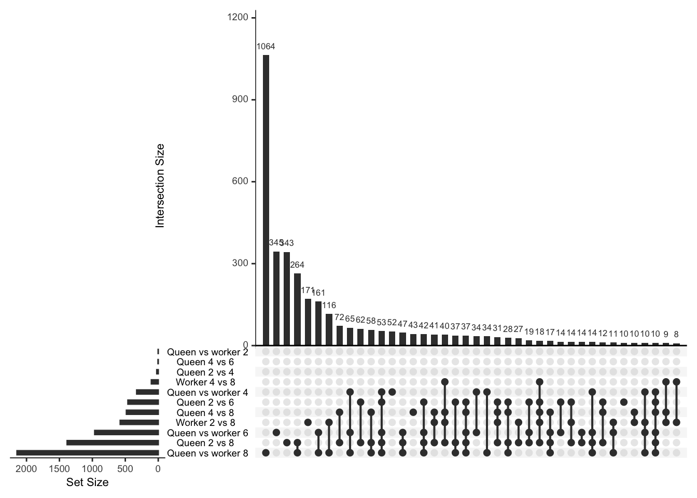
| Version | Author | Date |
|---|---|---|
| f2f9805 | lukeholman | 2020-03-12 |
Correlations in log fold differences in expression
(caste_results %>%
mutate(Caste = "Queen vs worker", Time = as.character(Time)) %>%
select(Caste, Time, `Gene symbol`, `Gene name`, logFC) %>%
bind_rows(time_results %>%
select(Caste, Time, `Gene symbol`, `Gene name`, logFC)) %>%
mutate(Comparison = paste(Caste, Time)) %>%
select(`Gene symbol`, Comparison, logFC) %>% distinct() %>%
spread(Comparison, logFC) %>% select(-`Gene symbol`)) %>%
make_cor_plot(diverging = T, reorder = T) +
theme(axis.text.x = element_text(angle = 45, hjust = 1))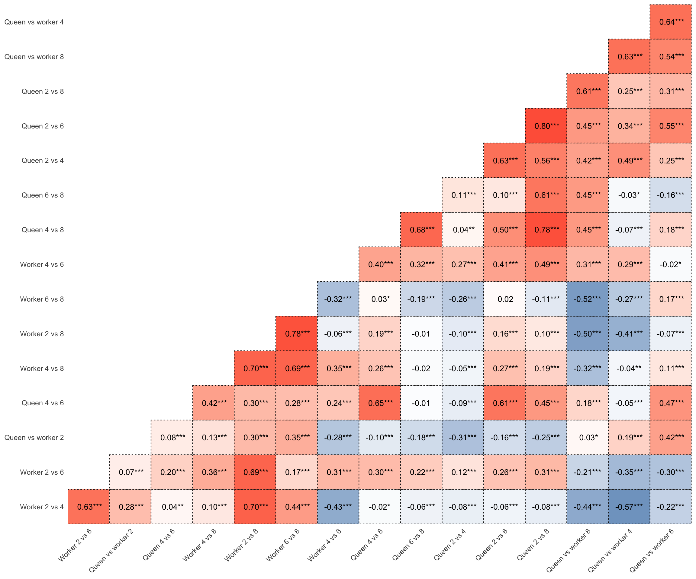
| Version | Author | Date |
|---|---|---|
| f2f9805 | lukeholman | 2020-03-12 |
Enriched pathways among the caste-biased genes
Red means up-regulated in queens, blue upregulated in workers. Calculated separately for each of the 4 time points.
GO: Biological process
# Function to run GSEA implemented in the fgsea package
# df needs to have columns called Gene and logFC
GO_and_KEGG_gsea <- function(df, min.size = 5, keep.all = FALSE){
df <- df %>% arrange(logFC)
p <- 0.05; if(keep.all) p <- 1 # Set the significance threshold
converter <- tbl(db, "gene_names") %>% collect(n=Inf)
# Set up the geneList object in the form needed by the fgsea function - named, ranked vector of pheromone sensitivity per gene
# FIX HERE: SOME GENES ARE NOT NAMED IN ANNOTATION FILE
geneList <- df$logFC
#names(geneList) <- converter$entrez_id[match(df$Gene, converter$gene_symbol)] # Convert SYMBOL names to Entrez IDs
names(geneList) <- df$`Gene symbol`
gene_universe <- names(geneList)
# Internal function to run GO enrichment
GO.enrichment <- function(geneList, ontol){
pathways <- tbl(db, "bee_GO") %>%
collect(n=Inf) %>%
filter(SYMBOL %in% gene_universe,
ONTOLOGY == ontol) %>%
select(-ONTOLOGY)
pathways <- with(pathways, split(SYMBOL, GO))
result <- fgsea::fgsea(pathways, geneList, nperm = 10000, minSize = min.size, maxSize = 500) %>%
filter(pval <= p)
collapse_pathways <- fgsea::collapsePathways(result, pathways, geneList)
pathways_to_keep <- c(collapse_pathways[[1]], names(collapse_pathways[[2]]))
result <- result %>% filter(pathway %in% pathways_to_keep)
result <- result %>%
left_join(tbl(db, "go_meanings") %>%
select(-ontology) %>% collect(n=Inf), by = c("pathway" = "GO"))
if(nrow(result) == 0) return(NULL)
if(ontol == "BP") Test_type <- "GO: Biological process"
if(ontol == "MF") Test_type <- "GO: Molecular function"
if(ontol == "CC") Test_type <- "GO: Cellular component"
data.frame(Test_type = Test_type,
result %>% arrange(padj),
stringsAsFactors = FALSE)
}
# Internal function to run KEGG enrichment
kegg.enrichment <- function(geneList){
apis_kegg <- clusterProfiler::download_KEGG("ame")
apis_kegg_names <- apis_kegg[[2]]
apis_kegg_focal <- apis_kegg[[1]] %>%
left_join(tbl(db, "gene_names") %>%
select(entrez_id, gene_symbol) %>%
collect(n=Inf) %>%
mutate(entrez_id = as.character(entrez_id)),
by = c("to" = "entrez_id")) %>%
filter(gene_symbol %in% gene_universe)
pathways <- with(apis_kegg_focal, split(gene_symbol, from))
result <- fgsea::fgsea(pathways, geneList, nperm = 10000, minSize = min.size, maxSize = 500) %>%
filter(pval <= p)
collapse_pathways <- fgsea::collapsePathways(result, pathways, geneList)
result <- result %>%
filter(pathway %in% c(collapse_pathways[[1]], names(collapse_pathways[[2]]))) %>%
left_join(apis_kegg_names %>% rename(term = to), by = c("pathway" = "from")) %>%
mutate(pathway = str_replace_all(pathway, "ame", "KEGG:"))
if(nrow(result) == 0) return(NULL)
data.frame(Test_type = "KEGG",
result %>% arrange(padj),
stringsAsFactors = FALSE)
}
rbind(GO.enrichment(geneList, "BP"),
GO.enrichment(geneList, "MF"),
GO.enrichment(geneList, "CC"),
kegg.enrichment(geneList))
}
GO_2 <- caste_results %>% filter(Time == 2) %>% GO_and_KEGG_gsea()
GO_4 <- caste_results %>% filter(Time == 4) %>% GO_and_KEGG_gsea()
GO_6 <- caste_results %>% filter(Time == 6) %>% GO_and_KEGG_gsea()
GO_8 <- caste_results %>% filter(Time == 8) %>% GO_and_KEGG_gsea()
sig <- unique(c(GO_2$pathway, GO_4$pathway, GO_6$pathway, GO_8$pathway))
rm(list = c("GO_2", "GO_4", "GO_6", "GO_8"))
all_GO <- rbind(
caste_results %>% filter(Time == 2) %>%
GO_and_KEGG_gsea(keep.all = TRUE) %>% mutate(Time = 2),
caste_results %>% filter(Time == 4) %>%
GO_and_KEGG_gsea(keep.all = TRUE) %>% mutate(Time = 4),
caste_results %>% filter(Time == 6) %>%
GO_and_KEGG_gsea(keep.all = TRUE) %>% mutate(Time = 6),
caste_results %>% filter(Time == 8) %>%
GO_and_KEGG_gsea(keep.all = TRUE) %>% mutate(Time = 8)
) %>% filter(pathway %in% sig) #%>% select(-leadingEdge)
levels <- all_GO %>%
mutate(term_wrapped = str_wrap(term, width = 50)) %>%
group_by(term_wrapped) %>%
summarise(p = prod(padj)^0.25) %>%
arrange(p) %>% pull(term_wrapped) %>% rev()
all_GO <- all_GO %>%
mutate(term = str_wrap(term, width = 50)) %>%
mutate(term = factor(term, levels),
sig = ifelse(pval < 0.05, "*", ""),
sig = replace(sig, padj < 0.05, "**"))
BP_fig <- all_GO %>%
filter(Test_type == "GO: Biological process") %>%
mutate(Time = as.character(Time)) %>%
ggplot(aes(Time, term, fill = NES)) +
scale_fill_gradient2(low = "steelblue", high = "tomato") +
geom_tile() +
geom_text(aes(label = sig))
MF_fig <- all_GO %>%
filter(Test_type == "GO: Molecular function") %>%
mutate(Time = as.character(Time)) %>%
ggplot(aes(Time, term, fill = NES)) +
scale_fill_gradient2(low = "steelblue", high = "tomato") +
geom_tile() +
geom_text(aes(label = sig))
CC_fig <- all_GO %>%
filter(Test_type == "GO: Cellular component") %>%
mutate(Time = as.character(Time)) %>%
ggplot(aes(Time, term, fill = NES)) +
scale_fill_gradient2(low = "steelblue", high = "tomato") +
geom_tile() +
geom_text(aes(label = sig))
kegg_fig <- all_GO %>%
filter(Test_type == "KEGG") %>%
mutate(Time = as.character(Time)) %>%
ggplot(aes(Time, term, fill = NES)) +
scale_fill_gradient2(low = "steelblue", high = "tomato") +
geom_tile() +
geom_text(aes(label = sig))
BP_fig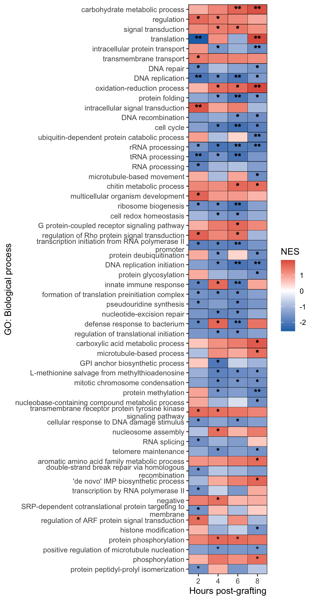
| Version | Author | Date |
|---|---|---|
| f2f9805 | lukeholman | 2020-03-12 |

Gene coexpresison network analysis
Build the network using WGCNA::blockwiseModules()
build.network <- function(expression_data){
# We need samples=rows, columns= genes (opposite of limma!)
my_data <- t(expression_data)
# Pick the soft thresholding power that gives a model fit of R^2 > 0.8 for the scale-free topology model
soft.power <- pickSoftThreshold(
my_data, RsquaredCut = 0.8, verbose = 0, powerVector = 1:30)
# Use this power to generate a gene co-expression network, using the default settings
network <- blockwiseModules(
my_data,
power = soft.power$powerEstimate,
networkType = "signed",
minModuleSize = 30,
verbose = 0,
saveTOMs = FALSE)
network
}
# By default, WGCNA gives the transcriptional modules random names like 'turqoise' or 'darkred'.
# I think it's more helpful to define the biggest module as 'Module 1', the second biggest as 'Module 2', etc
# I use the label 'Module 0' for genes that were not assigned to a module
convert_colors_to_numbers <- function(network){
module_sizes <- table(network$colors) %>% sort() %>% rev()
module_sizes <- c(module_sizes[names(module_sizes) == "grey"],
module_sizes[names(module_sizes) != "grey"])
module_mappings <- data.frame(
color = names(module_sizes),
new_name = paste("Module",
0:(length(module_sizes)-1)), stringsAsFactors = F)
# Edit the colours of each gene to module names
network$colors <- module_mappings$new_name[
match(network$colors, module_mappings$color)]
network$colors <- factor(network$colors, module_mappings$new_name)
# Edit the corresponding module eigengenes
names(network$MEs) <- module_mappings$new_name[
match(gsub("ME", "", names(network$MEs)), module_mappings$color)]
network$MEs <- network$MEs %>% select(!! module_mappings$new_name)
network
}
# Rearrange the data in a handy format for stats and plotting, and remove the 'Module 0', the un-assigned genes
rearrange_eigengene_data <- function(network, sample_ids){
n_modules <- ncol(network$MEs)
network$MEs %>%
mutate(Caste = sample_ids$caste, Time = sample_ids$time_point, Replicate = sample_ids$replicate) %>%
gather(Module, Eigengene, starts_with("Module")) %>%
mutate(Module = factor(Module, levels = paste("Module", 0:(n_modules - 1)))) %>%
arrange(Module, Caste, Time) %>% as_tibble()
}
network <- expression_data %>%
build.network() %>%
convert_colors_to_numbers()
connectivity <- data.frame(
Gene = rownames(expression_data),
intramodularConnectivity.fromExpr(
t(expression_data),
network$colors,
networkType = "signed",
scaleByMax = FALSE,
ignoreColors = "Module 0",
getWholeNetworkConnectivity = TRUE))
write_csv(connectivity, path = "data/gene_connectivity.csv")Count the number of genes per module
network$colors %>% table() %>% pander()| Module 0 | Module 1 | Module 2 | Module 3 | Module 4 | Module 5 | Module 6 |
|---|---|---|---|---|---|---|
| 611 | 3441 | 1583 | 1507 | 724 | 311 | 299 |
| Module 7 | Module 8 | Module 9 | Module 10 | Module 11 | Module 12 | Module 13 |
|---|---|---|---|---|---|---|
| 266 | 234 | 218 | 116 | 77 | 71 | 55 |
| Module 14 | Module 15 |
|---|---|
| 50 | 37 |
Modelling the eigengene estimates
eigengenes <- network %>% rearrange_eigengene_data(sample_ids = sample_ids)
eigengene_model_data <- eigengenes %>%
mutate(sample = rep(colnames(expression_data), length(unique(Module)))) %>%
spread(Module, Eigengene) %>%
rename_at(vars(starts_with("Module")), ~ gsub("Module ", "m", .x))
library(MuMIn)
library(lme4)
eigen_model_AIC <- lapply(0:(length(unique(network$colors)) - 1), function(i){
y <- eigengene_model_data %>% pull(paste("m", i, sep = ""))
# Fit this full model, once for each module
model_fit <- lmer(y ~ Caste * Time + (1 | Replicate), data = eigengene_model_data)
# Compare it to its sub-models using AICc, via dredge()
with(options(na.action = na.fail), as.data.frame(dredge(model_fit))) %>% mutate(Module = i)
}) %>% bind_rows() %>%
mutate(Formula = "Intercept only",
Formula = replace(Formula, !is.na(Caste), "Caste"),
Formula = replace(Formula, !is.na(Time), "Time"),
Formula = replace(Formula, !is.na(Caste:Time), "Caste x Time"),
Formula = replace(Formula, !is.na(Caste:Time) & df == 7, "Caste + Time")) %>%
select(Module, Formula, delta, weight) %>%
mutate(` ` = ifelse(delta == 0, "Top model", ""))
# library(brms)
# brms_formula <- bf(paste("mvbind(",
# paste0(paste("m", 0:(length(unique(eigengenes$Module)) - 1), sep = ""), collapse = ","),
# ") ~ Caste * Time + (1 | Replicate)", sep = "")) + set_rescor(FALSE)
#
#
# brms_eigengene_model <- brm(
# brms_formula,
# data = brms_data,
# prior = c(set_prior("normal(0, 1)", class = "b")),
# chains = 4, iter = 4000, cores = 4, inits = 0,
# control = list(adapt_delta = 0.9999, max_treedepth = 20))
# pp_check(brms_eigengene_model, resp = "m1", nsamples = 100)
#
# new <- expand.grid(Time = as.character(c(2,4,6,8)), Caste = c("Queen", "Worker"), stringsAsFactors = FALSE) %>% as_tibble()
# preds <- fitted(brms_eigengene_model, new, re_formula = NA)
# preds <- map(1:dim(preds)[3], ~ data.frame(new, preds[ , , .x]) %>% mutate(Module = paste("Module", .x - 1))) %>% bind_rows() %>% as_tibble()Plot the eigengenes for each module by caste and time
eigengenes %>%
mutate(mod_num = as.numeric(gsub("Module ", "", Module))) %>%
left_join(eigen_model_AIC %>%
filter(delta == 0), by = c("mod_num" = "Module")) %>%
mutate(Module = paste(Module, ": ",
Formula, " (", format(round(weight,2), nsmall=2), ")", sep = ""),
Module = gsub("Intercept only", "Null", Module),
Module = factor(Module, unique(Module))) %>%
ggplot(aes(Time, Eigengene, fill = Caste)) +
geom_boxplot() +
scale_fill_manual(values = c("#fc766a", "#fed65e")) +
ylab("Relative expression level of genes in this module (Eigengene)") +
xlab("Time (hours post-grafting)") +
facet_wrap(~Module, scales = "free_y")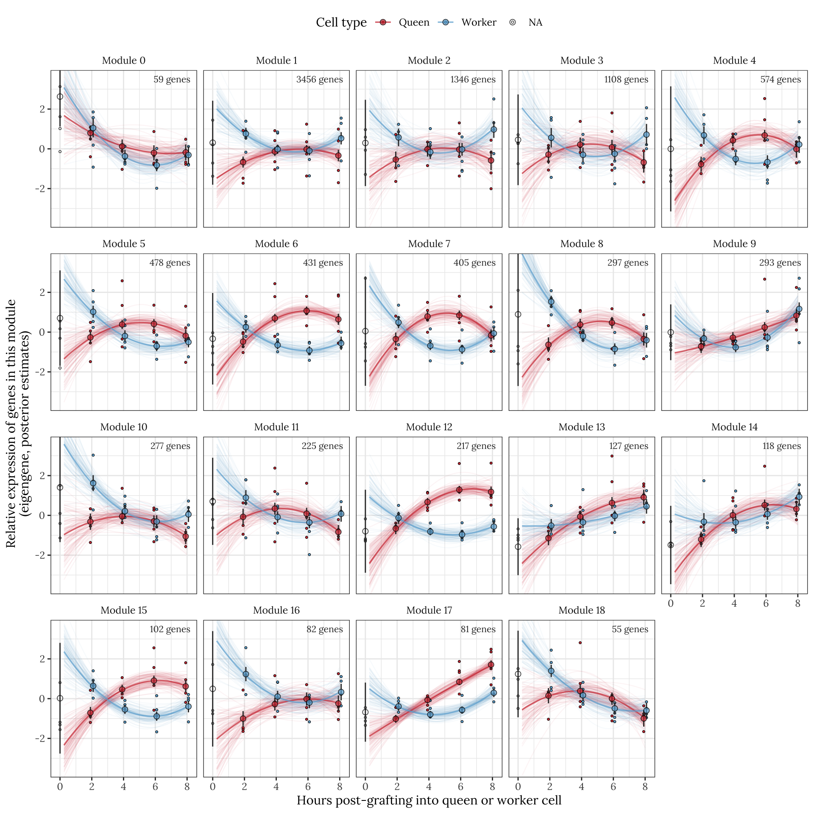
| Version | Author | Date |
|---|---|---|
| f2f9805 | lukeholman | 2020-03-12 |
Identify GO and KEGG terms enriched in each module
genes_in_module <- function(module.number){
rownames(expression_data)[network$colors == paste("Module", module.number)]
}
GO.and.KEGG.hypergeometric <- function(gene_set, gene_universe, apis.db, min.size = 5, keep.all = FALSE){
p <- 0.05; if(keep.all) p <- 1
neatness <- function(x) format(round(x, 4), nsmall = 4) # for rounding
GO.enrichment <- function(gene_set, gene_universe, ontol){
result <- enrichGO(gene_set, apis.db, ont = ontol,
pvalueCutoff = p, universe = gene_universe,
qvalueCutoff = 1, minGSSize = min.size, maxGSSize = 500)
if(is.null(result)) return(NULL)
if(nrow(result@result) == 0) return(NULL)
result <- gofilter(result, level = 4) # Filter to high-level GO only
if(is.null(result)) return(NULL)
if(nrow(result@result) == 0) return(NULL)
result <- result@result
is_enriched <- sapply(result$GeneRatio, function(x) eval(parse(text=x))) > sapply(result$BgRatio, function(x) eval(parse(text=x)))
result <- result[is_enriched, ] %>% mutate(p.adjust = p.adjust(pvalue, method = "BH"))
Test_type <- "GO: Biological process"
if(ontol == "MF") Test_type <- "GO: Molecular function"
if(ontol == "CC") Test_type <- "GO: Cellular component"
data.frame(Test_type = Test_type, result, stringsAsFactors = FALSE)
}
kegg.enrichment <- function(gene_set, gene_universe){
result <- enrichKEGG(gene_set, organism = "ame", keyType = "kegg", pvalueCutoff = p,
gene_universe, minGSSize = min.size, maxGSSize = 500,
qvalueCutoff = 1, use_internal_data = FALSE, pAdjustMethod = "BH")
if(is.null(result)) return(NULL)
result <- result@result
is_enriched <- sapply(result$GeneRatio, function(x) eval(parse(text=x))) > sapply(result$BgRatio, function(x) eval(parse(text=x)))
result <- result[is_enriched, ] %>% mutate(p.adjust = p.adjust(pvalue, method = "BH"))
if(nrow(result %>% filter(pvalue < p)) == 0) return(NULL)
data.frame(Test_type = "KEGG", result, stringsAsFactors = FALSE)
}
output <- rbind(kegg.enrichment(gene_set, gene_universe),
GO.enrichment(gene_set, gene_universe, "BP"),
GO.enrichment(gene_set, gene_universe, "MF"),
GO.enrichment(gene_set, gene_universe, "CC"))
if(is.null(output)) return(NULL)
output %>%
mutate(ID = str_replace_all(ID, "ame", "KEGG:"),
geneID = str_replace_all(geneID, "/", " "))
}
make_module_GO_table <- function(eigengenes){
n_modules <- eigengenes$Module %>% unique() %>% length()
add_name_col <- function(df){
df$gene_names <- map_chr(df$geneID, ~ paste0(converter$gene_name[match(.x, converter$entrez_id)], collapse = "; "))
df %>% mutate(geneID = map_chr(geneID, function(x) paste0(x, collapse = " ")))
}
converter <- tbl(db, "gene_names") %>% collect(n=Inf) %>%
filter(gene_symbol %in% rownames(expression_data))
hub <- AnnotationHub::AnnotationHub()
select <- dplyr::select
rename <- dplyr::rename
filter <- dplyr::filter
apis.db <- hub[["AH76825"]]
gene_universe_modules <- converter$entrez_id[converter$gene_symbol %in% rownames(expression_data)] %>% as.character()
results <- lapply(1:n_modules, function(i) {
print(paste("Doing", i, "/", n_modules, "modules"))
# Entrez IDs of the genes in the focal module
gene_set <- converter$entrez_id[converter$gene_symbol %in% genes_in_module(i)] %>% as.character()
df <- GO.and.KEGG.hypergeometric(gene_set, gene_universe_modules, apis.db)
if(is.null(df)) return(NULL)
if(nrow(df) == 0) return(NULL)
# # enrichment ratio: proportion genes in sample / proportion in gene universe
prop_genes_in_sample <- map_dbl(1:nrow(df), function(i) eval(parse(text = df$GeneRatio[i])))
prop_genes_in_universe <- map_dbl(1:nrow(df), function(i) eval(parse(text = df$BgRatio[i])))
df %>%
mutate(Module = paste("Module", i),
enrichment = prop_genes_in_sample / prop_genes_in_universe) %>%
arrange(pvalue)
}) %>%
do.call("rbind", .) %>%
mutate(Description = factor(Description, unique(Description))) %>%
filter(pvalue <= 0.05) # Only keep GO terms where the UN-adjusted p is significant
results %>%
select(Module, Test_type, ID, Description, GeneRatio, BgRatio,
enrichment, pvalue, p.adjust, qvalue, Count, geneID) %>%
as_tibble() %>%
mutate(Module = factor(Module, paste("Module", 0:(n_modules-1))),
geneID = strsplit(results$geneID, split = " ")) %>%
add_name_col() %>%
mutate(sig = ifelse(p.adjust <= 0.05, "yes", "no"), # note: ADJUSTED p
sig = relevel(factor(sig), ref = "yes"))
}
module_enrichment_plot <- function(df, is.KEGG = FALSE){
label <- "Name of GO term"
if(is.KEGG) label <- "Name of KEGG term"
df %>% arrange(Module, log2(enrichment)) %>%
mutate(Description = factor(Description, unique(Description)),
Test_type = factor(Test_type, c("GO: Biological process", "GO: Molecular function", "GO: Cellular component", "KEGG"))) %>%
ggplot(aes(Description, log2(enrichment))) +
geom_bar(aes(fill = sig), stat = "identity", colour = "grey10") +
facet_wrap(~Module) +
scale_fill_brewer(palette = "Accent", direction = -1) +
scale_x_discrete(labels = function(x) str_wrap(x, width = 60)) +
theme_bw() +
theme(legend.position = "none", strip.background = element_blank(), strip.text = element_text(size = 10)) +
ylab("Log2 fold enrichment") + xlab(label) +
coord_flip()
}
module_GO_table <- make_module_GO_table(eigengenes) Figures of the module enrichment results
Showing a few of the most caste-biased modules, based on eyeballing the eigengenes figure.
KEGG
mods <- c("Module 6", "Module 7", "Module 12", "Module 13")
module_KEGG <- module_GO_table %>%
filter(Test_type == "KEGG", Module %in% mods) %>%
module_enrichment_plot(is.KEGG = TRUE)
#ggsave(module_KEGG, file = "figures/Figure 4 - module KEGG.pdf", height = 7, width = 8)
module_KEGG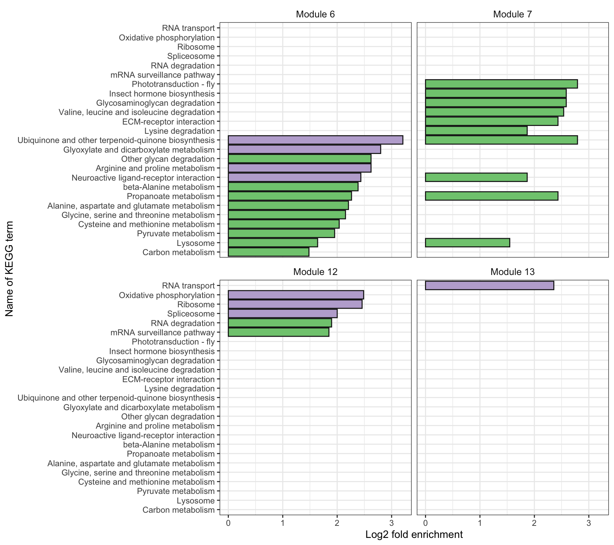
| Version | Author | Date |
|---|---|---|
| f2f9805 | lukeholman | 2020-03-12 |
xx <- cbind(
melt(rowSums(expression_data[rownames(expression_data), 1:16])),
melt(rowSums(expression_data[rownames(expression_data), 17:32])))
names(xx) <- c("Q", "W")
xx %>% rownames_to_column("gene") %>%
filter(Q==0 | W==0) %>% arrange(Q) %>%
left_join(tbl(db, "gene_names") %>% collect(n=Inf), by=c("gene" = "gene_symbol"))
Figure 4: Results of KEGG pathway enrichment analysis for the genes in each of the three significantly pheromone-sensitive transcriptional modules. The gene universe was defined as all genes for which we found an ortholog in all four species (i.e. the set that was used to discover these co-expressed modules). All KEGG terms shown in green were significantly enriched (p < 0.05), and those shown in purple remained significant after correction for multiple testing. Fold enrichment was calculated as the proportion of genes associated with the focal KEGG term in the module, divided by the equivalent proportion in the gene universe.
GO BP
fig_S6 <- module_GO_table %>%
filter(Test_type == "GO: Biological process", Module %in% mods) %>%
module_enrichment_plot()
# saveRDS(fig_S6, file = "supplement/fig_S6.rds")
fig_S6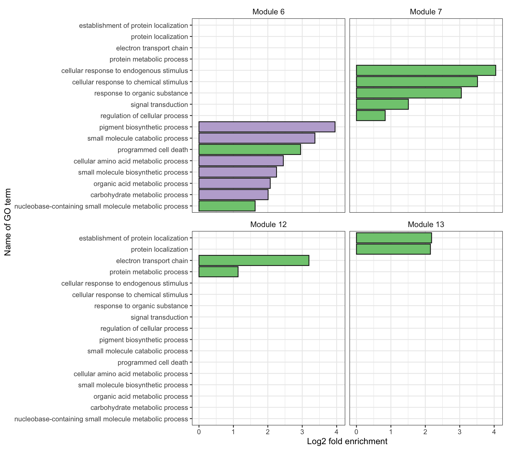
| Version | Author | Date |
|---|---|---|
| f2f9805 | lukeholman | 2020-03-12 |
Figure SX: Comparable figure to Figure 4, showing the results of GO: Biological process enrichment analysis instead of KEGG pathways.
GO MF
fig_S7 <- module_GO_table %>%
filter(Test_type == "GO: Molecular function", Module %in% mods) %>%
module_enrichment_plot()
# saveRDS(fig_S7, file = "supplement/fig_S7.rds")
fig_S7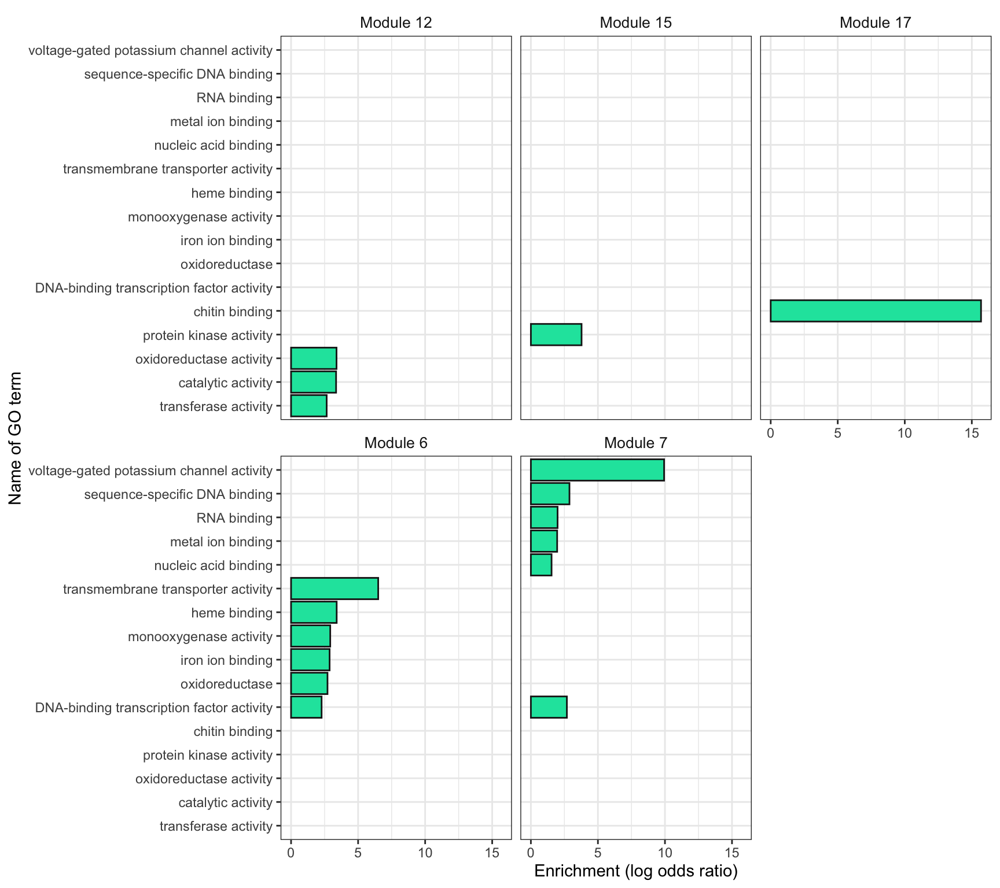
| Version | Author | Date |
|---|---|---|
| f2f9805 | lukeholman | 2020-03-12 |
Figure SX: Comparable figure to Figure 4, showing the results of GO: Molecular function enrichment analysis instead of KEGG pathways.
GO CC
fig_S8 <- module_GO_table %>%
filter(Test_type == "GO: Cellular component", Module %in% mods) %>%
module_enrichment_plot()
# saveRDS(fig_S8, file = "supplement/fig_S8.rds")
fig_S8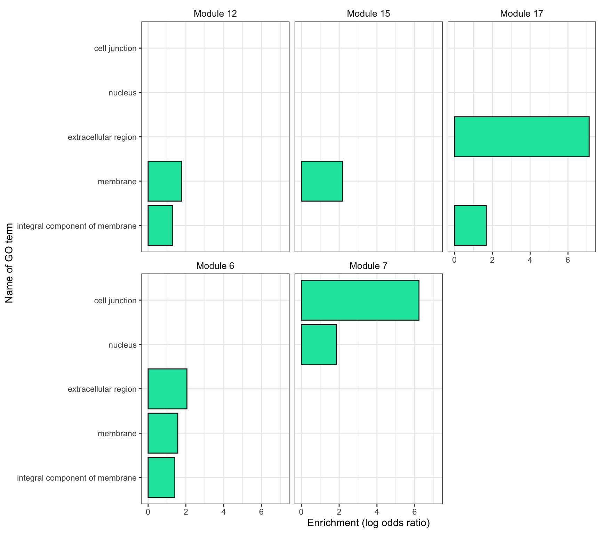
| Version | Author | Date |
|---|---|---|
| f2f9805 | lukeholman | 2020-03-12 |
Figure SX: Comparable figure to Figure 4, showing the results of GO: Cellular component enrichment analysis instead of KEGG pathways. Module 9 is missing because no GO:CC terms were significantly enriched.
Compare our results to Warner et al.
source("code/create_merged_data.R")
merged_data <- merged_data %>%
dplyr::select(-`Beebase ID`, -`Gene symbol`, -`Gene name`)Correlations across Apis genes in all sorts of variables from various studies:
merged_data %>%
make_cor_plot(diverging = TRUE) +
theme(axis.text.x = element_text(angle = 45, hjust = 1))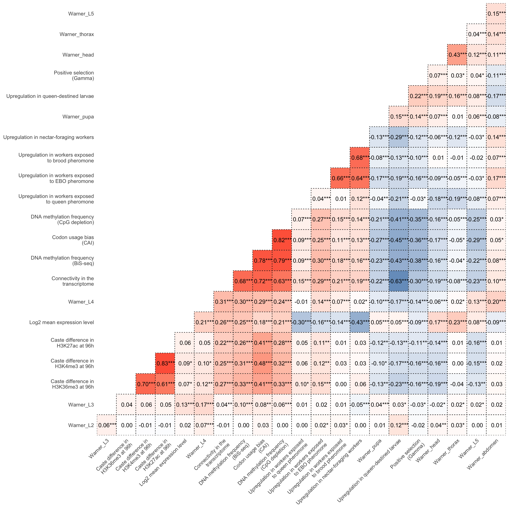
| Version | Author | Date |
|---|---|---|
| f2f9805 | lukeholman | 2020-03-12 |
Scatterplots showing some of these same relationships explicitly:
make_a_plot <- function(yvar){
names(merged_data)[names(merged_data) == yvar] <- "y"
merged_data <- merged_data %>% dplyr::select(`Upregulation in queen-destined larvae`, y)
merged_data <- merged_data[complete.cases(merged_data), ]
merged_data <- merged_data[is.finite(merged_data$y), ]
ylim <- range(merged_data$y)
ylim[1] <- ylim[1] - (ylim[1]*0.05)
ylim[2] <- ylim[2] + (ylim[2]*0.05)
p <- ggplot(merged_data, aes(`Upregulation in queen-destined larvae`, y)) +
geom_vline(xintercept = 0, linetype = 2, colour = "black")
if(min(merged_data$y) < 0 & !(yvar %in% ("Log2 mean expression level"))) {
p <- p + geom_hline(yintercept = 0, linetype = 2, colour = "black")
}
p + stat_bin_hex() +
# stat_smooth(method = "loess", colour = "tomato") +
scale_fill_viridis_c(option = "D") +
coord_cartesian(ylim = ylim) +
ylab(yvar) + xlab(NULL) +
theme_bw(10) +
theme(legend.position = "none")
}
var <- names(sapply(merged_data, is.numeric)[sapply(merged_data, is.numeric)])
plots <- var[var != "Upregulation in queen-destined larvae"] %>%
sort() %>% lapply(make_a_plot)
do.call(grid.arrange, c(plots, list(bottom = "Caste bias in 8h-old larvae (positive = queen-biased)")))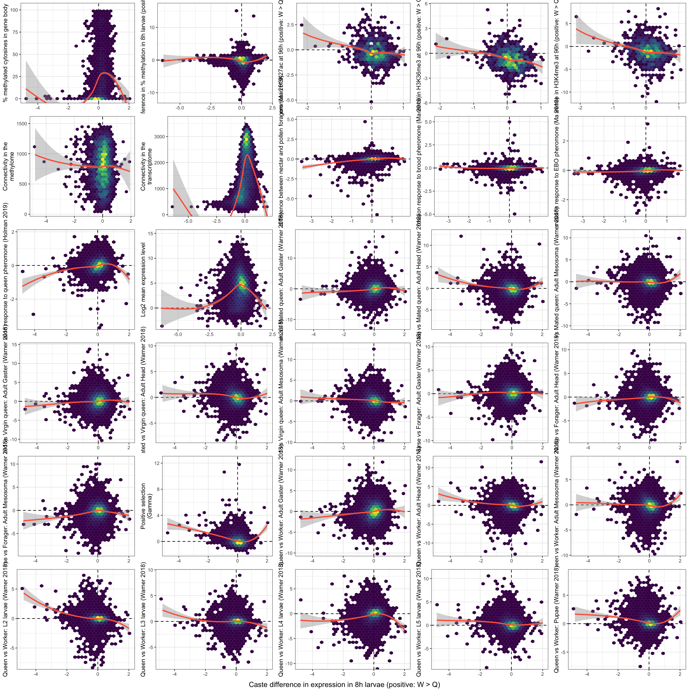
| Version | Author | Date |
|---|---|---|
| f2f9805 | lukeholman | 2020-03-12 |
rm(plots)
merged_data %>%
dplyr::select(`Upregulation in queen-destined larvae`, starts_with("Warner")) %>%
cor(use = 'pairwise.complete.obs', method = "spearman") %>% round(2) Upregulation in queen-destined larvae
Upregulation in queen-destined larvae 1.00
Warner_L2 0.12
Warner_L3 0.03
Warner_L4 -0.17
Warner_L5 0.08
Warner_pupa 0.15
Warner_head 0.19
Warner_thorax 0.16
Warner_abdomen -0.17
Warner_L2 Warner_L3 Warner_L4 Warner_L5
Upregulation in queen-destined larvae 0.12 0.03 -0.17 0.08
Warner_L2 1.00 0.06 0.07 0.00
Warner_L3 0.06 1.00 0.17 0.02
Warner_L4 0.07 0.17 1.00 0.13
Warner_L5 0.00 0.02 0.13 1.00
Warner_pupa 0.01 0.04 -0.10 0.06
Warner_head 0.04 -0.02 -0.06 0.12
Warner_thorax 0.03 0.02 0.02 0.04
Warner_abdomen 0.01 0.02 0.20 0.15
Warner_pupa Warner_head Warner_thorax
Upregulation in queen-destined larvae 0.15 0.19 0.16
Warner_L2 0.01 0.04 0.03
Warner_L3 0.04 -0.02 0.02
Warner_L4 -0.10 -0.06 0.02
Warner_L5 0.06 0.12 0.04
Warner_pupa 1.00 0.07 0.01
Warner_head 0.07 1.00 0.43
Warner_thorax 0.01 0.43 1.00
Warner_abdomen -0.08 0.11 0.14
Warner_abdomen
Upregulation in queen-destined larvae -0.17
Warner_L2 0.01
Warner_L3 0.02
Warner_L4 0.20
Warner_L5 0.15
Warner_pupa -0.08
Warner_head 0.11
Warner_thorax 0.14
Warner_abdomen 1.00
sessionInfo()R version 3.6.2 (2019-12-12)
Platform: x86_64-apple-darwin15.6.0 (64-bit)
Running under: macOS High Sierra 10.13.6
Matrix products: default
BLAS: /Library/Frameworks/R.framework/Versions/3.6/Resources/lib/libRblas.0.dylib
LAPACK: /Library/Frameworks/R.framework/Versions/3.6/Resources/lib/libRlapack.dylib
locale:
[1] en_AU.UTF-8/en_AU.UTF-8/en_AU.UTF-8/C/en_AU.UTF-8/en_AU.UTF-8
attached base packages:
[1] parallel stats4 stats graphics grDevices utils datasets
[8] methods base
other attached packages:
[1] AnnotationDbi_1.48.0 IRanges_2.20.2 S4Vectors_0.24.3
[4] Biobase_2.46.0 BiocGenerics_0.32.0 lme4_1.1-21
[7] Matrix_1.2-18 MuMIn_1.43.15 fgsea_1.12.0
[10] Rcpp_1.0.3 ggrepel_0.8.1 pheatmap_1.0.12
[13] UpSetR_1.4.0 reshape2_1.4.3 kableExtra_1.1.0
[16] pander_0.6.3 RColorBrewer_1.1-2 clusterProfiler_3.14.3
[19] WGCNA_1.69 fastcluster_1.1.25 dynamicTreeCut_1.63-1
[22] ecodist_2.0.3 gridExtra_2.3 gplots_3.0.1.2
[25] RSQLite_2.2.0 DBI_1.1.0 dbplyr_1.4.2
[28] edgeR_3.28.1 limma_3.42.2 forcats_0.4.0
[31] stringr_1.4.0 dplyr_0.8.4 purrr_0.3.3
[34] readr_1.3.1 tidyr_1.0.2 tibble_2.1.3
[37] ggplot2_3.3.0 tidyverse_1.3.0 workflowr_1.6.0
loaded via a namespace (and not attached):
[1] tidyselect_1.0.0 htmlwidgets_1.5.1
[3] grid_3.6.2 BiocParallel_1.20.1
[5] munsell_0.5.0 codetools_0.2-16
[7] preprocessCore_1.48.0 withr_2.1.2
[9] colorspace_1.4-1 GOSemSim_2.12.0
[11] highr_0.8 knitr_1.28
[13] rstudioapi_0.11 DOSE_3.12.0
[15] labeling_0.3 git2r_0.26.1
[17] urltools_1.7.3 polyclip_1.10-0
[19] bit64_0.9-7 farver_2.0.3
[21] rprojroot_1.3-2 vctrs_0.2.2
[23] generics_0.0.2 xfun_0.12
[25] BiocFileCache_1.10.2 R6_2.4.1
[27] doParallel_1.0.15 graphlayouts_0.6.0
[29] locfit_1.5-9.1 bitops_1.0-6
[31] gridGraphics_0.5-0 assertthat_0.2.1
[33] promises_1.1.0 scales_1.1.0
[35] ggraph_2.0.1 nnet_7.3-12
[37] enrichplot_1.6.1 gtable_0.3.0
[39] tidygraph_1.1.2 rlang_0.4.4
[41] splines_3.6.2 acepack_1.4.1
[43] impute_1.60.0 hexbin_1.28.1
[45] broom_0.5.4 europepmc_0.3
[47] checkmate_2.0.0 BiocManager_1.30.10
[49] yaml_2.2.1 modelr_0.1.5
[51] backports_1.1.5 httpuv_1.5.2
[53] qvalue_2.18.0 Hmisc_4.3-1
[55] tools_3.6.2 ggplotify_0.0.4
[57] ellipsis_0.3.0 ggridges_0.5.2
[59] plyr_1.8.5 base64enc_0.1-3
[61] progress_1.2.2 prettyunits_1.1.1
[63] rpart_4.1-15 viridis_0.5.1
[65] cowplot_1.0.0 haven_2.2.0
[67] cluster_2.1.0 fs_1.3.1
[69] magrittr_1.5 data.table_1.12.8
[71] DO.db_2.9 triebeard_0.3.0
[73] reprex_0.3.0 whisker_0.4
[75] matrixStats_0.55.0 xtable_1.8-4
[77] mime_0.9 hms_0.5.3
[79] evaluate_0.14 jpeg_0.1-8.1
[81] readxl_1.3.1 compiler_3.6.2
[83] KernSmooth_2.23-16 crayon_1.3.4
[85] minqa_1.2.4 htmltools_0.4.0
[87] later_1.0.0 Formula_1.2-3
[89] lubridate_1.7.4 tweenr_1.0.1
[91] MASS_7.3-51.5 rappdirs_0.3.1
[93] boot_1.3-24 cli_2.0.1
[95] gdata_2.18.0 igraph_1.2.4.2
[97] pkgconfig_2.0.3 rvcheck_0.1.7
[99] foreign_0.8-75 xml2_1.2.2
[101] foreach_1.4.8 webshot_0.5.2
[103] rvest_0.3.5 digest_0.6.23
[105] rmarkdown_2.1 cellranger_1.1.0
[107] fastmatch_1.1-0 htmlTable_1.13.3
[109] curl_4.3 shiny_1.4.0
[111] gtools_3.8.1 nloptr_1.2.1
[113] lifecycle_0.1.0 nlme_3.1-144
[115] jsonlite_1.6.1 viridisLite_0.3.0
[117] fansi_0.4.1 pillar_1.4.3
[119] lattice_0.20-38 fastmap_1.0.1
[121] httr_1.4.1 survival_3.1-8
[123] GO.db_3.10.0 interactiveDisplayBase_1.24.0
[125] glue_1.3.1 png_0.1-7
[127] iterators_1.0.12 BiocVersion_3.10.1
[129] bit_1.1-15.1 ggforce_0.3.1
[131] stringi_1.4.5 blob_1.2.1
[133] AnnotationHub_2.18.0 latticeExtra_0.6-29
[135] caTools_1.18.0 memoise_1.1.0